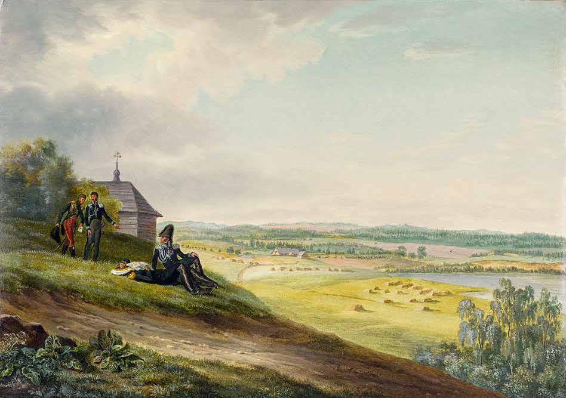

<title>Rykantų laiko mašina</title>
<meta name="claude:viewport-fit-sides" content="cover">
<link rel="preconnect" href="https://fonts.googleapis.com">
<link rel="preconnect" href="https://fonts.gstatic.com" crossorigin>
<link rel="stylesheet" href="https://fonts.googleapis.com/css2?family=Space+Grotesk:wght@300..700&display=swap">
<style>
/* Layout: cobalt field; artefacts stream right to left through the chrome blob, the time machine, which reads out the year and the artefact passing through it; drag or swipe to travel; a picked scrap opens large beside a caption box; filter dock at the bottom; logbook below */
:root {
  --cobalt: #0047AB;
  --cobalt-glow: #2A6BE0;
  --cobalt-deep: #001E5C;
  --night: #000B26;
  --ink: #F2F5FF;
  --ink-soft: #B7C6EE;
  --line: rgba(242, 245, 255, 0.22);
  --glass: rgba(6, 22, 70, 0.55);
  --paper: #F3EEE2;
  --holo: linear-gradient(90deg, #8FF5FF 0%, #B79CFF 35%, #FF8BE0 68%, #FFD98A 100%);
  --ink-black: #0A0E1A;
  --white-paper: #F4F3EF;
  --holo-diag: linear-gradient(135deg, #8FF5FF 0%, #B79CFF 35%, #FF8BE0 68%, #FFD98A 100%);
  --k-archyvas: #8FF5FF;
  --k-tekstas: #F4F3EF;
  --k-tyrimas: #B79CFF;
  --k-balsas: #FF8BE0;
  --k-renginys: #FFC2A8;
  --k-asmuo: #FF9E8A;
  --k-duomenys: #A8F0C6;
  --f-display: "Space Grotesk", "Helvetica Neue", Arial, sans-serif;
  --f-body: "Space Grotesk", "Helvetica Neue", Arial, sans-serif;
  --f-mono: "Space Grotesk", "Helvetica Neue", Arial, sans-serif;
  color-scheme: dark;
}
* { box-sizing: border-box; }
body { margin: 0; background: var(--cobalt); color: var(--ink); font-family: var(--f-body); font-size: 17px; line-height: 1.5; }
a { color: var(--ink); text-underline-offset: 3px; text-decoration-thickness: 1px; }
a:hover { color: #8FF5FF; }
:focus-visible { outline: 2px solid #8FF5FF; outline-offset: 3px; }
.sr { position: absolute; width: 1px; height: 1px; overflow: hidden; clip: rect(0 0 0 0); white-space: nowrap; }

/* Scene */
.scene {
  position: relative;
  height: clamp(640px, 94vh, 1000px);
  height: clamp(640px, 94svh, 1000px);
  overflow: hidden;
  overflow: clip;
  isolation: isolate;
  touch-action: pan-y;
  cursor: grab;
  background: radial-gradient(ellipse 70% 62% at 50% 48%, var(--cobalt-glow) 0%, var(--cobalt) 45%, #00307F 78%, var(--cobalt-deep) 100%);
}
.scene.is-dragging { cursor: grabbing; }
#gl { position: absolute; inset: 0; z-index: 2; width: 100%; height: 100%; display: block; pointer-events: none; }
.blobfb { display: none; position: absolute; z-index: 2; width: 200px; aspect-ratio: 1; border-radius: 46% 54% 52% 48% / 50% 44% 56% 50%; background: conic-gradient(from 20deg, #8FF5FF, #B79CFF, #FF8BE0, #FFD98A, #8FF5FF); box-shadow: inset -30px -40px 80px rgba(0, 10, 60, 0.75), inset 24px 24px 60px rgba(255, 255, 255, 0.45); transform: translate(-50%, -50%); pointer-events: none; }
.no-gl .blobfb { display: block; }

.world { position: absolute; inset: 0; z-index: 1; }

/* Scraps */
.scrap { position: absolute; left: 0; top: 0; display: block; margin: 0; padding: 0; border: 0; background: none; color: inherit; font: inherit; text-align: left; cursor: pointer; transform-origin: 0 0; will-change: transform; }
.scrap .sc { position: relative; width: 100%; height: 100%; transition: transform 0.28s cubic-bezier(0.2, 0.8, 0.2, 1); animation: drift var(--dur, 8s) ease-in-out var(--delay, 0s) infinite; }
@keyframes drift {
  0%, 100% { translate: 0 0; rotate: 0deg; }
  30% { translate: var(--dx, 4px) var(--dy, -5px); rotate: var(--dr, 1deg); }
  65% { translate: calc(var(--dx, 4px) * -0.7) calc(var(--dy, -5px) * 0.6); rotate: calc(var(--dr, 1deg) * -0.8); }
}
.d-fig .sc { animation: none; }
.scrap:hover { z-index: 4; }
.scrap:hover .sc { transform: scale(1.3) rotate(-1.5deg); }
.mode-scatter .scrap:hover .sc, .mode-stream .scrap:hover .sc { transform: scale(1.95) rotate(-1.5deg); }
.scrap:hover { z-index: 6 !important; }
.scrap.is-dim { opacity: 0.1; pointer-events: none; }
.scrap.is-sel { z-index: 5; }
.scrap:focus-visible { outline: none; }
.scrap.is-sel::after, .scrap:focus-visible::after { content: ""; position: absolute; inset: -12px; border: 4px solid #8FF5FF; border-radius: 14px; pointer-events: none; }
.d-fig .scrap::after { display: none; }
.s-type { display: block; font-family: var(--f-mono); font-size: 11px; letter-spacing: 0.08em; text-transform: uppercase; line-height: 1.2; }
.s-year { display: block; font-family: var(--f-display); font-weight: 700; font-size: 30px; line-height: 1; letter-spacing: -0.01em; }
.s-year.is-text { font-size: 17px; }
.s-title { display: -webkit-box; -webkit-box-orient: vertical; -webkit-line-clamp: 4; overflow: hidden; font-size: 14px; font-weight: 600; line-height: 1.22; }

/* Archive: stamp-edged scan or stamp-shaped paper */
.k-archyvas .sc {
  padding: 8px;
  background: #F4F1E8;
  -webkit-mask: conic-gradient(#000 0 0) content-box, radial-gradient(circle 4.5px, #0000 96%, #000) -6px -6px / 12px 12px round padding-box;
  mask: conic-gradient(#000 0 0) content-box, radial-gradient(circle 4.5px, #0000 96%, #000) -6px -6px / 12px 12px round padding-box;
}
.k-archyvas .sc img { display: block; width: 100%; height: 100%; object-fit: contain; background: #E6E1D3; pointer-events: none; user-select: none; }
.k-archyvas.no-img .sc { background: var(--ink-black); color: var(--white-paper); padding: 14px 15px; display: flex; flex-direction: column; gap: 6px; }
.k-archyvas.no-img .s-type { color: #8FF5FF; }
.k-archyvas.no-img .s-year { background: var(--holo); -webkit-background-clip: text; background-clip: text; color: transparent; }
.yr-tag { position: absolute; left: -6px; bottom: -12px; font-family: var(--f-mono); font-size: 14px; font-weight: 500; padding: 2px 7px; background: var(--night); color: #8FF5FF; }

/* Texts: torn newspaper clipping, each torn differently (clip-path set per scrap) */
.k-tekstas .sc { background: var(--white-paper); color: var(--ink-black); padding: 18px 16px 16px; display: flex; flex-direction: column; align-items: flex-start; gap: 5px; text-align: left; }
.k-tekstas .s-type { padding-bottom: 4px; border-bottom: 1px solid rgba(10, 14, 26, 0.25); align-self: stretch; }
.k-tekstas .s-type { color: #4A5266; }
.k-tekstas .s-year { color: var(--cobalt); }
.k-tekstas .s-title { -webkit-line-clamp: 5; }

/* Research: amber hexagon */
.k-tyrimas .sc { background: var(--holo-diag); color: var(--white-paper); clip-path: polygon(22% 0, 78% 0, 100% 50%, 78% 100%, 22% 100%, 0 50%); padding: 16px 30px; display: flex; flex-direction: column; justify-content: center; align-items: center; gap: 4px; text-align: center; }
.k-tyrimas .sc::before { content: ""; position: absolute; inset: 3px; background: var(--ink-black); clip-path: polygon(22% 0, 78% 0, 100% 50%, 78% 100%, 22% 100%, 0 50%); }
.k-tyrimas .sc > * { position: relative; }
.k-tyrimas .s-type { color: #B79CFF; }
.k-tyrimas .s-year { font-size: 26px; background: var(--holo); -webkit-background-clip: text; background-clip: text; color: transparent; }
.k-tyrimas .s-title { -webkit-line-clamp: 3; font-size: 13px; }

/* Voices: green disc */
.k-balsas .sc { background: repeating-radial-gradient(circle at 50% 50%, rgba(10, 14, 26, 0.07) 0 1px, transparent 1px 5px), radial-gradient(circle at 30% 26%, rgba(255, 255, 255, 0.85), transparent 42%), conic-gradient(from 200deg, #8FF5FF, #B79CFF, #FF8BE0, #FFD98A, #8FF5FF); color: var(--ink-black); border-radius: 50%; display: flex; flex-direction: column; align-items: center; justify-content: center; gap: 4px; text-align: center; box-shadow: 0 10px 24px rgba(0, 20, 10, 0.4); }
.k-balsas .s-year { font-size: 20px; color: var(--ink-black); }
.k-balsas .s-title { -webkit-line-clamp: 1; font-size: 14px; }
.bars { display: flex; align-items: flex-end; gap: 3px; height: 16px; }
.bars i { width: 4px; background: var(--ink-black); border-radius: 1px; }

/* Events: ticket */
.k-renginys .sc {
  background: var(--holo) top / 100% 7px no-repeat, var(--white-paper); color: var(--ink-black); border-radius: 12px; padding: 16px 16px 12px; display: flex; flex-direction: column; gap: 4px;
  -webkit-mask: radial-gradient(circle 11px at 0 66%, #0000 97%, #000) left / 51% 100% no-repeat, radial-gradient(circle 11px at 100% 66%, #0000 97%, #000) right / 51% 100% no-repeat;
  mask: radial-gradient(circle 11px at 0 66%, #0000 97%, #000) left / 51% 100% no-repeat, radial-gradient(circle 11px at 100% 66%, #0000 97%, #000) right / 51% 100% no-repeat;
}
.k-renginys .sc::after { content: ""; position: absolute; left: 14px; right: 14px; top: 66%; border-top: 2px dashed rgba(10, 14, 26, 0.3); }
.k-renginys .s-type { color: #4A5266; }
.k-renginys .s-year { color: var(--cobalt); font-size: 24px; }
.k-renginys .s-title { -webkit-line-clamp: 2; font-size: 13px; }
/* People: a coral cameo with initials */
.k-asmuo .sc { border-radius: 50%; background: radial-gradient(circle at 34% 26%, #FFE3DA, #FF9E8A 60%, #EE735C); color: var(--ink-black); display: flex; flex-direction: column; align-items: center; justify-content: center; text-align: center; padding: 18px 18px; gap: 3px; box-shadow: inset 0 0 0 3px rgba(255, 255, 255, 0.6), inset 0 0 0 7px rgba(10, 14, 26, 0.12); }
.k-asmuo .s-type { color: rgba(10, 14, 26, 0.6); }
.k-asmuo .s-mono { font: italic 400 34px/1 var(--f-display); }
.k-asmuo .s-title { -webkit-line-clamp: 2; font-size: 13px; font-weight: 600; }
.k-asmuo .s-span { font: 10px var(--f-mono); color: rgba(10, 14, 26, 0.66); }
.kchip[data-kind="asmuo"] i, .kd-asmuo { border-radius: 50%; }
.d-h { margin: 6px 0 0 !important; font: 500 11px var(--f-mono); letter-spacing: 0.08em; text-transform: uppercase; color: var(--ink-soft); }
.d-people { display: flex; flex-wrap: wrap; gap: 6px; }
.d-people button { font: 12px var(--f-body); color: var(--ink); background: none; border: 1px solid var(--line); border-radius: 999px; padding: 4px 10px; cursor: pointer; text-align: left; }
.d-people button b { font: 500 11px var(--f-mono); margin-right: 6px; color: var(--ink-soft); }
.d-people button:hover { border-color: #8FF5FF; color: #8FF5FF; }

/* HUD */
.hud { position: absolute; inset: 0; z-index: 4; pointer-events: none; }
.hud::before {
  content: ""; position: absolute; inset: 10px; pointer-events: none; opacity: 0.55;
  background:
    linear-gradient(var(--ink), var(--ink)) top left / 22px 1px no-repeat,
    linear-gradient(var(--ink), var(--ink)) top left / 1px 22px no-repeat,
    linear-gradient(var(--ink), var(--ink)) top right / 22px 1px no-repeat,
    linear-gradient(var(--ink), var(--ink)) top right / 1px 22px no-repeat,
    linear-gradient(var(--ink), var(--ink)) bottom left / 22px 1px no-repeat,
    linear-gradient(var(--ink), var(--ink)) bottom left / 1px 22px no-repeat,
    linear-gradient(var(--ink), var(--ink)) bottom right / 22px 1px no-repeat,
    linear-gradient(var(--ink), var(--ink)) bottom right / 1px 22px no-repeat;
}
/* Welcome: the blob fills the screen, then shrinks to its place */
.welcome { position: absolute; inset: 0; z-index: 7; display: grid; grid-template-rows: 1fr auto; justify-items: center; padding: 64px 22px 34px; background: radial-gradient(circle at 50% 44%, rgba(0, 14, 70, 0) 0, rgba(8, 24, 110, 0.45) 38%, rgba(4, 14, 66, 0.94) 78%); transition: opacity 0.6s ease; }
.welcome.is-leaving { opacity: 0; pointer-events: none; }
.w-hit { position: absolute; left: 50%; top: 44%; width: 68vmin; height: 68vmin; transform: translate(-50%, -50%); border-radius: 50%; border: 0; background: transparent; cursor: pointer; z-index: 0; }
.w-hit:focus-visible { outline: 3px solid #8FF5FF; outline-offset: 6px; }
.w-head, .w-grid { position: relative; z-index: 1; }
.w-head { pointer-events: none; }
.w-head { align-self: center; display: grid; justify-items: center; gap: 12px; text-align: center; max-width: 820px; }
.w-tag { font: 500 12px var(--f-mono); letter-spacing: 0.16em; text-transform: uppercase; color: var(--ink-soft); }
.w-title { margin: 0; font: italic 400 clamp(40px, 6.4vw, 92px)/1 var(--f-display); text-wrap: balance; text-shadow: 0 4px 34px rgba(0, 10, 60, 0.85), 0 1px 3px rgba(0, 10, 60, 0.6); }
.w-sub { margin: 0; max-width: 560px; font-size: clamp(16px, 1.6vw, 20px); line-height: 1.45; color: var(--ink); text-shadow: 0 2px 14px rgba(0, 10, 60, 0.9); }
.w-ask { margin: 6px 0 0; font: 500 12px var(--f-mono); letter-spacing: 0.14em; text-transform: uppercase; color: var(--ink-soft); text-shadow: 0 2px 10px rgba(0, 10, 60, 0.9); }
.w-grid { display: grid; grid-template-columns: repeat(3, minmax(0, 1fr)); gap: 10px; width: min(900px, 100%); }
.w-opt { display: grid; gap: 4px; text-align: left; padding: 14px 16px; border-radius: 16px; border: 1px solid var(--line); background: rgba(8, 22, 96, 0.62); -webkit-backdrop-filter: blur(14px); backdrop-filter: blur(14px); color: var(--ink); cursor: pointer; font: inherit; transition: transform 0.18s, border-color 0.18s, background 0.18s; }
.w-opt b { font: 400 26px/1.1 var(--f-display); }
.w-opt span { font-size: 13px !important; }
.w-opt span { font: 12px/1.35 var(--f-mono); color: var(--ink-soft); }
.w-opt:hover, .w-opt:focus-visible { transform: translateY(-2px); border-color: #8FF5FF; background: rgba(12, 34, 130, 0.78); outline: none; }
.w-opt.is-main { background: var(--lime); border-color: var(--lime); color: var(--lime-ink); }
.w-opt.is-main span { color: rgba(7, 18, 51, 0.72); }
.w-opt.is-main:hover { background: #E2FF8C; }
.w-lang { position: absolute; top: 20px; right: 22px; }
.is-welcome .hud, .is-welcome .dock, .is-welcome .readout, .is-welcome .scanline { opacity: 0; pointer-events: none; }
.is-welcome .world { opacity: 0.28; }
.hud, .dock, .readout, .world { transition: opacity 0.6s ease; }
.no-gl.is-welcome .blobfb { left: 50% !important; top: 44% !important; width: min(64vw, 64vh) !important; }
@media (max-width: 700px) {
  .welcome { padding: 70px 14px 18px; }
  .w-grid { grid-template-columns: minmax(0, 1fr); gap: 8px; }
  .w-opt { padding: 11px 12px; }
  .w-opt b { font-size: 22px; }
  .w-opt span { font-size: 11px; }
}
.hud-top h1 { cursor: pointer; transition: border-color 0.2s, background 0.2s; }
.hud-top h1:hover, .hud-top h1:focus-visible { border-color: #8FF5FF; background: rgba(12, 34, 130, 0.78); outline: none; }
.hud-top h1 { padding: 4px 16px 8px; border-radius: 16px; background: rgba(8, 22, 96, 0.66); -webkit-backdrop-filter: blur(12px); backdrop-filter: blur(12px); border: 1px solid var(--line); box-shadow: 0 10px 28px rgba(0, 8, 40, 0.35); pointer-events: auto; }
.hud-top { position: absolute; top: 20px; left: max(22px, env(safe-area-inset-left, 0px)); right: max(22px, env(safe-area-inset-right, 0px)); display: flex; justify-content: space-between; align-items: flex-start; gap: 16px; }
h1 { margin: 0; font-family: var(--f-display); font-weight: 700; font-size: clamp(20px, 2.6vw, 32px); line-height: 1.1; letter-spacing: -0.005em; text-wrap: balance; text-shadow: 0 2px 18px rgba(0, 20, 80, 0.6); }
.tag { font-family: var(--f-mono); font-size: 12px; letter-spacing: 0.12em; text-transform: uppercase; color: var(--ink-soft); }

.pill { font-family: var(--f-mono); font-size: 13px; letter-spacing: 0.08em; text-transform: uppercase; color: var(--ink); background: var(--glass); -webkit-backdrop-filter: blur(12px); backdrop-filter: blur(12px); border: 1px solid var(--line); border-radius: 999px; padding: 9px 15px; cursor: pointer; }
.pill:hover { border-color: #8FF5FF; }
.pill-hot { background: var(--ink); color: var(--cobalt-deep); border-color: var(--ink); font-weight: 500; }
.pill-hot[aria-pressed="true"] { background: var(--holo); border-color: transparent; }
.x { flex: none; width: 32px; height: 32px; border-radius: 50%; border: 1px solid var(--line); background: transparent; color: var(--ink); font-size: 18px; line-height: 1; cursor: pointer; }
.x:hover { border-color: #8FF5FF; color: #8FF5FF; }
.chip { font-family: var(--f-mono); font-size: 11px; letter-spacing: 0.04em; padding: 3px 9px; border: 1px solid var(--line); border-radius: 999px; color: var(--ink-soft); white-space: nowrap; }
.kdot { display: inline-block; width: 9px; height: 9px; border-radius: 2px; background: var(--c, var(--ink)); margin-right: 8px; vertical-align: 0; }

.panel { position: relative; padding: 20px 22px; border-radius: 18px; background: var(--glass); -webkit-backdrop-filter: blur(18px) saturate(150%); backdrop-filter: blur(18px) saturate(150%); border: 1px solid var(--line); box-shadow: 0 24px 60px rgba(0, 8, 40, 0.45); pointer-events: auto; display: grid; gap: 8px; overflow: auto; overscroll-behavior: contain; }
.panel::before { content: ""; position: absolute; left: 20px; right: 20px; top: -1px; height: 2px; border-radius: 2px; background: var(--holo); }
.panel p { margin: 0; }
.p-top { display: flex; justify-content: space-between; align-items: center; gap: 12px; }
.p-meta { font-family: var(--f-mono); font-size: 13px; color: var(--ink-soft); }
.p-title { margin: 0; font-family: var(--f-display); font-weight: 500; font-size: 20px; line-height: 1.22; text-wrap: balance; }
.p-actions { display: flex; justify-content: flex-end; padding-top: 4px; }
.ok { font-family: var(--f-mono); font-size: 13px; letter-spacing: 0.08em; text-transform: uppercase; color: var(--cobalt-deep); background: var(--ink); border: 1px solid var(--ink); border-radius: 999px; padding: 8px 16px; cursor: pointer; }
.ok:hover { background: #8FF5FF; border-color: #8FF5FF; }
.about-wrap { position: relative; pointer-events: auto; flex: none; }
.hud-btns { position: relative; display: flex; gap: 8px; align-items: flex-start; flex: none; pointer-events: auto; }
.panel.story { position: absolute; right: 0; top: calc(100% + 10px); z-index: 6; width: min(620px, calc(100vw - 32px)); max-height: min(80vh, 760px); gap: 12px; }
.st-tabs { display: inline-flex; justify-self: start; padding: 3px; gap: 2px; border: 1px solid var(--line); border-radius: 999px; background: rgba(0, 11, 38, 0.5); }
.st-tab { font-family: var(--f-mono); font-size: 11px; letter-spacing: 0.05em; text-transform: uppercase; color: var(--ink-soft); background: transparent; border: 0; border-radius: 999px; padding: 6px 12px; cursor: pointer; }
.st-tab:hover { color: var(--ink); }
.st-tab[aria-selected="true"] { background: var(--ink); color: var(--cobalt-deep); }
.st-list { display: grid; gap: 12px; }
.st { display: grid; gap: 9px; padding: 14px 16px 15px; border: 1px solid var(--line); border-radius: 14px; background: rgba(0, 11, 38, 0.35); }
.st h3 { margin: 0; font: 400 25px/1.1 var(--f-display); color: var(--ink); text-wrap: balance; }
.st p { font-size: 14px; line-height: 1.5; }
.st .p-meta { font-size: 12px; line-height: 1.45; }
.st-stats { display: flex; flex-wrap: wrap; gap: 10px 18px; padding: 2px 0; }
.st-stats > div { display: grid; gap: 3px; flex: 1 1 120px; min-width: 0; }
.st-stats b { font: 400 27px/1 var(--f-display); color: var(--ink); white-space: nowrap; }
.st-stats span { font: 11px/1.35 var(--f-mono); color: var(--ink-soft); }
.st-viz svg { display: block; width: 100%; height: 16px; border-radius: 3px; }
.st-img img { display: block; width: 100%; max-height: 220px; object-fit: cover; border-radius: 10px; }
.st-links { display: flex; flex-wrap: wrap; gap: 6px; }
.st-links button { font: 500 11px var(--f-mono); letter-spacing: 0.04em; color: var(--ink); background: none; border: 1px solid var(--line); border-radius: 999px; padding: 4px 10px; cursor: pointer; }
.st-links button[data-ds] { text-transform: uppercase; }
.st-links button:hover { color: #8FF5FF; border-color: #8FF5FF; }
.st-gap { border-style: dashed; background: transparent; }
.st[data-story] { cursor: pointer; transition: transform 0.18s, box-shadow 0.18s; }
.st[data-story]:hover { transform: translateY(-2px); box-shadow: 0 10px 26px rgba(7, 18, 51, 0.14); }
.st-more { justify-self: start; font: 600 12px var(--f-mono); letter-spacing: 0.05em; text-transform: uppercase; color: var(--lime); background: var(--ink); border: 0; border-radius: 999px; padding: 7px 13px; cursor: pointer; }
.st-more:hover { background: #000B26; }
/* Story view: one storyline full screen, its artefacts flying around */
.sv { position: absolute; inset: 0; z-index: 4; background: var(--lime); color: var(--lime-ink); --ink: var(--lime-ink); --ink-soft: rgba(7, 18, 51, 0.72); --line: rgba(7, 18, 51, 0.24); --cobalt-deep: var(--lime); overflow: hidden; }
.sv-text { position: absolute; left: 0; top: 0; bottom: 0; width: min(620px, 100%); overflow: auto; overscroll-behavior: contain; padding: 26px 34px 60px; display: grid; align-content: start; gap: 14px; background: linear-gradient(90deg, var(--lime) 82%, rgba(207, 243, 94, 0)); position: absolute; z-index: 2; }
.sv-field { position: absolute; top: 0; bottom: 0; right: 0; left: min(560px, 100%); z-index: 1; }
.sv-top { display: flex; align-items: center; gap: 10px; flex-wrap: wrap; }
.sv-top .x { margin-left: auto; }
.sv-back, .sv-new { font: 500 12px var(--f-mono); letter-spacing: 0.05em; text-transform: uppercase; color: var(--ink); background: none; border: 1px solid var(--line); border-radius: 999px; padding: 6px 12px; cursor: pointer; text-decoration: none; }
.sv-back:hover, .sv-new:hover, .sv .x:hover { background: var(--ink); color: var(--lime); border-color: var(--ink); }
.sv-title { margin: 4px 0 0; font: 400 clamp(36px, 5vw, 60px)/1.02 var(--f-display); text-wrap: balance; }
.sv-text p { margin: 0; font-size: 16px; line-height: 1.55; }
.sv-text .p-meta { font-size: 13px; }
.sv-text .st-stats b { font-size: 34px; }
.sv-h { margin: 12px 0 0; font: 500 12px var(--f-mono); letter-spacing: 0.1em; text-transform: uppercase; color: var(--ink-soft); }
.sv-list { list-style: none; margin: 0; padding: 0; display: grid; gap: 2px; border-top: 1px solid var(--line); }
.sv-list button { width: 100%; display: grid; grid-template-columns: 3.4rem minmax(0, 1fr); gap: 2px 12px; text-align: left; background: none; border: 0; border-bottom: 1px solid var(--line); padding: 10px 2px; cursor: pointer; color: var(--ink); font: inherit; }
.sv-list button:hover { background: rgba(255, 255, 255, 0.45); }
.sv-list b { grid-row: span 2; font: 400 22px/1 var(--f-display); }
.sv-list .t { font-weight: 600; font-size: 14px; }
.sv-list .n { font-size: 13px; color: var(--ink-soft); display: -webkit-box; -webkit-line-clamp: 2; -webkit-box-orient: vertical; overflow: hidden; }
.sv-field .scrap { animation: fly var(--fd, 22s) ease-in-out var(--fdel, 0s) infinite alternate; rotate: var(--fr, 0deg); transition: scale 0.28s cubic-bezier(0.2, 0.8, 0.2, 1); }
.sv-field .scrap:hover { z-index: 3; scale: 1.6; }
@keyframes fly { from { translate: 0 0; } to { translate: var(--fx, 40px) var(--fy, -30px); } }
@media (max-width: 700px) {
  .sv-field { left: 0; right: 0; bottom: auto; height: 300px; }
  .sv-text { top: 300px; width: 100%; padding: 20px 18px 60px; background: var(--lime); }
}
@media (prefers-reduced-motion: reduce) { .sv-field .scrap { animation: none; } }
/* Istorijos wear lime, so they read as their own layer on the cobalt */
:root { --lime: #CFF35E; --lime-ink: #071233; }
#storyBtn { background: var(--lime); color: var(--lime-ink); border-color: var(--lime); }
#storyBtn:hover, #storyBtn[aria-expanded="true"] { background: #E2FF8C; border-color: #E2FF8C; color: var(--lime-ink); }
.panel.story { --ink: var(--lime-ink); --ink-soft: rgba(7, 18, 51, 0.72); --line: rgba(7, 18, 51, 0.24); --cobalt-deep: var(--lime); color: var(--ink); background: var(--lime); -webkit-backdrop-filter: none; backdrop-filter: none; border-color: var(--lime); box-shadow: 0 28px 70px rgba(0, 8, 40, 0.55); }
.panel.story::before { display: none; }
.story .st { background: rgba(255, 255, 255, 0.42); border-color: rgba(7, 18, 51, 0.16); }
.story .st-gap { background: transparent; border-color: rgba(7, 18, 51, 0.4); }
.story .st-tabs { background: rgba(7, 18, 51, 0.08); }
.story .st-links button:hover, .story .x:hover { background: var(--ink); color: var(--lime); border-color: var(--ink); }
/* Istorijos: a full page of storyline cards */
.sp { overflow: auto; overscroll-behavior: contain; }
.sp-in { width: min(1240px, 100%); margin: 0 auto; padding: 26px 34px 80px; display: grid; gap: 16px; align-content: start; }
.sp .sp-lang { margin-left: auto; }
.sp-lead { margin: 0; max-width: 46rem; font-size: 16px; line-height: 1.55; }
.sp-filters { display: grid; gap: 8px; margin-top: 4px; }
.sp-frow { display: flex; flex-wrap: wrap; align-items: center; gap: 6px; }
.sp-flabel { font: 500 11px var(--f-mono); letter-spacing: 0.1em; text-transform: uppercase; color: var(--ink-soft); min-width: 6.5rem; }
.sp-chip { font: 500 12px var(--f-mono); letter-spacing: 0.04em; text-transform: uppercase; color: var(--ink); background: rgba(255, 255, 255, 0.35); border: 1px solid var(--line); border-radius: 999px; padding: 6px 12px; cursor: pointer; }
.sp-chip i { font-style: normal; opacity: 0.6; margin-left: 4px; }
.sp-chip:hover { border-color: var(--ink); }
.sp-chip[aria-pressed="true"] { background: var(--ink); color: var(--lime); border-color: var(--ink); }
.st-band { position: relative; height: 168px; margin: -14px -16px 4px; border-radius: 13px 13px 0 0; overflow: hidden; background: radial-gradient(120% 150% at 28% 0%, #1F63D6 0, #0047AB 46%, #001E5C 100%); pointer-events: none; }
.st-band .scrap { cursor: inherit; will-change: auto; }
.st-band .scrap .sc { animation: none; }
.sp .st-list { display: block; columns: 3 330px; column-gap: 16px; }
.sp .st-list[hidden], .sp .st[hidden] { display: none; }
.sp .st { break-inside: avoid; margin: 0 0 16px; }
/* The story title leads the card; the numbers sit below it, smaller */
.sp .st h3 { font-size: clamp(30px, 2.5vw, 36px); line-height: 1.05; margin: 0 0 6px; }
.sp .st-stats { gap: 8px 16px; padding: 10px 0 2px; border-top: 1px solid var(--line); }
.sp .st-stats b { font-size: 21px; }
/* Raktažodžiai: themes the records mention, overall and by century */
.sp-words { position: relative; margin-top: 10px; padding: 24px 26px 22px; border-radius: 16px; background: radial-gradient(120% 120% at 20% 0%, #1F63D6 0, #0047AB 45%, #001E5C 100%); color: #F2F5FF; display: grid; gap: 12px; scroll-margin-top: 16px; --ink: #F2F5FF; --ink-soft: rgba(242, 245, 255, 0.74); --line: rgba(242, 245, 255, 0.18); }
.sp-words .tag { color: #8FF5FF; }
.sp-wt { margin: 0; font: 400 clamp(30px, 3.6vw, 44px)/1.05 var(--f-display); }
.sp-wl { margin: 0; max-width: 46rem; font-size: 15px; line-height: 1.5; color: var(--ink-soft); }
.kw-wrap { overflow-x: auto; }
.kw { width: 100%; min-width: 520px; table-layout: fixed; border-collapse: separate; border-spacing: 3px; }
.kw col.c-l { width: 26%; } .kw col.c-b { width: 24%; }
.kw th, .kw td { padding: 0; }
.kw thead th { font: 500 11px/1.25 var(--f-mono); letter-spacing: 0.06em; text-transform: uppercase; color: var(--ink-soft); text-align: center; vertical-align: bottom; padding-bottom: 6px; }
.kw thead th.l { text-align: left; }
.kw thead small { display: block; margin-top: 2px; font-size: 10px; letter-spacing: 0; text-transform: none; opacity: 0.85; }
.kw tbody th { text-align: left; font: 500 14px/1.2 var(--f-body); color: var(--ink); padding-right: 8px; }
.kw-bar { display: flex; align-items: center; gap: 8px; height: 30px; }
.kw-bar i { flex: 0 0 calc(var(--w) * (100% - 38px)); height: 8px; border-radius: 0 4px 4px 0; background: #8FF5FF; }
.kw-bar b { font: 500 12px var(--f-mono); color: var(--ink); }
.kw td.c { height: 30px; border-radius: 6px; text-align: center; font: 500 12px var(--f-mono); font-variant-numeric: tabular-nums; }
.kw td.z { color: rgba(242, 245, 255, 0.35); box-shadow: inset 0 0 0 1px rgba(242, 245, 255, 0.1); }
.kw tbody tr:hover th { color: #8FF5FF; }
.kw-note { margin: 0; font: 12px/1.5 var(--f-mono); color: var(--ink-soft); max-width: 60rem; }
.kw-tip { position: absolute; z-index: 3; pointer-events: none; padding: 6px 10px; border-radius: 8px; background: #F2F5FF; color: #071233; font: 500 12px/1.35 var(--f-mono); box-shadow: 0 8px 22px rgba(0, 8, 40, 0.35); white-space: nowrap; }
@media (max-width: 700px) { .sp-in { padding: 18px 16px 60px; } .sp-flabel { min-width: 100%; } .st-band { height: 140px; } .sp-words { padding: 18px 12px 16px; } .kw { min-width: 0; border-spacing: 2px; } .kw col.c-l { width: 30%; } .kw col.c-b { width: 17%; } .kw-bar i { display: none; } .kw tbody th { font-size: 12px; } .kw thead th { font-size: 9px; letter-spacing: 0.02em; } .kw-pc { display: none; } }
.panel.about { position: absolute; right: 0; top: calc(100% + 10px); z-index: 6; width: min(400px, calc(100vw - 32px)); max-height: min(72vh, 560px); }

/* Dock */
.dock { position: absolute; z-index: 3; left: 50%; bottom: 16px; transform: translateX(-50%); width: min(1180px, calc(100% - 32px)); display: grid; gap: 8px; padding: 10px 14px; border-radius: 20px; background: rgba(0, 18, 64, 0.62); -webkit-backdrop-filter: blur(16px) saturate(140%); backdrop-filter: blur(16px) saturate(140%); border: 1px solid var(--line); pointer-events: auto; cursor: default; }
.dock-row { display: flex; flex-wrap: wrap; align-items: center; gap: 8px 10px; }
.year { font-family: var(--f-display); font-weight: 700; font-size: clamp(20px, 2.4vw, 26px); line-height: 1; min-width: 4.2ch; background: var(--holo); -webkit-background-clip: text; background-clip: text; color: transparent; font-variant-numeric: tabular-nums; }
.year.is-text { font-size: 15px; }
/* Time strip: data tracks run across the years above the dial, on the dial's own scale */
.timebar { display: grid; grid-template-columns: 128px minmax(0, 1fr); column-gap: 10px; row-gap: 4px; align-items: start; }
.tb-labels { display: grid; gap: 3px; padding-top: 2px; }
.tb-labels > * { height: 15px; font: 500 11px/15px var(--f-mono); letter-spacing: 0.06em; text-transform: uppercase; color: var(--ink-soft); text-align: right; background: none; border: 0; padding: 0; white-space: nowrap; }
.tb-labels button { cursor: pointer; }
.tb-labels button:hover { color: #8FF5FF; }
.tb-area { position: relative; min-width: 0; }
.tb-tracks { display: grid; gap: 3px; margin: 2px 9px 0; cursor: crosshair; touch-action: none; }
.tb-tracks svg { display: block; width: 100%; height: 15px; }
.timebar input[type="range"] { height: 22px; }
.tb-cursor { position: absolute; top: 0; height: calc(100% - 18px); width: 1px; background: #F2F5FF; box-shadow: 0 0 8px rgba(143, 245, 255, 0.85); pointer-events: none; }
.tb-years { position: relative; height: 16px; margin: 0 9px; font: 11px var(--f-mono); color: var(--ink-soft); }
.tb-years span { position: absolute; transform: translateX(-50%); white-space: nowrap; }
.tb-years span:first-child { transform: none; }
.tb-years span:last-child { transform: translateX(-100%); }
.tb-read { grid-column: 1 / -1; display: flex; flex-wrap: wrap; align-items: baseline; gap: 2px 14px; font: 13px var(--f-mono); color: var(--ink-soft); min-height: 18px; }
.tb-read b { font: 400 20px/1 var(--f-display); color: var(--ink); }
.tb-read em { font-style: normal; color: var(--ink); }
.tb-toggle { margin-left: auto; font: 500 11px var(--f-mono); letter-spacing: 0.06em; text-transform: uppercase; color: var(--ink-soft); background: none; border: 1px solid var(--line); border-radius: 999px; padding: 3px 10px; cursor: pointer; }
.tb-toggle:hover { color: #8FF5FF; border-color: #8FF5FF; }
.timebar.is-collapsed .tb-labels, .timebar.is-collapsed .tb-tracks { display: none; }
.timebar.is-collapsed .tb-area { grid-column: 1 / -1; }
.dialwrap { position: relative; flex: 1 1 240px; min-width: 0; padding-top: 8px; }
.ticks { position: absolute; left: 9px; right: 9px; top: 2px; height: 8px; pointer-events: none; }
.ticks i { position: absolute; top: 0; width: 2px; height: 8px; background: var(--ink-soft); opacity: 0.85; }
input[type="range"] { -webkit-appearance: none; appearance: none; width: 100%; height: 28px; margin: 0; background: transparent; cursor: pointer; }
input[type="range"]::-webkit-slider-runnable-track { height: 2px; background: var(--holo); }
input[type="range"]::-webkit-slider-thumb { -webkit-appearance: none; width: 18px; height: 18px; margin-top: -8px; border-radius: 50%; background: var(--ink); box-shadow: 0 0 0 4px rgba(143, 245, 255, 0.25), 0 0 18px rgba(143, 245, 255, 0.85); }
input[type="range"]::-moz-range-track { height: 2px; background: var(--holo); }
input[type="range"]::-moz-range-thumb { width: 18px; height: 18px; border: 0; border-radius: 50%; background: var(--ink); box-shadow: 0 0 0 4px rgba(143, 245, 255, 0.25), 0 0 18px rgba(143, 245, 255, 0.85); }
.search { flex: 1 1 150px; min-width: 0; display: flex; align-items: center; gap: 8px; padding: 0 12px; border: 1px solid var(--line); border-radius: 999px; background: rgba(0, 11, 38, 0.5); }
.search::before { content: ""; width: 11px; height: 11px; border: 2px solid var(--ink-soft); border-radius: 50%; flex: none; }
.search input { flex: 1; min-width: 0; height: 36px; border: 0; background: transparent; color: var(--ink); font: 15px var(--f-body); outline: none; }
.search input::placeholder { color: var(--ink-soft); }
.search:focus-within { border-color: #8FF5FF; }
.kinds { display: flex; flex-wrap: wrap; gap: 6px; }
.kchip { display: inline-flex; align-items: center; gap: 6px; font-family: var(--f-mono); font-size: 11px; letter-spacing: 0.04em; text-transform: uppercase; color: var(--ink); background: transparent; border: 1px solid var(--line); border-radius: 999px; padding: 5px 9px; cursor: pointer; }
.kchip i { width: 10px; height: 10px; border-radius: 3px; background: var(--c, var(--holo)); }
.kchip span { color: var(--ink-soft); font-variant-numeric: tabular-nums; }
.kchip:hover { border-color: var(--c, #8FF5FF); }
.kchip[aria-pressed="true"] { background: var(--ink); color: var(--cobalt-deep); border-color: var(--ink); }
.kchip[aria-pressed="true"] span { color: var(--cobalt-deep); }
.kchip[data-kind="archyvas"] i, .kd-archyvas { border-radius: 0; outline: 1px dashed var(--c); outline-offset: 1px; }
.kchip[data-kind="tekstas"] i, .kd-tekstas { border-radius: 0; clip-path: polygon(0 14%, 18% 0, 36% 12%, 55% 2%, 74% 14%, 100% 4%, 100% 86%, 80% 100%, 60% 88%, 40% 100%, 20% 90%, 0 98%); }
.kchip[data-kind="tyrimas"] i, .kd-tyrimas { width: 12px; border-radius: 0; clip-path: polygon(22% 0, 78% 0, 100% 50%, 78% 100%, 22% 100%, 0 50%); }
.kchip[data-kind="balsas"] i, .kd-balsas { border-radius: 50%; }
.kchip[data-kind="renginys"] i, .kd-renginys { width: 13px; border-radius: 2px; }
.kchip[data-kind="duomenys"] i, .kd-duomenys { width: 13px; border-radius: 0; background: linear-gradient(90deg, #2a78d6 0 25%, #b7d3f6 25% 50%, #ec8f86 50% 75%, #e34948 75%); clip-path: polygon(0 0, 70% 0, 100% 35%, 100% 100%, 0 100%); }

/* Data: a dark panel with one cut corner, carrying a small chart */
.k-duomenys .sc { background: #050B1F; color: var(--ink); clip-path: polygon(0 0, calc(100% - 20px) 0, 100% 20px, 100% 100%, 0 100%); padding: 12px 14px; display: flex; flex-direction: column; gap: 5px; }
.k-duomenys .sc::before { content: ""; position: absolute; inset: 0; background: linear-gradient(rgba(168, 240, 198, 0.07) 1px, transparent 1px) 0 0 / 100% 12px; pointer-events: none; }
.k-duomenys .s-type { color: #A8F0C6; }
.k-duomenys .s-title { -webkit-line-clamp: 2; font-size: 13px; }
.k-duomenys .s-viz { flex: 1; min-height: 0; display: block; }
.k-duomenys .s-viz svg { display: block; width: 100%; height: 100%; }
.k-duomenys .s-span { font-family: var(--f-mono); font-size: 11px; color: var(--ink-soft); }
.k-duomenys .s-big { font-family: var(--f-display); font-size: 46px; line-height: 0.9; background: var(--holo); -webkit-background-clip: text; background-clip: text; color: transparent; }
.d-chart { position: relative; width: min(46vw, 680px); background: var(--night); padding: 16px 16px 10px; box-shadow: 0 30px 80px rgba(0, 5, 30, 0.6); }
.d-chart svg { display: block; width: 100%; height: auto; overflow: visible; }
.d-chart .c-tip { position: absolute; pointer-events: none; font: 12px/1.45 var(--f-mono); color: var(--ink); background: rgba(0, 11, 38, 0.94); border: 1px solid var(--line); border-radius: 8px; padding: 6px 9px; white-space: nowrap; transform: translate(-50%, -110%); }
.d-chart .c-legend { display: flex; flex-wrap: wrap; gap: 6px 16px; font: 12px var(--f-mono); color: var(--ink-soft); margin: 0 0 8px 6px; }
.d-chart .c-legend i { display: inline-block; width: 14px; height: 3px; border-radius: 2px; vertical-align: middle; margin-right: 6px; }
.d-stats { display: grid; grid-template-columns: repeat(2, minmax(0, 1fr)); gap: 14px 22px; padding: 6px 4px; }
.d-stats b { display: block; font: 400 44px/1 var(--f-display); background: var(--holo); -webkit-background-clip: text; background-clip: text; color: transparent; }
.d-stats span { font: 12px var(--f-mono); color: var(--ink-soft); letter-spacing: 0.04em; }
.zoom { display: flex; gap: 6px; margin-left: auto; }
.zoom .pill { padding: 6px 12px; }

/* Detail: a picked scrap opens large beside its caption */
.detail { position: absolute; inset: 0; z-index: 4; display: flex; align-items: center; justify-content: center; gap: 28px; padding: 76px 72px 150px; background: rgba(0, 14, 50, 0.7); -webkit-backdrop-filter: blur(6px); backdrop-filter: blur(6px); cursor: default; }
.d-fig { margin: 0; flex: 0 1 auto; min-width: 0; display: flex; justify-content: center; max-height: 100%; }
.d-fig img { display: block; max-width: min(46vw, 640px); max-height: calc(94svh - 260px); object-fit: contain; background: #F4F1E8; padding: 10px; box-shadow: 0 30px 80px rgba(0, 5, 30, 0.6); }
.d-fig .scrap { position: relative; cursor: default; }
.d-fig .scrap:hover .sc { transform: none; }
.d-cap { flex: 0 1 420px; min-width: 0; max-height: 100%; overflow: auto; overscroll-behavior: contain; display: grid; gap: 9px; padding: 20px 22px; background: var(--night); border-top: 3px solid var(--pk, #8FF5FF); box-shadow: 0 30px 80px rgba(0, 5, 30, 0.6); }
.d-cap p { margin: 0; }
.d-cap .p-title { font-size: 21px; }
.d-holder { color: var(--ink-soft); font-size: 15px; }
.d-links { display: flex; flex-wrap: wrap; gap: 6px 14px; align-items: center; font-size: 15px; padding-top: 4px; }
.d-links a { color: var(--pk, #8FF5FF); }
.d-count { position: absolute; top: 22px; right: 74px; font-family: var(--f-display); font-weight: 500; font-size: 16px; padding: 6px 12px; border-radius: 999px; background: var(--glass); border: 1px solid var(--line); font-variant-numeric: tabular-nums; }
.d-close { position: absolute; top: 20px; right: 22px; }
.d-nav { position: absolute; top: 50%; transform: translateY(-50%); }
.d-prev { left: 18px; }
.d-next { right: 18px; }
.tip { position: absolute; z-index: 4; pointer-events: none; max-width: 280px; font-family: var(--f-mono); font-size: 12px; line-height: 1.4; padding: 6px 10px; border-radius: 8px; background: rgba(0, 11, 38, 0.88); border: 1px solid var(--line); transform: translate(14px, 14px); }

/* Below the scene */
.below { max-width: 1180px; margin: 0 auto; padding-block: 56px 64px; padding-left: max(16px, env(safe-area-inset-left, 0px)); padding-right: max(16px, env(safe-area-inset-right, 0px)); display: grid; gap: 22px; }
.log-wrap { display: grid; gap: 18px; }
.data-wrap { display: grid; gap: 14px; scroll-margin-top: 90px; }
.dt-wrap { overflow-x: auto; border-top: 1px solid var(--line); }
.dt { width: 100%; border-collapse: collapse; font-size: 14px; }
.dt th, .dt td { text-align: left; vertical-align: top; padding: 12px 14px 12px 0; border-bottom: 1px solid var(--line); }
.dt thead th { font: 500 11px var(--f-mono); letter-spacing: 0.08em; text-transform: uppercase; color: var(--ink-soft); padding-block: 10px; }
.dt tbody th { font-weight: 600; font-size: 15px; min-width: 14rem; }
.dt tbody th small { display: block; margin-top: 3px; font: 12px/1.4 var(--f-mono); font-weight: 400; color: var(--ink-soft); }
.dt td { color: var(--ink-soft); }
.dt .mono { font-family: var(--f-mono); font-size: 13px; white-space: nowrap; color: var(--ink); }
.dt .lic { white-space: normal; min-width: 6rem; }
.dt-files { display: flex; flex-wrap: wrap; gap: 6px; }
.dt-files a, .dt-files button { font: 500 12px var(--f-mono); letter-spacing: 0.04em; text-transform: uppercase; color: var(--ink); background: none; border: 1px solid var(--line); border-radius: 999px; padding: 5px 11px; cursor: pointer; text-decoration: none; white-space: nowrap; }
.dt-files a:hover, .dt-files button:hover { color: #8FF5FF; border-color: #8FF5FF; }
.dt-files a.is-dl { background: var(--ink); color: var(--cobalt-deep); border-color: var(--ink); }
.dt-files a.is-dl:hover { background: #8FF5FF; color: var(--cobalt-deep); }
.dt tr.is-cat th, .dt tr.is-cat td { background: rgba(143, 245, 255, 0.06); }
.dt tr.is-cat th { padding-left: 10px; }
.dt-note { margin: 0; color: var(--ink-soft); font-size: 14px; max-width: 72ch; }
@media (max-width: 700px) { .dt thead { display: none; } .dt, .dt tbody, .dt tr, .dt th, .dt td { display: block; } .dt tr { padding: 10px 0; border-bottom: 1px solid var(--line); } .dt th, .dt td { border: 0; padding: 3px 0; } .dt tbody th { min-width: 0; } .dt tr.is-cat th { padding-left: 0; } }
.log-head { display: flex; flex-wrap: wrap; justify-content: space-between; align-items: baseline; gap: 6px 20px; }
.log-head h2 { margin: 0; font-family: var(--f-display); font-weight: 700; font-size: clamp(28px, 4vw, 44px); letter-spacing: -0.01em; }
.log-head p { margin: 0; color: var(--ink-soft); font-size: 15px; max-width: 52ch; }
.log { list-style: none; margin: 0; padding: 0; border-top: 1px solid var(--line); }
.log li { display: grid; grid-template-columns: 4.5rem 8rem minmax(0, 1fr) auto; gap: 6px 20px; padding-block: 16px; border-bottom: 1px solid var(--line); align-items: start; }
.log li.is-active { background: linear-gradient(90deg, rgba(143, 245, 255, 0.08), transparent 70%); }
.log-n { font-family: var(--f-mono); font-size: 12px; color: var(--ink-soft); padding-top: 4px; }
.log-date { font-family: var(--f-mono); font-size: 14px; font-variant-numeric: tabular-nums; padding-top: 2px; }
.log-main { min-width: 0; display: grid; gap: 3px; }
.log-title { font-size: 18px; font-weight: 600; }
.log-holder { color: var(--ink-soft); font-size: 15px; }
.log-notes { font-size: 15px; }
.log-side { display: flex; flex-direction: column; align-items: flex-end; gap: 8px; }
.log-img { width: 64px; height: 80px; object-fit: contain; background: rgba(0, 10, 40, 0.35); border: 1px solid var(--line); border-radius: 4px; }
.foot { color: var(--ink-soft); font-size: 14px; display: grid; gap: 6px; max-width: 72ch; }
.foot p { margin: 0; }

/* The time machine's readout under the blob */
.readout { position: absolute; top: 14px; left: 50%; z-index: 3; transform: translateX(-50%); display: grid; justify-items: center; gap: 4px; text-align: center; pointer-events: none; width: min(420px, calc(100% - 300px)); }
.readout > .r-year { filter: drop-shadow(0 2px 10px rgba(0, 10, 60, 0.9)) drop-shadow(0 0 2px rgba(0, 10, 60, 0.8)); }
.readout > .r-label { background: rgba(8, 22, 96, 0.55); -webkit-backdrop-filter: blur(10px); backdrop-filter: blur(10px); border-radius: 12px; padding: 2px 12px; }
.scanline { position: absolute; left: 50%; z-index: 1; width: 2px; transform: translateX(-50%); background: linear-gradient(to bottom, #8FF5FF, #B79CFF 35%, #FF8BE0 68%, #FFD98A); opacity: 0.55; pointer-events: none; box-shadow: 0 0 14px rgba(143, 245, 255, 0.6); }

.r-label { font-family: var(--f-mono); font-size: 11px; letter-spacing: 0.18em; text-transform: uppercase; color: var(--ink-soft); }
.r-year { font-family: var(--f-display); font-weight: 400; font-size: clamp(52px, 6vw, 88px); line-height: 0.92; background: var(--holo); -webkit-background-clip: text; background-clip: text; color: transparent; font-variant-numeric: tabular-nums; }
.r-year.is-text { font-size: clamp(34px, 4.4vw, 56px); }
.r-title { pointer-events: auto; max-width: 100%; font: 500 14px var(--f-body); color: var(--ink); background: rgba(0, 11, 38, 0.72); border: 1px solid var(--line); border-radius: 999px; padding: 6px 14px; cursor: pointer; white-space: nowrap; overflow: hidden; text-overflow: ellipsis; }
.r-title:hover { border-color: #8FF5FF; color: #8FF5FF; }
#pause { margin-left: auto; display: none; }
.mode-stream #pause { display: inline-block; }
.scene:not(.mode-stream) .scanline { display: none; }
.views { display: inline-flex; padding: 3px; gap: 2px; border: 1px solid var(--line); border-radius: 999px; background: rgba(0, 11, 38, 0.5); }
.vbtn { font-family: var(--f-mono); font-size: 11px; letter-spacing: 0.05em; text-transform: uppercase; color: var(--ink-soft); background: transparent; border: 0; border-radius: 999px; padding: 6px 10px; cursor: pointer; }
.vbtn:hover { color: var(--ink); }
.vbtn[aria-checked="true"] { background: var(--ink); color: var(--cobalt-deep); }
.r-clear { pointer-events: auto; font: 500 11px var(--f-mono); letter-spacing: 0.08em; text-transform: uppercase; color: var(--ink-soft); background: transparent; border: 1px solid var(--line); border-radius: 999px; padding: 4px 10px; cursor: pointer; }
.r-clear:hover { color: #8FF5FF; border-color: #8FF5FF; }

/* Collage view: a canvas bigger than the screen, dragged around */
.mode-scatter .world { inset: auto; left: 0; top: 0; will-change: transform; }
.mode-scatter .scrap.is-far { opacity: 0.22; }

/* Grid view: every artefact, oldest first, scrolled */
.mode-grid { cursor: default; }
.mode-grid .world { inset: 72px 0 var(--dock-h, 150px) 0; overflow-y: auto; overflow-x: hidden; display: flex; flex-wrap: wrap; align-content: flex-start; justify-content: center; gap: 30px 24px; padding: 34px max(24px, 4vw) 48px; touch-action: pan-y; }
.mode-grid .world > .scrap { position: relative; transform: none !important; zoom: 0.76; }
.mode-grid #gl, .mode-grid .blobfb, .mode-grid .readout { display: none !important; }
#pause[aria-pressed="true"] { background: var(--ink); color: var(--cobalt-deep); }

/* Display sizes, refined by the Helvetica scale at the end */
h1 { font-weight: 400; font-style: italic; font-size: clamp(30px, 3.6vw, 46px); letter-spacing: 0; }
.s-year, .p-title, .log-head h2, .d-count { font-weight: 400; letter-spacing: 0; }
.s-year { font-size: 40px; }
.s-year.is-text { font-size: 22px; }
.k-tyrimas .s-year { font-size: 34px; }
.k-balsas .s-year { font-size: 27px; }
.k-renginys .s-year { font-size: 31px; }
.p-title { font-size: 27px; line-height: 1.12; }
.d-cap .p-title { font-size: 29px; }
.log-head h2 { font-size: clamp(38px, 5.4vw, 60px); }
.log-title { font-family: var(--f-body); }

@media (max-width: 700px) {
  .readout { top: 84px; width: calc(100% - 32px); }
  h1 { font-size: 25px; }
  .hud-top { gap: 10px; }
  .hud-btns { gap: 6px; }
  .hud-btns .pill { padding: 7px 10px; font-size: 11px; letter-spacing: 0.04em; }
  .r-year { font-size: 48px; }
  .dock { bottom: 10px; padding: 10px; gap: 8px; width: calc(100% - 20px); }
  .dialwrap { flex-basis: 100%; order: -1; }
  .timebar { grid-template-columns: 88px minmax(0, 1fr); column-gap: 6px; }
  .dock-row { gap: 8px; }
  .views .vbtn { padding: 6px 7px; }
  .tb-labels > * { font-size: 10px; }
  .zoom { margin-left: 0; }
  .kchip { padding: 5px 9px; font-size: 11px; }
  .detail { flex-direction: column; justify-content: flex-start; gap: 14px; padding: 70px 16px 200px; overflow: auto; }
  .d-fig img { max-width: 100%; max-height: 42svh; }
  .d-cap { flex: none; width: 100%; max-height: none; }
  .d-nav { top: auto; bottom: 214px; transform: none; }
  .d-count { right: 64px; top: 20px; }
  .log li { grid-template-columns: 3rem minmax(0, 1fr); }
  .log-date { grid-column: 2; }
  .log-main { grid-column: 1 / -1; }
  .log-side { grid-column: 1 / -1; flex-direction: row; justify-content: space-between; align-items: center; }
}
@media (prefers-reduced-motion: reduce) { * { scroll-behavior: auto !important; transition: none !important; animation: none !important; } }
/* Header bar: one solid band that stays on top while the page scrolls */
.scene { z-index: 2; }
.hud-top { position: fixed; top: 0; left: 0; right: 0; min-height: 64px; box-sizing: border-box; padding: 10px max(22px, env(safe-area-inset-right, 0px)) 10px max(22px, env(safe-area-inset-left, 0px)); align-items: center; background: rgba(0, 26, 92, 0.9); -webkit-backdrop-filter: blur(16px) saturate(140%); backdrop-filter: blur(16px) saturate(140%); border-bottom: 1px solid var(--line); box-shadow: 0 10px 30px rgba(0, 8, 40, 0.35); pointer-events: auto; }
.hud-top h1 { padding: 0; border: 0; border-radius: 0; background: none; -webkit-backdrop-filter: none; backdrop-filter: none; box-shadow: none; text-shadow: none; font-size: clamp(26px, 2.6vw, 36px); line-height: 1.05; }
.hud-top h1:hover, .hud-top h1:focus-visible { background: none; color: #8FF5FF; }
.readout { top: calc(var(--bar-h, 64px) + 10px); }
.mode-grid .world { top: calc(var(--bar-h, 64px) + 4px); }
@media (max-width: 700px) {
  .hud-top { padding: 8px 12px; gap: 6px 8px; min-height: 0; flex-wrap: wrap; }
  .hud-top h1 { font-size: 21px; flex: 1 0 100%; }
  .hud-btns { gap: 5px; }
  .hud-btns .pill { padding: 6px 9px; font-size: 10.5px; letter-spacing: 0.03em; }
  .readout { top: calc(var(--bar-h, 56px) + 8px); }
}
/* One typeface: Space Grotesk. Titles bold and tight, numbers tabular, big sizes sized for a grotesk rather than the old serif */
body { font-variant-numeric: tabular-nums; }
.s-type, .s-title { overflow-wrap: anywhere; }
h1, h2, h3, .w-title, .sv-title, .sp-wt, .p-title, .log-head h2, .st h3 { font-style: normal; font-weight: 700; letter-spacing: -0.02em; }
.hud-top h1 { font-size: clamp(22px, 2.2vw, 30px); }
.w-title { font-size: clamp(34px, 5.2vw, 76px); line-height: 1.02; }
.sv-title { font-size: clamp(30px, 4vw, 50px); line-height: 1.05; }
.sp-wt { font-size: clamp(26px, 3vw, 38px); }
.sp .st h3 { font-size: clamp(22px, 1.9vw, 27px); line-height: 1.12; }
.st-stats b, .sp .st-stats b { font-weight: 400; letter-spacing: -0.01em; }
.sp .st-stats b { font-size: 20px; }
.sv-text .st-stats { gap: 12px 22px; }
.sv-text .st-stats > div { flex: 1 1 150px; }
.sv-text .st-stats b { font-size: clamp(22px, 2vw, 28px); }
.r-year { font-weight: 300; font-size: clamp(44px, 5vw, 74px); letter-spacing: -0.03em; }
.s-year { font-weight: 700; font-size: 30px; letter-spacing: -0.03em; }
.k-tyrimas .s-year { font-size: 26px; }
.k-balsas .s-year { font-size: 21px; }
.k-renginys .s-year { font-size: 24px; }
.s-year.is-text { font-size: 18px; }
.k-asmuo .s-mono { font: 700 30px/1 var(--f-display); letter-spacing: -0.02em; }
.log-head h2 { font-size: clamp(30px, 4.2vw, 48px); }
@media (max-width: 700px) { .hud-top h1 { font-size: 19px; } .r-year { font-size: 40px; } }
</style>

<section class="scene is-welcome" id="scene" aria-label="Laiko mašina" data-pl-aria="Wehikuł czasu">
  <canvas id="gl" aria-hidden="true"></canvas>
  <div class="blobfb" id="blobfb" aria-hidden="true"></div>
  <div class="world" id="world" role="group" aria-label="Artefaktų srautas"></div>
  <div class="readout" id="readout" aria-live="polite">
    <span class="r-label" data-pl="Wehikuł czasu pokazuje">Laiko mašina rodo</span>
    <span class="r-year" id="rYear">1619</span>
    <button class="r-title" id="rTitle" type="button" hidden></button>
    <button class="r-clear" id="rClear" type="button" hidden data-pl="Pokaż wszystkie lata">Rodyti visus metus</button>
  </div>
  <div class="scanline" id="scanline" aria-hidden="true"></div>
  <div class="hud">
    <div class="hud-top">
      <h1 data-pl="Wehikuł czasu Rykont" id="homeTitle" role="button" tabindex="0" title="Į pradžią" data-pl-title="Na początek">Rykantų laiko mašina</h1>
      <div class="hud-btns">
      <div class="about-wrap">
        <button class="pill" id="storyBtn" type="button" aria-expanded="false" aria-controls="story" data-pl="Historie">Istorijos</button>
      </div>
      <div class="about-wrap"><button class="pill" id="dataBtn" type="button" data-pl="Dane">Duomenys</button></div>
      <div class="about-wrap">
        <button class="pill" id="info" type="button" aria-expanded="false" aria-controls="about" data-pl="O nas">Apie</button>
        <aside class="panel about" id="about" aria-labelledby="aboutTitle" hidden>
          <div class="p-top"><span class="tag" data-pl="O projekcie">Apie projektą</span><button class="x" type="button" data-close aria-label="Uždaryti" data-pl-aria="Zamknij">&times;</button></div>
          <h2 class="p-title" id="aboutTitle" data-pl="Wehikuł czasu Rykont">Rykantų laiko mašina</h2>
          <p data-pl-html="To projekt i wspólne badanie &lt;a href=&quot;https://www.rykantupastas.lt/&quot; target=&quot;_blank&quot; rel=&quot;noopener noreferrer&quot;&gt;Rykantų paštas&lt;/a&gt;, Stowarzyszenia Nauki Obywatelskiej (Piliečių mokslo asociacija), &lt;a href=&quot;https://vilniustech.lt/&quot; target=&quot;_blank&quot; rel=&quot;noopener noreferrer&quot;&gt;VILNIUS TECH&lt;/a&gt; i Participio.">Tai <a href="https://www.rykantupastas.lt/" target="_blank" rel="noopener noreferrer">Rykantų pašto</a>, Piliečių mokslo asociacijos, <a href="https://vilniustech.lt/" target="_blank" rel="noopener noreferrer">VILNIUS TECH</a> ir Participio projektas ir bendras tyrinėjimas.</p>
          <p data-pl-html="Zebrano tu &lt;span id=&quot;aboutCount&quot;&gt;&lt;/span&gt; o Rykontach: dokumenty i fotografie z archiwów, teksty, badania naukowe, głosy mieszkańców i wydarzenia od 1619 r. do dziś.">Čia surinkta <span id="aboutCount"></span> apie Rykantus: archyvų dokumentai ir nuotraukos, tekstai, moksliniai tyrimai, gyventojų balsai ir renginiai nuo 1619 m. iki šių dienų.</p>
          <p class="p-meta" data-pl="Są trzy widoki. Kolaż: artefakty są rozrzucone, przeciągnij, aby je przesuwać, a gdy najedziesz kursorem, bańka, czyli wehikuł czasu, odczytuje je i pokazuje rok. Pokrętło lat podświetla artefakty bliskie wybranym latom. Siatka: wszystkie artefakty od najstarszego do najnowszego. Strumień: artefakty przepływają przez wehikuł czasu. Kliknij artefakt, aby go otworzyć. Kształt i kolor pokazują grupę: znaczek pocztowy oznacza archiwum, wycinek z gazety tekst, sześciokąt badanie, krążek głos, bilet wydarzenie, owalny medalion osobę. Pasek czasu na dole pokazuje dane w kolejnych latach: liczbę mieszkańców, temperaturę, przymrozki, śnieg, działające organizacje, odwiedziny w bibliotece, ruch na drodze A1 i liczbę artefaktów. Najedź na pasek, aby zobaczyć wartości z danego roku, kliknij nazwę danych, aby otworzyć cały wykres.">Yra trys vaizdai. Koliažas: artefaktai išbarstyti, tempk, kad judintum, o užvedus pelę burbulas, laiko mašina, juos perskaito ir parodo metus. Metų ratukas paryškina artefaktus, artimus pasirinktiems metams. Tinklelis: visi artefaktai nuo seniausio iki naujausio. Srautas: artefaktai teka pro laiko mašiną. Spustelėk artefaktą, kad atvertum. Forma ir spalva rodo grupę: pašto ženklas reiškia archyvą, laikraščio iškarpa tekstą, šešiakampis tyrimą, diskas balsą, bilietas renginį, ovalus medalionas asmenį. Apačioje esanti laiko juosta rodo duomenis per metus: gyventojų skaičių, temperatūrą, šalnas, sniegą, veikiančias organizacijas, bibliotekos lankomumą, eismą magistrale A1 ir artefaktų skaičių. Užvesk pelę ant juostos, kad pamatytum tų metų reikšmes, spustelėk duomenų pavadinimą, kad atvertum visą grafiką.</p>
          <div class="p-actions"><button class="ok" type="button" data-close data-pl="Zaczynamy">Pradėti</button></div>
        </aside>
      </div>
      <div class="about-wrap"><button class="pill" id="langBtn" type="button" lang="pl" aria-label="Polski">PL</button></div>
      </div>
    </div>
  </div>
  <section class="welcome" id="welcome" role="dialog" aria-labelledby="wTitle" hidden>
    <button class="w-hit" type="button" data-w="browse" aria-label="Į laiko mašiną" data-pl-aria="Do wehikułu czasu"></button>
    <button class="pill w-lang" type="button" id="wLang"></button>
    <div class="w-head">
      <h2 class="w-title" id="wTitle" data-pl="Witamy w wehikule czasu Rykont">Sveiki atvykę į Rykantų laiko mašiną</h2>
      <p class="w-sub" id="wLead"></p>
      <p class="w-ask" data-pl="Od czego zacząć?">Nuo ko pradėti?</p>
    </div>
    <nav class="w-grid" id="wGrid" aria-label="Pasirinkimai" data-pl-aria="Wybór"></nav>
  </section>
  <section class="sv story sp" id="story" role="dialog" aria-labelledby="storyTitle" hidden>
    <div class="sp-in">
      <div class="sv-top"><button class="sv-back" type="button" data-close data-pl="← Wehikuł czasu">← Laiko mašina</button><button class="sv-back" type="button" data-jump="spWords" data-pl="Słowa kluczowe ↓">Raktažodžiai ↓</button><button class="sv-back sp-lang" type="button" id="spLang"></button></div>
      <h2 class="sv-title" id="storyTitle" data-pl="Historie">Istorijos</h2>
      <p class="sp-lead" data-pl="Co opowiadają dane i badania naukowe zebrane w wehikule czasu. Kliknij historię, aby przeczytać ją w całości, przyciski otwierają wykresy i źródła.">Ką pasakoja laiko mašinos duomenys ir moksliniai tyrimai. Spustelėk istoriją, kad perskaitytum visą, mygtukai atveria grafikus ir šaltinius.</p>
      <div class="sp-filters" id="spFilters"></div>
      <div class="st-list" id="stList"></div>
      <section class="sp-words" id="spWords" aria-labelledby="spWordsTitle"></section>
    </div>
  </section>
  <section class="sv" id="sv" role="dialog" aria-labelledby="svTitle" hidden>
    <div class="sv-field" id="svField" aria-hidden="true"></div>
    <div class="sv-text" id="svText"></div>
  </section>
  <div class="detail" id="detail" role="dialog" aria-labelledby="dTitle" hidden>
    <figure class="d-fig" id="dFig"></figure>
    <aside class="d-cap" id="dCap"></aside>
    <span class="d-count" id="dCount"></span>
    <button class="x d-close" id="dClose" type="button" aria-label="Uždaryti įrašą" data-pl-aria="Zamknij wpis">&times;</button>
    <button class="pill d-nav d-prev" id="dPrev" type="button" aria-label="Ankstesnis įrašas" data-pl-aria="Poprzedni wpis">&larr;</button>
    <button class="pill d-nav d-next" id="dNext" type="button" aria-label="Vėlesnis įrašas" data-pl-aria="Następny wpis">&rarr;</button>
  </div>
  <div class="dock" id="dock">
    <div class="timebar" id="timebar">
      <div class="tb-labels" id="tbLabels"></div>
      <div class="tb-area">
        <div class="tb-tracks" id="tbTracks" aria-label="Duomenys per metus" data-pl-aria="Dane w kolejnych latach"></div>
        <div class="tb-cursor" id="tbCursor" aria-hidden="true"></div>
        <label class="sr" for="dial" data-pl="Pokrętło lat">Metų ratukas</label>
        <input type="range" id="dial" min="0" max="1000" step="1" value="1000">
        <div class="tb-years" id="tbYears" aria-hidden="true"></div>
      </div>
      <div class="tb-read" id="tbRead" aria-live="polite"></div>
    </div>
    <div class="dock-row">
      <div class="views" id="views" role="radiogroup" aria-label="Vaizdas" data-pl-aria="Widok">
        <button class="vbtn" type="button" role="radio" data-mode="scatter" aria-checked="true" data-pl="Kolaż">Koliažas</button>
        <button class="vbtn" type="button" role="radio" data-mode="grid" aria-checked="false" data-pl="Siatka">Tinklelis</button>
        <button class="vbtn" type="button" role="radio" data-mode="stream" aria-checked="false" data-pl="Strumień">Srautas</button>
      </div>
      <button class="pill" id="prev" type="button" aria-label="Ankstesnis artefaktas" title="Ankstesnis artefaktas" data-pl-aria="Poprzedni artefakt" data-pl-title="Poprzedni artefakt">&larr;</button>
      <button class="pill" id="next" type="button" aria-label="Kitas artefaktas" title="Kitas artefaktas" data-pl-aria="Następny artefakt" data-pl-title="Następny artefakt">&rarr;</button>
      <label class="search"><span class="sr" data-pl="Szukaj">Paieška</span><input id="q" type="search" placeholder="Ieškoti žodžių, vardų, vietų" data-pl-ph="Szukaj słów, nazwisk, miejsc" autocomplete="off"></label>
      <nav class="kinds" id="kindsScene" aria-label="Įrašų grupės" data-pl-aria="Grupy wpisów"></nav>
      <button class="pill" id="pause" type="button" aria-pressed="false" data-pl="Zatrzymaj">Sustabdyti</button>
    </div>
  </div>
  <div class="tip" id="tip" hidden></div>
</section>

<main class="below">
  <section class="data-wrap" id="duomenys" aria-labelledby="dataTitle">
    <div class="log-head">
      <h2 id="dataTitle" data-pl="Otwarte dane">Atviri duomenys</h2>
      <p data-pl="Wszystkie dane wehikułu czasu w jednym miejscu. Pobierz tabele w formacie CSV i wykorzystaj je we własnej pracy, podając źródło i licencję.">Visi laiko mašinos duomenys vienoje vietoje. Atsisiųskite lenteles CSV formatu ir naudokite savo darbe, nurodydami šaltinį ir licenciją.</p>
    </div>
    <div class="dt-wrap"><table class="dt" id="dataTable"></table></div>
    <p class="dt-note" id="dataNote"></p>
  </section>
  <section class="log-wrap" aria-labelledby="logTitle">
    <div class="log-head">
      <h2 id="logTitle" data-pl="Dziennik">Žurnalas</h2>
      <p data-pl="Wszystkie wpisy wehikułu czasu od najstarszego. Tytuł otwiera źródło w nowej karcie.">Visi laiko mašinos įrašai nuo seniausio. Pavadinimas atveria šaltinį naujame skirtuke.</p>
    </div>
    <nav class="kinds" id="kindsLog" aria-label="Įrašų grupės žurnale" data-pl-aria="Grupy wpisów w dzienniku"></nav>
    <ol class="log" id="log"></ol>
  </section>
  <footer class="foot">
    <p data-pl="Wpisy archiwalne znaleziono w Europeanie, LIMIS, epaveldas.lt, EAIS, Rejestrze Dóbr Kultury, Polonie, Internet Archive i radzima.org; skany pochodzą z epaveldas.lt, LIMIS i Polony. Artykuły prasowe z „Trakų žemė”, „Klevų alėja”, „Voruta”, LRT, 15min, l24.lt, „Kuriera Wileńskiego”, „Magazynu Wileńskiego” i innych wydawnictw, wpisy z bloga i 13 odcinków podcastu „Rykantų pašto laiškai” (kwiecień-sierpień 2024) znaleziono w internecie. Badania naukowe i książki znaleziono przez Google Scholar, Google Books, lituanistika.lt, eLABa i strony czasopism. Dane klimatyczne: ERA5 (Copernicus) przez Open-Meteo, CC BY 4.0; dane mapy: OpenStreetMap, ODbL. Liczba mieszkańców: spisy Departamentu Statystyki, „Słownik geograficzny” (1889), wykazy miejscowości guberni wileńskiej z 1905 r. i RP z 1938 r. Wskaźniki biblioteki: LNB przez data.gov.lt, CC BY 4.0. Ruch drogowy: Via Lietuva. Liczba wyborców i wyniki wyborów: VRK. Język ojczysty i narodowość: Departament Statystyki. Źródła polskie: Polona, Jagiellońska i Podlaska Biblioteka Cyfrowa, RCIN, „Kurier Wileński”, „Tygodnik Wileńszczyzny”, „Magazyn Wileński”, l24.lt, Wilnoteka, LRT PL. Wszystko sprawdzono 2026-10-15, statystyki 2026-10-16.">Archyvų įrašai rasti Europeanoje, LIMIS, epaveldas.lt, EAIS, Kultūros vertybių registre, Polonoje, Internet Archive ir radzima.org; skenai iš epaveldas.lt, LIMIS ir Polonos. Spaudos straipsniai iš „Trakų žemės“, „Klevų alėjos“, „Vorutos“, LRT, 15min, l24.lt, „Kurier Wileński“, „Magazyn Wileński“ ir kitų leidinių, tinklaraščio įrašai ir 13 tinklalaidės „Rykantų pašto laiškai“ epizodų (2024 m. balandis-rugpjūtis) rasti internete. Moksliniai tyrimai ir knygos rasti per Google Scholar, Google knygas, lituanistika.lt, eLABa ir žurnalų svetaines. Klimato duomenys: ERA5 (Copernicus) per Open-Meteo, CC BY 4.0; žemėlapio duomenys: OpenStreetMap, ODbL. Gyventojų skaičius: Statistikos departamento surašymai, „Słownik geograficzny“ (1889), 1905 m. Vilniaus gubernijos ir 1938 m. Lenkijos vietovių sąrašai. Bibliotekos rodikliai: LNB per data.gov.lt, CC BY 4.0. Eismas: Via Lietuva. Rinkėjų skaičius ir rinkimų rezultatai: VRK. Gimtoji kalba ir tautybė: Statistikos departamentas. Lenkiški šaltiniai: Polona, Jogailaičių ir Podlasės skaitmeninės bibliotekos, RCIN, „Kurier Wileński“, „Tygodnik Wileńszczyzny“, „Magazyn Wileński“, l24.lt, Wilnoteka, LRT PL. Viskas patikrinta 2026-10-15, statistika 2026-10-16.</p>
    <p data-pl="Licencje podano przy każdym wpisie, dlatego przed ponownym wykorzystaniem należy je sprawdzić. Obrazy wpisów bez jasnej licencji nie są pokazywane, podany jest tylko link.">Licencijos nurodytos prie kiekvieno įrašo, todėl prieš naudodami pakartotinai jas patikrinkite. Įrašų be aiškios licencijos vaizdai nerodomi, pateikiama tik nuoroda.</p>
    <p data-pl="Wehikuł czasu Rykont to projekt Rykantų paštas, Stowarzyszenia Nauki Obywatelskiej, VILNIUS TECH i Participio.">Rykantų laiko mašina yra Rykantų pašto, Piliečių mokslo asociacijos, VILNIUS TECH ir Participio projektas.</p>
  </footer>
</main>

<script src="https://cdn.jsdelivr.net/npm/three@0.158.0/build/three.min.js"></script>
<script>
(function () {
  // Language: ?lang= first, then the saved choice; Lithuanian by default
  const LANG = (() => {
    let q = null, s = null;
    try { q = new URLSearchParams(location.search).get("lang"); } catch (e) {}
    if (q === "pl" || q === "lt") return q;
    try { s = localStorage.getItem("rykantai-lang"); } catch (e) {}
    return s === "pl" ? "pl" : "lt";
  })();
  const WELCOME = { v: 0, t: 0 };
  const PLX = LANG === "pl", tr = (lt, pl) => PLX ? pl : lt, LOC = PLX ? "pl-PL" : "lt-LT";
  document.documentElement.lang = LANG;
  if (PLX) {
    document.title = "Wehikuł czasu Rykont";
    document.querySelectorAll("[data-pl]").forEach(el => { el.textContent = el.dataset.pl; });
    document.querySelectorAll("[data-pl-html]").forEach(el => { el.innerHTML = el.dataset.plHtml; });
    document.querySelectorAll("[data-pl-aria]").forEach(el => el.setAttribute("aria-label", el.dataset.plAria));
    document.querySelectorAll("[data-pl-title]").forEach(el => el.setAttribute("title", el.dataset.plTitle));
    document.querySelectorAll("[data-pl-ph]").forEach(el => el.setAttribute("placeholder", el.dataset.plPh));
    const lb = document.getElementById("langBtn");
    lb.textContent = "LT"; lb.lang = "lt"; lb.setAttribute("aria-label", "Lietuvių kalba");
  }
  document.getElementById("langBtn").addEventListener("click", () => {
    const next = PLX ? "lt" : "pl";
    try { localStorage.setItem("rykantai-lang", next); } catch (e) {}
    try { const u = new URL(location.href); u.searchParams.set("lang", next); location.replace(u.href); } catch (e) { location.reload(); }
  });
  const PL_ITEMS = {"tolvaisa":{"title":"List Adama Talwosza do ks. Pogorzelskiego","orig":false,"holder":"Biblioteka Narodowa Litwy im. Martynasa Mažvydasa, Archiwum Synodu Ewangelicko-Reformowanego","notes":"List został napisany w Rykontach. Talwosz (Talwoisz) pisze do wileńskiego kaznodziei ewangelików reformowanych o napadzie na kościół, przygotowywanym przez jezuickich studentów Akademii Wileńskiej, oraz o swoich staraniach, by do niego nie dopuścić. Ród Talwoszów władał Rykontami i pod koniec XVI w. zbudował murowany kościół.","links":["Rekord w Europeanie"]},"przylanski":{"title":"List ks. Jana Przylańskiego do wileńskiego synodu ewangelików reformowanych","orig":false,"holder":"Biblioteka Narodowa Litwy im. Martynasa Mažvydasa, Archiwum Synodu Ewangelicko-Reformowanego","notes":"Dwie karty. List informuje o śmierci opiekunki kościoła ewangelicko-reformowanego w Rykontach. Sądząc po datach, chodzi o Marinę Talwoszową.","links":["Rekord w Europeanie","epaveldas.lt"]},"register":{"title":"Księga metrykalna urodzeń i małżeństw parafii trockiej","orig":false,"holder":"Muzeum Historyczne w Trokach","notes":"Metryki urodzeń z lat 1718-1725 i małżeństw z lat 1718-1731, oprawione w okładki starszej księgi z lat 1700-1702. We wpisach wymieniane są Rykonty.","links":["Rekord w Europeanie"]},"volost":{"title":"Zaświadczenie zarządu gminy Rykonty","orig":false,"holder":"Muzeum Historyczne w Trokach","notes":"Zarząd nie sprzeciwia się, aby włościanin M. Jaršalpovičius poślubił włościankę Marcelė Ridutaitė. Opatrzone pieczęcią i podpisem.","links":["Rekord w Europeanie"]},"inventory":{"title":"Inwentarz filialnego kościoła Świętej Trójcy w Rykontach","orig":false,"holder":"Muzeum Historyczne w Trokach","notes":"Cztery rękopiśmienne karty o budynku, srebrach, kaplicy cmentarnej, dochodach plebanii i porządku obrzędów. Opatrzone pieczęcią kościoła w Rykontach, podpisał Jonas Kontrimavičius.","links":["Rekord w Europeanie"]},"deanery":{"title":"Akta dekanatu trockiego","orig":false,"holder":"Muzeum Historyczne w Trokach","notes":"Cztery teczki z otrzymanymi pismami i prośbami duchownych, adresowanymi do dziekanów trockich Roškovskisa i Karvauskasa. Teczka z lat 1871-1879 liczy 475 kart. Nie zostały jeszcze dokładniej przejrzane."},"residents":{"title":"Spisy mieszkańców parafii trockiej","orig":false,"holder":"Muzeum Historyczne w Trokach","notes":"Dwie rękopiśmienne księgi we wzorzystych okładkach. Nie zostały jeszcze dokładniej przejrzane."},"kolkhoz":{"title":"Podanie o wstąpienie do kołchozu „Rykonty”","orig":false,"holder":"Muzeum Historyczne w Trokach","notes":"Vladislavas Leščinskas prosi o przyjęcie go wraz z rodziną do kołchozu i przekazuje konia, inwentarz oraz 3 ha ziemi.","links":["Rekord w Europeanie"]},"drawing1":{"title":"Rysunek kościoła w Rykontach w rejonie trockim","orig":false,"holder":"Biblioteka Centrum Dziedzictwa Kulturowego","notes":"Ołówek na papierze. Sygnatura F. 6, ap. 1, b. 2056.","links":["Rekord w Europeanie"]},"negative":{"title":"Pagórek koło Rykont","orig":true,"holder":"Muzeum Historyczne w Trokach","notes":"Fotografował Michailas Tinfovičius. W tym samym zbiorze znajduje się drugie ujęcie pagórka oraz „Plentas prie Rykantų” („Szosa koło Rykont”).","links":["Kadr 1","Kadr 2"]},"monuments":{"title":"Zabytki kultury rejonu trockiego, w tym kościół w Rykontach","orig":false,"holder":"Wileńskie Regionalne Archiwum Państwowe","notes":"Teczka Instytutu Projektowania Restauracji Zabytków, 32 karty. Są w niej także kościoły w Dusmenys i Hanuszyszkach oraz dwory w Zatroczu i Abromiškės.","links":["Rekord w Europeanie"]},"manor":{"title":"Spisy mieszkańców, działki i plany majątku skarbowego Czerwone Rykonty, tom VIII","orig":false,"holder":"Wileńskie Regionalne Archiwum Państwowe","notes":"Teczka Instytutu Projektowania Restauracji Zabytków, 14 kart.","links":["Rekord w Europeanie"]},"leningrad":{"title":"Wypisy z F. 380 archiwum leningradzkiego: majątki w Taurogach, Wiłkomierzu i Rykontach, tom XVII","orig":false,"holder":"Wileńskie Regionalne Archiwum Państwowe","notes":"Fragmenty dokumentów inwentaryzacji geometrycznej mienia skarbowego, 31 kart.","links":["Rekord w Europeanie"]},"radzima":{"title":"19 zdjęć kościoła i cmentarza","orig":false,"date":"2007 i bez daty","notes":"Autorzy: Ivan Bai (15) i Zmitser Savelyeu (4). Na cmentarzu znajdują się nagrobki z XIX w. Licencja nie została podana, dlatego pokazywany jest tylko odnośnik."},"drawing2":{"title":"Drugi rysunek kościoła w Rykontach","orig":false,"holder":"Biblioteka Centrum Dziedzictwa Kulturowego","date":"Bez daty","notes":"Plan kościoła, ołówek na papierze. Sygnatura F. 6, ap. 1, b. 2057.","links":["Rekord w Europeanie"]},"neris":{"title":"„Wilia pod Rykontami”","orig":true,"holder":"Związek Artystów Fotografików Litwy","date":"Bez daty","notes":"Dwa widoki Wilii koło Rykont.","links":["Zdjęcie 1","Zdjęcie 2"]},"tolstoy":{"title":"„Wojna i pokój”, księga 9, rozdział 4","orig":false,"holder":"Lew Tołstoj","notes":"W 1812 r. carski wysłannik Bałaszow o świcie dociera do francuskich forpostów pod wsią Rykonty i zostaje zaprowadzony do Murata. Źródła litewskie wspominają o potyczkach konnicy pod wsią w tym roku.","links":["Tekst w języku angielskim","Pierwsze wydanie","1812 r. na Litwie"]},"vilnija":{"title":"Rykonty w „Vilnijos vartai”","orig":false,"holder":"Barbara Jocienė, Biblioteka Publiczna w Trokach, filia w Rykontach","notes":"Historia wsi z wykazem 25 źródeł: rezydencja dominikanów, cegły i wapno dla dominikanów, majątek z 12 wsiami w 1850 r., walki w 1920 r., szkoła w 1936 r., krzyż w 2005 r."},"giniuniene":{"title":"Rozwój i ikonografia malarstwa ściennego kościoła Świętej Trójcy w Rykontach","orig":true,"notes":"S. 121-175. Cykl pasyjny (malarz Jan Janowicz, sygnowany w 1668 r.), cykl dominikański, portrety Ogińskich i cała historia restauracji, od odsłonięcia w latach 1931-1932 do restauracji w 1991 r."},"glatzer":{"title":"W miasteczku Rykonty przechodzi przemianę stary budynek poczty","orig":true,"notes":"Pomysł przywrócenia poczty do życia narodził się podczas kwarantanny COVID-19. Niegdyś zmieniano tu konie. Celem jest wspólna przestrzeń dla organizacji o wpływie społecznym oraz program edukacyjny dla mieszkańców."},"klevu":{"title":"Skromne, ale gościnne Rykonty","orig":true,"holder":"Barbara Jocienė, „Klevų alėja” (Landwarów)","notes":"Opowieść bibliotekarki o historii wsi: pisma krzyżackie z XIV-XV w., wzmianka P. Vergeria z 1555 r. o drewnianym kościele kalwińskim, walki w 1920 r. Zebrane przez nią materiały zaprezentowano mieszkańcom podczas jubileuszu 620-lecia wsi w 2022 r."},"breakfasts":{"title":"Jak udały się Śniadania Liderów Społecznych w Rykontach?","orig":true,"holder":"Jurgita, blog Rykantų paštas","notes":"Pięć piątkowych śniadań z „Geri norai LT” o pracy z młodzieżą, mobilizowaniu wspólnoty, inteligentnej wsi, krótkich łańcuchach dostaw żywności i biznesie społecznym."},"history-post":{"title":"Co wyjątkowego jest w historii Rykont?","orig":true,"holder":"Jurgita, blog Rykantų paštas","notes":"„Rinkant” w krzyżackich opisach dróg z XIV w., brukowana droga Wilno-Kowno, linia frontu z 1920 r. koło Lazdėnai i stacja, którą wojska polskie zajęły w październiku 1920 r., a Litwini odbili 17 listopada."},"identity":{"title":"Tożsamość wspólnotowa: przypadek Rykantų paštas","orig":true,"holder":"Blog Rykantų paštas","notes":"Podczas trzech letnich warsztatów mieszkańcy wspólnie z projektantką Rūtą Jakutė i Gabrielė Janilionytė tworzyli nową identyfikację wizualną poczty. Wypłynęły też miejscowe legendy o Napoleonie pod dębem w Rykontach, o złocie zatopionym w jeziorze i o brukowanej kamieniami drodze do poczty."},"placemaking":{"title":"O procesie zwanym placemakingiem","orig":true,"holder":"Ruta, blog Rykantų paštas","notes":"Jurgita i Karolina o odnowionej poczcie jako żywej przestrzeni budowania zaufania. W 2024 r. odbyły się wystawa kwitnących dalii z poezją, dyskusja o książkach, warsztaty twórcze i wędrówka po rezerwatach Siemieniuki i Saidė."},"post-day":{"title":"Trzeci Dzień Poczty na poczcie w Rykontach","orig":true,"holder":"Jurgita, blog Rykantų paštas","notes":"Światowy Dzień Poczty (9 października) obchodzony jest po raz trzeci. Wieś leży przy dawnym szlaku handlowym Wilno-Kowno, którego nawierzchnię, jak się przypuszcza, wybrukowano w latach 1920-1939."},"year-2026":{"title":"Rykantų paštas w 2026 roku","orig":true,"holder":"Jurgita, blog Rykantų paštas","notes":"Podsumowanie 2025 roku: ponad 500 uczestników spotkań na żywo, w internecie dotarto do ponad 3 000 osób, poczta oficjalnie wyszła z długów."},"zoline":{"title":"Święto Matki Bożej Zielnej w Rykontach zgromadziło wspólnotę, by świętować i uczcić 624. rocznicę nazwy miasteczka","orig":true,"notes":"W święto Matki Bożej Zielnej uczczono 624. rocznicę nazwy, uhonorowano wieloletnich członków wspólnoty i obchodzono 85-lecie biblioteki. Wystąpiły miejscowe zespoły taneczne i folklorystyczne. Przemawiali przewodniczący wspólnoty Česlovas Jocius, listonoszka Stasė Vaitiekaitienė i dyrektorka centrum Ieva Skaistytė, a B. Jocienė pokazywała stare zdjęcia."},"vle":{"title":"Rykonty","orig":true,"date":"Bez daty","notes":"Liczba mieszkańców od 1889 r. (VLE podaje 112, natomiast „Słownik geograficzny” na skanie wykazuje 142) do 2021 r. (251), szkoła, poczta od 1965 r., sztuka w kościele. Osobny artykuł o skarbie z Rykont, znalezionym w 1957 r.","links":["VLE: Rykonty","VLE: skarb z Rykont"]},"tic":{"title":"Kościół i legenda o „zaczarowanym kościele”","orig":false,"holder":"Centrum Informacji Turystycznej w Trokach","date":"Bez daty","notes":"Kościół zbudował w 1585 r. A. Talwosz, w 1655 r. spustoszyli go Moskwicini, a w 1688 r. M. Ogiński przekazał go trockim dominikanom. Według legendy w 1696 r. niemiecki podróżnik zastał kościół otwarty, z ciałami w środku, a ludzie obwiniali o to reformatów, którzy go utracili.","links":["Kościół (EN)","Kościół i Ogińska","Legenda","Publikacja o trasie"]},"karys-1920":{"title":"Bunt Żeligowskiego, 1920 r.","orig":true,"holder":"Algirdas Budreckis, „Karys”, 1960 r., nr 7-8","notes":"16-17 października 1920 r. wojska polskie z pojazdami pancernymi zajęły stację kolejową w Rykontach, a Litwini odbili Rykonty 17 listopada. W artykule w czasopiśmie „Karys” z 1971 r. K. Ališauskas opisuje zacięte walki pod Rykontami 15 października."},"mw-2002":{"notes":"Szczegółowa opowieść o historii: dwór Talwoszów, drewniana świątynia kalwińska, o której w 1555 r. wspomina P. Vergerio, spustoszenie w 1655 r., dar M. G. Ogińskiego dla trockich dominikanów w 1688 r., freski pasyjne (malarz Jan Janowicz). W 1935 r. do szkoły uczęszczało 47 dzieci, w 1937 r. parafia liczyła 2 694 wiernych."},"mw-2005":{"notes":"Na podstawie reportażu Józefa Mackiewicza z 1935 r. o „wojnie religijnej” między nauczycielem a proboszczem, gdy doszło do bójki nawet w kościele. Relację składa urodzona w 1924 r. Józefa Łozowska. Przedwojenna szkoła powstała z inicjatywy nauczycielki Tumanowiczowej, a sygnaturę fresków odkrył w 1931 r. malarz K. Kwiatkowski."},"deanpriests-2013":{"title":"Klemensas Maliukevičius, dziekan trocki, ksiądz, kanonik i działacz społeczny","orig":true,"notes":"Wymienieni są międzywojenni księża z Rykont: Juozas Sarosekas (1921) i Michailas Samusionekas (1925 r., gdy ok. 30 ha ziemi parafialnej zaliczono do IV kategorii)."},"centre-2014":{"title":"Otwarto uniwersalne centrum wielofunkcyjne w Rykontach","orig":true,"holder":"„Klevų alėja”, informacja Samorządu Rejonu Trockiego","notes":"Centrum otwarto 16 grudnia 2014 r. w przebudowanym budynku. Działają w nim biblioteka, dom wspólnoty oraz oddział landwarowskiej szkoły początkowej w Rykontach. Koszt: 1 681 421 Lt, w tym 1 429 208 Lt ze środków funduszy strukturalnych UE. Dyrektor: Dariušas Nedveckis."},"madonna-2015":{"notes":"Niegdyś skradziona i odnaleziona Madonna z Rykont. Pod metalową sukienką restauratorzy odkryli Maryję przedstawioną po królewsku, w koronie i z kolczykami (kuratorka Sigita Maslauskaitė). Po wystawie obraz miał pozostać w Muzeum Dziedzictwa Kościelnego."},"savaite-2017":{"title":"Weekend: z Wilna do Jewia i z powrotem","orig":true,"notes":"Przystanek na trasie w Rykontach: brukowany kamieniami odcinek dawnej drogi Wilno-Kowno, kościół ufundowany przez Mikołaja Talwosza, który spoczywa w jego krypcie, straty z 1812 r. i walki w 1920 r."},"concert-2019":{"title":"Pod sklepieniami liczącego stulecia kościoła w Rykontach popłynie muzyka","orig":true,"notes":"4 maja 2019 r. w kościele wystąpiła Szkoła Artystyczna z Grigiškės. Przypomniano, że murowany kościół zbudował w 1585 r. właściciel ziemski A. Talwosz, a ponieważ nie miał on spadkobierców, kościół przeszedł w ręce katolików Ogińskich."},"roads-2020":{"title":"Samochodem między Wilnem a Kownem: najciekawsze miejsca warte odwiedzenia","orig":true,"notes":"Z magistrali na wysokości Rykont można dotrzeć do wodospadów na strumieniu Vilsa (największy ma ok. 1,5 m). Od Rykont w stronę odsłonięcia Paneriškės prowadzi stara droga brukowana kamieniami."},"kurier-2020":{"notes":"O odcinku programu na „YouTube”. Historyk Tomasz Bożerocki przypomina „Wojnę i pokój” oraz wieś spaloną w 1812 r., a archiwista Albert Wołk wiąże początki osady z X-XI w. i z kurhanami odkrytymi w okresie międzywojennym."},"verbos-2021":{"title":"Tradycyjne palmy","orig":true,"notes":"Mieszkanka Rykont, artystka ludowa Irena Pomarnacka, której palmy wileńskie mają certyfikat dziedzictwa narodowego. W 2019 r. jej rodzina hodowała ok. 600 krzaków dalii.","links":["Trakų žemė","Badanie 2015"]},"napoleon-2021":{"title":"Możliwości Szlaku Napoleona na Litwie","orig":true,"notes":"Historyk Arvydas Pociūnas: 27 czerwca 1812 r. Napoleon wyjechał z Kowna, nocował w dworze Ausieniškės i w drodze do Wilna zatrzymał się na krótko w Rykontach."},"velicka-2022":{"title":"620 lat Rykont","orig":true,"notes":"Stąd wywodzona jest data 1402 r. W krzyżackich opisach dróg (Th. Hirsch, 1863; po litewsku 1988 r.) w 64. drodze, „Kelias prie Neries” („Droga nad Wilią”), piąty nocleg wypada pod Rykontami. Droga nie jest datowana, a datę 1402 r. autor wyprowadza z poprzedzającej ją drogi, datowanej na 1402 r."},"festyn-2023":{"notes":"32. Festyn Kultury Polskiej Ziemi Trockiej „Dźwięcz, Polska Pieśni!” odbył się 11 czerwca 2023 r. po raz pierwszy w Rykontach, udział wziął zespół „Suwalszczyzna” z Polski."},"fete-2023":{"title":"Święto 621-lecia Rykont i wystawa starych zdjęć","orig":false,"notes":"Msza św., przemarsz pod kamień pamiątkowy, omówienia zdobnictwa starych drewnianych domów i archeologii, wystąpiły „Vilsa”, „Ladwiarowianka” i „Padūkėlis”. Mieszkańcy wypożyczyli stare zdjęcia: portrety, wesela, pogrzeby, prace gospodarskie, kościół.","links":["Święto","Wystawa zdjęć"]},"well-2023":{"title":"Co tam jest w studni?","orig":true,"notes":"Przy kościele w Rykontach, zbudowanym na wysokim grodzisku lub wzgórzu ofiarnym, ma się znajdować prawdopodobnie najgłębsza studnia na Litwie: 44 kręgi betonowe po 80 cm, ponad 34 m głębokości."},"putvis-2023":{"title":"W 125. rocznicę urodzin Stasysa Putvinskisa-Pūtvisa","orig":true,"notes":"13 lipca-11 października 1920 r. kawalerzyści por. S. Putvinskisa walczyli z Polakami pod Rykontami, Ejszyszkami, Landwarowem i Wilnem."},"hena-2023":{"notes":"W biografii żołnierza 1. Wileńskiej Brygady Armii Krajowej wspomniany jest nieudany atak na bunkier pod Rykontami w pierwszej połowie 1944 r. Rannych przewoził do Wilna."},"fete-2024":{"title":"Rykonty hucznie uczciły ważne rocznice","orig":true,"notes":"Uczczono 622. rocznicę pierwszej wzmianki o Rykontach oraz 10-lecie centrum. Mszę odprawili proboszcz ks. Andrzej Andrzejewski i ks. Mirosław Ulewicz, pochód udał się do historycznego kamienia Rykont, a zespół „Vilsa” wykonał utwory polskich kompozytorów i poetów z ziemi trockiej.","holder":"Samorząd Rejonu Trockiego"},"socbiz-2025":{"title":"Odkryj, zaangażuj się, działaj: przedsiębiorczość społeczna na ziemi trockiej","orig":true,"notes":"Instytucja publiczna „Rykantų paštas” tworzy w budynku dawnej poczty, odnowionym w ramach projektu LEADER, centrum przedsiębiorczości społecznej i innowacji. Kieruje nią Jurgita Ribinskaitė-Glatzer. Jeden z czterech opisanych przypadków.","holder":"Lokalna Grupa Działania Ziemi Trockiej, „Trakų žemė”"},"prague-2026":{"title":"Tancerze z Rykont rozsławiali ziemię trocką i Litwę na międzynarodowym festiwalu w Pradze","orig":true,"notes":"Zespoły tańca ludowego centrum w Rykontach „Trepsis” i „Padūkėlės” (kierowniczka Aniceta Česnakauskienė) tańczyły 15-19 lipca na festiwalu „Prague Folklore Days”."},"library-2026":{"title":"Jubileusze filii Biblioteki Publicznej Samorządu Rejonu Trockiego","orig":true,"notes":"Biblioteka w Rykontach ma 85 lat. Zaczęła działać w 1941 r. w miejscowości Užukulpis, po wojnie działała w Landwarowie, od 1960 r. w miejscowości Kariotiškės, a w 2007 r. przeniosła się do Rykont. W latach 1976-2004 pracowała w niej E. Krylova, a od 2009 r. starszą bibliotekarką jest Barbara Jocienė.","links":["Trakų žemė","Biblioteka w Rykontach"]},"lukaszewicz-1842":{"notes":"Rykonty wymieniane są wśród najwcześniejszych kościołów kalwińskich na Litwie, które istniały już ok. 1555 r., znacznie wcześniej niż murowany kościół z 1585 r.","holder":"Józef Łukaszewicz, t. 1, s. 17"},"okolowicz-1956":{"title":"Rynna polodowcowa i moreny wokół Rykont","orig":false,"notes":"Opisana jest rzeźba terenu okolic Rykont: rynna utworzona przez lodowiec i wzgórza morenowe."},"wasilewski-1962":{"notes":"W przypisie kasztelan trocki Mikołaj Talwosz (zm. w 1600 r.) wymieniony jest jako kolator kościołów ewangelickich w Rykontach i Szylanach."},"dialects":{"title":"Rykonty w badaniach dialektologicznych","orig":false,"notes":"J. Basanavičius (1906) wspomina Rykonty, badając język polski w kościołach na Litwie, a Z. Zinkevičius (1992) wyznacza zasięg języka litewskiego aż po Wilię na wysokości Kariotiškės, Bražuolė i Rykont. Rykonty są również wśród miejsc badań gwar litewskich przy analizie granic obszaru przeddzukijskiego. W badaniu gwar polskich na Litwie autorstwa K. Rutkovskiej (2016) Rykonty są miejscowością badań ekspedycyjnych nr 576."},"svidinskaite-2000":{"title":"Ogień święcony i jego użycie. Ludowy punkt widzenia (dekanat trocki, XX w.)","orig":true,"notes":"Parafia Rykonty jest wśród badanych. Informatorzy urodzeni w latach 1910-1930 opowiadają, jak w Wielką Sobotę przynoszono do domu poświęcony ogień i jak palono krzyże, które władze sowieckie kazały ściąć."},"hoards":{"title":"Skarby z Rykont w badaniach numizmatycznych","orig":false,"notes":"W 1957 r. przy drodze Rykonty-Paneriškės znaleziono skarb: 79 denarów Witolda (ok. 1413-1430) przechowuje Muzeum Historyczne w Trokach, naczynie i część monet zaginęły. Skarb uwzględniono w wykazie skarbów zawierających ostatnie monety bite przez Witolda. Opisany jest także skarb monet litewskich z drugiej ćwierci XV w., a Z. Duksa poddaje w wątpliwość datowanie skarbu „Rykonty II” na 1665 r."},"landscape":{"title":"Kościół w Rykontach w krajobrazie kulturowym","orig":false,"notes":"Rykonty zaliczane są do miejsc, gdzie kościoły z XVI w. stoją w dawno i nieprzerwanie zamieszkanych jądrach krajobrazu. Na mapie miejsc pielgrzymkowych są oznaczone jako nr 36."},"war-1944":{"title":"Wydarzenia lat 1943-1944 pod Rykontami","orig":false,"notes":"W 1943 r. Armia Krajowa zaatakowała posterunek policji pomocniczej w Rykontach. W lipcu 1944 r. niemiecki garnizon Wilna przebił się w kierunku Rykont, a wojska sowieckie dotarły do Rykont na południowo-wschodnim brzegu Wilii."},"church-art":{"title":"Obrazy i paramenty kościoła w badaniach","orig":false,"notes":"Obraz Świętej Trójcy z końca XVIII w., obraz św. Dominika z XVIII w., obraz Matki Boskiej Częstochowskiej (zdublowany, odrestaurowany w 2015 r.) oraz ornat z początku XX w., przechowywany w Muzeum Dziedzictwa Kościelnego (BT-225).","links":["Norkutė 2010","Kuodienė 2021","Nazaraitė 2022","Stonytė 2017","Słownik artystów"]},"architecture":{"title":"Kościół w Rykontach w badaniach architektonicznych","orig":false,"notes":"W dolnych partiach ścian wmurowano kamienie większe niż 1 m. Kościół zaliczany jest do rzadszych murowanych świątyń kalwińskich w WKL, porównywany z kościołem kanoników regularnych (przypory, sklepienia gwiaździste) i wczesnymi kościołami salowymi, przytaczana jest wizytacja z 1784 r."},"passion":{"title":"Droga Krzyżowa i Grób Chrystusa w kościele w Rykontach","orig":false,"notes":"Dominikanie troccy, otrzymawszy kościół od M. Ogińskiego, zamówili sceny Pasji. Cykl 14 scen malarstwa ściennego kończy się niszą Grobu Chrystusa, na której drzwiczkach namalowano rzymskich strażników. Konserwator K. Kwiatkowski w 1929 r. prowadził prace przy polichromii, a w 1931 r. przy freskach z 1668 r.","links":["Menotyra 2012","Książka 2013","Krzyżarstwo 2015","Blažiūnas 2012"]},"savukynas-2012":{"title":"Historia i mitologie: przejawy tożsamości na Litwie w XVII-XIX wieku","orig":true,"notes":"Rozdziały „Kaip tapo užkeikta Rykantų bažnyčia?” („Jak kościół w Rykontach został zaklęty?”) i „Trumpa Rykantų bažnyčios istorija” („Krótka historia kościoła w Rykontach”) analizują legendę o zaczarowanym kościele i przyczyny, dla których w nią wierzono, przez pryzmat stosunku do protestantów.","holder":"Virginijus Savukynas, Centrum Strategii Polityki Publicznej"},"war-1920":{"title":"Walki o Rykonty w październiku 1920 r.","orig":false,"notes":"15 października 1920 r. Polacy zaatakowali na odcinku frontu Bezwodna-Semeniškės-Rykonty i 3. pułk piechoty wycofał się z Rykont. 16 października artyleria ostrzelała wsie Balciuny i Rykonty, 3. kompania zaatakowała Rykonty od południa, ale ogień pociągu pancernego odparł kompanie. Od 1921 r. linia demarkacyjna była strzeżona od Rudziszek do Rykont."},"kicinska-2012":{"notes":"Publikowany jest testament Marcybelli Anny Ogińskiej: jej mąż kupił na wieczne czasy majątki „Rykonty wielkie i małe” na utrzymanie dominikanów."},"war-1812":{"title":"Potyczki pod Rykontami w czerwcu 1812 r.","orig":false,"notes":"W czerwcu 1812 r. oddział gen. Tuczkowa stał w Rykontach i wysłał kozaków gwardii drogą kowieńską, a ci mniej więcej 7 wiorst dalej starli się z kawalerią francuską. Rosyjska ariergarda walczyła z jazdą francuską pod Rykontami."},"border-memory":{"title":"Pamięć o granicy międzywojennej","orig":false,"notes":"Informatorka o międzywojennej linii demarkacyjnej: „Rykantai, čia buvo rubežius” („Rykonty, tu była granica”).","holder":"L. Leparskienė, rozprawa doktorska, Uniwersytet Wileński","links":["Uniwersytet Wileński"]},"archaeology":{"title":"Cmentarzysko kurhanowe Sausiai i badania w kościele w 2022 r.","orig":false,"notes":"Już w 1898 r. pisano o kurhanach w lesie wsi Rykonty. Na cmentarzysku kurhanowym Sausiai (Maišinė) jest ok. 100 kurhanów z VIII-X w., prace wykopaliskowe prowadzono w latach 1934, 1937, 1955 i 1965. W 2011 r. na cmentarzysku kurhanowym Sausiai-Bevandeniškės II odkryto cztery kurhany z połowy i drugiej połowy I tysiąclecia, w 2012 r. wpisano je do rejestru. 27 września 2022 r. wydano pozwolenie nr 351 na badania archeologiczne w kościele w Rykontach (D. Ostrauskienė).","links":["Lituanistika","Pozwolenia 2022","VLE: cmentarzysko kurhanowe Sausiai"]},"thesium-2017":{"notes":"Na skarpie kolejowej w Rykontach znaleziono roślinę z rodzaju Thesium, być może rzadki T. ramosum. W latach 2006-2007 nie udało się jej już odnaleźć."},"petitions-1883":{"title":"Skargi parafian z Rykont, 1883-1884","orig":false,"notes":"Analizowane są prośby i skargi parafian z Rykont z lat 1883-1884 przeciwko księdzu I. Barštisowi."},"jovaisa-2018":{"title":"Parafia trocka i jej świątynia w XV-XVIII wieku","orig":true,"notes":"Rykonty figurują w spisie wsi parafii trockiej z 1744 r. i są wymieniane jako kaplica filialna obsługiwana przez dominikanów (jeszcze w 1785 r.)."},"madonna-2019":{"title":"Madonna z kolczykami: badania i restauracja obrazu Najświętszej Maryi Panny z Dzieciątkiem z Rykont","orig":true,"notes":"S. 305-339. Podczas restauracji w latach 2013-2014 analiza chemiczna przesunęła datowanie z XVII w. na lata 1720-1730, ikonografia łączy obraz z zaginioną Madonną ze Skaruliai, a zdjęcia rentgenowskie ujawniły zamalowany ołtarzyk ze świecami. Do kościoła w Rykontach obraz trafił w drugiej połowie XX w."},"manor-plans":{"title":"Plany majątku skarbowego Rykonty w archiwum Žilevičiusa","orig":false,"notes":"Plany majątku skarbowego Rykonty z połowy XIX w. oraz spisy mieszkańców wsi zachowały się w archiwum Žilevičiusa."},"jevlasauskis-1586":{"title":"Opisy podróży na Litwę od XV do początku XIX w.: problem egodokumentalności i typologii","orig":true,"notes":"Cytowane są zapiski Teodora Jewłaszewskiego: 5 marca 1586 r., nocując w Rykontach w drodze do Kowna, omal nie został zabity przez rozbójników. Ten sam epizod wspomina również T. Čelkis (2024)."},"language-1901":{"title":"Konflikty o używanie języka w nabożeństwach dodatkowych: refleksja prasy litewskiej","orig":true,"notes":"Na podstawie „Žinyčia” z 1901 r. Rykonty wymieniane są wśród parafii, w których nabożeństwa dodatkowe odbywały się bez języka litewskiego."},"mills-1777":{"notes":"W lustracji młynów powiatu trockiego z 1777 r. odnotowano młyn dominikanów trockich w Rykontach na rzece Rykonta, wypływającej z jeziora w Rykontach, w miejscu zwanym Karčiškės, koło Vosyliukai. Podatek: 16 złotych."},"barge-1786":{"title":"Sprawa o obrabowany strug z 1786 r.","orig":false,"notes":"31 marca 1786 r., podczas powodzi na Wilii, zerwał się nowy strug przycumowany przy Zielonym Moście, a nurt zniósł go aż do Vosyliukai i Siemieniuk, należących do dóbr Rykonty dominikanów trockich. W sądzie ławnik wileński Daniel Hertel procesował się z dominikanami o strug rozebrany i okradziony przez chłopów z Rykont i okolicznych wsi."},"bulhak-1930":{"title":"Kościół w Rykontach, fotografował Jan Bułhak","orig":false,"notes":"Zdjęcie wileńskiego fotografa Jana Bułhaka (1876-1950): kościół przed restauracją w latach 1931-1932. Zostało ono zamieszczone również w aneksie fotograficznym zbioru pism S. Lorentza (2022).","holder":"Biblioteka Narodowa, Polona","date":"ok. 1930","links":["Polona","Repozytorium UwB"]},"talwosz-1620":{"title":"Listy Adama Talwosza do K. Radziwiłła i K. Kęstortienė","orig":false,"notes":"Kasztelan żmudzki Adam Talwosz pisze z Rykont i Wilna o spaleniu kościoła ewangelicko-reformowanego w miejscowości Gėluva i wzywa do rozstrzygnięcia sprawy z biskupem Kiszką.","holder":"Biblioteka Narodowa Litwy im. Martynasa Mažvydasa, Archiwum Synodu Ewangelicko-Reformowanego","links":["Listy do K. Radziwiłła","Listy do K. Kęstortienė"]},"talwosz-1623":{"title":"Testament Adama Talwosza","orig":false,"notes":"Żonie Maruszy Radzimińskiej zapisuje majątki Plembergas, Šilėnai, Paparčiai, Dainava, Rykonty i Vaidotiškės w powiecie trockim oraz 3 000 złotych.","holder":"Biblioteka Narodowa Litwy im. Martynasa Mažvydasa, Archiwum Synodu Ewangelicko-Reformowanego","links":["Rekord w Europeanie","Manuscriptorium"]},"talwosz-1628":{"title":"Drugi testament Adama Talwosza","orig":false,"notes":"Rykonty i jeszcze sześć majątków w powiecie trockim zapisuje dożywotnio żonie Marynie, a po niej córce Joannie Łackiej.","holder":"Biblioteka Narodowa Litwy im. Martynasa Mažvydasa, Archiwum Synodu Ewangelicko-Reformowanego","links":["Rekord w Europeanie"]},"lacki-1635":{"title":"Akta Teodora i Izabeli Łackich","orig":false,"notes":"Wnukowie odstępują swoje części w miejscowości Šilėnai Marynie Talwoszowej. Akta wystawiono w Rykontach.","holder":"Biblioteka Narodowa Litwy im. Martynasa Mažvydasa, Archiwum Synodu Ewangelicko-Reformowanego","links":["Rekord w Europeanie"]},"familysearch":{"title":"Księgi metrykalne parafii Rykonty","orig":false,"notes":"Na mikrofilmach ksiąg metrykalnych dekanatu trockiego znajdują się urodzenia, małżeństwa i zgony z Rykont od 1798 do 1914 r. W samej parafii przechowywane są księgi od 1944 r.","holder":"FamilySearch, oryginały w LVIA","links":["FamilySearch","Wątek na forum"]},"lcva-church":{"title":"Kościół Świętej Trójcy w Rykontach, powiat trocki","orig":false,"notes":"Autorstwo przypisuje się Adomasowi Daukšy. Najstarsze odnalezione zdjęcie kościoła, oryginalny szklany negatyw przechowywany jest w Muzeum w Koszedarach.","holder":"LCVA, FX/9/P-15093; negatyw w Muzeum w Koszedarach"},"parish-fond":{"title":"Zespół akt rzymskokatolickiego kościoła Świętej Trójcy w Rykontach","orig":false,"notes":"Dokumenty samej parafii od okupacji niemieckiej do okresu polskiego. Nie były jeszcze cytowane w literaturze, są udostępniane w czytelni."},"howitzers-1920":{"title":"Artyleria litewska między Rykontami a Jewiem","orig":false,"notes":"Dwie niemieckie lekkie haubice polowe 10,5 cm z 2. baterii, jedna zamaskowana, na przygotowanych stanowiskach pod Rykontami. Na drugim zdjęciu z LCVA 1. bateria haubic na tym samym froncie.","holder":"Muzeum Wojskowe Witolda Wielkiego; LCVA"},"school-files":{"title":"Akta inspekcji szkoły powszechnej w Rykontach","orig":false,"notes":"Plany budynku szkoły powszechnej jednoklasowej, później I stopnia, nauczyciele i wizytacje, aż po budynek szkolny z 1936 r. i wojnę. Biuletyn oświatowy z 1926 r. wymienia szkołę „Rykonty 1 kl.”","links":["1924-1936","1935-1939","Biuletyn 1926"]},"wig-1936":{"title":"Arkusz topograficzny „Rykonty”, Pas 30 Słup 40-A","orig":false,"notes":"Arkusz mapy w skali 1:25 000 nazwany od wsi: każda zagroda, drogi i stacja."},"buracas":{"title":"Zdjęcia Balysa Buračasa: chata w Rykontach, ganek i okna","orig":false,"notes":"Etnograf Balys Buračas fotografował chaty w Rykontach i ich zdobienia. Muzeum datuje zdjęcia na lata 20.-30. XX w., ale wówczas Rykonty należały do Polski, dlatego prawdopodobny jest 1940 r. Są to jedyne znane zdjęcia domów we wsi sprzed 1954 r.","holder":"Muzeum Wojskowe Witolda Wielkiego; LCVA","date":"lata 20.-30. XX w. lub 1940","links":["Chata","Ganek","Okno 1","Okno 2","Odbitka LCVA"]},"church-1946":{"title":"Proboszcz z Rykont wyjeżdża do Polski","orig":false,"holder":"Muzeum Dziedzictwa Kościelnego","notes":"Kuria wyznacza ks. Kazimierasa Kulakasa do tymczasowego administrowania parafią w Rykontach do czasu wyjazdu proboszcza Josepha Alchimowicza do Polski. W innym piśmie: „w sprawach Rykont decyzje będą podejmowane stosownie do istniejących okoliczności”.","links":["Nominacja","Pismo kurii"]},"post-stamps":{"title":"Stemple poczty w Rykontach","orig":false,"holder":"Muzeum Historyczne w Trokach","date":"lata 40. XX w., 1950","notes":"Dwa brązowe stemple samej poczty w Rykontach: wcześniejszy „RYKANTAI No” i z 1950 r. „RYKANTAI LIT. SSR. N.”.","links":["„RYKANTAI No”","„RYKANTAI LIT. SSR. N.”"]},"aerial-1952":{"title":"Zdjęcia lotnicze Rykont","orig":false,"holder":"Wileńskie Regionalne Archiwum Państwowe, f. 1035","notes":"Trzy negatywy zdjęć lotniczych z napisem „Rykantai”: cała wieś z lotu ptaka przed przekształceniami związanymi z kolektywizacją."},"highway-1954":{"title":"Szosa koło Rykont, kołchoz „Vilija”","orig":false,"holder":"Muzeum Historyczne w Trokach","notes":"Fotografował Michailas Tinfovičius. Najstarsze znalezione w internecie datowane zdjęcie tego miejsca.","links":["Rekord w Europeanie"]},"kpd-1968":{"title":"Wnętrze kościoła w latach 1968-1969","orig":false,"holder":"Biblioteka Departamentu Dziedzictwa Kulturowego, f. 41, ap. 3","notes":"18 zdjęć: stacje Drogi Krzyżowej, portrety Ogińskich, święci dominikańscy, dzwon, obrazy i ornat w takim stanie, w jakim były przed restauracjami w 1975 i 1991 r.","links":["Stacja XIII","Portret Ogińskiego","Portret Ogińskiej","Dzwon","Maryja z Dzieciątkiem"]},"paslaitis-1975":{"title":"Rykonty: rysunki Arūnasa Eduardasa Paslaitisa","orig":false,"holder":"Muzeum Narodowe Litwy","notes":"Tusz i akwarela. Architekt i rysownik A. E. Paslaitis utrwalał drewnianą architekturę Litwy, tu dwa widoki Rykont.","links":["Rysunek 1","Rysunek 2"]},"art-1978":{"title":"Kościół w Rykontach: akwarela Krištopaitisa i pocztówka","orig":false,"holder":"Muzeum „Aušra” w Szawlach; Muzeum Historyczne w Trokach","date":"1978-10-27, ok. 1990","notes":"Akwarela Antanasa Krištopaitisa z jego cyklu kościołów Litwy oraz pocztówka Litewskiej Fundacji Kultury „Rykantų bažnyčia. XVI-XVII a.” („Kościół w Rykontach. XVI-XVII w.”), wydana w nakładzie 100 000 egz.","links":["Akwarela","Pocztówka"]},"kvr":{"title":"Rejestr Dóbr Kultury: 19 obiektów w Rykontach","orig":false,"holder":"Departament Dziedzictwa Kulturowego","notes":"Kościół (kod 1023, o znaczeniu narodowym) jest datowany na drugą połowę XVI w., fundator Adam Mikołaj Talwosz, przebudowany w pierwszej połowie XVII w., remontowany w XIX w. i w latach 1928-1933. W rejestrze są także dzwonnica, malowidła ścienne, dwa dzwony (1754 i 1827), ornaty, obrazy i krzyż kowalskiej roboty.","links":["Kościół","Droga Krzyżowa","Św. Jerzy","Portrety Ogińskich","Dzwon"]},"druckus-1993":{"title":"Andrius Dručkus o upamiętnieniu rodzinnych zagród Dariusa i Girėnasa","orig":false,"holder":"Muzeum Wojenne Witolda Wielkiego","notes":"Pomysł upamiętnienia rodzinnych zagród lotników narodził się 2 listopada 1968 r. w Rykontach, gdzie w Zaduszki spotkali się krajoznawcy z Wilna i Kowna."},"archive-files":{"title":"Niezdigitalizowane akta dotyczące Rykont w archiwach","orig":false,"notes":"Inwentarz z 1773 r. i wizytacja z 1784 r., wizytacje z lat 1819-1830, kronika parafialna z 1849 r., akta remontów z lat 1886-1903, inwentarze i wizytacje z lat 1920-1939, korespondencja w sprawie odkrycia fresków z lat 1931-1934, akta komitetu kościelnego z 1973 r., księgi gospodarcze z lat 1991-1998. Do wglądu w czytelniach.","links":["Akta z 1973 r.","Księga gospodarcza nr 18","Księga gospodarcza nr 19"]},"roads-1804":{"title":"Ukazatel' dorog Rossiiskoi imperii, cz. 3","orig":false,"notes":"„Рыконты м. Вилен.”: Rykonty jako stacja pocztowa na drodze Wilno-Kowno."},"sources-1812":{"title":"Rykonty w 1812 r. w źródłach z epoki","orig":false,"notes":"„Kuryer Litewski” z 1812-08-05 wspomina Rykonty w komunikacie z kampanii, we wspomnieniach mowa o wielkim trakcie do Rykont. Według M. Bogdanowicza (1859) kawaleria Murata nocowała w Rykontach. B. Dundulis (1940) datuje obecność Bałaszowa przy francuskich forpostach w Rykontach na ranek 26 czerwca."},"uprising-1831":{"title":"Powstanie 1831 r.: most na Wilii pod Rykontami","orig":false,"notes":"Według wspomnień Dembińskiego przy wsi Rykonty zbudowano most na Wilii. Po klęsce na wzgórzach ponarskich 19 czerwca A. Giełgud wycofywał się drogą Žeimiai-Rykonty."},"gazetteers":{"title":"Rykonty w XIX-wiecznych informatorach i przeglądach wojskowych","orig":false,"holder":"Wydawnictwa wojskowe i statystyczne Imperium Rosyjskiego, „Słownik geograficzny”","notes":"Droga z Wilna przez Rykonty i pozycja w Rykontach (1848), pagórkowata droga od Rykont do Jewia (1861), trasa Wilno-Rykonty-Jurbork (1877). Pod koniec XIX w. Rykonty I liczyły 13 zagród, w 1912 r. nazywano je miasteczkiem.","links":["1848","1861","1877","lata 80. XIX w.","Słownik geograficzny","1912"]},"schematisms":{"title":"Rykonty w schematyzmach diecezji wileńskiej","orig":false,"holder":"Katalogi diecezji wileńskiej","notes":"W 1855 r. w filii ks. Norbertas Sitkovskis, w 1875 r. murowany kościół jest datowany na „ok. 1816 r.”, w 1904 r. „zbudowany nie wiadomo kiedy”. W 1914 r. ks. Adolfas Romeckis. Od 1922 r. Rykonty są parafią, proboszczowie: J. V. Sarosekas (1922), M. Samusionekas (1931-1933), V. Novickis (1935)."},"press-1920":{"title":"Bitwa o Rykonty w 1920 r. w ówczesnej prasie","orig":false,"holder":"Gazety polskie, litewskie i rosyjskie, dziennik M. Römera","notes":"19-20 października 1920 r. polskie gazety piszą o zaciętych natarciach pod Rykontami. Michał Römer w dzienniku nazywa Rykonty miasteczkiem ze stacją kolejową. Historia 85. pułku (1928) i wspomnienia z 1937 r. w gazecie „Kurjer Wileński”."},"post-1924":{"title":"Agencja pocztowa w Rykontach otwarta 15 czerwca 1924 r.","orig":false,"holder":"„Dziennik Urzędowy” Dyrekcji Poczt i Telegrafów","notes":"Agencja pocztowa „Rykonty ag.” została otwarta 15 czerwca 1924 r. Później jest wymieniana w wykazach agencji pocztowych, a w 1934 r. na linii Landwarów-Rykonty kursuje transport pocztowy.","links":["1924 Nr. 27","1924 Nr. 29","październik 1934"]},"border-1926":{"title":"Wieś przygraniczna: Rykonty przy linii demarkacyjnej","orig":false,"holder":"Gazety polskie, „Kurjer Wileński”","notes":"W 1926 r. incydenty graniczne na odcinku Rykonty, w 1927 r. delegacja na Litwę jedzie przez Rykonty i Jewie, w latach 1927-1928 doniesienia o wydaleniach i porwaniu czterech obywateli polskich. W maju 1927 r. w Rykontach i okolicznych wsiach odbył się pochód z pochodniami i pieśniami."},"parish-news":{"title":"Parafia w Rykontach w wiadomościach archidiecezji wileńskiej","orig":false,"notes":"Wizytacja biskupia w Rykontach 2 i 4 maja 1930 r., dekrety z 1935 r. w sprawie granic parafii w Nowych Trokach i w Rykontach, uwaga z 1936 r., że władze szkolne utrudniają lekcje religii w Rykontach."},"kw-1933":{"title":"Wieś kościelna Rykonty przy granicy z Litwą","orig":false,"notes":"Reportaż o Rykontach przy granicy z Litwą: karczma, życie przed wojną i po niej."},"excursions-1935":{"title":"Wycieczki do Rykont","orig":false,"notes":"Dwudniowa wycieczka narciarska do Rykont landwarowską linią kolejową (30 grudnia 1935 r.), Rykonty w wykazach tras turystycznych z lat 1937-1938."},"radio-1938":{"title":"Radio dla każdej zagrody w Rykontach","orig":false,"notes":"W 1937 r. posterunek straży granicznej „pięknie położonych Rykont” otrzymuje odbiornik radiowy, w 1938 r. donosi się o całkowitej radiofonizacji wsi Rykonty."},"road-1938":{"title":"Droga do Kowna przez Rykonty po otwarciu granicy","orig":false,"notes":"Po otwarciu granicy w 1938 r. pisze się o drodze Ponary-Rykonty-Zavišai, a w sierpniu 1939 r., że droga do stolicy Litwy przez Rykonty jest prawie nieprzejezdna."},"zarysy-1939":{"holder":"Internet Archive, Dolnośląska Biblioteka Cyfrowa","notes":"Il. 109 „Rykonty pod Trokami”: kościół w 1939 r. Książkę drukowano podczas bombardowania Wilna."},"ltpress-1939":{"title":"Rykonty w prasie litewskiej po zwrocie Wileńszczyzny","orig":false,"notes":"Numery dzienników z lat 1939-1940, w których wspomina się Rykonty, głównie w związku z przekazaniem Wileńszczyzny Litwie, z października 1939 r. i czerwca 1940 r. Stronę ze wzmianką trzeba odnaleźć za pomocą wyszukiwarki w przeglądarce epaveldas."},"goniec-1942":{"title":"Ogłoszenia z lat okupacji: „Telef. Rykonty 2”","orig":false,"notes":"W ogłoszeniach dziennika z czasów okupacji niemieckiej adres „Rykonty”, telefon „Rykonty 2” i przewozy na trasie Rykonty-Wilno."},"emigre-1957":{"title":"Rykonty w encyklopediach i czasopismach emigracyjnych","orig":false,"notes":"„Lituanus” (1957) wspomina o malarstwie z XVI w. w kościele w Rykontach, B. Kviklys w „Mūsų Lietuva” („Nasza Litwa”, 1964) opisuje niewielką wieś kościelną przy drodze Kowno-Wilno, a w „Lietuvos bažnyčios” („Kościoły Litwy”, 1985) pisze, że w drugiej połowie XIX w. okolice były w znacznym stopniu spolonizowane."},"oaks":{"title":"Chronione dęby: dąb z Paneriškės i dąb Bergasa","orig":false,"notes":"Dąb z Paneriškės jest pomnikiem przyrody od 1968 r., a dąb Bergasa przy magistrali Wilno-Kowno, na 23. km, od 1971 r., nazwany na cześć działacza ochrony przyrody Viktorasa Bergasa."},"guides-2002":{"title":"Rykonty w przewodnikach turystycznych i encyklopediach","orig":false,"notes":"Pod Rykontami znajduje się lotnisko Wileńskiego Klubu Sportu Lotniczego. Przewodnik w języku angielskim przypomina o pierwszym drewnianym kościele, wzmiankowanym w 1555 r. W „Encyklopedii Ziemi Wileńskiej” M. Jackiewicza jest hasło o Rykontach."},"medieval":{"title":"Rykonty w źródłach średniowiecznych","orig":false,"notes":"J. Ochmański wspomina „wieś rybacką Rykonty, położoną o trzy mile od Wilna”. W „Baltų religijos ir mitologijos šaltiniai” („Źródła religii i mitologii Bałtów”) N. Vėliusa nazwa „Rinkant” z krzyżackiego opisu dróg jest łączona z Rykontami."},"early-protestant":{"title":"Jeden z najwcześniejszych kościołów protestanckich","orig":false,"notes":"W wykazach zborów ewangelicko-reformowanych Rykonty figurują z datą 1555. Słownik sztuki „Grove”: jednym z najwcześniejszych kościołów protestanckich jest niewielki kościół w Rykontach (ok. 1555 r.)."},"reformation":{"title":"Zbór ewangelicko-reformowany w Rykontach w badaniach nad reformacją","orig":false,"notes":"I. Lukšaitė opisuje zbór ewangelicko-reformowany w Rykontach założony przez Talwoszów, D. Ragauskienė umieszcza Rykonty w wykazie wspólnot ewangelicko-reformowanych i ich duchownych."},"hydro":{"title":"Doświadczalna stacja hydrologiczna w Rykontach","orig":false,"notes":"Badania w doświadczalnej stacji Rykonty koło wsi oraz profil doliny Wilii pod Rykontami."},"pod-jociene":{"title":"Barbara Jocienė o Rykontach","orig":false,"holder":"Podcast „Rykantų pašto laiškai” („Listy z poczty w Rykontach”)","notes":"Bibliotekarka przyjechała do Rykont za mężem. Zbierając materiały dla biblioteki, dowiedziała się, że wieś ma wspaniałą historię, w którą trudno było uwierzyć. 14 min.","links":["Słuchaj w Spotify"]},"pod-ausra":{"title":"Aušra o życiu na wsi, Rykontach i wspólnocie","orig":false,"holder":"Podcast „Rykantų pašto laiškai” („Listy z poczty w Rykontach”)","notes":"Trzy odcinki. Była mieszkanka miasta opowiada o sąsiadach, z którymi wymienia się pomidorami i ogórkami, o wspólnym placu zabaw i o ludziach, którzy mają mnóstwo pomysłów, ale brakuje im zachęty, by zacząć. Łącznie 26 min.","links":["Życie na wsi","Rykonty","Wspólnota"]},"pod-jurgita":{"title":"Jurgita o Rykontach i poczcie","orig":false,"holder":"Podcast „Rykantų pašto laiškai” („Listy z poczty w Rykontach”)","notes":"Jak narodził się pomysł kupna poczty w Rykontach. Decyzję o zakupie Jurgita nazywa nieracjonalną i nieprzemyślaną, a przeznaczenie poczty widzi w tworzeniu wartości dla wspólnoty. Dwa odcinki, 10 min.","links":["Rykonty i poczta","Wspólnota"]},"pod-ana":{"title":"Ana o życiu w Rykontach","orig":false,"holder":"Podcast „Rykantų pašto laiškai” („Listy z poczty w Rykontach”)","notes":"Ana, która przyjechała z Wilna i od trzynastu lat mieszka w Rykontach, wspomina niegdyś aktywną wspólnotę i cieszy się, że poczta nie stała się domem mieszkalnym. W drugim odcinku o dawaniu rzeczom drugiego życia. 12 min.","links":["Życie w Rykontach","Drugie życie rzeczy"]},"pod-ceslovas":{"title":"Česlovas o wspólnocie Rykont i poczcie","orig":false,"holder":"Podcast „Rykantų pašto laiškai” („Listy z poczty w Rykontach”)","notes":"Przewodniczący niemal już nieaktywnej wspólnoty dzieli się wspomnieniami o Rykontach i wskazuje, co przeszkadza wspólnocie podnieść się po kwarantannie. 14 min.","links":["Słuchaj w Spotify"]},"pod-rita":{"title":"Rita o poczcie i wspólnocie","orig":false,"holder":"Podcast „Rykantų pašto laiškai” („Listy z poczty w Rykontach”)","notes":"Rita, która od dziesięciu lat mieszka we wsi Vosyliukai, nie żałuje przeprowadzki z Wilna. Dwa odcinki o poczcie i o wspólnocie jako sile. 23 min.","links":["Poczta","Wspólnota"]},"pod-ramune":{"title":"Ramunė o poczcie w Rykontach i wspólnocie","orig":false,"holder":"Podcast „Rykantų pašto laiškai” („Listy z poczty w Rykontach”)","notes":"Ramunė ze wsi Vosyliukai opowiada, że ludzie są tu aktywni, chcą się jednoczyć i najczęściej zaczynają od rozwiązywania problemów. 5 min.","links":["Słuchaj w Spotify"]},"pod-marija":{"title":"Marija o wspólnocie i poczcie","orig":false,"holder":"Podcast „Rykantų pašto laiškai” („Listy z poczty w Rykontach”)","notes":"Przede wszystkim trzeba, żeby ludzie sami chcieli. Według Mariji obudzenie chęci do działania jest najważniejsze i najtrudniejsze. 7 min.","links":["Słuchaj w Spotify"]},"prototo":{"title":"LRT PROTOTO: gra o Rykontach i tamtejszej wspólnocie","orig":false,"notes":"Gra o starym budynku poczty, ważnym dla historii wspólnoty, w którym dziś działa „Rykantų paštas”."},"tour":{"title":"Wycieczka „Po raz pierwszy do Rykont”","orig":true,"notes":"Trzygodzinny spacer od przystanku kolejowego w Rykontach do wodospadów Vilsy, o przeszłości ewangelików reformowanych, rodach magnackich i pochodzie Napoleona. Na afiszu wizerunek kościoła autorstwa A. E. Paslaitisa z 1975 r."},"dahlia":{"title":"Święto podziwiania dalii w Rykontach","orig":true,"holder":"Centrum Informacji Turystycznej w Trokach","date":"18-20 września 2026 r.","notes":"Trzydniowe bezpłatne święto pod gołym niebem.","links":["CIT w Trokach"]},"gb-petkus-2004":{"title":"Dominikanie w kulturze Litwy","orig":true,"notes":"S. 592: okolice Rykont były zamieszkane już w VIII-IX w., a Rykonty były rezydencją dominikanów trockich, według autora zaledwie 12 km od Wilna, przy drodze Wilno-Kowno. Na s. 591 przytoczono dokument o jeziorze Rykonty w ziemi trockiej, 3 mile od Wilna w stronę Kowna, i o wsi nad nim z 4 łanami i tyluż rodzinami: dobrze utrzymane jezioro dawałoby mniej więcej tyle ryb, ile potrzeba kolegium. Na s. 50 Rykonty (Świętej Trójcy, 1688-1864) wymieniono wśród placówek dominikańskich. Widoczne są tylko fragmenty w Google Books.","links":["Google Books"]},"gb-jesuit-lake":{"title":"Jezioro i wieś Rykonty dla wileńskiego kolegium jezuitów","orig":false,"notes":"W „Jezuitach w Polsce” S. Załęskiego (1900, t. 1, s. 186) czytamy, że biskup przeznaczył jezuitom Rykonty z jeziorem, trzy mile od Wilna, z budynkami, lasami, łąkami i gruntami; generał zakonu Borgiasz w dwóch listach z 1569 r. dziękował biskupowi za tę fundację, a król Zygmunt August zatwierdził ją przywilejem. W dokumencie opublikowanym przez J. Bielińskiego w „Uniwersytecie wileńskim (1579-1831)” (1900, t. 1, s. 274) jezioro Rykonty przeznacza się na połów ryb do codziennego użytku, a folwark, czyli wieś nad tym samym jeziorem, z czterema włókami ziemi i tyluż włościanami przypada kolegium wspomnianego Towarzystwa (jezuitów). Ten sam tekst przedrukowano w zbiorze „O edukacji dawnych Polaków” (s. 71). W indeksie książki P. Rabikauskasa i L. Jovaišy „Vilniaus Akademija ir Lietuvos jėzuitai” (2002) wieś Rykonty figuruje na s. 53 i 74.","date":"1569, źródła 1900-2002","holder":"S. Załęski; J. Bieliński; P. Rabikauskas, L. Jovaiša"},"gb-psb-2017":{"title":"Zbór w Rykontach w biogramie „Polskiego słownika biograficznego”","orig":false,"notes":"Biogram podaje, że w Rykontach stał murowany zbór ewangelicko-reformowany, zapewne zbudowany na miejscu starszego zboru augsburskiego (luterańskiego) z 1555 r., i że pełnił on także funkcję mauzoleum rodzinnego. Osoba z biogramu zmarła przed 20 marca 1628 r., kiedy kasztelanem żmudzkim został Aleksander Słuszka. Prawdopodobnie to biogram Adama Talwosza, ale imienia we fragmencie nie widać.","holder":"„Polski słownik biograficzny”, t. 52","links":["Google Books"]},"gb-gucas-2009":{"title":"Organy Litwy: katalog","orig":true,"notes":"S. 366: w Rykontach zbudowano drewniany kościół ewangelicko-reformowany, w 1585 r. nowy murowany, w 1655 r. został zniszczony, w 1688 r. odnowiony. W 1725 r. w Rykontach zbudowano drewniany kościół katolicki. W 1773 r. nie było w nim organów, a w 1784 r. wspomina się już 8-głosowy instrument.","links":["Google Books"]},"gb-polish-art":{"title":"Rykonty w polskiej historii sztuki","orig":false,"notes":"M. Morelowski w „Zarysach sztuki wileńskiej” (1989, s. 114) wymienia kościół w Rykontach jako przykład, gdzie, podobnie jak na terenie południowej Polski, w górze umieszczono wydłużone poziomo attyki renesansowe. W materiałach sesji naukowej „Sztuka kresów wschodnich” (1994) opisano dwa fotele z początku XIX w. w Rykontach, w stylu Hepplewhite i klasycystyczny, oraz wspomniano cykl malowideł ściennych z Drogą Krzyżową, odkryty przed II wojną światową; nazwisko odkrywcy urywa się we fragmencie na „Stanisław”."},"gb-sinkunaite-2000":{"title":"Portret litewski XVII wieku","orig":true,"notes":"S. 85: we fragmencie widać podpisy dwóch ilustracji: portret Chodkiewicza z łacińskim napisem z kościoła Świętej Trójcy w Rykontach oraz nr 97, fresk Jana Janowicza z 1668 r., portret Marcjana Ogińskiego (1632-1690).","links":["Google Books"]},"gb-kpe-1996":{"title":"Encyklopedia zabytków kultury: Litwa Wschodnia","orig":true,"notes":"S. 41: kościół Świętej Trójcy w Rykontach (AtR 148) opisano jako budowlę renesansową, częściowo gotycką. Stoi na wzgórzu na południowo-zachodnim skraju wsi, między linią kolejową Wilno-Kowno na północy a autostradą Wilno-Kowno.","links":["Google Books"]},"gb-balinski-1886":{"notes":"Rykonty opisano jako osadę wiejską 3 mile od Wilna przy gościńcu kowieńskim. Tuż przy drodze, na wzgórzu, wspomniany jest zbór jednego z członków znakomitej, a wówczas już wygasłej żmudzkiej rodziny Talwoszów, który razem z żoną trzymał się wyznania helweckiego (reformowanego).","links":["Google Books"]},"gb-uprising-1831":{"title":"Czerwiec 1831: wojsko powstańcze w Rykontach","orig":false,"notes":"F. Sliesoriūnas w książce „1830-1831 metų sukilimas Lietuvoje” (1974, s. 302) pisze, że w Rykontach, Jateliūnai i nad Waką A. Giełgud i D. Chłapowski skupili oddziały wojska polskiego: 2 i 4 pułk strzelców, 7 pułk piechoty, 1 pułk ułanów oraz 2 szwadrony jazdy kaliskiej. S. Barzykowski w „Historyi powstania listopadowego” (1884, t. 4, s. 249) publikuje list napisany w Rykontach 17 czerwca o 3 rano. R. O. Spazier (1832) opisuje, jak pułkownik Potulicki w drodze do Rykont odwodził Giełguda od ataku na Wilno. W dzienniku S. Konarskiego (wyd. 1973, s. 23) wspomniany jest postój w Rykontach niedaleko Malowanki pod Wilnem, gdy awangardy pod Waką mocno ścierały się z kozakami. „Przegląd polski” (1885) cytuje oficera rosyjskiego, który dziwił się, że ani 17, ani 18 czerwca powstańcy nie uderzyli, a „Lietuvių enciklopedija” (1963, t. 29, s. 141) pisze, że z Rykont 15 czerwca posunięto się jeszcze bliżej Wilna i zajęto most na Wace.","holder":"F. Sliesoriūnas; S. Barzykowski; R. O. Spazier; S. Konarski"},"gb-retreat-1812":{"title":"1812: odwrót Wielkiej Armii i skarb Napoleona","orig":false,"notes":"W historiach niemieckich pułków i ziemi Waldeck Rykonty pojawiają się w czasie odwrotu Wielkiej Armii. W książce W. Meddinga o Korbach (1988, s. 306) czytamy, że w Rykontach nakazano oczekiwać kasy wojennej armii wyprawy rosyjskiej i odprowadzić ją pod eskortą, a w nocy na 10 grudnia 26 wozów z kasą wojenną Napoleona przybyło z Wilna do Rykont. V. Schultze (1909, s. 406) nazywa Rykonty wioską 20 km na zachód od Wilna, obok której przebiegały pierwsze oddziały uciekającej armii, podobne do stada obłąkanych, w łachmanach, bez koni. „Geschichtsblätter für Waldeck und Pyrmont” piszą, że nastrój z godziny na godzinę stawał się coraz bardziej przygnębiony, zwłaszcza na widok bezładnych gromad bezbronnych Francuzów spieszących ku granicy. W historii pułku H. von Doeringa (1890) pułk zastał w Rykontach, ok. dwie godziny drogi od Wilna, tylko puste domy, a pułkownik von Heeringen nie mógł zapewnić ani kwater, ani żywności."},"gb-danilevicius-1962":{"title":"Po okolicach Wilna: trasy turystyczne","orig":true,"notes":"S. 72: do Rykont w 1812 r. przybył carski wysłannik Bałaszow na rozmowy z Napoleonem. Dalej trasa prowadzi w stronę Lazdėnai: jeszcze przed nimi, na 28 kilometrze, po prawej połyskuje otoczona borami Wilia.","links":["Google Books"]},"gb-budas-1965":{"title":"Rykonty we wspomnieniach w „Būdas”: kurhany i lamenty","orig":false,"notes":"W czasopiśmie „Būdas” (2008, s. 66-67) w wykazie prac są widoki Rykont (1960, 1964) oraz „Rykonty, miejsce, gdzie Napoleon spotkał się z gen. Bałaszowem” (1965). We wspomnieniach czytamy, że przy kurhanach w Rykontach lamenty śpiewała Veronika Janulevičiūtė (Povilionienė), wtedy studentka mniej więcej trzeciego roku, która bardzo dużo podróżowała.","date":"1960-1965, wydano 2008","holder":"„Būdas”, Litewskie Centrum Kultury Ludowej","links":["Google Books"]},"gb-kudaba-1985":{"title":"Wzdłuż Wilii","orig":true,"notes":"S. 121: we wsi kościelnej Rykonty krzyżują się szosa kowieńska i kolej. Kościół w Rykontach nazwano wyjątkowym zabytkiem architektury XVI-XVII w., ciekawym połączeniem renesansu i gotyki oraz rzadkiej wartości zabytkami sztuki.","links":["Google Books"]},"gb-tle-1987":{"title":"Skarb z Rykont w „Encyklopedii Litwy Radzieckiej”","orig":false,"notes":"S. 547: skarb z Rykont opisano jako srebrny skarb z końca XIV w., znaleziony w 1957 r. w rejonie trockim przy wsi Rykonty, na mokradle dawnego majątku Paneriškės. Był w glinianym garnuszku, składał się z monet litewskich. W późniejszych badaniach numizmatów monety te datuje się na ok. 1413-1430 (zob. wpis o skarbach z Rykont).","holder":"„Tarybų Lietuvos enciklopedija”, t. 3","links":["Google Books"]},"gb-le-1966":{"title":"Rykonty i nazwa Wilii w „Lietuvių enciklopedija”","orig":false,"notes":"W t. 34 (1966, s. 213) wymieniono Rykonty, rzekę Wakę i Rudominę, a dalej napisano, że źródła zakonu krzyżackiego znają w okolicach Wilna tylko nazwę Neris (Nerge, Nerga, Nergia, Nare, Nerye, Neryne), co potwierdza też nazwa Ponary.","holder":"„Lietuvių enciklopedija”, t. 34 (Boston)","links":["Google Books"]},"gb-lkma":{"title":"Rykonty w „Metraštis” Litewskiej Katolickiej Akademii Nauk","orig":false,"notes":"W t. 22 (2003, s. 155) Rykonty (w 1918 r. także Paluknys i Rudniki) wymieniono wśród parafii, w których, jak można sądzić z dalszego tekstu o parafiach guberni grodzieńskiej, duszpasterstwo wśród wiernych Litwinów prowadzili księża Litwini. W t. 27 (2005, s. 4) w numerowanym wykazie dóbr, obok Werek, ołtarii w Mejszagole, Dworzyszcz i Żemajtkiemia, zapisano „Rykonty i jezioro”.","holder":"Litewska Katolicka Akademia Nauk, „Metraštis”, t. 22, 27"},"gb-frontier-1935":{"title":"Granica międzywojenna pod Rykontami","orig":false,"notes":"Brytyjski podróżnik B. Newman w książce „Pedalling Poland” (1935, s. 268) dojechał rowerem do Rykont, gdzie mieli na niego czekać strażnicy graniczni i przeprowadzić go na Litwę. Rykonty wydały mu się zwykłą wsią z drewnianych chat, w większości dość zaniedbanych. W słowniku biograficznym T. Gąsiorowskiego (1997) o jednym z polskich oficerów napisano, że podczas służby wojskowej w Rykontach uczestniczył w budowie miejscowej szkoły i opiekował się obozami harcerskimi; 1 lipca 1925 r. otrzymał stopień kapitana. Ten sam biogram publikuje też „Zrzeszenie „Wolność i Niezawisłość” w dokumentach” (2000)."},"gb-waligora-1928":{"title":"Walki pod Rykontami w historii polskiego pułku","orig":false,"notes":"W „Dziejach 85-go pułku strzelców wileńskich” B. Waligóry (1928, s. 432) jest mowa o próbie przerwania frontu przez nieprzyjaciela, z głównym kierunkiem na Rykonty oraz na Stare i Nowe Troki. O godzinie 7 rano silny ogień karabinów maszynowych z lizjery lasu na przedpolu wsi Rykonty postawił obronę w stan alarmu. Daty walki we fragmencie nie widać.","links":["Google Books"]},"gb-ww2":{"title":"Lato 1944: Rykonty w historiach wojny","orig":false,"notes":"W książce P. Buttara „Bagration 1944” (2025, s. 308) czytamy, że w Rykontach wyczerpanych żołnierzy garnizonu wileńskiego ponownie załadowano na ciężarówki i pod eskortą niewielkiej grupy grenadierów pancernych ewakuowano do Kowna; wielu było rannych. W „Wileńskich rozmaitościach” (2002) w biogramie jednego z żołnierzy wspomniano walki w Rykontach, pod Ławaryszkami i w Krawczunach; w lipcu 1944 r. został rozbrojony, osadzony w obozie w Miednikach i wywieziony do Kaługi, do kraju wrócił w 1946 r. W indeksie książki P. Štarasa „Lietuvos liaudis Didžiajame Tėvynės kare” (1982) Rykonty figurują na s. 214 i 283."},"gb-soviet-planning":{"title":"Kształtowanie się osiedli socjalistycznej wsi litewskiej, 1952-1978","orig":true,"notes":"W wykazie osiedli w książce Rykonty zapisano jako osiedle pomocnicze (pagalb. gyv.), obok Sklėriai, Samantonys i innych.","links":["Google Books"]},"gb-polish-community":{"title":"Polacy i Litwini w okolicach Rykont: liczby w książkach","orig":false,"notes":"W wykazie M. Kałuskiego w „Sprawach kresowych: poza cenzurą” (2017, t. 3, s. 593), opartym na danych kurii wileńskiej z 1912 r. według parafii, przy Rykontach zapisano: brak Litwinów, 1775 Polaków. W tym samym wykazie Stokliszki mają 5831 Litwinów i 613 Polaków, Sumiliszki 2899 Litwinów i 3743 Polaków, a Troki Nowe brak Litwinów i 7300 Polaków. Taki sam wykaz jest w artykule E. Maliszewskiego o granicy językowej polsko-litewskiej w byłym powiecie trockim (1925, s. 242-243). Podaje on liczbę wszystkich parafian i Litwinów, a „Polacy” u Kałuskiego to ich różnica, dlatego prawdopodobnie parafia Rykonty liczyła 1775 parafian, z których żadnego nie zapisano jako Litwina. Inne kolumny Maliszewskiego dla niektórych parafii podają bardzo różne liczby, a nagłówków kolumn jeszcze nie sprawdzono. W książce P. Eberhardta „Przemiany narodowościowe na Litwie” (1997) Rykonty wspomniano na s. 250.","date":"dane z 1912 r., książki 1925-2017","holder":"M. Kałuski; E. Maliszewski; P. Eberhardt"},"gb-jackiewicz-2006":{"notes":"S. 75: z Ponar drogą krajową nr 108 przez wieś Balceriškės jedzie się do autostrady, skręca w kierunku Wilna i zajeżdża do otoczonych lasami Rykont w rejonie trockim. Kościół w Rykontach znany jest od 1585 r., kiedy ówczesny właściciel Mikołaj Talwosz zbudował murowany zbór kalwiński. Do 2002 r. w Rykontach działała polska szkoła podstawowa. Mieszkają tu Polacy i Litwini.","links":["Google Books"]},"gb-polish-guides":{"title":"Kościół w Rykontach w polskich przewodnikach po zabytkach","orig":false,"notes":"„Ilustrowany przewodnik po zabytkach kultury na Litwie” G. Rąkowskiego (1999, s. 247) i „Ilustrowany przewodnik po zabytkach na Wileńszczyźnie” J. Kucharskiej (2004, s. 193) opisują kościół Świętej Trójcy w Rykontach jako renesansowy, zbudowany w drugiej połowie XVI w. jako zbór kalwiński; fundatorem był właściciel miejscowych dóbr Mikołaj Talwosz."},"gb-foreign-guides":{"title":"Rykonty w zagranicznych przewodnikach","orig":false,"notes":"H. S. Maunder, „Baltic States” (1993, s. 338): Rykonty leżą 15 km na zachód od Wilna, kościół katolicki pochodzi z 1585 r., ale wtedy był protestancki, ponieważ reformacja przyjęła się w Rykontach szczególnie wcześnie. „Alan Rogers Central Europe 2007” (s. 155) prowadzi przez Rykonty do kempingu koło Trok. W przewodniku V. Hagemanna po Rydze, Tallinie i Wilnie (2017, s. 55) wspomniano park rozrywki z dinozaurami w Rykontach."},"gb-milosz-2005":{"title":"Dom, który odwiedzał Miłosz","orig":false,"date":"2005 (o roku 1992)","notes":"W cyklu opowiadań pisarza Vytautasa Martinkusa „Czesław Miłosz Searches for Lost Vilnius” („Lituanus”, 2005, t. 51, nr 1) mowa o roku 1992, kiedy Miłosz po raz pierwszy od wojny wrócił do Wilna. Wieczorem omówili następny dzień: wcześnie rano pojechać do Rykont, na przedmieścia Wilna, aby zobaczyć dom, który Miłosz odwiedzał i w którym przez pewien czas nawet mieszkał, a wieczorem odwiedzić poetę z „Żagarów”, historyka architektury Wilna Władysława Dremę. Samej wyprawy do Rykont w tekście nie ma, nie podano też, czyj to był dom. To tekst literacki, a innych źródeł o tym domu nie znaleziono: wyszukiwarka Google Books nie znalazła Rykont ani w biografii A. Franaszka „Miłosz. Biografia” (2011), ani w „Rodzinnej Europie”.","links":["Lituanus, pełny tekst","Google Books"]},"gb-nature":{"title":"Rykonty w badaniach motyli i wód podziemnych","orig":false,"notes":"W katalogu P. Ivinskisa „Lepidoptera of Lithuania” (2004, s. 192) Rykonty podano wśród stanowisk jednego gatunku motyla w rejonach trockim i wileńskim (obok Ponar); gatunku we fragmencie nie widać, jego gąsienice żerują na lucernie, cieciorce i innych bobowatych. W publikacji „Direct Groundwater Inflow to the Baltic Sea” (2002, s. 56) Rykonty wymieniono wśród miejsc w rozdziale o składzie chemicznym wód czwartorzędowych międzymorenowych poziomów wodonośnych."},"gb-roads":{"title":"Stare i nowe drogi koło Rykont","orig":false,"notes":"„Archeologiniai tyrinėjimai Lietuvoje” (2005, s. 477) opisują badania powierzchniowe na trasie planowanego poszerzenia drogi Troki-Rykonty i projektowanej ścieżki rowerowej (we fragmencie wspomniano G. Vėliusa i J. Kanarskasa): znaleziono XX-wieczną ceramikę i fragmenty cegieł. W wydawnictwie „Lietuvos ekonomika ir visuomenė” (2007, s. 174) czytamy, że na drodze Rykonty-Lazdėnai planuje się wkrótce odtworzyć 2,5 km kamiennej nawierzchni, która będzie przykładem historycznej drogi dla zwiedzających muzeum."},"gb-names":{"title":"Rykantai i Rykonty w wykazach nazw i urzędów pocztowych","orig":false,"notes":"W biuletynie włoskiego ministerstwa poczty „Rassegna delle poste, dei telegrafi e dei telefoni” (1939, s. 927) miejscowości, w tym Ejszyszki, Rudniki i Jaszuny, podano w brzmieniu litewskim i polskim, a wśród nich są Rykantai i Rykonty. „Lietuvos vietovardžiai” S. Tarvydasa (1958, s. 36) podają poprawną formę i akcent: Rykantai, -ų̃. W tomie morfologii „Atlasu języka litewskiego” (1977, s. 17) Rykonty (apylinka Bražuolė) figurują w wykazie punktów badań gwarowych."},"gb-pointers":{"title":"Rykonty w indeksach książek: gdzie jeszcze szukać","orig":false,"notes":"W tych książkach Rykonty są wspomniane, ale w Google Books widać tylko numery stron albo nie ma podglądu: Z. Zinkevičius „Rytų Lietuva praeityje ir dabar” (1993, s. 178, 251); G. Šileikis, A. Visockis „Lietuvos istorijos datos, įvykiai, faktai, asmenybės” (1998, s. 217); E. Remecas „Lietuvos numizmatikos bibliografija 1815-1999” (2001, s. 188); Č. Kontrimas, A. Stravinskas „Lietuvos geležiniai kryžiai” (1991, s. 193); K. Misius „Lietuvos katalikų bažnyčios: žinynas” (1993, s. 25). W książce A. Lapinskienė „Vilniaus kultūrinis gyvenimas: dvasininkų vaidmuo 1900-1945” (2006) autor wspomina sąsiada z lat 1959-1962 (Landwarów-Rykonty). Warto przejrzeć je w bibliotece.","holder":"Różni autorzy"},"pl-mass":{"title":"Niedzielne msze po polsku i po litewsku","orig":false,"notes":"„Kurier Wileński” (2022-06-05) w wykazie niedzielnych mszy św. w języku polskim w Wilnie i na Wileńszczyźnie podaje kościół Świętej Trójcy w Rykontach, godz. 8:30. Na stronie archidiecezji wileńskiej niedzielną mszę o 8:30 w kościele Świętej Trójcy w Rykontach (ul. Bažnyčios 8) oznaczono „PL ir LT”, czyli po polsku i po litewsku.","holder":"„Kurier Wileński”; Archidiecezja Wileńska","links":["Kurier Wileński 2022","Archidiecezja Wileńska"]},"zpl-2024":{"title":"„Koncert dla Niepodległej” w wielofunkcyjnym centrum w Rykontach","orig":false,"notes":"Oddział rejonu trockiego Związku Polaków na Litwie (ZPL) z okazji Święta Niepodległości zapraszał 8 listopada 2024 r. o godz. 18:00 na „Koncert dla Niepodległej” w Wielofunkcyjnym Uniwersalnym Centrum w Rykontach (ul. Vilniaus 5).","holder":"„Kurier Wileński”; Oddział Trocki Związku Polaków na Litwie"},"army-day-2015":{"title":"Obchody Dnia Wojska Polskiego w Rykontach","orig":false,"notes":"14 sierpnia 2015 r. obchody Dnia Wojska Polskiego odbyły się w Rykontach: o godz. 18:00 otwarto wystawę broni Armii Krajowej Okręgu Wileńsko-Nowogródzkiego, o godz. 18:30 wyświetlono film."},"p-talvosai":{"title":"Ród Talwoszów","orig":false,"date":"XVI-XVII w.","holder":"właściciele Rykont, patroni zboru ewangelicko-reformowanego","notes":"Ród możnowładczy pochodzenia żmudzkiego, który władał Rykontami. Według źródeł Talwoszowie pod koniec XVI w. zbudowali murowany kościół i opiekowali się wspólnotą ewangelicko-reformowaną w Rykontach. M. Baliński (1886) pisze, że ród już wygasł, a w opisie koncertu przypomniano, że wobec braku dziedziców kościół przeszedł na katolików Ogińskich."},"p-mikalojus-talvosas":{"title":"Mikołaj Talwosz","orig":false,"date":"zm. 1600","holder":"kasztelan trocki","notes":"Kasztelan trocki, zmarł w 1600 r. T. Wasilewski nazywa go patronem zborów ewangelickich w Rykontach i Szylanach. Polskie przewodniki po zabytkach i M. Jackiewicz uważają go za fundatora murowanego kościoła (1585), a „Savaitė” pisze, że został pochowany w krypcie kościoła. Inne źródła za fundatora uznają Adama Talwosza, a Rejestr Dóbr Kultury jako fundatora podaje Adama Mikołaja Talwosza."},"p-adomas-tolvaisa":{"title":"Adam Talwosz","orig":false,"holder":"kasztelan żmudzki","notes":"Kasztelan żmudzki. W 1619 r. pisał z Rykont do wileńskiego kaznodziei ewangelików reformowanych o napadzie na kościół, przygotowywanym przez jezuickich studentów, a w 1620 r. do K. Radziwiłła o spaleniu zboru w Gėluva. Testamentem z 1623 r. zapisał Rykonty i inne dobra żonie Maruszy Radzimińskiej, drugim testamentem z 1628 r. żonie Marynie, a po niej córce Joannie Łackiej. Niektóre źródła nazywają go fundatorem murowanego kościoła. Biogram w „Polskim słowniku biograficznym” prawdopodobnie dotyczy jego."},"p-marina-tolvaisiene":{"title":"Maryna Talwoszowa","orig":false,"holder":"patronka zboru w Rykontach","notes":"Żona Adama Talwosza. Testamentem z 1628 r. dożywotnio otrzymała Rykonty i sześć innych majątków w powiecie trockim. W kwietniu 1635 r. aktami wydanymi w Rykontach wnukowie Teodor i Izabela Łaccy odstąpili jej swoje części w Szylanach. W liście do synodu wileńskiego z czerwca 1635 r. donosi się o śmierci patronki zboru w Rykontach; według dat chodzi o nią."},"p-oginskiai":{"title":"Ogińscy","orig":false,"holder":"ród książęcy, fundatorzy dominikanów trockich","date":"XVII w.","notes":"Gdy Talwoszowie nie mieli dziedziców, kościół przeszedł na katolików Ogińskich. W 1688 r. M. Ogiński przekazał go dominikanom trockim. Na ścianach kościoła są portrety Ogińskich, w tym fresk Jana Janowicza z 1668 r. z portretem Marcjana Ogińskiego (1632-1690). W testamencie Marcybelli Anny Ogińskiej czytamy, że jej mąż nabył na wieczność dobra „Rykonty wielkie i małe” na utrzymanie dominikanów."},"p-jonavicius":{"title":"Jan Janowicz","orig":false,"holder":"malarz","notes":"Malarz, który w 1668 r. sygnował cykl pasyjny w kościele w Rykontach: 14 scen malarstwa ściennego zakończonych niszą Grobu Chrystusa. Jego dziełem jest też freskowy portret Marcjana Ogińskiego. Sygnaturę odkrył w 1931 r. K. Kwiatkowski."},"p-kwiatkowski":{"title":"K. Kwiatkowski","orig":false,"holder":"malarz konserwator","notes":"W 1929 r. konserwował polichromię kościoła w Rykontach, w 1931 r. freski z 1668 r. i odkrył ich sygnaturę."},"p-vytautas":{"title":"Witold","orig":false,"holder":"wielki książę litewski","date":"monety z ok. 1413-1430","notes":"W skarbie znalezionym w 1957 r. przy drodze Rykonty-Paneriškės było 79 denarów Witolda (ok. 1413-1430), przechowywanych w Muzeum Historycznym w Trokach. Skarb włączono do wykazu skarbów z ostatnimi monetami bitymi przez Witolda."},"p-jevlasauskis":{"title":"Teodor Jewłaszewski","orig":false,"holder":"podróżnik, autor pamiętnika","notes":"5 marca 1586 r., nocując w Rykontach w drodze do Kowna, omal nie zginął z rąk zbójców. Epizod cytują A. Pacevičius (2023) i T. Čelkis (2024)."},"p-napoleonas":{"title":"Napoleon Bonaparte","orig":false,"holder":"cesarz Francuzów","notes":"Według A. Pociūnasa 27 czerwca 1812 r. wyjechał z Kowna i w drodze do Wilna zatrzymał się na krótko w Rykontach. W grudniu, podczas odwrotu armii, do Rykont przywieziono jego kasę wojenną, 26 wozów. Miejscowe legendy wspominają Napoleona pod dębem w Rykontach."},"p-balasovas":{"title":"Aleksander Bałaszow","orig":false,"date":"czerwiec 1812","holder":"wysłannik cara","notes":"Wysłannik cara, który w 1812 r. o świcie dotarł do francuskich forpocztów pod Rykontami i został zaprowadzony do Murata. B. Dundulis datuje to spotkanie na rano 26 czerwca. Epizod opisuje L. Tołstoj w „Wojnie i pokoju”."},"p-tuckovas":{"title":"Generał Tuczkow","orig":false,"date":"czerwiec 1812","holder":"generał armii rosyjskiej","notes":"W czerwcu 1812 r. jego oddział stał w Rykontach i wysyłał kozaków gwardii drogą kowieńską; ok. 7 wiorst dalej starli się z kawalerią francuską (D. Nawrot)."},"p-gelgaudas":{"title":"Antoni Giełgud","orig":false,"date":"czerwiec 1831","holder":"generał powstania 1831 r.","notes":"W czerwcu 1831 r. wraz z D. Chłapowskim skupił w Rykontach i okolicy oddziały wojska polskiego. Według R. O. Spaziera pułkownik Potulicki w drodze do Rykont odwodził go od ataku na Wilno. Według B. Szyndlera znalazł się w Rykontach 18 czerwca i stąd rozkazał Dembińskiemu ruszyć ku Niemenczynowi. Po klęsce na wzgórzach ponarskich 19 czerwca wycofywał się drogą Żejmy-Rykonty."},"p-chlapowski":{"title":"Dezydery Chłapowski","orig":false,"date":"czerwiec 1831","holder":"generał powstania 1831 r.","notes":"W czerwcu 1831 r. wraz z A. Giełgudem skupił w Rykontach, Jateliūnai i nad Waką oddziały wojska polskiego: pułki strzelców, piechoty i ułanów oraz szwadrony jazdy kaliskiej. We wspomnieniach pisze, że w Rykontach miał kwaterę w karczmie i stąd wysyłał patrole do Trok."},"p-tolstojus":{"title":"Lew Tołstoj","orig":false,"holder":"pisarz","notes":"W powieści „Wojna i pokój” wysłannik cara Bałaszow w 1812 r. o świcie dociera do francuskich forpocztów pod wsią Rykonty. W przekładach powieści wieś nazywa się Rykonty."},"p-barstis":{"title":"Ks. I. Barštis","orig":false,"holder":"ksiądz w Rykontach","notes":"Ksiądz w Rykontach, na którego parafianie w latach 1883-1884 pisali prośby i skargi (V. Žaltauskaitė, 2017)."},"p-mackiewicz":{"title":"Józef Mackiewicz","orig":false,"holder":"pisarz, dziennikarz","notes":"W reportażu z 1935 r. opisał „wojnę religijną” nauczyciela z proboszczem w Rykontach, gdy doszło do bójki nawet w kościele. Reportaż przypomina artykuł A. A. Bajor w „Magazynie Wileńskim” (2005)."},"p-newman":{"holder":"brytyjski podróżnik i pisarz","notes":"W książce „Pedalling Poland” (1935) opisuje, jak przyjechał rowerem do Rykont, gdzie mieli na niego czekać strażnicy graniczni i przeprowadzić go na Litwę. Wieś wydała mu się wsią z drewnianych chat, w większości zaniedbanych."},"p-povilioniene":{"date":"lata 60. XX w.","holder":"wykonawczyni pieśni ludowych","notes":"W czasopiśmie „Būdas” wspomina się, że przy kurhanach w Rykontach lamenty śpiewała Veronika Janulevičiūtė (Povilionienė), wtedy studentka mniej więcej trzeciego roku, która bardzo dużo podróżowała."},"p-milosz":{"title":"Czesław Miłosz","orig":false,"holder":"poeta","notes":"W 1992 r., po raz pierwszy od wojny w Wilnie, Miłosz z pisarzem Vytautasem Martinkusem planował wczesnym rankiem pojechać do Rykont, aby zobaczyć dom, który odwiedzał i w którym przez pewien czas nawet mieszkał (V. Martinkus, „Lituanus”, 2005). Czyj to był dom i kiedy Miłosz tam mieszkał, w źródle nie podano, a innych źródeł nie znaleziono. Jego krewny Oskar Miłosz w 1920 r. jako dyplomata litewski pisał do Ligi Narodów o walkach przy stacji Rykonty."},"p-pomarnacka":{"holder":"artystka ludowa","notes":"Mieszkanka Rykont, której wileńskie palmy mają certyfikat dziedzictwa narodowego. W 2019 r. jej rodzina uprawiała ok. 600 krzewów dalii."},"gb-sukin":{"title":"Moskiewski pułkownik Sukin w Rykontach","orig":false,"notes":"W „Historyi wyzwolonej Rzeczypospolitej wpadającej pod jarzmo...” A. Walewskiego (1870) jest mowa o moskiewskim pułkowniku Józefie Iwanowiczu Sukinie w Rykontach: wysłał on do przybyłych Dworzan z zapytaniem, kim są i po co przybyli, a odpowiedź miał przesłać Dołgorukiemu. Daty wydarzenia we fragmencie nie widać.","links":["Google Books"]},"gb-zychlinski-1883":{"notes":"S. 183, w genealogii Ogińskich: jeden z Ogińskich oddał napowrót dominikanom kościół w Rykontach, w swoich dobrach w województwie trockim, do których to dominikanów kościół ten dawniej należał.","links":["Google Books"]},"gb-1812-fr":{"title":"Czerwiec 1812 w pracach historyków francuskich i polskich","orig":false,"notes":"G. Fabry w „Campagne de Russie 1812” (1900, t. 1, s. 45) wspomina starcie pod Rykontami między generałem Bruyère a rosyjską strażą tylną, która następnie opuściła Wilno; o 9 rano wkroczył do niego cesarz. D. Nawrot w „Litwie i Napoleonie w 1812 roku” (2008, s. 180) pisze o starciach pod Rykontami i Waką, po których Napoleon odzyskiwał nadzieję na bitwę o Wilno; punkt dowodzenia urządził w młynie pod Jewiem, kwaterę w Owsianiszkach, a był ranek 28 czerwca. W dzienniku C. De Laugiera (1910, s. 22) jest zapis „Rykonty, 4 juillet”. A. Vandal (1897) i „Revue des deux mondes” opisują, jak Bałaszow dotarł do Rykont, jeszcze zajętych przez Rosjan, ale w pobliżu francuskich forpocztów; ten sam epizod podaje S. Tatiszczew (1891, s. 588).","holder":"G. Fabry; C. De Laugier; A. Vandal; S. Tatiszczew; D. Nawrot"},"gb-chlapowski-1831":{"title":"Wspomnienia Chłapowskiego: karczma w Rykontach w 1831 r.","orig":false,"notes":"W „Pamiętnikach” D. Chłapowskiego (wyd. 1899) czytamy, że z Rykont wysłał pluton na patrol do Trok, a wracając do Rykont, wstąpił do Malowanki, gdzie z pół kompanią strzelców posterunki trzymał Stanisław Chłapowski. Według jego wspomnień, cytowanych przez W. Kalinkę (1885, 1900), Giełgud po przybyciu wszedł do karczmy w Rykontach, w której Chłapowski miał kwaterę, a wszedł z nim tylko podszef sztabu Potulicki; do Rykont przybyła też deputacja oficerów, ale Chłapowski odpowiedział surowo, że nigdy się na to nie zgodzi. W monografii B. Szyndlera o H. Dembińskim (1984, s. 120) czytamy, że Giełgud znalazł się w Rykontach dopiero 18 czerwca i stąd rozkazał Dembińskiemu nazajutrz lewym skrzydłem ruszyć ku Niemenczynowi, a 20-go atakować od Zielonego Mostu. I. Wielobłocki (1862, s. 33) pisze, że do Rykont przybyto zbyt późno, bo Saken i Kuruta tym samym traktem przeszli już do Wilna, a forpoczty stały o wiorstę za stacją pocztową Malowanka."},"gb-lukomski-1920":{"title":"Październik 1920 w polskiej historii wojskowej","orig":false,"notes":"W książce G. Łukomskiego „Wojna domowa: z dziejów konfliktu polsko-litewskiego 1918-1920” (1997) mowa o polskiej linii od Rykont aż do brzegu Wilii. Naprzeciwko stał litewski 3 pułk piechoty na linii Ponaryszki-Daubie-Budki-Tataryszki. 18 października o świcie Litwini zaatakowali na całym odcinku pod Rykontami, rozpoczynając silny ostrzał.","links":["Google Books"]},"gb-border-1939":{"title":"Wrzesień 1939: strażnica KOP i uchodźcy pod Rykontami","orig":false,"date":"1939, wyd. 1980 i później","notes":"W zbiorze „Wrzesień 1939 na Kresach w relacjach” (s. 134) świadek opowiada o strażnicy Korpusu Ochrony Pogranicza (KOP) w Rykontach, której dowódcą był kapitan Wochanka: granicy strzeżono do 16 września 1939 r., a 17 września we wczesnych godzinach rannych przyszedł rozkaz opuszczenia strażnicy. W książce Z. J. Czarneckiego „Kataklizm: 1938-1942” (1980, s. 44) czytamy, że pod Rykontami, w pobliżu przystanku kolejowego Zawiasy przy trakcie do Kowna, zebrało się i biwakowało mnóstwo ludzi, mężczyzn, kobiet i dzieci, oczekujących na pozwolenie władz litewskich na przekroczenie granicy; daty w tym fragmencie nie podano."},"gb-juranda-2002":{"notes":"S. 152: we wspomnieniach żołnierza brygady AK Rykonty przywołane są z pieszej pielgrzymki z Wilna do Trok: oprócz pięknych krajobrazów stała tu śliczna XVI-wieczna świątynia z „greckim” wnętrzem i czterema filarami, dawniej zbór kalwiński.","holder":"Leszek Jan Malinowski (red.)","links":["Google Books"]},"lon-1920":{"title":"Pismo O. Miłosza do Ligi Narodów: pociąg pancerny na stacji Rykonty","orig":false,"holder":"Liga Narodów, „Documents Concerning the Dispute Between Poland and Lithuania”","notes":"W wydawnictwie Ligi Narodów „Documents Concerning the Dispute Between Poland and Lithuania” (1920, s. 128) w piśmie przedstawiciela dyplomatycznego Litwy przy rządzie Francji O. V. de L. Milosza (Oskara Miłosza) do Léona Bourgeois donosi się, że na stacji Rykonty używany jest pociąg pancerny niedawno przybyły z Lidy, a straty po obu stronach są ciężkie. Ten sam tekst po francusku publikuje „Journal officiel” Ligi Narodów oraz litewskie ministerstwo spraw zagranicznych w „Documents diplomatiques: Conflit polono-lithuanien” (1924). Por. wpis o walkach o Rykonty w październiku 1920 r., gdzie wspomniany jest ogień pociągu pancernego.","links":["Liga Narodów 1920, s. 128","Documents diplomatiques 1924"]},"p-oscar-milosz":{"title":"Oskar Miłosz (O. V. de L. Milosz)","orig":false,"holder":"przedstawiciel dyplomatyczny Litwy we Francji, poeta","notes":"W 1920 r. jako przedstawiciel dyplomatyczny Litwy przy rządzie Francji pisał do Ligi Narodów o walkach przy stacji Rykonty, gdzie używano pociągu pancernego. Był krewnym Czesława Miłosza."},"pl-adam-1812":{"title":"Rysunek Albrechta Adama: Rykonty 3 lipca 1812","orig":false,"holder":"Ermitaż Państwowy (według katalogu „Русский альбом Альбрехта Адама”, 1990)","notes":"Malarz Albrecht Adam, który w 1812 r. maszerował z Wielką Armią, 3 lipca 1812 r. narysował Rykonty: pejzaż z żołnierzami Napoleona i kościołem. Rysunek znajduje się w jego albumie przechowywanym w Ermitażu."},"pl-napoleon-order-1812":{"title":"Rozkaz Napoleona: załoga w Rykontach","orig":false,"notes":"Rozkazem nr 18888, napisanym w Wilnie 2 lipca 1812 r., Napoleon wyznacza cztery załogi po 25 ludzi w punktach etapowych w Rumszyszkach, Żyżmorach, Jewiu i Rykontach."},"pl-dominicans":{"title":"Rykonty, dobra dominikanów trockich","orig":false,"date":"1676-1913, źródła 1854-2022","notes":"J. M. Giżycki w „Wiadomościach o dominikanach prowincyi litewskiej” (1917, s. 205) opisuje Rykonty jako miejscowość należącą do dominikanów w Trokach: przedstawia dzieje zboru Talwoszów i podaje, że w 1913 r. było 1562 parafian. A. Małecki (1896, s. 369) datuje fundację na 1676 r., a J. Kurczewski w „Biskupstwie wileńskim” (1912, s. 198) pisze, że dobra rykonckie w obszarze 195 włók dominikanie troccy otrzymali od Marcjana Ogińskiego, a zbór przekazano w 1688 r. W dekrecie I. Hołowińskiego z 1854 r. o granicach diecezji wileńskiej (s. 21) w skład filii wchodzą dwory Rykonty i Jateluny oraz kilkanaście wsi. J. Niedźwiedź (2022) cytuje list Ogińskiego o Rykontach z 10 grudnia 1679 r. (VUB F3-89)."},"pl-parish-1784":{"title":"Opisy parafii dekanatu trockiego z 1784 r.","orig":false,"date":"1784, edycja 2015","holder":"A. Krahel, Uniwersytet w Białymstoku","notes":"W edycji opisów parafii z 1784 r. Rykonty występują jako filia parafii nowotrockiej i folwark dominikanów: na północy, letnią drogą półtorej mili, zimą duża mila; opisany jest też trakt Wilno-Kowno."},"pl-zbor-graves":{"title":"Groby Talwoszów pod chórem zboru","orig":false,"date":"1713, źródła 1843-1904","notes":"J. Łukaszewicz (1843, t. 2, s. 68), powołując się na rękopis z 1715 r., pisze, że gmach i ciała Talwoszów istniały jeszcze w 1713 r. W tych źródłach jako patron zboru występuje Adam Talwosz (zm. 1628), który z żoną (zm. 1635) spoczął pod chórem; H. Merczyng (1904, s. 101) pisze o zborach i ich patronach, a „Encyklopedyja powszechna” (1866, t. 22) przytacza też wiadomość Vergeriusza z 1555 r."},"pl-miraculous":{"title":"Cudowny obraz Matki Bożej i bractwo w Rykontach","orig":false,"date":"1889, wyd. 1902","notes":"W książce W. Nowakowskiego o cudownych obrazach Matki Bożej w Polsce (1902, s. 577, nr 771) czytamy, że w Rykontach był cudowny obraz Matki Bożej i bractwo; w 1889 r. parafia liczyła 2490 wiernych, a kościół nie miał kapłana."},"pl-bell-1733":{"title":"Dzwon z 1733 r. w Rykontach","orig":false,"date":"1733, wyd. 1924","notes":"W „Zarysie dziejów ludwisarstwa” M. E. Brensztejna (1924, s. 118), w wykazie prac jednego ludwisarza, zapisano dzwon z 1733 r. ważący 217 funtów w Rykontach, pow. trockim. Nazwisko ludwisarza jest na poprzedniej stronie i nie zostało jeszcze odczytane. W Rejestrze Dóbr Kultury figurują dzwony z 1754 i 1827 r."},"pl-priests-1863":{"title":"Księża w Rykontach w XIX w.","orig":false,"notes":"„Przegląd Katolicki” (1897, nr 15) pisze, że ks. Jan Kontrymowicz od 6 sierpnia 1863 r. był filialistą w Rykontach, a 8 czerwca 1874 r. został administratorem w Wornianach. W 1887 r. (nr 34) donosi się o śmierci w Rykontach ks. Stanisława Daleckiego."},"pl-gazette-1708":{"title":"1708: szwedzcy rajtarzy rozbili pocztę królewiecką pod Rykontami","orig":false,"date":"1708-03-18, edycja 2018","notes":"W gazecie pisanej z Wilna z 18 marca 1708 r. donosi się, że poczta królewiecka została rozbita na gościńcu o 3 mile od Wilna, pod Rykontami, przez szwedzkich rajtarów. Przypis wydawcy umieszcza Rykonty na południowy wschód od Wilna, choć Rykonty leżą na zachód, dlatego lokalizację trzeba jeszcze sprawdzić."},"pl-frescoes-1931":{"title":"Odkrycie fresków w 1931 r. w prasie polskiej","orig":false,"notes":"Prasa z lat 1931-1932 pisze, że podczas remontu kościoła, za proboszcza ks. Samusionka, spod pobiały odsłonięto polichromię z XVI w., malowidła Męki Pańskiej z 1668 r. z portretami fundatorów oraz ołtarze z XVIII w., a prace powierzono K. Kwiatkowskiemu. „Dziennik Wileński” (1932) jako autora podaje „Jana z Janowicz”. „Kurjer Wileński” (1932) zauważa, że kościoła w Rykontach nie wymieniano dotąd w zestawieniach i opisach kościołów gotyckich na Wileńszczyźnie."},"pl-religious-war-1935":{"title":"„Wojna” w Rykontach: nauczyciel przeciw proboszczowi, 1935-1936","orig":false,"holder":"„Dziennik Wileński”, „Kurjer Wileński”, „Słowo”, „ABC”, stenogram sejmowy","notes":"W latach 1935-1936 prasa wileńska pisze o konflikcie kierownika szkoły Jana Sakowicza z ks. Władysławem Nowickim, który zaczął się 19 marca 1935 r.: księdzu odebrano lekcje religii, w marcu 1936 r. przed sądem okręgowym toczył się proces Sakowicza z „Dziennikiem Wileńskim”, a w październiku 1936 r. „Kurjer Wileński” pisał o „najściu na szkołę w Rykontach”. O braku nauki religii mówiono też w Sejmie. Tę historię w 1935 r. opisał także J. Mackiewicz."},"pl-barrows-1935":{"title":"Kurhany i legendy o skarbach koło Rykont","orig":false,"notes":"„Z Otchłani Wieków” (1935, z. 3) opisuje rozkopany kurhan na cmentarzysku koło wsi Bezwodna, w pobliżu stacji kolejowej Rykonty. W 1937 r. „Kurjer Wileński” pisze o ekspedycji Uniwersytetu Stefana Batorego pod kierunkiem dr H. Cehak-Hołubowiczowej: opisano kurhany koło zaścianka Popy, spisano jedenaście podań o ukrytych skarbach, a gazeta zauważa, że mieszkańcy, jak np. koło Rykont, grzebią się w kurhanach i niszczą je."},"pl-kop-school":{"title":"KOP i Rykonty: szkoła i Dom Ludowy","orig":false,"notes":"Kapitan Walerian Tumanowicz 8 maja 1931 r. objął dowództwo kompanii granicznej KOP „Rykonty”, wchodzącej w skład 22 batalionu „Nowe Troki”; był prezesem Społecznego Komitetu Budowy Szkoły Powszechnej w Rykontach. „Polska Zbrojna” (1933), „Nasz Przyjaciel” (1935) i reportaż kpr. J. Koszykowskiego w „Żołnierzu Polskim” (1938) piszą, że szkołę i Dom Ludowy KOP zbudował razem z mieszkańcami."},"pl-village-1937":{"title":"Rykonty w reportażu „Kurjera Wileńskiego”, 1937","orig":false,"notes":"Reportaż nazywa Rykonty wioską niedużą, ubogą, lecz pod względem zewnętrznym imponującą: brukowana ulica, sklepiki, spółdzielnia wojskowa i zbudowana przez KOP szkoła im. J. Piłsudskiego."},"pl-kop-family":{"title":"Strażnica KOP w Rykontach we wspomnieniach rodzinnych","orig":false,"date":"1933-2002, opubl. 2015-2018","holder":"Blog „ZaWszystkimStoją…”; I. Mikulewicz, „Tygodnik Wileńszczyzny”","notes":"We wspomnieniach rodziny oficera KOP czytamy, że strażnica „Rykonty” od 1933 r. stała przy starej szosie na Jewie, a jej budynek w 2002 r. był jeszcze cały; rodzina mieszkała w Trokach."},"pl-parish-1927":{"title":"Życie parafii w latach 1927-1938 w prasie polskiej","orig":false,"notes":"W marcu 1927 r. arcybiskupa w Rykontach powitał proboszcz ks. Michał Samusionek (Samosionek): bierzmowano 244 osoby, gościa powitał KOP, odwiedzono szkołę. W 1934 r. „Dziennik Wileński” pisze o akademii na pięciolecie Stowarzyszenia Młodzieży Polskiej (SMP) w Ognisku przy kościele. W 1938 r. „Żołnierz Polski” publikuje zdjęcie ołtarza na Boże Ciało, zbudowanego przez żołnierzy KOP w kształcie odznaki KOP, a „Słowo” pisze, że w sierpniu 1938 r. metropolita bierzmował ok. 200 osób."},"pl-ultimatum-1938":{"title":"Marzec 1938: wojsko w Rykontach w dniu ultimatum","orig":false,"notes":"W reportażu ze sztabu w Rykontach z dnia, w którym Litwa przyjęła polskie ultimatum, czytamy: mijamy dużą wieś Rykonty, tu już pełno wojska."},"pl-war-1919":{"title":"Rykonty w prasie polskiej w latach 1919-1920","orig":false,"notes":"„Tygodnik Illustrowany” (1919, nr 27) publikuje reportaż „Nocleg w Rykontach” o noclegu we wsi zajętej przez bolszewików. „Litwa” (1921, nr 1) pisze, że w listopadzie 1920 r. komisja Ligi Narodów prowadziła rokowania w pociągu między Jewiem a Rykontami. Wilnoteka (2021) w cyklu o Wilnie w wojnie 1920 r. pisze, że atakujący Litwini zostali powstrzymani na przedpolach Rykont, a walka ogniowa trwała kilka godzin, cytując B. Waligórę."},"pl-bees-1939":{"title":"Bartnicza Stacja Naukowa w Rykontach","orig":false,"notes":"W 1939 r. w Rykontach działała Bartnicza Stacja Naukowa, która współorganizowała wystawę pszczelarską na V Targach Północnych w Wilnie."},"pl-travellers-1819":{"title":"Podróżni traktem kowieńskim: Rykonty w 1819 i 1857 r.","orig":false,"notes":"„Wiadomości Brukowe” (1819, nr 151) w opisie podróży nazywają Rykonty niewielką wsią, należącą kiedyś do wygasłej rodziny Talwoszów. „Biblioteka Warszawska” (1857, t. 3, s. 175) także opisuje podróż traktem kowieńskim przez Rykonty; autora jeszcze nie ustalono."},"pl-rallies-1924":{"title":"Wiece na odpustach w Rykontach w 1924 r.","orig":false,"notes":"„Wyzwolenie” (1924, nr 43) pisze o wiecach ludowców na odpustach, w których brało udział ok. 600 osób, a „Dziennik Wileński” (1924) o spotkaniu posła z wyborcami w Rykontach."},"pl-school-closure":{"title":"Zamknięcie polskiej szkoły w Rykontach","orig":false,"notes":"W apelu polskich szkół rejonu trockiego (H. Jankowski, J. Narkiewicz, „Tygodnik Wileńszczyzny”, 2004, nr 33) czytamy, że w rejonie zamknięto już polskie szkoły początkowe w Brażuole, Kariociszkach i Świętnikach oraz szkoły podstawowe w Salkininkach i Rykontach, a w szkołach początkowych w Rykontach, Brażuole i Kariociszkach nauka trwa dalej w języku litewskim. „Magazyn Wileński” w 2001 r. pisze o proteście Zjazdu Polonii, a w wywiadzie z 2007 r. J. Narkiewicz przyznaje, że AWPL zgodziła się na zamknięcie."},"pl-daunoras":{"title":"Ks. Petras Daunoras, 36 lat proboszczem w Rykontach","orig":false,"date":"1967-2003, nekrolog 2022","notes":"14 grudnia 2022 r. w wieku 98 lat zmarł ks. Petras Daunoras. Najdłużej, bo aż 36 lat (1967-2003), był proboszczem parafii w Rykontach."},"pl-piasecki-1939":{"title":"Sergiusz Piasecki: ochotnik w batalionie KOP w Rykontach","orig":false,"date":"1939, opubl. 2004","notes":"Pisarz Sergiusz Piasecki wspomina: gdy bolszewicy uderzyli na Polskę, wstąpił jako ochotnik do batalionu KOP w Rykontach nad granicą litewską; z batalionem dotarł do Grodna, opanowanego już przez bolszewików, a dowódca batalionu skierował oddział na Druskieniki, by internować się na Litwie."},"pl-centre-2014":{"title":"Otwarcie Uniwersalnego Centrum Wielofunkcyjnego w prasie polskiej","orig":false,"notes":"l24.lt (18.12.2014) pisze o otwarciu Uniwersalnego Centrum Wielofunkcyjnego w Rykontach: działa w nim grupa przedszkolna, szkoła początkowa i biblioteka. W wywiadzie w „Tygodniku Wileńszczyzny” (2011, nr 9) radna mówiła o centrum jeszcze przed budową."},"pl-melech":{"title":"Nauczyciel muzyki i 40-osobowy chór","orig":false,"date":"2020, wspomnienia z czasów sowieckich","notes":"W artykule o rodzinie Melechów czytamy, że A. Melech pracował jako nauczyciel muzyki w polskiej szkole w Rykontach i w czasach sowieckich założył 40-osobowy chór; w szkole uczyła też jego żona."},"pl-koziol-2011":{"title":"Wspomnienia s. Mirosławy Kozioł o Rykontach","orig":false,"notes":"Siostra Mirosława Kozioł wspomina pracę w parafii i szkole: do Rykont chodziła na piechotę i nie czuła zmęczenia. Opowiada też o choince, przy której prezenty dostały tylko klasy litewskie."},"pl-exhibition-2018":{"title":"Wystawa „Wartości krainy rykonckiej”","orig":false,"notes":"Na wystawie w bibliotece „Wartości krainy rykonckiej” pokazano Biblię z 1857 r. i mszał z 1877 r., który jest własnością kościoła w Rykontach."},"pl-dudziec-2021":{"title":"Jadwiga Dudziec przewoziła broń żydowskim partyzantom","orig":false,"notes":"W artykule o losach Jadwigi Dudziec czytamy, że w czasie okupacji przewoziła broń żydowskim partyzantom w Szawlach, Poniewieżu, Kownie, Jaszunach, Trokach, Rykontach i Podbrodziu."},"pl-hornatkiewicz":{"title":"Rodzina Hornatkiewiczów: sklep i bibliotekarka","orig":false,"notes":"„Dziennik Wileński” (1926) wspomina sklep Konstantego Hornatkiewicza w Rykontach. „Magazyn Wileński” (2016) pisze o bibliotekarce Jadwidze Hornatkiewiczównie, pochodzącej z Rykont i absolwentce miejscowej szkoły ośmioletniej."},"pl-culture-2017":{"title":"Polski teatr, kapela i festyn w centrum","orig":false,"notes":"W latach 2017 i 2018 w centrum występowało Polskie Studio Teatralne; Wilnoteka zauważa, że na widowni zasiedli też Litwini z Rykont i okolic, którzy posługują się piękną polszczyzną. Założona w 2019 r. kapela centrum „Vilsa” (kierownik D. Niedźwiecki) w 2023 r. wystąpiła na festiwalu kapel. „Tygodnik Wileńszczyzny” (2023) pisze, że 32. festyn po raz pierwszy zorganizowano tego roku w Rykontach."},"pl-lrt-2024":{"title":"Święto dalii i spotkania na poczcie w LRT po polsku","orig":false,"notes":"Polska redakcja LRT we wrześniu 2024 r. zapowiadała święto dalii w Rykontach 15 września o 12:00 z warsztatami D. Lipskiej i wysyłką prac z poczty, a w listopadzie 2024 r. i maju 2026 r. spotkania na poczcie."},"pl-rail-baltica":{"title":"„Rail Baltica” i Rykonty","orig":false,"notes":"29 listopada 2022 r. w Uniwersalnym Centrum Wielofunkcyjnym w Rykontach odbyło się spotkanie mieszkańców w sprawie działek na trasie „Rail Baltica”; w 2024 r. trasę doprecyzowano."},"pl-geneteka":{"title":"Indeks metrykalny parafii Rykonty w „Genetece”","orig":false,"holder":"Geneteka, Polskie Towarzystwo Genealogiczne","notes":"W indeksie „Geneteki” są zapisy ślubów z parafii Rykonty z lat 1827-1937 i zgonów z 1937 r., które można wyszukiwać według nazwisk."},"p-tumanowicz":{"title":"Walerian Tumanowicz","orig":false,"holder":"dowódca kompanii granicznej KOP „Rykonty”","notes":"Kapitan, który 8 maja 1931 r. objął dowództwo kompanii granicznej KOP „Rykonty”, od 11 września 1935 r. kwatermistrz 22 batalionu „Nowe Troki”. Był prezesem Społecznego Komitetu Budowy Szkoły Powszechnej w Rykontach i działał w ruchu harcerskim. Czy była z nim związana nauczycielka Tumanowiczowa, z której inicjatywy według A. A. Bajor zbudowano przedwojenną szkołę, źródła nie podają."},"p-daunoras":{"title":"Ks. Petras Daunoras","orig":false,"holder":"proboszcz w Rykontach","notes":"Proboszcz parafii w Rykontach przez 36 lat, od 1967 do 2003 r. Zmarł 14 grudnia 2022 r. w wieku 98 lat."},"p-piasecki":{"title":"Sergiusz Piasecki","orig":false,"holder":"pisarz","notes":"We wrześniu 1939 r. wstąpił jako ochotnik do batalionu KOP w Rykontach nad granicą litewską i dotarł z nim do Grodna (A. A. Bajor, „Magazyn Wileński”, 2004)."},"p-samusionek":{"title":"Ks. Michał Samusionek","orig":false,"holder":"proboszcz w Rykontach","notes":"Proboszcz w Rykontach, który w 1927 r. witał arcybiskupa podczas wizytacji. Za jego probostwa, podczas remontu kościoła w 1931 r., spod pobiały odsłonięto freski z XVI-XVIII w. W 1934 r. uczestniczył w akademii Stowarzyszenia Młodzieży Polskiej przy kościele."},"p-sakowicz":{"title":"Jan Sakowicz","orig":false,"holder":"kierownik szkoły w Rykontach","notes":"Kierownik szkoły w Rykontach, którego konflikt z ks. Władysławem Nowickim w latach 1935-1936 stał się tzw. „wojną religijną”: księdzu odebrano lekcje religii, a w 1936 r. przed sądem toczył się proces Sakowicza z „Dziennikiem Wileńskim”."},"p-nowicki":{"title":"Ks. Władysław Nowicki","orig":false,"holder":"proboszcz w Rykontach","notes":"Proboszcz w Rykontach, którego konflikt z kierownikiem szkoły Janem Sakowiczem zaczął się 19 marca 1935 r. i trwał do 1936 r.; odebrano mu lekcje religii w szkole."},"p-albrecht-adam":{"title":"Albrecht Adam","orig":false,"holder":"malarz","notes":"Malarz, który w 1812 r. maszerował z Wielką Armią. 3 lipca 1812 r. narysował Rykonty z żołnierzami Napoleona i kościołem; rysunek znajduje się w jego albumie przechowywanym w Ermitażu."},"p-cehak":{"orig":false,"holder":"archeolożka","notes":"W 1937 r. kierowała ekspedycją Uniwersytetu Stefana Batorego, która opisała kurhany koło Rykont i spisała jedenaście podań o ukrytych skarbach."}};

  const SP = "https://open.spotify.com/episode/";
  const EU = "https://www.europeana.eu/item/";
  const IA = "https://archive.org/details/";
  const EA = "https://eais.archyvai.lt/repo-ext/view/";
  const LI = "https://www.limis.lt/valuables/e/";
  const EP = "https://www.epaveldas.lt/preview?id=";
  const KV = "https://kvr.kpd.lt/#/static-heritage-detail/";
  const POD = tr("Tinklalaidė „Rykantų pašto laiškai“", "Podcast „Rykantų pašto laiškai”");
  const TIM = tr("Trakų istorijos muziejus", "Muzeum Historyczne w Trokach");
  const SYN = tr("Nacionalinė biblioteka, Evangelikų reformatų sinodo archyvas", "Biblioteka Narodowa Litwy, Archiwum Synodu Ewangelicko-Reformowanego");
  const VRVA = tr("Vilniaus regioninis valstybės archyvas", "Wileńskie Regionalne Archiwum Państwowe");
  const KPC = tr("Kultūros paveldo centro biblioteka", "Biblioteka Centrum Dziedzictwa Kulturowego");
  const BLOG = tr("Rykantų pašto tinklaraštis", "Blog Rykantų paštas");
  const TZ = tr("„Trakų žemė“", "„Trakų žemė”");

  const KINDS = {
    archyvas: { label: tr("Archyvai", "Archiwa"), about: tr("Archyvų ir muziejų dokumentai, nuotraukos, brėžiniai ir žemėlapiai nuo 1619 m.", "Dokumenty, fotografie, rysunki i mapy z archiwów i muzeów od 1619 r.") },
    tekstas: { label: tr("Tekstai", "Teksty"), about: tr("Romanas, kraštotyra, lietuvių ir lenkų spauda, enciklopedijos ir Rykantų pašto tinklaraštis.", "Powieść, krajoznawstwo, prasa litewska i polska, encyklopedie i blog Rykantų paštas.") },
    tyrimas: { label: tr("Tyrimai", "Badania"), about: tr("Moksliniai straipsniai, knygos, disertacijos ir šaltinių publikacijos, kuriose tiriami ar minimi Rykantai.", "Artykuły naukowe, książki, rozprawy i edycje źródeł, w których badane lub wspominane są Rykonty.") },
    balsas: { label: tr("Balsai", "Głosy"), about: tr("Tinklalaidė „Rykantų pašto laiškai“: 13 epizodų, kuriuose gyventojai pasakoja apie kaimą, bendruomenę ir paštą (2024 m.).", "Podcast „Rykantų pašto laiškai”: 13 odcinków, w których mieszkańcy opowiadają o wsi, wspólnocie i poczcie (2024).") },
    duomenys: { label: tr("Duomenys", "Dane"), about: tr("Statistika ir atvirieji duomenys: klimatas nuo 1940 m., gyventojai, žemėlapis.", "Statystyki i otwarte dane: klimat od 1940 r., ludność, mapa.") },
    asmuo: { label: tr("Asmenys", "Osoby"), about: tr("Žmonės, minimi keliuose įrašuose: savininkai, dailininkai, keliautojai, kariai ir rašytojai.", "Osoby wspominane w kilku wpisach: właściciele, malarze, podróżnicy, żołnierze i pisarze.") },
    renginys: { label: tr("Renginiai", "Wydarzenia"), about: tr("Kaimo šventės ir sukaktys, festivaliai, koncertai, ekskursija ir LRT PROTOTO žaidimas apie Rykantus.", "Święta i rocznice wsi, festiwale, koncerty, wycieczka i gra LRT PROTOTO o Rykontach.") }
  };
  const KIND_ORDER = ["archyvas", "tekstas", "tyrimas", "balsas", "renginys", "asmuo"];
  const AR = {"img/adam-1812.jpg": 1.421, "img/bulhak.jpg": 0.7, "img/buracas.jpg": 1.402, "img/deanery1.jpg": 0.645, "img/drawing1.jpg": 0.728, "img/drawing2.jpg": 0.73, "img/druckus.jpg": 0.696, "img/highway1954.jpg": 1.542, "img/inventory.jpg": 0.649, "img/kolkhoz.jpg": 0.829, "img/lacki1635.jpg": 0.618, "img/leningrad.jpg": 0.697, "img/negative.jpg": 1.557, "img/neris1.jpg": 1.431, "img/paslaitis.jpg": 0.751, "img/przylanski.jpg": 0.611, "img/register.jpg": 0.361, "img/residents1.jpg": 0.621, "img/talwosz1620a.jpg": 0.666, "img/talwosz1623.jpg": 0.628, "img/talwosz1628.jpg": 0.625, "img/tolvaisa.jpg": 0.678, "img/volost.jpg": 0.82, "img/wigmap.jpg": 1.092};
  const CLIMATE = [[1940,3.85,700,114.0,155,17],[1941,3.67,618,132.2,175,17],[1942,3.96,475,83.4,161,14],[1943,6.48,738,114.9,139,6],[1944,6.53,532,64.3,150,11],[1945,5.75,724,92.4,144,14],[1946,6.04,648,69.3,155,11],[1947,5.35,620,92.3,146,20],[1948,6.65,732,104.6,132,6],[1949,7.07,721,82.3,125,12],[1950,6.52,853,119.0,120,4],[1951,6.8,541,110.0,133,23],[1952,5.67,736,130.3,144,10],[1953,6.49,571,70.7,140,17],[1954,5.66,792,88.3,141,11],[1955,5.97,598,161.8,153,30],[1956,4.46,732,142.4,156,6],[1957,7.06,789,79.2,128,11],[1958,5.98,815,173.2,134,7],[1959,6.96,636,100.2,134,34],[1960,6.31,868,101.4,125,13],[1961,7.22,663,74.4,119,5],[1962,5.55,884,109.7,138,1],[1963,5.58,683,80.2,142,24],[1964,5.96,625,116.0,144,22],[1965,5.27,673,146.8,153,4],[1966,6.51,761,114.8,125,12],[1967,7.04,777,115.6,121,15],[1968,5.8,701,102.7,147,22],[1969,4.58,722,79.8,144,6],[1970,5.57,811,162.1,138,6],[1971,6.75,700,100.7,128,23],[1972,6.71,874,71.0,120,30],[1973,6.44,763,125.0,135,11],[1974,6.83,854,83.9,117,2],[1975,8.2,656,58.5,104,16],[1976,4.97,648,116.8,147,7],[1977,6.12,813,93.3,127,7],[1978,5.39,838,108.7,124,7],[1979,5.74,613,110.7,149,13],[1980,4.96,836,122.5,159,2],[1981,6.45,738,123.1,151,13],[1982,6.74,616,90.0,126,13],[1983,7.61,762,118.0,120,12],[1984,6.56,651,94.7,131,8],[1985,5.03,792,92.1,139,11],[1986,6.05,769,113.9,122,17],[1987,4.56,699,94.0,150,5],[1988,6.58,741,130.3,151,12],[1989,8.36,811,67.8,86,11],[1990,8.01,849,65.2,74,2],[1991,7.17,545,64.4,122,15],[1992,7.42,658,107.5,129,29],[1993,6.16,768,88.1,139,2],[1994,6.96,767,100.5,123,25],[1995,7.15,689,85.3,133,26],[1996,5.4,641,120.6,142,16],[1997,6.55,691,85.6,146,9],[1998,6.6,848,117.8,118,10],[1999,7.68,646,121.5,120,28],[2000,7.9,714,83.5,92,5],[2001,6.97,697,106.3,139,21],[2002,7.8,613,87.8,117,36],[2003,6.74,606,97.3,147,15],[2004,6.66,794,100.3,124,6],[2005,6.75,738,112.4,136,12],[2006,7.29,619,61.0,119,25],[2007,7.77,763,81.9,98,25],[2008,8.07,680,69.8,93,10],[2009,6.93,672,81.6,120,4],[2010,6.34,788,93.9,125,34],[2011,7.5,597,63.1,109,17],[2012,6.74,751,105.0,113,17],[2013,7.32,604,108.2,121,19],[2014,7.82,658,49.5,105,24],[2015,8.43,614,63.5,94,23],[2016,7.56,803,97.5,115,20],[2017,7.41,857,73.8,110,11],[2018,8.1,636,87.3,124,35],[2019,8.81,611,63.8,104,34],[2020,9.1,629,42.5,83,29],[2021,6.97,888,116.8,126,29],[2022,7.57,806,103.5,132,33],[2023,8.68,835,116.4,113,24],[2024,9.44,738,76.7,86,41],[2025,8.23,808,52.7,105,17]];

  const ITEMS = [
    /* Archyvai */
    { id: "tolvaisa", kind: "archyvas", year: 1619, date: "1619-04-29", type: "Laiškas", title: "Adomo Tolvaišos laiškas kun. Pogoželskiui", holder: SYN, lang: "", licence: "Viešasis domenas", img: "img/tolvaisa.jpg",
      notes: "Laiškas parašytas Rykantuose. Tolvaiša (Talwoisz) rašo Vilniaus evangelikų reformatų pamokslininkui apie Vilniaus akademijos studentų jėzuitų ruošiamą bažnyčios užpuolimą ir savo pastangas jį sutrukdyti. Tolvaišų giminė valdė Rykantus ir XVI a. pabaigoje pastatė mūrinę bažnyčią.",
      links: [["Europeana įrašas", EU + "2021803/C10000541124"]] },
    { id: "przylanski", kind: "archyvas", year: 1635, date: "1635-06-17", type: "Laiškas", title: "Kun. Jono Pšylanskio laiškas Vilniaus evangelikų reformatų sinodui", holder: SYN, lang: "lenkų k.", licence: "Viešasis domenas", img: "img/przylanski.jpg",
      notes: "Du lapai. Pranešama apie Rykantų evangelikų reformatų bažnyčios globėjos mirtį. Pagal datas tai Marina Tolvaišienė.",
      links: [["Europeana įrašas", EU + "2021803/C10000677092"], ["epaveldas.lt", "https://www.epaveldas.lt/preview?id=C10000677092"]] },
    { id: "register", kind: "archyvas", year: 1718, date: "1718-1731", type: "Metrikų knyga", title: "Trakų parapijos gimimo ir santuokos metrikų knyga", holder: TIM, lang: "", licence: "CC BY 4.0", img: "img/register.jpg",
      notes: "1718-1725 m. gimimo ir 1718-1731 m. santuokos metrikos, įrištos į senesnės 1700-1702 m. knygos viršelius. Įrašuose minimi Rykantai.",
      links: [["Europeana įrašas", EU + "2021803/LIMIS_451229996"]] },
    { id: "volost", kind: "archyvas", year: 1858, date: "1858-11-08", type: "Liudijimas", title: "Rykantų valsčiaus valdybos liudijimas", holder: TIM, lang: "rusų k.", licence: "CC BY 4.0", img: "img/volost.jpg",
      notes: "Valdyba neprieštarauja, kad valstietis M. Jaršalpovičius vestų valstietę Marcelę Ridutaitę. Patvirtinta antspaudu ir parašu.",
      links: [["Europeana įrašas", EU + "2021803/LIMIS_874590347"]] },
    { id: "inventory", kind: "archyvas", year: 1863, date: "1863-08-25", type: "Inventorius", title: "Rykantų Šv. Trejybės filijinės bažnyčios inventorius", holder: TIM, lang: "lenkų k.", licence: "CC BY 4.0", img: "img/inventory.jpg",
      notes: "Keturi ranka rašyti lapai apie pastatą, sidabrą, kapinių koplyčią, klebonijos pajamas ir apeigų tvarką. Su Rykantų bažnyčios antspaudu, pasirašė Jonas Kontrimavičius.",
      links: [["Europeana įrašas", EU + "2021803/LIMIS_451422348"]] },
    { id: "deanery", kind: "archyvas", year: 1870, date: "1870-1910", type: "Dekanato bylos", title: "Trakų dekanato bylos", holder: TIM, lang: "rusų k.", licence: "CC BY 4.0", img: "img/deanery1.jpg",
      notes: "Keturios bylos su gautais raštais ir dvasininkų prašymais, adresuotais Trakų dekanams Roškovskiui ir Karvauskui. 1871-1879 m. byloje 475 lapai. Išsamiau dar neperžiūrėtos.",
      links: [["1870", EU + "2021803/LIMIS_451291934"], ["1871-1879", EU + "2021803/LIMIS_451380281"], ["1879", EU + "2021803/LIMIS_451340431"], ["1910", EU + "2021803/LIMIS_451393827"]] },
    { id: "residents", kind: "archyvas", year: 1902, date: "1902, 1905", type: "Gyventojų sąrašai", title: "Trakų parapijos gyventojų sąrašai", holder: TIM, lang: "", licence: "CC BY-NC-ND 4.0", img: "img/residents1.jpg",
      notes: "Dvi ranka rašytos knygos margais viršeliais. Išsamiau dar neperžiūrėtos.",
      links: [["1902", EU + "2021803/LIMIS_437221977"], ["1905", EU + "2021803/LIMIS_425363561"]] },
    { id: "kolkhoz", kind: "archyvas", year: 1953, date: "1953-01-12", type: "Pareiškimas", title: "Pareiškimas dėl įstojimo į „Rykantų“ kolūkį", holder: TIM, lang: "rusų k.", licence: "CC BY 4.0", img: "img/kolkhoz.jpg",
      notes: "Vladislavas Leščinskas prašo priimti jį su šeima į kolūkį ir perduoda arklį, inventorių ir 3 ha žemės.",
      links: [["Europeana įrašas", EU + "2021803/LIMIS_869015499"]] },
    { id: "drawing1", kind: "archyvas", year: 1955, date: "1955", type: "Brėžinys", title: "Trakų rajono Rykantų bažnyčios brėžinys", holder: KPC, lang: "", licence: "CC BY-SA 4.0", img: "img/drawing1.jpg",
      notes: "Pieštukas ant popieriaus. Byla F. 6, ap. 1, b. 2056.",
      links: [["Europeana įrašas", EU + "2021803/KPCPBF6Ap1b2056"]] },
    { id: "negative", kind: "archyvas", year: 1958, date: "1958-02-15", type: "Negatyvas", title: "Kalnelis prie Rykantų", holder: TIM, lang: "", licence: "CC BY-NC-ND 4.0", img: "img/negative.jpg",
      notes: "Fotografavo Michailas Tinfovičius. Tame pačiame rinkinyje yra antras kalnelio vaizdas ir „Plentas prie Rykantų“.",
      links: [["1 kadras", EU + "2021802/LIMIS_380025440"], ["2 kadras", EU + "2021802/LIMIS_380027439"]] },
    { id: "monuments", kind: "archyvas", year: 1978, date: "1978", type: "Archyvo byla", title: "Trakų rajono kultūros paminklai, tarp jų Rykantų bažnyčia", holder: VRVA, lang: "", licence: "Viešasis domenas",
      notes: "Paminklų restauravimo projektavimo instituto byla, 32 lapai. Joje ir Dusmenų bei Onuškio bažnyčios, Užtrakio ir Abromiškių dvarai.",
      links: [["Europeana įrašas", EU + "2021801/VRVA_1019_11_258"]] },
    { id: "manor", kind: "archyvas", year: 1987, date: "1987", type: "Archyvo byla", title: "Raudonųjų Rykantų valstybinio dvaro gyventojų sąrašai, sklypai ir planai, VIII tomas", holder: VRVA, lang: "", licence: "Viešasis domenas",
      notes: "Paminklų restauravimo projektavimo instituto byla, 14 lapų.",
      links: [["Europeana įrašas", EU + "2021801/VRVA_1019_11_595"]] },
    { id: "leningrad", kind: "archyvas", year: 1991, date: "1991", type: "Išrašai", title: "Leningrado archyvo F. 380 išrašai: Tauragės, Ukmergės ir Rykantų dvarai, XVII tomas", holder: VRVA, lang: "lietuvių, rusų k.", licence: "Viešasis domenas", img: "img/leningrad.jpg",
      notes: "Valstybinio turto geometrinės inventorizacijos dokumentų fragmentai, 31 lapas.",
      links: [["Europeana įrašas", EU + "2021801/VRVA_1019_11_706"]] },
    { id: "radzima", kind: "archyvas", year: 2007, date: "2007 ir be datos", type: "Nuotraukos", title: "19 bažnyčios ir kapinių nuotraukų", holder: "radzima.org", lang: "", licence: "",
      notes: "Autoriai Ivan Bai (15) ir Zmitser Savelyeu (4). Kapinėse yra XIX a. antkapių. Licencija nenurodyta, todėl rodoma tik nuoroda.",
      links: [["radzima.org", "https://www.radzima.org/pl/object/5544.html"]] },
    { id: "drawing2", kind: "archyvas", year: null, date: "Be datos", type: "Brėžinys", title: "Antrasis Rykantų bažnyčios brėžinys", holder: KPC, lang: "", licence: "CC BY-SA 4.0", img: "img/drawing2.jpg",
      notes: "Bažnyčios planas, pieštukas ant popieriaus. Byla F. 6, ap. 1, b. 2057.",
      links: [["Europeana įrašas", EU + "2021803/KPCPBF6Ap1b2057"]] },
    { id: "neris", kind: "archyvas", year: null, date: "Be datos", type: "Nuotraukos", title: "„Neris ties Rykantais“", holder: "Lietuvos fotomenininkų sąjunga", lang: "", licence: "CC BY-NC-ND 4.0", img: "img/neris1.jpg",
      notes: "Du Neries vaizdai prie Rykantų.",
      links: [["1 nuotrauka", EU + "2021803/LIMIS_526262152"], ["2 nuotrauka", EU + "2021803/LIMIS_526772961"]] },

    /* Tekstai */
    { id: "tolstoy", kind: "tekstas", year: 1869, date: "1865-1869", type: "Romanas", title: "„Karas ir taika“, 9 knyga, 4 skyrius", holder: "Levas Tolstojus", lang: "rusų k.", licence: "Viešasis domenas",
      notes: "1812 m. caro pasiuntinys Balašovas auštant pasiekia prancūzų forpostus prie Rykantų kaimo ir yra vedamas pas Miuratą. Lietuvos šaltiniai tais metais mini raitelių susirėmimus prie kaimo.",
      links: [["Tekstas anglų k.", "https://americanliterature.com/author/leo-tolstoy/book/war-and-peace/book-nine-1812-chapter-iv"], ["Pirmasis leidimas", IA + "bub_gb_XPkXT_uV5JsC"], ["1812 m. Lietuvoje", "http://www.praeitiespaslaptys.lt/karu-istorija/1812-m-karo-musiai-lietuvoje/"]] },
    { id: "vilnija", kind: "tekstas", year: 2010, date: "2010", type: "Kraštotyra", title: "Rykantai „Vilnijos vartuose“", holder: "Barbara Jocienė, Trakų viešosios bibliotekos Rykantų filialas", lang: "", licence: "",
      notes: "Kaimo istorija su 25 šaltinių sąrašu: dominikonų rezidencija, plytos ir kalkės dominikonams, 1850 m. dvaras su 12 kaimų, 1920 m. kovos, 1936 m. mokykla, 2005 m. kryžius.",
      links: [["Vilnijos vartai", "https://www.vilnijosvartai.lt/vietoves/rykantai/"]] },
    { id: "giniuniene", kind: "tyrimas", year: 2023, date: "2023", type: "Mokslinis straipsnis", title: "Rykantų Švč. Trejybės bažnyčios sienų tapybos raida ir ikonografija", holder: "A. Giniūnienė, „Acta Academiae Artium Vilnensis“ 110/111", lang: "", licence: "CC BY",
      notes: "P. 121-175. Pasijos ciklas (dail. Jan Janowicz, signuotas 1668 m.), dominikonų ciklas, Oginskių portretai ir visa restauravimo istorija nuo 1931-1932 m. atidengimo iki 1991 m. restauravimo.",
      links: [["PDF", "https://leidykla.vda.lt/Files/file/Acta_110-111/Acta_110_111_05.pdf"], ["Lituanistika", "https://www.lituanistika.lt/content/105769"]] },
    { id: "glatzer", kind: "tekstas", year: 2023, date: "2023-10-11", type: "Straipsnis", title: "Rykantų miestelyje transformuojamas senasis pašto pastatas", holder: "Jurgita Ribinskaitė-Glatzer, 15min.lt", lang: "", licence: "",
      notes: "Idėja atgaivinti paštą kilo per COVID-19 karantiną. Kadaise čia keisdavo arklius. Tikslas yra bendra erdvė socialinio poveikio organizacijoms ir mokymosi programa gyventojams.",
      links: [["15min.lt", "https://www.15min.lt/naujiena/aktualu/lietuva/jurgita-ribinskaite-glatzer-rykantu-miestelyje-transformuojamas-senasis-pasto-pastatas-koks-sio-projektas-tikslas-56-2126274"]] },
    { id: "klevu", kind: "tekstas", year: 2024, date: "2024-03-15", type: "Straipsnis", title: "Nors kuklūs, bet svetingi Rykantai", holder: "Barbara Jocienė, „Klevų alėja“ (Lentvaris)", lang: "", licence: "",
      notes: "Bibliotekininkės pasakojimas apie kaimo istoriją: XIV-XV a. kryžiuočių raštai, P. Vergerijaus 1555 m. žinia apie medinę kalvinistų bažnyčią, 1920 m. kovos. Jos surinkta medžiaga pristatyta gyventojams per kaimo 620 metų jubiliejų 2022 m.",
      links: [["Klevų alėja", "https://www.klevualeja.lt/2024/03/15/nors-kuklus-bet-svetingi-rykantai/"]] },
    { id: "breakfasts", kind: "tekstas", year: 2024, date: "2024-05", type: "Tinklaraščio įrašas", title: "Kaip pavyko Socialinių lyderių pusryčiai Rykantuose?", holder: "Jurgita, " + BLOG, lang: "", licence: "",
      notes: "Penki penktadienio pusryčiai su „Geri norai LT“ apie darbą su jaunimu, bendruomenės telkimą, sumanųjį kaimą, trumpąsias maisto grandines ir socialinį verslą.",
      links: [["rykantupastas.lt", "https://www.rykantupastas.lt/kaip-pavyko-socialiniu-lyderiu-pusryciai-rykantuose/"]] },
    { id: "history-post", kind: "tekstas", year: 2024, date: "2024-09", type: "Tinklaraščio įrašas", title: "Kuo ypatinga Rykantų istorija?", holder: "Jurgita, " + BLOG, lang: "", licence: "",
      notes: "„Rinkant“ XIV a. kryžiuočių kelių aprašymuose, grįstas Vilniaus-Kauno kelias, 1920 m. fronto linija prie Lazdėnų ir stotis, kurią lenkų pajėgos užėmė 1920 m. spalį, o lietuviai atsiėmė lapkričio 17 d.",
      links: [["rykantupastas.lt", "https://www.rykantupastas.lt/kuo-ypatinga-rykantu-istorija/"]] },
    { id: "identity", kind: "tekstas", year: 2024, date: "2024-10", type: "Tinklaraščio įrašas", title: "Bendruomeninis identitetas: Rykantų Pašto atvejis", holder: BLOG, lang: "", licence: "",
      notes: "Per tris vasaros dirbtuves gyventojai kartu su dizainere Rūta Jakute ir Gabriele Janilionyte kūrė naująjį pašto vizualinį identitetą. Iškilo ir vietos legendos apie Napoleoną prie Rykantų ąžuolo, ežere paskandintą auksą ir akmenimis grįstą kelią iki pašto.",
      links: [["rykantupastas.lt", "https://www.rykantupastas.lt/bendruomeninis-identitetas-rykantu-pasto-atvejis/"]] },
    { id: "placemaking", kind: "tekstas", year: 2024, date: "2024-12", type: "Tinklaraščio įrašas", title: "Apie procesą vardu vietokūra", holder: "Ruta, " + BLOG, lang: "", licence: "",
      notes: "Jurgita ir Karolina apie atnaujintą paštą kaip gyvą erdvę pasitikėjimui kurti. 2024 m. vyko jurginų žydėjimo paroda su poezija, knygų aptarimas, kūrybinės dirbtuvės ir žygis po Semeniukų bei Saidės draustinius.",
      links: [["rykantupastas.lt", "https://www.rykantupastas.lt/apie-procesa-vardu-vietokura/"]] },
    { id: "post-day", kind: "tekstas", year: 2025, date: "2025-10", type: "Tinklaraščio įrašas", title: "Trečioji pašto diena Rykantų pašte", holder: "Jurgita, " + BLOG, lang: "", licence: "",
      notes: "Pasaulinė pašto diena (spalio 9-oji) minima trečią kartą. Kaimas įsikūręs prie senojo Vilniaus-Kauno prekybos trakto, kurio grindinys, manoma, išgrįstas 1920-1939 m.",
      links: [["rykantupastas.lt", "https://www.rykantupastas.lt/trecioji-pasto-diena-rykantu-paste/"]] },
    { id: "year-2026", kind: "tekstas", year: 2026, date: "2026-04", type: "Tinklaraščio įrašas", title: "Rykantų pašto 2026-ieji", holder: "Jurgita, " + BLOG, lang: "", licence: "",
      notes: "2025-ųjų apžvalga: gyvuose susitikimuose per 500 dalyvių, internete pasiekta daugiau nei 3 000 žmonių, paštas oficialiai išlipo iš skolų.",
      links: [["rykantupastas.lt", "https://www.rykantupastas.lt/rykantu-pasto-2026-ieji/"]] },
    { id: "zoline", kind: "renginys", year: 2026, date: "2026-08-20", type: "Šventė", title: "Žolinė Rykantuose subūrė bendruomenę švęsti ir paminėti 624-ąsias miestelio vardo metines", holder: "Ieva Skaistytė, „Voruta“", lang: "", licence: "",
      notes: "Per Žolinę paminėtos 624-osios vardo metinės, pagerbti ilgamečiai bendruomenės nariai, paminėtas bibliotekos 85-metis. Koncertavo vietos šokių ir folkloro kolektyvai. Kalbėjo bendruomenės pirmininkas Česlovas Jocius, laiškininkė Stasė Vaitiekaitienė, centro direktorė Ieva Skaistytė, o B. Jocienė rodė senas nuotraukas.",
      links: [["Voruta", "https://www.voruta.lt/zoline-rykantuose-subure-bendruomene-svesti-ir-pamineti-624-asias-miestelio-vardo-metines/"], ["Trakų žemė", "https://traku-zeme.lt/624-metu-rykantu-istorijos-centre-zmones/"]] },
    { id: "vle", kind: "tekstas", year: null, date: "Be datos", type: "Enciklopedija", title: "Rykantai", holder: "Visuotinė lietuvių enciklopedija", lang: "", licence: "",
      notes: "Gyventojų skaičius nuo 1889 m. (VLE nurodo 112, tačiau „Słownik geograficzny“ skene 142) iki 2021 m. (251), mokykla, paštas nuo 1965 m., bažnyčios dailė. Atskiras straipsnis apie 1957 m. rastą Rykantų lobį.",
      links: [["VLE: Rykantai", "https://www.vle.lt/straipsnis/rykantai/"], ["VLE: Rykantų lobis", "https://www.vle.lt/straipsnis/rykantu-lobis/"]] },
    { id: "tic", kind: "tekstas", year: null, date: "Be datos", type: "Paveldo puslapiai", title: "Bažnyčia ir „užburtos bažnyčios“ legenda", holder: "Trakų turizmo informacijos centras", lang: "lietuvių, anglų k.", licence: "",
      notes: "Bažnyčią 1585 m. pastatė A. Tolvaišas, 1655 m. ją nuniokojo maskvėnai, 1688 m. M. Oginskis atidavė Trakų dominikonams. Pasak legendos, 1696 m. vokiečių keliautojas rado bažnyčią atvirą su kūnais viduje, o žmonės kaltino ją praradusius reformatus.",
      links: [["Bažnyčia (EN)", "https://www.trakai-visit.lt/en/rykantai-church-of-the-saint-trinity/"], ["Bažnyčia ir Oginskienė", "https://www.trakai-visit.lt/rykantu-svc-trejybes-baznycia-marcibele-ona-oginskiene/"], ["Legenda", "https://www.trakai-visit.lt/uzburta-rykantu-baznycia/"], ["Maršruto leidinys", "https://www.trakai-visit.lt/wp-content/uploads/2018/02/mistiskos-traku-apylinkes.pdf"]] },


    /* Spauda */
    { id: "karys-1920", kind: "tekstas", year: 1960, date: "1960", type: "Straipsnis", title: "Želigovskiada, 1920 m.", holder: "Algirdas Budreckis, „Karys“, 1960 m. Nr. 7-8", lang: "", licence: "",
      notes: "1920 m. spalio 16-17 d. lenkų pajėgos su šarvuočiais užėmė Rykantų geležinkelio stotį, o lietuviai Rykantus atsiėmė lapkričio 17 d. 1971 m. „Kario“ straipsnyje K. Ališauskas aprašo įnirtingas kovas prie Rykantų spalio 15 d.",
      links: [["partizanai.org", "https://www.partizanai.org/index.php/karys-1960m-7-8/5133-zeligovskiada-1920-m"], ["„Karys“ 1971", "https://partizanai.org/karys-1971m-1-2/6033-zeligovskiada"]] },
    { id: "mw-2002", kind: "tekstas", year: 2002, date: "2002-08", type: "Straipsnis", title: "Rykonty dzisiaj i niegdyś", holder: "Mirosław Gajewski, „Magazyn Wileński“", lang: "lenkų k.", licence: "",
      notes: "Išsamus istorijos pasakojimas: Talvošų dvaras, P. Vergerijaus 1555 m. minima medinė kalvinistų šventovė, 1655 m. nuniokojimas, 1688 m. M. G. Oginskio dovana Trakų dominikonams, Pasijos freskos (dail. Jan Janowicz). 1935 m. mokykloje mokėsi 47 vaikai, 1937 m. parapijoje buvo 2 694 tikintieji.",
      links: [["Magazyn Wileński", "http://www.magwil.lt/archiwum/archiwum/2002/mmw8/sierp6.htm"]] },
    { id: "mw-2005", kind: "tekstas", year: 2005, date: "2005-10", type: "Straipsnis", title: "Świadkowie „wojny religijnej” w Rykontach", holder: "Alwida A. Bajor, „Magazyn Wileński“", lang: "lenkų k.", licence: "",
      notes: "Pagal Józefo Mackiewicziaus 1935 m. reportažą apie mokytojo ir klebono „religinį karą“, kai buvo susipešta net bažnyčioje. Liudija 1924 m. gimusi Józefa Łozowska. Prieškarinė mokykla pastatyta mokytojos Tumanowiczowos iniciatyva, freskų signatūrą 1931 m. atrado dail. K. Kwiatkowski.",
      links: [["Magazyn Wileński", "http://www.magwil.lt/archiwum/archiwum/2005/wmw-10/pazd-9.htm"]] },
    { id: "deanpriests-2013", kind: "tekstas", year: 2013, date: "2013-09-23", type: "Straipsnis", title: "Klemensas Maliukevičius, Trakų dekanas, kunigas, kanauninkas ir visuomenininkas", holder: TZ, lang: "", licence: "",
      notes: "Minimi tarpukario Rykantų kunigai Juozas Sarosekas (1921) ir Michailas Samusionekas (1925 m., kai apie 30 ha parapijos žemės priskirta IV kategorijai).",
      links: [["Trakų žemė", "https://traku-zeme.lt/klemensas-maliukevicius-traku-dekanas-kunigas-kanauninkas-ir-visuomenininkas/"]] },
    { id: "centre-2014", kind: "renginys", year: 2014, date: "2014-12-22", type: "Atidarymas", title: "Atidarytas Rykantų universalus daugiafunkcis centras", holder: "„Klevų alėja“, Trakų r. savivaldybės informacija", lang: "", licence: "",
      notes: "Centras atidarytas 2014 m. gruodžio 16 d. rekonstruotame pastate. Jame veikia biblioteka, bendruomenės namai ir Lentvario pradinės mokyklos Rykantų skyrius. Kaina 1 681 421 Lt, iš jų 1 429 208 Lt ES struktūrinių fondų lėšos. Direktorius Dariušas Nedveckis.",
      links: [["Klevų alėja", "https://www.klevualeja.lt/2014/12/22/atidarytas-rykantu-universalus-daugiafunkcis-centras/"]] },
    { id: "madonna-2015", kind: "tekstas", year: 2015, date: "2015-05-06", type: "Straipsnis", title: "Obrazy maryjne z kościołów Wileńszczyzny na wystawie w Wilnie", holder: "Iwona Klimaszewska, l24.lt", lang: "lenkų k.", licence: "",
      notes: "Kadaise pavogta ir surasta Rykantų Madona. Po metaliniu aptaisu restauratoriai rado karališkai pavaizduotą Mariją su karūna ir auskarais (kuratorė Sigita Maslauskaitė). Po parodos paveikslas turėjo likti Bažnytinio paveldo muziejuje.",
      links: [["l24.lt", "http://l24.lt/pl/kultura-pl/item/68066-obrazy-maryjne-z-kosciolow-wilenszczyzny-na-wystawie-w-wilnie"]] },
    { id: "savaite-2017", kind: "tekstas", year: 2017, date: "2017-05-19", type: "Straipsnis", title: "Savaitgalis: nuo Vilniaus iki Vievio ir atgal", holder: "Manvydas Vitkūnas, „Savaitė“", lang: "", licence: "",
      notes: "Maršruto stotelė Rykantuose: akmenimis grįsta senojo Vilniaus-Kauno kelio atkarpa, Mikalojaus Talvošo fundota bažnyčia, kurios kriptoje jis palaidotas, 1812 m. nuostoliai ir 1920 m. kovos.",
      links: [["Savaitė", "https://www.savaite.lt/panorama/lietuva/1445-savaitgalisnuovilniausikivievioiratgal.html"]] },
    { id: "concert-2019", kind: "renginys", year: 2019, date: "2019-04-30", type: "Koncertas", title: "Šimtmečius skaičiuojančios Rykantų bažnyčios skliautais liesis muzika", holder: "„Klevų alėja“", lang: "", licence: "",
      notes: "2019 m. gegužės 4 d. bažnyčioje koncertavo Grigiškių meno mokykla. Primenama, kad mūrinę bažnyčią 1585 m. pastatė dvarininkas A. Tolvaiša, o jam neturint įpėdinių ji atiteko katalikams Oginskiams.",
      links: [["Klevų alėja", "https://www.klevualeja.lt/2019/04/30/simtmecius-skaiciuojancios-rykantu-baznycios-skliautais-liesis-muzika/"]] },
    { id: "roads-2020", kind: "tekstas", year: 2020, date: "2020-08-04", type: "Straipsnis", title: "Tarp Vilniaus ir Kauno automobiliu: įdomiausios lankytinos vietos", holder: "15min.lt", lang: "", licence: "",
      notes: "Nuo magistralės ties Rykantais galima pasiekti Vilsos upelio krioklius (didžiausias apie 1,5 m). Nuo Rykantų Paneriškių atodangos link veda senas akmenimis grįstas kelias.",
      links: [["15min.lt", "https://www.15min.lt/gyvenimas/naujiena/keliones/tarp-vilniaus-ir-kauno-automobiliu-idomiausios-lankytinos-vietos-1630-1356090"]] },
    { id: "kurier-2020", kind: "tekstas", year: 2020, date: "2020-11-19", type: "Straipsnis", title: "Nowy odcinek „Wileńszczyzny w obiektywie”: tym razem o Rykontach", holder: "„Kurier Wileński“", lang: "lenkų k.", licence: "",
      notes: "Apie „YouTube“ laidos epizodą. Istorikas Tomasz Bożerocki primena „Karą ir taiką“ ir 1812 m. sudegintą kaimą, archyvaras Albert Wołk gyvenvietės pradžią sieja su X-XI a. ir tarpukariu rastais pilkapiais.",
      links: [["Kurier Wileński", "https://kurierwilenski.lt/2020/11/19/nowy-odcinek-wilenszczyzny-w-obiektywie-tym-razem-o-rykontach/"], ["YouTube", "https://www.youtube.com/watch?v=3A4AjIZLXec"]] },
    { id: "verbos-2021", kind: "tekstas", year: 2021, date: "2021-03-26", type: "Straipsnis", title: "Tradicinės verbos", holder: "Jolanta Zakarevičiūtė, " + TZ, lang: "", licence: "",
      notes: "Rykantų gyventoja tautodailininkė Irena Pomarnacka, kurios vilnietiškos verbos turi tautinio paveldo sertifikatą. 2019 m. jos šeima augino apie 600 jurginų kerų.",
      links: [["Trakų žemė", "https://traku-zeme.lt/tradicines-verbos/"], ["Tyrimas 2015", "https://www.vdu.lt/cris/bitstreams/a9983fd2-21f7-4833-8999-b6555d42f894/download"]] },
    { id: "napoleon-2021", kind: "tekstas", year: 2021, date: "2021-12-27", type: "Straipsnis", title: "Napoleono kelio galimybės Lietuvoje", holder: "„Voruta“", lang: "", licence: "",
      notes: "Istorikas Arvydas Pociūnas: 1812 m. birželio 27 d. Napoleonas išvyko iš Kauno, nakvojo Ausieniškių dvare ir pakeliui į Vilnių trumpai sustojo Rykantuose.",
      links: [["Voruta", "https://www.voruta.lt/napoleono-kelio-galimybes-lietuvoje/"]] },
    { id: "velicka-2022", kind: "tekstas", year: 2022, date: "2022-08-11", type: "Straipsnis", title: "Rykantams 620 metų", holder: "Vidmantas Velička, „Voruta“", lang: "", licence: "",
      notes: "Iš čia kildinama 1402 m. data. Kryžiuočių kelių aprašymuose (Th. Hirsch, 1863; lietuviškai 1988 m.) 64-ajame kelyje „Kelias prie Neries“ penktoji nakvynė yra prie Rykantų. Kelias nedatuotas, o 1402 m. autorius išveda iš prieš jį einančio, 1402 m. datuoto kelio.",
      links: [["Voruta", "https://www.voruta.lt/vidmantas-velicka-rykantams-620-metu/"]] },
    { id: "festyn-2023", kind: "renginys", year: 2023, date: "2023-06-06", type: "Festivalis", title: "Festyn Kultury Polskiej Ziemi Trockiej w Rykontach", holder: "l24.lt", lang: "lenkų k.", licence: "",
      notes: "32-asis Trakų krašto lenkų kultūros festivalis „Dźwięcz, Polska Pieśni!“ 2023 m. birželio 11 d. pirmą kartą vyko Rykantuose, dalyvavo ansamblis „Suwalszczyzna“ iš Lenkijos.",
      links: [["l24.lt", "https://l24.lt/pl/imprezy/item/390548-festyn-kultury-polskiej-ziemi-trockiej-w-rykontach"]] },
    { id: "fete-2023", kind: "renginys", year: 2023, date: "2023-08-16", type: "Šventė", title: "Rykantų 621 metų šventė ir senų nuotraukų paroda", holder: "l24.lt", lang: "lenkų k.", licence: "",
      notes: "Šv. Mišios, eisena prie atminimo akmens, senų medinių namų puošybos ir archeologijos apžvalgos, koncertavo „Vilsa“, „Ladwiarowianka“ ir „Padūkėlis“. Gyventojai paskolino senų nuotraukų: portretų, vestuvių, laidotuvių, ūkio darbų, bažnyčios.",
      links: [["Šventė", "https://l24.lt/pl/kultura-pl/item/393197-swieto-w-rykontach"], ["Nuotraukų paroda", "https://l24.lt/pl/kultura-pl/item/393328-rykonty-wystawa-zdjec"]] },
    { id: "well-2023", kind: "tekstas", year: 2023, date: "2023-08-20", type: "Straipsnis", title: "Kas ten šulinyje?", holder: "Libertas Klimka, LRT", lang: "", licence: "",
      notes: "Prie ant aukšto piliakalnio ar alkos kalno pastatytos Rykantų bažnyčios esąs turbūt giliausias Lietuvos šulinys: 44 betono žiedai po 80 cm, daugiau nei 34 m gylio.",
      links: [["LRT", "https://www.lrt.lt/naujienos/kultura/12/2058940/libertas-klimka-kas-ten-sulinyje"]] },
    { id: "putvis-2023", kind: "tekstas", year: 2023, date: "2023-08-24", type: "Straipsnis", title: "Stasio Putvinskio-Pūtvio 125-osioms gimimo metinėms", holder: "„Voruta“", lang: "", licence: "",
      notes: "1920 m. liepos 13 d.-spalio 11 d. ltn. S. Putvinskio raiteliai kovėsi su lenkais prie Rykantų, Eišiškių, Lentvario ir Vilniaus.",
      links: [["Voruta", "https://www.voruta.lt/stasio-putvinskio-putvio-125-osioms-gimimo-metinems/"]] },
    { id: "hena-2023", kind: "tekstas", year: 2023, date: "2023-12-27", type: "Straipsnis", title: "„Hena” z Antokolskiej. Henryk Trojanowski (1923-2006)", holder: "Tomasz Balbus, „Kurier Wileński“", lang: "lenkų k.", licence: "",
      notes: "Armijos Krajovos 1-osios Vilniaus brigados kovotojo biografijoje minimas nesėkmingas bunkerio prie Rykantų puolimas 1944 m. pirmoje pusėje. Sužeistuosius jis gabeno į Vilnių.",
      links: [["Kurier Wileński", "https://kurierwilenski.lt/2023/12/27/hena-z-antokolskiej-henryk-trojanowski-1923-2006/"]] },
    { id: "fete-2024", kind: "renginys", year: 2024, date: "2024-08-19", type: "Šventė", title: "Rykantai skambiai paminėjo svarbias sukaktis", holder: "Trakų r. savivaldybė", lang: "", licence: "",
      notes: "Paminėti 622 metai nuo pirmojo Rykantų paminėjimo ir centro 10-metis. Mišias aukojo klebonas Andžej Andžejevski ir kun. Miroslav Ulevič, eisena nuėjo prie istorinio Rykantų akmens, ansamblis „Vilsa“ atliko Trakų krašto lenkų kompozitorių ir poetų kūrinius.",
      links: [["trakai.lt", "https://trakai.lt/naujienos/6178/rykantai-skambiai-paminejo-svarbias-sukaktis:4626"]] },
    { id: "socbiz-2025", kind: "tekstas", year: 2025, date: "2025-11-03", type: "Straipsnis", title: "Atrask, įsitrauk, veik: socialinis verslas Trakų krašte", holder: "Trakų krašto VVG, " + TZ, lang: "", licence: "",
      notes: "VšĮ „Rykantų paštas“ buvusiame pašte, atnaujintame pagal LEADER projektą, kuria socialinio verslo ir inovacijų centrą, vadovė Jurgita Ribinskaitė-Glatzer. Vienas iš keturių aprašytų atvejų.",
      links: [["Trakų žemė", "https://traku-zeme.lt/atrask-isitrauk-veik-socialinis-verslas-traku-kraste/"]] },
    { id: "prague-2026", kind: "renginys", year: 2026, date: "2026-08-09", type: "Festivalis", title: "Rykantų šokėjai tarptautiniame festivalyje Prahoje garsino Trakų kraštą ir Lietuvą", holder: TZ, lang: "", licence: "",
      notes: "Rykantų centro tautinių šokių kolektyvai „Trepsis“ ir „Padūkėlės“, vadovė Aniceta Česnakauskienė, liepos 15-19 d. šoko festivalyje „Prague Folklore Days“.",
      links: [["Trakų žemė", "https://traku-zeme.lt/rykantu-sokejai-tarptautiniame-festivalyje-prahoje-garsino-traku-krasta-ir-lietuva/"]] },
    { id: "library-2026", kind: "tekstas", year: 2026, date: "2026-09-07", type: "Straipsnis", title: "Trakų rajono savivaldybės viešosios bibliotekos padalinių sukaktys", holder: "Jolanta Zakarevičiūtė, " + TZ, lang: "", licence: "",
      notes: "Rykantų bibliotekai 85 metai. Ji pradėjo veikti 1941 m. Užukulpyje, po karo veikė Lentvaryje, nuo 1960 m. Kariotiškėse, o 2007 m. persikėlė į Rykantus. 1976-2004 m. joje dirbo E. Krylova, nuo 2009 m. vyresnioji bibliotekininkė yra Barbara Jocienė.",
      links: [["Trakų žemė", "https://traku-zeme.lt/traku-rajono-savivaldybes-viesosios-bibliotekos-padaliniu-sukaktys/"], ["Rykantų biblioteka", "https://www.trakubiblioteka.lt/lt/visos-naujienos/rykantu-bibliotekoje-paroda-lietuviu-kalbos-dienoms/6453"]] },


    /* Tyrimai */
    { id: "lukaszewicz-1842", kind: "tyrimas", year: 1842, date: "1842", type: "Knyga", title: "Dzieje kościołów wyznania helweckiego w Litwie", holder: "Józef Łukaszewicz, t. 1, p. 17", lang: "lenkų k.", licence: "Viešasis domenas",
      notes: "Rykantai minimi tarp ankstyviausių Lietuvos kalvinistų bažnyčių, kurios jau buvo apie 1555 m., gerokai anksčiau nei 1585 m. mūrinė bažnyčia.",
      links: [["Google Books", "https://books.google.com/books?id=7ENBAAAAcAAJ"]] },
    { id: "okolowicz-1956", kind: "tyrimas", year: 1956, date: "1956", type: "Geografija", title: "Ledyninė rina ir morenos aplink Rykantus", holder: "W. Okołowicz, „Prace Geograficzne“ 6", lang: "lenkų k.", licence: "",
      notes: "Aprašomas Rykantų apylinkių reljefas: ledyno suformuota rina ir morenų kalvos.",
      links: [["rcin.org.pl", "https://rcin.org.pl/igipz/Content/17909/PDF/WA51_22168_r1956-nr6_Prace-Geogr.pdf"]] },
    { id: "wasilewski-1962", kind: "tyrimas", year: 1962, date: "1962", type: "Šaltinio publikacija", title: "Testament Ostafiego Wołłowicza", holder: "T. Wasilewski, „Odrodzenie i Reformacja w Polsce“ 7", lang: "lenkų k.", licence: "",
      notes: "Išnašoje Trakų kaštelionas Mikalojus Talvošas (mirė 1600 m.) įvardijamas kaip Rykantų ir Szylany evangelikų bažnyčių globėjas.",
      links: [["rcin.org.pl", "https://rcin.org.pl/ihpan/Content/41435/PDF/WA303_21453_A512-7-1962-OiR_Wasilewski.pdf"]] },
    { id: "dialects", kind: "tyrimas", year: 1994, date: "1994, 2016", type: "Kalbotyra", title: "Rykantai tarmių tyrimuose", holder: "K. Morkūnas, „Lietuvių kalbotyros klausimai“ 34; K. Rutkovska", lang: "", licence: "",
      notes: "J. Basanavičius (1906) Rykantus mini tirdamas lenkų kalbą Lietuvos bažnyčiose, Z. Zinkevičius (1992) lietuvių kalbos plotą veda iki Neries ties Kariotiškėmis, Bražuole ir Rykantais. Rykantai yra ir tarp lietuvių tarmių tyrimo vietų, nagrinėjant priedzūkio ribas. K. Rutkovskos Lietuvos lenkų tarmių tyrime (2016) Rykantai yra ekspedicijų vietovė Nr. 576.",
      links: [["Morkūnas 1994", "http://journals.lki.lt/actalinguisticalithuanica/article/download/1465/1559"], ["Basanavičius 1906", IA + "basanavicius-apie-lenku-kalba-1906"], ["Lebedys 1976", IA + "lietuviu-kalba-16-17-a.-viesajame-gyvenime-1976"], ["Salys 1983", IA + "salys-rastai-t.-2-1983"], ["Zinkevičius 1992", IA + "zinkevicius.-.-lki.-5.-bendrines.kalbos.iskilimas.-1992.-lt"]] },
    { id: "svidinskaite-2000", kind: "tyrimas", year: 2000, date: "2000", type: "Etnologija", title: "Šventinta ugnis ir jos vartojimas. Liaudiškasis požiūris (Trakų dekanatas. XX a.)", holder: "D. Svidinskaitė, LKMA metraštis 16", lang: "", licence: "",
      notes: "Rykantų parapija yra tarp tirtųjų. 1910-1930 m. gimę pateikėjai pasakoja, kaip Didįjį šeštadienį šventinta ugnis nešama namo, ir kaip buvo deginami sovietų valdžios liepti nupjauti kryžiai.",
      links: [["Lituanistika", "https://www.lituanistika.lt/content/15495"]] },
    { id: "hoards", kind: "tyrimas", year: 2005, date: "2005-2012", type: "Numizmatika", title: "Rykantų lobiai numizmatikos tyrimuose", holder: "E. Remecas, I. Kaplūnaitė, Z. Duksa", lang: "", licence: "",
      notes: "1957 m. prie Rykantų-Paneriškių kelio rastas lobis: 79 Vytauto denarai (apie 1413-1430 m.) saugomi Trakų istorijos muziejuje, indas ir dalis monetų prarasti. Lobis įtrauktas į paskutinių Vytauto kaldintų monetų lobių sąrašą. Aprašomas ir XV a. antrojo ketvirčio lietuviškų monetų lobis, o Z. Duksa abejoja „Rykantų II“ lobio datavimu 1665 m.",
      links: [["Remecas 2005", "https://www.lb.lt/uploads/documents/docs/publications/remecas_4.pdf"], ["Kaplūnaitė 2009", "https://epublications.vu.lt/object/elaba:1930983/1930983.pdf"], ["Duksa 2012", "https://www.lituanistika.lt/content/38266"], ["Tautavičius 2000", IA + "lietuvos-archeologijos-bibliografija-1782-1998-2000"]] },
    { id: "landscape", kind: "tyrimas", year: 2005, date: "2005-2024", type: "Geografija", title: "Rykantų bažnyčia kultūriniame kraštovaizdyje", holder: "F. Kavoliutė, D. Liutikas", lang: "", licence: "",
      notes: "Rykantai priskiriami vietoms, kur XVI a. bažnyčios stovi seniai ir nepertraukiamai gyvenamuose kraštovaizdžio branduoliuose. Piligrimystės vietų žemėlapyje jie pažymėti Nr. 36.",
      links: [["Kavoliutė 2005", "https://gamtostyrimai.lt/wp-content/uploads/2022/06/267_d11ec64f2f7c74c4a73712ba99e99716.pdf"], ["Liutikas 2005", "https://gamtostyrimai.lt/wp-content/uploads/2022/06/263_927cde37b6c1449cb5a986646221afdb.pdf"], ["Liutikas 2024", "https://lstc.lt/wp-content/uploads/2025/05/lkma-metrastis_t47_p343-382_Liutikas.pdf"]] },
    { id: "war-1944", kind: "tyrimas", year: 2008, date: "2008-2023", type: "Karo istorija", title: "1943-1944 m. įvykiai prie Rykantų", holder: "T. Balbus, V. Martišius, V. Stravinskienė", lang: "", licence: "",
      notes: "1943 m. Armija Krajova puolė pagalbinės policijos postą Rykantuose. 1944 m. liepą vokiečių Vilniaus įgula prasiveržė Rykantų kryptimi, o sovietų pajėgos pasiekė Rykantus pietrytiniame Neries krante.",
      links: [["Balbus 2012", "https://www.zurnalai.vu.lt/gr/article/download/37702/35429/99672"], ["Martišius 2008", "https://www.vdu.lt/cris/bitstreams/339be087-8cfb-4ff3-a8a8-670e7bcc77e9/download"], ["Stravinskienė 2023", "https://gs.elaba.lt/object/elaba:180534479/180534479.pdf"], ["Glantz 2004", IA + "belorussia-1944-the-soviet-general-staff-study-david-m-glantz-2004"]] },
    { id: "church-art", kind: "tyrimas", year: 2010, date: "2010-2022", type: "Dailėtyra", title: "Bažnyčios paveikslai ir paramentai tyrimuose", holder: "R. Norkutė, M. Kuodienė, R. Nazaraitė, S. Stonytė", lang: "", licence: "",
      notes: "XVIII a. pabaigos Švč. Trejybės paveikslas, XVIII a. šv. Dominyko paveikslas, Čenstakavos Madonos paveikslas (dubliuotas, restauruotas 2015 m.) ir XX a. pradžios arnotas, saugomas Bažnytinio paveldo muziejuje (BT-225).",
      links: [["Norkutė 2010", "https://www.vdu.lt/cris/bitstreams/94ca7b75-6383-42a4-96e9-aec6588b972d/download"], ["Kuodienė 2021", "https://www.lndm.lt/wp-content/uploads/2023/06/T23_12-Marija-Kuodien%C4%97_83-87p.pdf"], ["Nazaraitė 2022", "https://gs.elaba.lt/object/elaba:133065217/133065217.pdf"], ["Stonytė 2017", "https://gs.elaba.lt/object/elaba:22758466/22758466.pdf"], ["Dailininkų žodynas", IA + "lietuvos-dailininku-zodynas-t.-1-2005"]] },
    { id: "architecture", kind: "tyrimas", year: 2011, date: "2011-2024", type: "Architektūra", title: "Rykantų bažnyčia architektūros tyrimuose", holder: "V. Levandauskas, P. Birecki, A. S. Czyż, A. Stankiewicz", lang: "", licence: "",
      notes: "Apatinėse sienose įmūryti didesni nei 1 m akmenys. Bažnyčia priskiriama retesnėms mūrinėms LDK kalvinistų šventovėms, lyginama su kanauninkų reguliariųjų bažnyčia (kontraforsai, žvaigždiniai skliautai) ir ankstyvosiomis salinėmis bažnyčiomis, cituojama 1784 m. vizitacija.",
      links: [["Levandauskas 2011", "https://www.vdu.lt/cris/bitstreams/766fa3c8-c1da-4424-966d-cc1ff240970b/download"], ["Birecki 2015", "https://apcz.umk.pl/AUNC_ZiK/article/view/AUNC_ZiK.2015.005"], ["Czyż 2024", "https://aaav.vda.lt/journal/article/view/248"], ["Stankiewicz 2024", "https://www.vdu.lt/cris/bitstreams/c352f638-5894-4266-9c5f-b5b326ce861a/download"]] },
    { id: "passion", kind: "tyrimas", year: 2012, date: "2012-2015", type: "Dailėtyra", title: "Kryžiaus kelias ir Kristaus kapas Rykantų bažnyčioje", holder: "A. Giniūnienė; J. Blažiūnas", lang: "", licence: "",
      notes: "Trakų dominikonai, gavę bažnyčią iš M. Oginskio, užsakė Pasijos scenas. 14 sienų tapybos scenų ciklas baigiasi Kristaus kapo niša, kurios durelėse nutapyti romėnų sargybiniai. Konservatorius K. Kviatkovskis 1929 m. tvarkė polichromiją, 1931 m. 1668 m. freskas.",
      links: [["Menotyra 2012", "https://www.lituanistika.lt/content/38281"], ["Knyga 2013", "https://books.google.com/books?id=MKWJDgAAQBAJ"], ["Kryždirbystė 2015", "https://gs.elaba.lt/object/elaba:22905618/22905618.pdf"], ["Blažiūnas 2012", "https://lkma.lt/site/archive/metrastis/XXXVI/T.36-119-132.pdf"]] },
    { id: "savukynas-2012", kind: "tyrimas", year: 2012, date: "2012", type: "Knyga", title: "Istorija ir mitologijos: tapatybės raiškos XVII-XIX amžiaus Lietuvoje", holder: "Virginijus Savukynas, Viešosios politikos strategijų centras", lang: "", licence: "",
      notes: "Skyriai „Kaip tapo užkeikta Rykantų bažnyčia?“ ir „Trumpa Rykantų bažnyčios istorija“ nagrinėja užburtos bažnyčios legendą ir kodėl ja tikėta, per požiūrį į protestantus.",
      links: [["Lituanistika", "https://www.lituanistika.lt/content/44714"]] },
    { id: "war-1920", kind: "tyrimas", year: 2012, date: "2012, 2018", type: "Karo istorija", title: "1920 m. spalio kovos dėl Rykantų", holder: "G. Surgailis, „Karo archyvas“ 27; V. Rakutis", lang: "", licence: "CC BY 4.0",
      notes: "1920 m. spalio 15 d. lenkai puolė frontu Bevandenė-Semeniškės-Rykantai, ir 3-iasis pėstininkų pulkas pasitraukė iš Rykantų. Spalio 16 d. artilerija apšaudė Balčiūnų ir Rykantų kaimus, 3-ioji kuopa puolė Rykantus iš pietų, bet šarvuotojo traukinio ugnis kuopas atstūmė. Nuo 1921 m. demarkacijos linija saugota nuo Rūdiškių iki Rykantų.",
      links: [["Surgailis 2012", "https://www.journals.lka.lt/journal/ka/article/814/file/pdf"], ["Rakutis 2018", "http://www.paneveziomuziejus.lt/files/krasto_istorija/Rakutis%204%20pestininku%20pulko%202018.pdf"], ["Ališauskas 1972", IA + "alisauskas-kovos-del-nepriklausomybes-1918-20-1972"], ["Rukša 1981", IA + "ruksa-kovos-t.-2-1981"]] },
    { id: "kicinska-2012", kind: "tyrimas", year: 2012, date: "2012", type: "Šaltinio publikacija", title: "Rosa Bogu Y Ludziom Mila Y Przyiemna: wizerunek Marcybelli Anny Hlebowiczównej Ogińskiej", holder: "U. Kicińska, „Rocznik Lubelskiego Towarzystwa Genealogicznego“ 4", lang: "lenkų k.", licence: "",
      notes: "Skelbiamas Marcibelės Onos Oginskienės testamentas: jos vyras amžiams nupirko dvarus „Rykonty wielkie i małe“ dominikonų išlaikymui.",
      links: [["rocznik.ltg.pl", "https://rocznik.ltg.pl/wp-content/uploads/2018/07/Kicinska.pdf"]] },
    { id: "war-1812", kind: "tyrimas", year: 2013, date: "2013", type: "Karo istorija", title: "1812 m. birželio susirėmimai prie Rykantų", holder: "D. Nawrot, „Kauno istorijos metraštis“ 13; A. I. Popov", lang: "", licence: "",
      notes: "1812 m. birželį gen. Tučkovo būrys stovėjo Rykantuose ir siuntė gvardijos kazokus Kauno keliu, kurie maždaug už 7 varstų susirėmė su prancūzų kavalerija. Rusų ariergardas kovėsi su prancūzų raiteliais prie Rykantų.",
      links: [["Nawrot 2013", "https://www.vdu.lt/cris/bitstreams/720fa275-bd3b-4353-a613-be1e21b23588/download"], ["Popov", "https://www.borodino.ru/wp-content/uploads/2020/10/38.-Popov.pdf"]] },
    { id: "border-memory", kind: "tyrimas", year: 2016, date: "2016", type: "Disertacija", title: "Tarpukario sienos atmintis", holder: "L. Leparskienė, VU daktaro disertacija", lang: "", licence: "",
      notes: "Pateikėja apie tarpukario demarkacijos liniją: „Rykantai, čia buvo rubežius“.",
      links: [["VU", "https://epublications.vu.lt/object/elaba:17657663/17657663.pdf"]] },
    { id: "archaeology", kind: "tyrimas", year: 2012, date: "2012, 2022", type: "Archeologija", title: "Sausių pilkapynas ir 2022 m. tyrimai bažnyčioje", holder: "J. Balčiūnas, A. Strazdas; „Archeologiniai tyrinėjimai Lietuvoje“", lang: "", licence: "",
      notes: "Jau 1898 m. rašyta apie pilkapius Rykantų kaimo miške. Sausių (Maišinės) pilkapyne apie 100 VIII-X a. pilkapių, kasinėta 1934, 1937, 1955 ir 1965 m. 2011 m. Sausių-Bevandeniškių II pilkapyne rasti keturi I tūkstantmečio vidurio ir antrosios pusės pilkapiai, 2012 m. jie įrašyti į registrą. 2022 m. rugsėjo 27 d. išduotas leidimas Nr. 351 archeologiniams tyrimams Rykantų bažnyčioje (D. Ostrauskienė).",
      links: [["Lituanistika", "https://www.lituanistika.lt/content/110494"], ["Leidimai 2022", "http://atl.lad.lt/2022/606-627.pdf"], ["VLE: Sausių pilkapynas", "https://www.vle.lt/straipsnis/sausiu-pilkapynas/"]] },
    { id: "thesium-2017", kind: "tyrimas", year: 2017, date: "2017", type: "Botanika", title: "Notes on the enigmatic Thesium linophyllon and report on Thesium ramosum in Lithuania", holder: "Z. Gudžinskas, E. Žalneravičius, „Botanica Lithuanica“ 23(2)", lang: "anglų k.", licence: "",
      notes: "Ant geležinkelio šlaito Rykantuose rastas Thesium augalas, galbūt retas T. ramosum. 2006-2007 m. jo nebepavyko rasti.",
      links: [["Botanica Lithuanica", "https://botanicalithuanica.gamtc.lt/administravimas/uploads/04_botanica_lituanica2017_no2_gudzinskas_zalnieravicius_6015114f1b389.pdf"]] },
    { id: "petitions-1883", kind: "tyrimas", year: 2017, date: "2017", type: "Mokslinis straipsnis", title: "Rykantų parapijiečių skundai, 1883-1884 m.", holder: "V. Žaltauskaitė, „Lietuvos istorijos metraštis“ 2017/1", lang: "", licence: "",
      notes: "Nagrinėjami Rykantų parapijiečių 1883-1884 m. prašymai ir skundai prieš kunigą I. Barštį.",
      links: [["CEJSH", "https://cejsh.icm.edu.pl/cejsh/element/bwmeta1.element.ojs-issn-0202-3342-year-2017-issue-1-article-c73333b1-58f9-352f-9426-cb773f533e56/c/articles-56031368.pdf.pdf"]] },
    { id: "jovaisa-2018", kind: "tyrimas", year: 2018, date: "2018", type: "Mokslinis straipsnis", title: "Trakų parapija ir jos šventovė XV-XVIII amžiuje", holder: "Liudas Jovaiša, „Acta Academiae Artium Vilnensis“ 90", lang: "", licence: "CC BY 4.0",
      notes: "Rykantai įrašyti 1744 m. Trakų parapijos kaimų sąraše ir minimi kaip dominikonų aptarnaujama filijinė koplyčia (dar 1785 m.).",
      links: [["Lituanistika", "https://www.lituanistika.lt/content/78543"], ["PDF", "https://leidykla.vda.lt/Files/file/Acta_90/ACTA_90_Jovaisa.pdf"]] },
    { id: "madonna-2019", kind: "tyrimas", year: 2019, date: "2019", type: "Mokslinis straipsnis", title: "Madona su auskarais: Rykantų Švč. Mergelės Marijos su Kūdikiu paveikslo tyrimai ir restauravimas", holder: "T. Račiūnaitė, R. Kasiulytė, „Acta Academiae Artium Vilnensis“ 92/93", lang: "", licence: "CC BY 4.0",
      notes: "P. 305-339. 2013-2014 m. restauruojant cheminė analizė datavimą perkėlė iš XVII a. į 1720-1730 m., ikonografija sieja paveikslą su prarasta Skarulių Madona, rentgenogramos atskleidė užtapytą altorėlį su žvakėmis. Į Rykantų bažnyčią jis pateko XX a. antroje pusėje.",
      links: [["Lituanistika", "https://www.lituanistika.lt/content/80032"], ["Pavanaitė 2018", "https://www.lituanistika.lt/content/86200"]] },
    { id: "manor-plans", kind: "tyrimas", year: 2020, date: "2020", type: "Mokslinis straipsnis", title: "Rykantų valstybinio dvaro planai Žilevičiaus archyve", holder: "A. Katilius, „Lietuvos istorijos metraštis“ 2020/2", lang: "", licence: "",
      notes: "XIX a. vidurio Rykantų valstybinio dvaro planai ir kaimų gyventojų sąrašai išliko Žilevičiaus archyve.",
      links: [["bibliotekanauki.pl", "https://bibliotekanauki.pl/articles/55996041.pdf"]] },
    { id: "jevlasauskis-1586", kind: "tyrimas", year: 2023, date: "2023", type: "Mokslinis straipsnis", title: "Kelionių į Lietuvą XV-XIX a. pradžioje aprašymai: egodokumentalumo ir tipologijos problema", holder: "Arvydas Pacevičius, „Knygotyra“ 81", lang: "", licence: "",
      notes: "Cituojami Teodoro Jevlašauskio užrašai: 1586 m. kovo 5 d., nakvodamas Rykantuose pakeliui į Kauną, jis vos nebuvo plėšikų užmuštas. Tą patį epizodą mini ir T. Čelkis (2024).",
      links: [["Knygotyra", "https://epublications.vu.lt/object/elaba:184601852/184601852.pdf"], ["Čelkis 2024", "https://epublications.vu.lt/object/elaba:214219750/214219750.pdf"]] },
    { id: "language-1901", kind: "tyrimas", year: 2023, date: "2023", type: "Mokslinis straipsnis", title: "Konfliktai dėl kalbos vartojimo pridėtinėse pamaldose: lietuviškos spaudos refleksija", holder: "A. Katilius, LKMA metraštis 46", lang: "", licence: "",
      notes: "Remiantis 1901 m. „Žinyčia“, Rykantai minimi tarp parapijų, kuriose pridėtinės pamaldos vyko be lietuvių kalbos.",
      links: [["eLABa", "https://gs.elaba.lt/object/elaba:182464374/182464374.pdf"]] },
    { id: "mills-1777", kind: "tyrimas", year: 2026, date: "2026", type: "Šaltinio publikacija", title: "Lustracja młynów wodnych i wiatraków powiatu trockiego z 1777 roku", holder: "Joanna Kunigielis, „Zapiski Historyczne“ 91(1)", lang: "lenkų k.", licence: "",
      notes: "1777 m. Trakų pavieto malūnų revizijoje įrašytas Trakų dominikonų malūnas Rykantuose ant Rykontos upės, ištekančios iš Rykantų ežero, Karčiškių vietovėje prie Vosyliukų. Mokestis 16 zlotų.",
      links: [["Zapiski Historyczne", "https://zapiskihistoryczne.pl/files/5/Vol._91_2026/ZH_91-1_06_Kunigielis_N.pdf"]] },
    { id: "barge-1786", kind: "tyrimas", year: 2026, date: "2026", type: "Mokslinis straipsnis", title: "1786 m. byla dėl apiplėšto strugo", holder: "R. Bedulskis, „Lietuvos istorijos metraštis“ 2026/1", lang: "", licence: "",
      notes: "1786 m. kovo 31 d. per potvynį Neryje nutrūko prie Žaliojo tilto pririštas naujas strugas, ir srovė jį nunešė iki Trakų dominikonų Rykantų valdai priklausiusių Vosyliukų ir Semeniukų. Teisme Vilniaus suolininkas Danielius Hertelis bylinėjosi su dominikonais dėl Rykantų ir aplinkinių kaimų valstiečių išardyto ir apvogto strugo.",
      links: [["eLABa", "https://gs.elaba.lt/object/elaba:320099709/320099709.pdf"]] },
    { id: "bulhak-1930", kind: "archyvas", year: 1930, date: "apie 1930", type: "Nuotrauka", title: "Kościół w Rykontach, fotografavo Janas Bulhakas", holder: "Lenkijos nacionalinė biblioteka, Polona", lang: "", licence: "Viešasis domenas", img: "img/bulhak.jpg",
      notes: "Vilniaus fotografo Jano Bulhako (1876-1950) nuotrauka: bažnyčia prieš 1931-1932 m. restauravimą. Ji įdėta ir į S. Lorentzo raštų rinkinio (2022) nuotraukų priedą.",
      links: [["Polona", "https://polona.pl/preview/e7d95829-dffb-4f11-b944-0773b25252c7"], ["UwB repozitorija", "https://repozytorium.uwb.edu.pl/jspui/handle/11320/19604"]] },


    /* Iš „Artefact database“ */
    { id: "talwosz-1620", kind: "archyvas", year: 1620, date: "1620-09", type: "Laiškai", title: "Adomo Tolvaišos laiškai K. Radvilai ir K. Kęstortienei", holder: SYN, lang: "lenkų k.", licence: "Viešasis domenas", img: "img/talwosz1620a.jpg",
      notes: "Žemaičių kaštelionas Adomas Tolvaiša rašo iš Rykantų ir Vilniaus apie Gėluvos evangelikų reformatų bažnyčios sudeginimą ir kviečia bylą spręsti su vyskupu Kiška.",
      links: [["Laiškai K. Radvilai", EU + "2021803/C10000032262"], ["Laiškai K. Kęstortienei", EU + "2021803/C10000032264"]] },
    { id: "talwosz-1623", kind: "archyvas", year: 1623, date: "1623-01-10", type: "Testamentas", title: "Adomo Tolvaišos testamentas", holder: SYN, lang: "lenkų k.", licence: "Viešasis domenas", img: "img/talwosz1623.jpg",
      notes: "Žmonai Marušai Radziminskai palieka Plembergo, Šilėnų, Paparčių, Dainavos, Rykantų ir Vaidotiškių dvarus Trakų paviete ir 3 000 zlotų.",
      links: [["Europeana įrašas", EU + "2021803/C10000466125"], ["Manuscriptorium", EU + "92004/object_LNMMBVF93_1339____4COQV90"]] },
    { id: "talwosz-1628", kind: "archyvas", year: 1628, date: "1628-01-20", type: "Testamentas", title: "Antrasis Adomo Tolvaišos testamentas", holder: SYN, lang: "lenkų k.", licence: "Viešasis domenas", img: "img/talwosz1628.jpg",
      notes: "Rykantus ir dar šešis Trakų pavieto dvarus iki gyvos galvos palieka žmonai Marinai, o po jos dukrai Joanai Lackai.",
      links: [["Europeana įrašas", EU + "2021803/C10000466129"]] },
    { id: "lacki-1635", kind: "archyvas", year: 1635, date: "1635-04-04", type: "Aktai", title: "Teodoro ir Izabelės Lackių aktai", holder: SYN, lang: "lenkų k.", licence: "Viešasis domenas", img: "img/lacki1635.jpg",
      notes: "Anūkai užleidžia savo dalis Šilėnuose Marinai Tolvaišienei. Aktai išduoti Rykantuose.",
      links: [["Europeana įrašas", EU + "2021803/C10000466137"]] },
    { id: "familysearch", kind: "archyvas", year: 1798, date: "1798-1914", type: "Metrikų knygos", title: "Rykantų parapijos metrikų knygos", holder: "FamilySearch, originalai LVIA", lang: "lenkų, rusų k.", licence: "",
      notes: "Trakų dekanato metrikų knygų mikrofilmuose yra Rykantų gimimai, santuokos ir mirtys nuo 1798 iki 1914 m. Pačioje parapijoje saugomos knygos nuo 1944 m.",
      links: [["FamilySearch", "https://www.familysearch.org/search/catalog/2317996"], ["Forumo gija", "https://forum.rodygrodzienskie.pl/index.php?topic=842.0"]] },
    { id: "lcva-church", kind: "archyvas", year: 1880, date: "1880-1919", type: "Nuotrauka", title: "Rykantų Švč. Trejybės bažnyčia, Trakų apskritis", holder: "LCVA, FX/9/P-15093; negatyvas Kaišiadorių muziejuje", lang: "", licence: "Viešasis domenas",
      notes: "Priskiriama Adomui Daukšai. Seniausia rasta bažnyčios nuotrauka, originalus stiklo negatyvas saugomas Kaišiadorių muziejuje.",
      links: [["EAIS", EA + "320815128"]] },
    { id: "parish-fond", kind: "archyvas", year: 1915, date: "1915-1925", type: "Archyvo fondas", title: "Rykantų Švč. Trejybės Romos katalikų bažnyčios fondas", holder: "LVIA, f. 1783", lang: "lenkų, rusų k.", licence: "",
      notes: "Pačios parapijos dokumentai nuo vokiečių okupacijos iki lenkų laikotarpio. Literatūroje dar necituoti, skaitomi skaitykloje.",
      links: [["EAIS", EA + "264332"]] },
    { id: "howitzers-1920", kind: "archyvas", year: 1920, date: "1920-10", type: "Nuotraukos", title: "Lietuvos artilerija tarp Rykantų ir Vievio", holder: "Vytauto Didžiojo karo muziejus; LCVA", lang: "", licence: "",
      notes: "2-osios baterijos dvi vokiškos 10,5 cm lengvosios lauko haubicos, viena užmaskuota, paruoštose pozicijose prie Rykantų. Antroje LCVA nuotraukoje 1-oji haubicų baterija tame pačiame fronte.",
      links: [["LIMIS", LI + "805446/190000060727380"], ["LCVA", EA + "320835049"]] },
    { id: "school-files", kind: "archyvas", year: 1924, date: "1924-1939", type: "Mokyklos bylos", title: "Rykonty pradžios mokyklos inspekcijos bylos", holder: "LCVA, f. 173", lang: "lenkų k.", licence: "",
      notes: "Vienkomplektės, vėliau I laipsnio pradžios mokyklos pastato brėžiniai, mokytojai ir patikrinimai iki 1936 m. mokyklos pastato ir karo. 1926 m. švietimo biuletenis mini „Rykonty 1 kl.“ mokyklą.",
      links: [["1924-1936", EA + "267473889"], ["1935-1939", EA + "267577183"], ["Biuletenis 1926", IA + "jbc.bj.uj.edu.pl.NDIGCZAS019456_67821000"]] },
    { id: "wig-1936", kind: "archyvas", year: 1936, date: "1936", type: "Žemėlapis", title: "Topografinis lapas „Rykonty“, Pas 30 Słup 40-A", holder: "Wojskowy Instytut Geograficzny; Polona", lang: "lenkų k.", licence: "Viešasis domenas", img: "img/wigmap.jpg",
      notes: "Kaimo vardu pavadintas 1:25 000 žemėlapio lapas: kiekviena sodyba, keliai ir stotis.",
      links: [["Polona", "https://polona.pl/preview/025bd92d-b115-45d9-b6dd-0cb09bc058f4"]] },
    { id: "buracas", kind: "archyvas", year: 1940, date: "XX a. 3-4 deš. arba 1940", type: "Negatyvai", title: "Balio Buračo nuotraukos: Rykantų pirkia, prieangis ir langai", holder: "Vytauto Didžiojo karo muziejus; LCVA", lang: "", licence: "CC BY-NC-ND 4.0", img: "img/buracas.jpg",
      notes: "Etnografas Balys Buračas fotografavo Rykantų trobas ir jų puošybą. Muziejus datuoja XX a. 3-4 deš., bet tada Rykantai priklausė Lenkijai, todėl tikėtina 1940 m. Tai vienintelės žinomos kaimo namų nuotraukos iki 1954 m.",
      links: [["Pirkia", LI + "805446/876098269"], ["Prieangis", LI + "805446/878042783"], ["Langas 1", LI + "805446/879781707"], ["Langas 2", LI + "805446/879782795"], ["LCVA atspaudas", EA + "320831111"]] },
    { id: "church-1946", kind: "archyvas", year: 1946, date: "1946-03-29, 1946-04-05", type: "Dokumentai", title: "Rykantų klebonas išvyksta į Lenkiją", holder: "Bažnytinio paveldo muziejus", lang: "lietuvių, lenkų k.", licence: "",
      notes: "Kurija skiria kun. Kazimierą Kulaką laikinai administruoti Rykantų parapiją, kol klebonas Joseph Alchimowicz išvyks į Lenkiją. Kitame rašte: „dėl Rykantų reikalų bus sprendžiama pagal esamas aplinkybes“.",
      links: [["Paskyrimas", LI + "806133/977959137"], ["Kurijos raštas", LI + "806133/977956382"]] },
    { id: "post-stamps", kind: "archyvas", year: 1950, date: "XX a. 5 deš., 1950", type: "Pašto spaudai", title: "Rykantų pašto spaudai", holder: TIM, lang: "", licence: "",
      notes: "Du bronziniai paties Rykantų pašto spaudai: ankstesnis „RYKANTAI No“ ir 1950 m. „RYKANTAI LIT. SSR. N.“.",
      links: [["„RYKANTAI No“", LI + "805412/160000007029959"], ["„RYKANTAI LIT. SSR. N.“", LI + "805412/160000007029839"]] },
    { id: "aerial-1952", kind: "archyvas", year: 1952, date: "1952", type: "Aerofotonuotraukos", title: "Rykantų aerofotonuotraukos", holder: "Vilniaus regioninis valstybės archyvas, f. 1035", lang: "", licence: "Viešasis domenas",
      notes: "Trys aerofotografavimo negatyvai su užrašu „Rykantai“: visas kaimas iš viršaus prieš kolektyvizacijos pertvarkas.",
      links: [["Л-52-106", EA + "272778208"], ["Л-52-107", EA + "272778209"], ["Л-52-108", EA + "272778210"]] },
    { id: "highway-1954", kind: "archyvas", year: 1954, date: "1954-06-05", type: "Negatyvas", title: "Plentas prie Rykantų, kolūkis „Vilija“", holder: TIM, lang: "", licence: "CC BY-NC-ND 4.0", img: "img/highway1954.jpg",
      notes: "Fotografavo Michailas Tinfovičius. Seniausia internete rasta datuota šios vietos nuotrauka.",
      links: [["Europeana įrašas", EU + "2021802/LIMIS_373995478"]] },
    { id: "kpd-1968", kind: "archyvas", year: 1968, date: "1968-1969", type: "Fotodokumentacija", title: "Bažnyčios interjeras 1968-1969 m.", holder: "Kultūros paveldo departamento biblioteka, f. 41, ap. 3", lang: "", licence: "CC BY-SA",
      notes: "18 nuotraukų: Kryžiaus kelio stotys, Oginskių portretai, dominikonų šventieji, varpas, paveikslai ir arnotas tokie, kokie buvo prieš 1975 ir 1991 m. restauravimus.",
      links: [["13 stotis", EP + "KPDPBF41Ap3Nr5330"], ["Oginskio portretas", EP + "KPDPBF41Ap3Nr5348"], ["Oginskienės portretas", EP + "KPDPBF41Ap3Nr5349"], ["Varpas", EP + "KPDPBF41Ap3Nr5514"], ["Marija su Kūdikiu", EP + "KPDPBF41Ap3Nr5507"]] },
    { id: "paslaitis-1975", kind: "archyvas", year: 1975, date: "1975", type: "Piešiniai", title: "Rykantai: Arūno Eduardo Paslaičio piešiniai", holder: "Lietuvos nacionalinis muziejus", lang: "", licence: "CC BY-NC-ND 4.0", img: "img/paslaitis.jpg",
      notes: "Tušas ir akvarelė. Architektas ir piešėjas A. E. Paslaitis fiksavo Lietuvos medinę architektūrą, čia du Rykantų vaizdai.",
      links: [["1 piešinys", LI + "805191/1183140146"], ["2 piešinys", LI + "805191/1179417727"]] },
    { id: "art-1978", kind: "archyvas", year: 1978, date: "1978-10-27, apie 1990", type: "Akvarelė, atvirukas", title: "Rykantų bažnyčia: Krištopaičio akvarelė ir atvirukas", holder: "Šiaulių „Aušros“ muziejus; Trakų istorijos muziejus", lang: "", licence: "",
      notes: "Antano Krištopaičio akvarelė iš jo Lietuvos bažnyčių serijos ir Lietuvos kultūros fondo atvirukas „Rykantų bažnyčia. XVI-XVII a.“, išleistas 100 000 egz. tiražu.",
      links: [["Akvarelė", LI + "805391/132671906"], ["Atvirukas", LI + "805412/390020537"]] },
    { id: "kvr", kind: "archyvas", year: 1992, date: "1992-05-06", type: "Registras", title: "Kultūros vertybių registras: 19 objektų Rykantuose", holder: "Kultūros paveldo departamentas", lang: "", licence: "",
      notes: "Bažnyčia (kodas 1023, nacionalinio reikšmingumo) datuojama XVI a. antrąja puse, fundatorius Adomas Mikalojus Talvošas, perstatyta XVII a. pirmojoje pusėje, remontuota XIX a. ir 1928-1933 m. Registre ir varpinė, sienų tapyba, du varpai (1754 ir 1827), arnotai, paveikslai ir kalvio darbo kryžius.",
      links: [["Bažnyčia", KV + "c7777b8f-8bfc-4b6f-9e95-dc91b2df8564"], ["Kryžiaus kelias", KV + "ee9ef984-721b-466b-b5e3-660ac44e4fda"], ["Šv. Jurgis", KV + "d4c6e6ec-af98-48b0-9be8-04d0ca685746"], ["Oginskių portretai", KV + "4c07619f-09bb-41e4-855d-12bcf35ad271"], ["Varpas", KV + "102d9123-f471-4f14-bcb0-bc928717046f"]] },
    { id: "druckus-1993", kind: "archyvas", year: 1993, date: "1993-07", type: "Dokumentas", title: "Andrius Dručkus apie Dariaus ir Girėno gimtųjų sodybų įamžinimą", holder: "Vytauto Didžiojo karo muziejus", lang: "", licence: "CC BY-NC-ND 4.0", img: "img/druckus.jpg",
      notes: "Idėja įamžinti lakūnų gimtąsias sodybas gimė 1968 m. lapkričio 2 d. Rykantuose, kur per Vėlines susitiko Vilniaus ir Kauno kraštotyrininkai.",
      links: [["LIMIS", LI + "805446/716256694"]] },
    { id: "archive-files", kind: "archyvas", year: 1773, date: "1773-2003", type: "Archyvų bylos", title: "Neskaitmenintos Rykantų bylos archyvuose", holder: "VUB RS, LVIA, LMAVB RS, KPC, VRVA", lang: "", licence: "",
      notes: "1773 m. inventorius ir 1784 m. vizitacija, 1819-1830 m. vizitacijos, 1849 m. parapijos kronika, 1886-1903 m. remonto bylos, 1920-1939 m. inventoriai ir vizitacijos, 1931-1934 m. freskų atradimo susirašinėjimas, 1973 m. bažnyčios komiteto byla, 1991-1998 m. ūkinės knygos. Skaitomos skaityklose.",
      links: [["1973 m. byla", EA + "53808968"], ["Ūkinė knyga Nr. 18", EA + "267585549"], ["Ūkinė knyga Nr. 19", EA + "267585552"]] },

    { id: "roads-1804", kind: "tekstas", year: 1804, date: "1804", type: "Kelių vadovas", title: "Ukazatel' dorog Rossiiskoi imperii, 3 dalis", holder: "Vistickis", lang: "rusų k.", licence: "Viešasis domenas",
      notes: "„Рыконты м. Вилен.“: Rykantai kaip pašto stotis Vilniaus-Kauno kelyje.",
      links: [["Internet Archive", IA + "UkazateldorogRossijskojimperiiCh350"]] },
    { id: "sources-1812", kind: "tekstas", year: 1812, date: "1812-1940", type: "Spausdinti šaltiniai", title: "1812 m. Rykantai amžininkų šaltiniuose", holder: "„Kuryer Litewski“, Norovas, Bogdanovičius, Karpovas, Dundulis", lang: "lenkų, prancūzų, rusų k.", licence: "Viešasis domenas",
      notes: "„Kuryer Litewski“ 1812-08-05 mini Rykantus kampanijos pranešime, atsiminimuose rašoma apie didįjį kelią į Rykantus. Pasak M. Bogdanovičiaus (1859), Miurato kavalerija nakvojo Rykantuose. B. Dundulis (1940) Balašovą prie prancūzų forpostų Rykantuose datuoja birželio 26 d. rytu.",
      links: [["Kuryer Litewski", IA + "jbc.bj.uj.edu.pl.NDIGCZAS019494_68355597"], ["Mémoires 1817", IA + "bub_gb_fO5abef3-cgC"], ["Norov 1834", IA + "zapiskiopohodah1812i1813godovottarutins69"], ["Bogdanovich 1859", IA + "istorijaotechestvennojvojny1812godapodo6"], ["Karpov 1910", IA + "1807-1837-1910"], ["Dundulis 1940", IA + "dundulis-napoleon-et-lituanie-en-1812-1940"]] },
    { id: "uprising-1831", kind: "tekstas", year: 1831, date: "1832-1940", type: "Spausdinti šaltiniai", title: "1831 m. sukilimas: tiltas per Nerį ties Rykantais", holder: "D. Dembińskis, H. Leeris, „Lietuviškoji enciklopedija“", lang: "vokiečių, rusų, lietuvių k.", licence: "Viešasis domenas",
      notes: "Dembińskio atsiminimuose prie Rykantų kaimo per Nerį pastatytas tiltas. Po pralaimėjimo Panerių kalvose birželio 19 d. A. Gelgaudas traukėsi Žeimiai-Rykantai keliu.",
      links: [["Dembiński 1832", IA + "bub_gb_NeUDAAAAYAAJ"], ["Leer 1898", IA + "obzorvonrossiot01leergoog"], ["Liet. enciklopedija 1940", IA + "lietuviskoji-enciklopedija-t.-8-1940"]] },
    { id: "gazetteers", kind: "tekstas", year: 1848, date: "1848-1912", type: "Žinynai", title: "Rykantai XIX a. žinynuose ir karo apžvalgose", holder: "Rusijos imperijos karo ir statistikos leidiniai, „Słownik geograficzny“", lang: "rusų, lenkų k.", licence: "Viešasis domenas",
      notes: "Kelias iš Vilniaus per Rykantus ir pozicija Rykantuose (1848), kalvotas kelias nuo Rykantų iki Vievio (1861), maršrutas Vilnius-Rykantai-Jurbarkas (1877). XIX a. pab. Rykantai I turėjo 13 kiemų, 1912 m. vadinami miesteliu.",
      links: [["1848", IA + "t9zapadnyeguberniich1418481849t35"], ["1861", IA + "materialydljageografiiistatistikirossii90"], ["1877", IA + "voennoeobozrenievilenskogovoennogookruga9"], ["1880-ieji", IA + "kamunikat-16918-1.djvu"], ["Słownik geograficzny", "https://dir.icm.edu.pl/Slownik_geograficzny/Tom_X/"], ["1912", IA + "vilenskijvremennikkn16vilna1907126"]] },
    { id: "schematisms", kind: "tekstas", year: 1855, date: "1855-1939", type: "Šematizmai", title: "Rykantai Vilniaus vyskupijos šematizmuose", holder: "Vilniaus vyskupijos katalogai", lang: "lotynų, rusų k.", licence: "Viešasis domenas",
      notes: "1855 m. filijoje kunigas Norbertas Sitkovskis, 1875 m. mūrinė bažnyčia datuojama „apie 1816 m.“, 1904 m. „pastatyta nežinia kada“. 1914 m. kunigas Adolfas Romeckis. Nuo 1922 m. Rykantai yra parapija, klebonai J. V. Sarosekas (1922), M. Samusionekas (1931-1933), V. Novickis (1935).",
      links: [["1855", IA + "dlibra.kul.pl.34736_0002_300_70"], ["1875", IA + "dlibra.kul.pl.34740_0002"], ["1904", IA + "dlibra.kul.pl.34556_0002_300_20"], ["„Bielarus“ 1914", IA + "dlibra.kul.pl.29923_V-17413_Bielarus--H--2--nr-4"], ["1923", IA + "dlibra.kul.pl.34535_0002_15"], ["1935", IA + "dlibra.kul.pl.34547_0002"]] },
    { id: "press-1920", kind: "tekstas", year: 1920, date: "1920-1937", type: "Spauda", title: "1920 m. mūšis dėl Rykantų amžininkų spaudoje", holder: "Lenkų, lietuvių ir rusų laikraščiai, M. Römerio dienoraštis", lang: "lenkų, rusų k.", licence: "Viešasis domenas",
      notes: "1920 m. spalio 19-20 d. Lenkijos laikraščiai rašo apie įnirtingus puolimus prie Rykantų. Mykolas Römeris dienoraštyje vadina Rykantus miesteliu su geležinkelio stotimi. 85-ojo pulko istorija (1928) ir 1937 m. atsiminimai „Kurjer Wileński“.",
      links: [["Kurjer Łódzki", IA + "bc.wbp.lodz.pl.Kurjer_Lodzki_1920_10_19_nr285a_84213"], ["Goniec Krakowski", IA + "jbc.bj.uj.edu.pl.DIGCZAS002087_1920_287"], ["Głos Litwy", EP + "C1B0004637807-1920-7"], ["Römer", IA + "romer-dzienniki-t.-28-1920-xi-1921-xii-mab-f.-138-b.-2254-transk."], ["85 pułk 1928", IA + "kpbc.umk.pl.Magazyn_182_10_HD_006_208019"], ["Kurjer Wileński 1937", IA + "jbc.bj.uj.edu.pl.NDIGCZAS001748_1937_278"]] },
    { id: "post-1924", kind: "tekstas", year: 1924, date: "1924-1934", type: "Oficialus leidinys", title: "Rykantų pašto agentūra atidaryta 1924 m. birželio 15 d.", holder: "„Dziennik Urzędowy“ Pašto ir telegrafo direkcija", lang: "lenkų k.", licence: "Viešasis domenas",
      notes: "Pašto agentūra „Rykonty ag.“ atidaryta 1924 m. birželio 15 d. Vėliau ji minima pašto agentūrų sąrašuose, o 1934 m. pašto vilkstinė kursuoja Lentvario-Rykantų linija.",
      links: [["1924 Nr. 27", IA + "jbc.bj.uj.edu.pl.0028_NDIGCZAS018603_66327448"], ["1924 Nr. 29", IA + "jbc.bj.uj.edu.pl.0030_NDIGCZAS018603_66327450"], ["1934 spalis", IA + "jbc.bj.uj.edu.pl.NDIGCZAS018603_1934_66342527_68322833"]] },
    { id: "border-1926", kind: "tekstas", year: 1926, date: "1926-1928", type: "Spauda", title: "Pasienio kaimas: Rykantai prie demarkacijos linijos", holder: "Lenkijos laikraščiai, „Kurjer Wileński“", lang: "lenkų k.", licence: "Viešasis domenas",
      notes: "1926 m. pasienio incidentai Rykantų ruože, 1927 m. delegacija į Lietuvą važiuoja per Rykantus ir Vievį, 1927-1928 m. pranešimai apie išvarymus ir keturių Lenkijos piliečių pagrobimą. 1927 m. gegužę Rykantuose ir aplinkiniuose kaimuose vyko eisena su deglais ir dainomis.",
      links: [["Gazeta Lwowska 1926", IA + "jbc.bj.uj.edu.pl.DIGCZAS002001_1926_129"], ["Rozwój 1927", IA + "bc.wbp.lodz.pl.Rozwoj_1927_nr30a_13476"], ["Kurjer Wileński 1927", IA + "jbc.bj.uj.edu.pl.NDIGCZAS001748_1927_104"], ["Robotnik 1927", IA + "jbc.bj.uj.edu.pl.NDIGCZAS018617_70321289"]] },
    { id: "parish-news", kind: "tekstas", year: 1927, date: "1927-1938", type: "Biuletenis", title: "Rykantų parapija Vilniaus arkivyskupijos žiniose", holder: "„Wiadomości Archidiecezjalne Wileńskie“, „Głos Wileński“", lang: "lenkų, lotynų k.", licence: "Viešasis domenas",
      notes: "Vyskupo vizitacija Rykantuose 1930 m. gegužės 2 ir 4 d., 1935 m. dekretai dėl Naujųjų Trakų ir Rykantų parapijų ribų, 1936 m. pastaba, kad mokyklos valdžia trukdo tikybos pamokoms Rykantuose.",
      links: [["1927 Nr. 5", IA + "jbc.bj.uj.edu.pl.NDIGCZAS013040_1927_005"], ["Głos Wileński 1930", IA + "jbc.bj.uj.edu.pl.NDIGCZAS016219_1930_013"], ["1935", IA + "jbc.bj.uj.edu.pl.NDIGCZAS013040_1935"], ["1936 Nr. 24", IA + "jbc.bj.uj.edu.pl.NDIGCZAS013040_1936_024"]] },
    { id: "kw-1933", kind: "tekstas", year: 1933, date: "1933-12-19", type: "Straipsnis", title: "Bažnytkaimis Rykantai prie Lietuvos sienos", holder: "„Kurjer Wileński“ Nr. 340", lang: "lenkų k.", licence: "Viešasis domenas",
      notes: "Reportažas apie Rykantus prie Lietuvos sienos: smuklė, gyvenimas prieš karą ir po jo.",
      links: [["Internet Archive", IA + "jbc.bj.uj.edu.pl.NDIGCZAS001748_1933_340"]] },
    { id: "excursions-1935", kind: "tekstas", year: 1935, date: "1935-1938", type: "Spauda", title: "Iškylos į Rykantus", holder: "„Kurjer Wileński“, „Turysta w Polsce“", lang: "lenkų k.", licence: "Viešasis domenas",
      notes: "Dviejų dienų slidinėjimo iškyla į Rykantus Lentvario geležinkelio linija (1935 m. gruodžio 30 d.), Rykantai turistinių maršrutų sąrašuose 1937-1938 m.",
      links: [["Kurjer Wileński 1935", IA + "jbc.bj.uj.edu.pl.NDIGCZAS001748_1935_357"], ["Turysta 1937", IA + "jbc.bj.uj.edu.pl.NDIGCZAS015898_1937_007"], ["Turysta 1938", IA + "jbc.bj.uj.edu.pl.NDIGCZAS015898_1938_006"]] },
    { id: "radio-1938", kind: "tekstas", year: 1938, date: "1937-1938", type: "Spauda", title: "Radijas kiekvienai Rykantų sodybai", holder: "„Kurjer Wileński“, „Głos Ziemi“", lang: "lenkų k.", licence: "Viešasis domenas",
      notes: "1937 m. „gražiai įsikūrusių Rykantų“ pasienio sargybos postas gauna radijo imtuvą, 1938 m. pranešama apie visišką Rykantų kaimo radiofikaciją.",
      links: [["Kurjer Wileński 1937", IA + "jbc.bj.uj.edu.pl.NDIGCZAS001748_1937_352"], ["Głos Ziemi 1938", IA + "jbc.bj.uj.edu.pl.NDIGCZAS011908_1938_047"]] },
    { id: "road-1938", kind: "tekstas", year: 1938, date: "1938-1939", type: "Spauda", title: "Kelias į Kauną per Rykantus atvėrus sieną", holder: "„Kurjer Wileński“, „Naprzód“", lang: "lenkų k.", licence: "Viešasis domenas",
      notes: "Po sienos atvėrimo 1938 m. rašoma apie Panerių-Rykantų-Zavišų kelią, o 1939 m. rugpjūtį, kad kelias į Lietuvos sostinę per Rykantus beveik nevažinėjamas.",
      links: [["Kurjer Wileński 1938", IA + "jbc.bj.uj.edu.pl.NDIGCZAS001748_1938_278"], ["Naprzód 1939", IA + "jbc.bj.uj.edu.pl.NDIGCZAS014415_1939_225"]] },
    { id: "zarysy-1939", kind: "tekstas", year: 1939, date: "1939", type: "Knyga", title: "Zarysy sztuki wileńskiej z przewodnikiem po zabytkach między Niemnem a Dźwiną", holder: "Internet Archive, Žemutinės Silezijos skaitmeninė biblioteka", lang: "lenkų k.", licence: "Viešasis domenas",
      notes: "109 pav. „Rykonty pod Trokami“: bažnyčia 1939 m. Knyga spausdinta per Vilniaus bombardavimą.",
      links: [["Internet Archive", IA + "dbc.wroc.pl.005136"]] },
    { id: "ltpress-1939", kind: "tekstas", year: 1939, date: "1939-1940", type: "Spauda", title: "Rykantai lietuvių spaudoje grąžinus Vilniaus kraštą", holder: "„Lietuvos aidas“, „XX amžius“, „Lietuvos žinios“, „Trimitas“", lang: "", licence: "",
      notes: "1939-1940 m. dienraščių numeriai, kuriuose minimi Rykantai, daugiausia apie Vilniaus krašto grąžinimą 1939 m. spalį ir 1940 m. birželį. Puslapį su paminėjimu reikia rasti epaveldo peržiūros paieška.",
      links: [["Lietuvos aidas 1939 Nr. 645", EP + "C1B0003957107-1939-Nr645"], ["XX amžius 1939 Nr. 255", EP + "LIBIS000000127560-1939-Nr255"], ["Lietuvos žinios 1939-11-07", EP + "C1B0003192409-1939-Lapkr.7"], ["Trimitas 1939 Nr. 49", EP + "C1B0004663975-1939-Nr.49"]] },
    { id: "goniec-1942", kind: "tekstas", year: 1942, date: "1942-1943", type: "Spauda", title: "Okupacijos metų skelbimai: „Telef. Rykonty 2“", holder: "„Goniec Codzienny“", lang: "lenkų k.", licence: "",
      notes: "Vokiečių okupacijos dienraščio skelbimuose adresas „Rykonty“, telefonas „Rykonty 2“ ir pervežimai Rykantų-Vilniaus maršrutu.",
      links: [["1942 Nr. 310", IA + "jbc.bj.uj.edu.pl.NDIGCZAS012177_1942_310"], ["1943 Nr. 559", IA + "jbc.bj.uj.edu.pl.NDIGCZAS012177_1943_559"]] },
    { id: "emigre-1957", kind: "tekstas", year: 1957, date: "1957-1986", type: "Išeivijos leidiniai", title: "Rykantai išeivijos enciklopedijose ir žurnaluose", holder: "„Lituanus“, „Encyclopedia Lituanica“, B. Kviklys", lang: "anglų, lietuvių k.", licence: "",
      notes: "„Lituanus“ (1957) mini XVI a. tapybą Rykantų bažnyčioje, B. Kviklys „Mūsų Lietuvoje“ (1964) aprašo nedidelį bažnytkaimį prie Kauno-Vilniaus kelio, o „Lietuvos bažnyčiose“ (1985) rašo, kad XIX a. antroje pusėje apylinkės buvo gerokai aplenkintos.",
      links: [["Lituanus 1957", IA + "sim_lituanus_1957-06_3_2"], ["Mūsų Lietuva", IA + "musulietuva0001bron"], ["Encyclopedia Lituanica", IA + "encyclopedialitu0004unse_t7f1"], ["Lietuvos bažnyčios", IA + "kviklys-lietuvos-baznycios-t.-5.1-1985"]] },
    { id: "oaks", kind: "tekstas", year: 1968, date: "1968, 1971", type: "Gamtos paminklai", title: "Saugomi ąžuolai: Paneriškių ir Bergo", holder: "„Vilnijos vartai“", lang: "", licence: "",
      notes: "Paneriškių ąžuolas yra gamtos paminklas nuo 1968 m., o Bergo ąžuolas prie Vilniaus-Kauno magistralės 23 km nuo 1971 m., pavadintas gamtosaugininko Viktoro Bergo vardu.",
      links: [["Vilnijos vartai", "https://www.vilnijosvartai.lt/vietoves/rykantai/"]] },
    { id: "guides-2002", kind: "tekstas", year: 2002, date: "2002-2009", type: "Kelionių vadovai", title: "Rykantai kelionių vadovuose ir enciklopedijose", holder: "R. Semaška, G. Jankevičiūtė, M. Jackiewicz", lang: "lietuvių, anglų, lenkų k.", licence: "",
      notes: "Prie Rykantų įsikūręs Vilniaus aviacijos sporto klubo aerodromas. Anglų kalbos gidas primena 1555 m. minimą pirmąją medinę bažnyčią. M. Jackiewicziaus „Vilniaus krašto enciklopedijoje“ yra straipsnis apie Rykantus.",
      links: [["Semaška 2002", IA + "semaska.-.-po.-lietuva.-2002.-lt"], ["Jankevičiūtė 2006", IA + "lithuaniaguide0000jank"], ["Jackiewicz 2009", IA + "jackiewicz-ezw-t.-7-duchowienstwo-i-swiatynie-2009"]] },

    { id: "medieval", kind: "tyrimas", year: 1996, date: "1996", type: "Šaltinių publikacija", title: "Rykantai viduramžių šaltiniuose", holder: "J. Ochmańskis, N. Vėlius", lang: "", licence: "",
      notes: "J. Ochmańskis mini „žvejų kaimą Rykantai, esantį už trijų mylių nuo Vilniaus“. N. Vėliaus „Baltų religijos ir mitologijos šaltiniuose“ kryžiuočių kelių aprašymo vardas „Rinkant“ siejamas su Rykantais.",
      links: [["Ochmański", IA + "ochmanskis-senoji-lietuva-1996"], ["Vėlius", IA + "baltu-religijos-ir-mitologijos-saltiniai-t.-1-1996"]] },
    { id: "early-protestant", kind: "tyrimas", year: 1968, date: "1968-2009", type: "Žinynai", title: "Viena ankstyviausių protestantų bažnyčių", holder: "LKMA metraštis, „Lithuania: An Encyclopedic Survey“, „Grove Dictionary of Art“", lang: "lietuvių, anglų k.", licence: "",
      notes: "Reformatų bažnyčių sąrašuose Rykantai įrašyti su 1555 m. data. „Grove“ meno žodynas: viena ankstyviausių protestantų bažnyčių yra nedidelė bažnyčia Rykantuose (apie 1555 m.).",
      links: [["LKMA 1968", IA + "t.-4-1968"], ["Encyclopedic Survey", IA + "lithuaniaencyclo0000jona"], ["Grove 1996", IA + "grovedictionaryo0019jane"]] },
    { id: "reformation", kind: "tyrimas", year: 1999, date: "1999-2023", type: "Monografijos", title: "Rykantų reformatų bažnyčia Reformacijos tyrimuose", holder: "I. Lukšaitė, D. Ragauskienė", lang: "lietuvių, vokiečių k.", licence: "",
      notes: "I. Lukšaitė aprašo Tolvaišų įkurtą Rykantų reformatų bažnyčią, D. Ragauskienė Rykantus įtraukia į reformatų bendruomenių ir jų dvasininkų sąrašą.",
      links: [["Lukšaitė 1999", IA + "luksaite-reformacija-ldk-ir-mazojoje-lietuvoje-1999"], ["Lukšaitė 2017", IA + "luksaite-reformation-2017"], ["Ragauskienė 2023", IA + "isbn_9786090707463"]] },
    { id: "hydro", kind: "tyrimas", year: 1993, date: "1993-1994", type: "Gamtos mokslai", title: "Rykantų eksperimentinė hidrologijos stotis", holder: "„Water Resources“, „GeoJournal“", lang: "anglų k.", licence: "",
      notes: "Tyrimai Rykantų eksperimentinėje stotyje prie kaimo ir Neries slėnio profilis ties Rykantais.",
      links: [["Water Resources 1993", IA + "water-resources_1993-06_20_3"], ["GeoJournal 1994", IA + "sim_geojournal_1994-05_33_1"]] },

    /* Balsai */
    { id: "pod-jociene", kind: "balsas", year: 2024, date: "2024-04-03", type: "Tinklalaidė", title: "Barbara Jocienė apie Rykantus", holder: POD, lang: "", licence: "",
      notes: "Bibliotekininkė į Rykantus atvyko paskui vyrą. Rinkdama medžiagą bibliotekai sužinojo, kad kaimas turi didingą istoriją, kuria buvo sunku patikėti. 14 min.",
      links: [["Klausyti Spotify", SP + "5iW82Q3XFkXAgXcf1o3hOD"]] },
    { id: "pod-ausra", kind: "balsas", year: 2024, date: "2024-06-14", type: "Tinklalaidė", title: "Aušra apie gyvenimą kaime, Rykantus ir bendruomenę", holder: POD, lang: "", licence: "",
      notes: "Trys epizodai. Buvusi miestietė pasakoja apie kaimynus, su kuriais keičiamasi pomidorais ir agurkais, bendrą žaidimų aikštelę ir žmones, kuriems pilna idėjų, bet trūksta paraginimo pradėti. Iš viso 26 min.",
      links: [["Gyvenimas kaime", SP + "0upM6O7bNwzMgLeRZ7c7OR"], ["Rykantai", SP + "5QooG1sNrb5kwUU90THXAY"], ["Bendruomenė", SP + "1iOpRyi5XO4WHpfhaIbn5d"]] },
    { id: "pod-jurgita", kind: "balsas", year: 2024, date: "2024-06-25", type: "Tinklalaidė", title: "Jurgita apie Rykantus ir paštą", holder: POD, lang: "", licence: "",
      notes: "Kaip kilo idėja įsigyti Rykantų paštą. Sprendimą pirkti Jurgita vadina neracionaliu ir neapgalvotu, o pašto paskirtį mato kaip vertės kūrimą bendruomenei. Du epizodai, 10 min.",
      links: [["Rykantai ir paštas", SP + "5d5meomd549tTg9APuuAIn"], ["Bendruomenė", SP + "6GhiladqDwryA8Nshv9b8k"]] },
    { id: "pod-ana", kind: "balsas", year: 2024, date: "2024-07-02", type: "Tinklalaidė", title: "Ana apie gyvenimą Rykantuose", holder: POD, lang: "", licence: "",
      notes: "Iš Vilniaus atvykusi ir trylika metų Rykantuose gyvenanti Ana prisimena kadaise veiklią bendruomenę ir džiaugiasi, kad paštas netapo gyvenamuoju namu. Antrame epizode apie daiktų prikėlimą antram gyvenimui. 12 min.",
      links: [["Gyvenimas Rykantuose", SP + "5JJDLDrh1cseFlzd8dNG5d"], ["Antras daiktų gyvenimas", SP + "09oaahinScz7rNZ4fsgDe9"]] },
    { id: "pod-ceslovas", kind: "balsas", year: 2024, date: "2024-07-16", type: "Tinklalaidė", title: "Česlovas apie Rykantų bendruomenę ir paštą", holder: POD, lang: "", licence: "",
      notes: "Beveik nebeveikiančios bendruomenės pirmininkas dalijasi prisiminimais apie Rykantus ir įvardija, kas trukdo bendruomenei atsigauti po karantino. 14 min.",
      links: [["Klausyti Spotify", SP + "06ps8xelnJS4XrVZ2ctPB8"]] },
    { id: "pod-rita", kind: "balsas", year: 2024, date: "2024-08-08", type: "Tinklalaidė", title: "Rita apie paštą ir bendruomenę", holder: POD, lang: "", licence: "",
      notes: "Jau dešimt metų Vosyliukuose gyvenanti Rita nesigaili persikėlusi iš Vilniaus. Du epizodai apie paštą ir apie bendruomenę kaip jėgą. 23 min.",
      links: [["Paštas", SP + "2I9SysVQGMNOckfldLLn7h"], ["Bendruomenė", SP + "4JNtPh6vqMKJjhqiN1FntZ"]] },
    { id: "pod-ramune", kind: "balsas", year: 2024, date: "2024-08-20", type: "Tinklalaidė", title: "Ramunė apie Rykantų paštą ir bendruomenę", holder: POD, lang: "", licence: "",
      notes: "Ramunė iš Vosyliukų kaimo pasakoja, kad žmonės čia veiklūs, nori burtis ir dažniausiai pradeda nuo problemų sprendimo. 5 min.",
      links: [["Klausyti Spotify", SP + "2PNm2nPd5dAGYJYm5Je037"]] },
    { id: "pod-marija", kind: "balsas", year: 2024, date: "2024-08-20", type: "Tinklalaidė", title: "Marija apie bendruomenę ir paštą", holder: POD, lang: "", licence: "",
      notes: "Pirmiausia reikia, kad žmonės patys norėtų. Pasak Marijos, sužadinti norą veikti yra svarbiausia ir sunkiausia. 7 min.",
      links: [["Klausyti Spotify", SP + "0x2PiCVeXSJPD2hsAatZk9"]] },

    /* Renginiai */
    { id: "prototo", kind: "renginys", year: 2024, date: "2024-05-16", type: "Žaidimas", title: "LRT PROTOTO: žaidimas apie Rykantus ir jo bendruomenę", holder: "LRT", lang: "", licence: "",
      notes: "Žaidimas apie senąjį pašto pastatą, svarbų bendruomenės istorijai, kuriame dabar veikia „Rykantų paštas“.",
      links: [["LRT", "https://www.lrt.lt/naujienos/tavo-lrt/15/2274416/lrt-prototo-zaidimas-apie-rykantus-ir-jo-bendruomene"]] },
    { id: "tour", kind: "renginys", year: 2026, date: "2026-07-12", type: "Ekskursija", title: "Ekskursija „Pirmąsyk į Rykantus“", holder: "Gatvės gyvos", lang: "", licence: "",
      notes: "Trijų valandų pasivaikščiojimas nuo Rykantų geležinkelio pusstotės iki Vilsos krioklių apie reformatų praeitį, didikų gimines ir Napoleono žygį. Afišoje A. E. Paslaičio 1975 m. bažnyčios paveikslas.",
      links: [["Gatvės gyvos", "https://www.gatvesgyvos.lt/pirmasyk-i-rykantus/"]] },
    { id: "dahlia", kind: "renginys", year: 2026, date: "2026 m. rugsėjo 18-20 d.", type: "Šventė", title: "Gėrėjimosi jurginais šventė Rykantuose", holder: "Trakų turizmo informacijos centras", lang: "", licence: "",
      notes: "Trijų dienų nemokama šventė po atviru dangumi.",
      links: [["Trakai TIC", "https://www.trakai-visit.lt/renginys/gerejimosi-jurginais-svente-rykantuose/"]] },
    /* Google knygos: fragmentai, rasti 2026-10-16 */
    { id: "gb-petkus-2004", kind: "tyrimas", year: 2004, date: "2004", type: "Knyga", title: "Dominikonai Lietuvos kultūroje", holder: "Viktoras Petkus", lang: "", licence: "",
      notes: "P. 592: Rykantų apylinkės gyventos jau VIII-IX a., o Rykantai buvo Trakų dominikonų rezidencija, anot autoriaus, tik 12 km nuo Vilniaus prie Vilniaus-Kauno kelio. P. 591 cituojamas dokumentas apie Rykantų ežerą Trakų srityje, 3 mylios nuo Vilniaus link Kauno, ir prie jo esantį kaimą su 4 lanais ir tiek pat šeimų: gerai prižiūrimas ežeras duotų maždaug tiek žuvų, kiek reikia kolegijai. P. 50 Rykantai (Švč. Trejybės, 1688-1864) įrašyti tarp dominikonų vietų. Matomi tik „Google“ knygų fragmentai.",
      links: [["Google knygos", "https://books.google.com/books?id=lfwlAQAAIAAJ"]] },
    { id: "gb-jesuit-lake", kind: "tyrimas", year: 1569, date: "1569, šaltiniai 1900-2002", type: "Šaltinių publikacija", title: "Rykantų ežeras ir kaimas Vilniaus jėzuitų kolegijai", holder: "S. Załęski; J. Bieliński; P. Rabikauskas, L. Jovaiša", lang: "lenkų, lietuvių k.", licence: "",
      notes: "S. Załęskio „Jezuici w Polsce“ (1900, t. 1, p. 186) rašoma, kad vyskupas jėzuitams skyrė Rykantus su ežeru, už trijų mylių nuo Vilniaus, su pastatais, miškais, pievomis ir žemėmis; ordino generolas Borgija 1569 m. dviem laiškais dėkojo vyskupui už šią fundaciją, o karalius Žygimantas Augustas ją patvirtino privilegija. J. Bielińskio „Uniwersytet wileński (1579-1831)“ (1900, t. 1, p. 274) skelbiamame dokumente Rykantų ežeras skiriamas žvejybai kasdienėms reikmėms, o prie to paties ežero esantis palivarkas, arba kaimas, su keturiais valakais žemės ir tiek pat valstiečių atitenka minėtos Draugijos (jėzuitų) kolegijai. Tas pats tekstas perspausdintas rinkinyje „O edukacji dawnych Polaków“ (p. 71). P. Rabikausko ir L. Jovaišos knygos „Vilniaus Akademija ir Lietuvos jėzuitai“ (2002) rodyklėje kaimas Rykantai nurodytas p. 53 ir 74.",
      links: [["Załęski 1900", "https://books.google.com/books?id=aaouAAAAYAAJ"], ["Bieliński 1900", "https://books.google.com/books?id=Zpjr74oIU6oC"], ["O edukacji dawnych Polaków", "https://books.google.com/books?id=3mROAAAAIAAJ"], ["Rabikauskas, Jovaiša 2002", "https://books.google.com/books?id=tZklAQAAIAAJ"]] },
    { id: "gb-psb-2017", kind: "tyrimas", year: 2017, date: "2017", type: "Biografinis žodynas", title: "Rykantų zboras „Polski słownik biograficzny“ biogramoje", holder: "„Polski słownik biograficzny“, t. 52", lang: "lenkų k.", licence: "",
      notes: "Biogramoje rašoma, kad Rykantuose stovėjo mūrinis evangelikų reformatų zboras, tikriausiai pastatytas senesnio 1555 m. augsburgiškojo (liuteronų) zboro vietoje, ir kad jis buvo ir giminės mauzoliejus. Biogramos asmuo mirė iki 1628 m. kovo 20 d., kai Žemaičių kaštelionu tapo Aleksandras Sluška. Tikėtina, kad tai Adomo Talvošo biograma, tačiau fragmente vardo nematyti.",
      links: [["Google knygos", "https://books.google.com/books?id=L1QtLj4aDPMC"]] },
    { id: "gb-gucas-2009", kind: "tyrimas", year: 2009, date: "2009", type: "Katalogas", title: "Lietuvos vargonai: katalogas", holder: "Rimantas Gučas", lang: "", licence: "",
      notes: "P. 366: Rykantuose buvo pastatyta medinė evangelikų reformatų bažnyčia, 1585 m. nauja mūrinė, 1655 m. ji apgriauta, 1688 m. atnaujinta. 1725 m. Rykantuose pastatyta medinė katalikų bažnyčia. 1773 m. vargonų joje nebuvo, o 1784 m. jau minimas 8 registrų instrumentas.",
      links: [["Google knygos", "https://books.google.com/books?id=YXRLAQAAIAAJ"]] },
    { id: "gb-polish-art", kind: "tyrimas", year: 1989, date: "1989-1994", type: "Dailėtyra", title: "Rykantai lenkų dailėtyroje", holder: "M. Morelowski; J. K. Ostrowski (red.)", lang: "lenkų k.", licence: "",
      notes: "M. Morelowskio „Zarysy sztuki wileńskiej“ (1989, p. 114) Rykantų bažnyčią mini kaip pavyzdį, kur, panašiai kaip pietų Lenkijoje, viršuje įrengtos horizontaliai ištęstos renesansinės atikos. Mokslinės sesijos medžiagoje „Sztuka kresów wschodnich“ (1994) aprašyti du Rykantuose esantys XIX a. pradžios krėslai, Hepplewhite stiliaus ir klasicistinis, ir minimas Kryžiaus kelio sienų tapybos ciklas, atidengtas prieš Antrąjį pasaulinį karą; atidengėjo vardas fragmente nutrūksta ties „Stanisław“.",
      links: [["Morelowski 1989", "https://books.google.com/books?id=6AFFAAAAIAAJ"], ["Sztuka kresów wschodnich 1994", "https://books.google.com/books?id=h3EvAQAAIAAJ"]] },
    { id: "gb-sinkunaite-2000", kind: "tyrimas", year: 2000, date: "2000", type: "Dailėtyra", title: "XVII a. Lietuvos portretas", holder: "Laima Šinkūnaitė", lang: "", licence: "",
      notes: "P. 85: fragmente matyti dviejų iliustracijų parašai: Rykantų Švč. Trejybės bažnyčios Chodkevičiaus portretas su lotynišku įrašu ir Nr. 97, Jono Jonavičiaus 1668 m. freska, Marcijono Oginskio (1632-1690) portretas.",
      links: [["Google knygos", "https://books.google.com/books?id=NqcVAQAAIAAJ"]] },
    { id: "gb-kpe-1996", kind: "tekstas", year: 1996, date: "1996", type: "Enciklopedija", title: "Kultūros paminklų enciklopedija: Rytų Lietuva", holder: "A. Bliujus, J. Varnauskas (red.)", lang: "", licence: "",
      notes: "P. 41: Rykantų Švč. Trejybės bažnyčia (AtR 148) apibūdinama kaip renesanso, iš dalies gotikos pastatas. Ji stovi kaimo pietvakarių pakraštyje ant kalvos tarp Vilniaus-Kauno geležinkelio šiaurėje ir Vilniaus-Kauno automagistralės.",
      links: [["Google knygos", "https://books.google.com/books?id=UAkhAQAAMAAJ"]] },
    { id: "gb-balinski-1886", kind: "tekstas", year: 1886, date: "1886", type: "Knyga", title: "Starożytna Polska pod względem historycznym, jeograficznym i statystycznym", holder: "Michał Baliński", lang: "lenkų k.", licence: "Viešasis domenas",
      notes: "Rykantai aprašomi kaip kaimo gyvenvietė už 3 mylių nuo Vilniaus prie Kauno vieškelio. Čia pat prie kelio ant kalvos minimas vieno iš garsios, tuo metu jau išmirusios žemaičių Talvošų giminės, kartu su žmona laikiusio helvetiškojo (reformatų) tikėjimo, zboras.",
      links: [["Google knygos", "https://books.google.com/books?id=55dOAQAAMAAJ"]] },
    { id: "gb-uprising-1831", kind: "tyrimas", year: 1831, date: "1832-1974", type: "Karo istorija", title: "1831 m. birželis: sukilėlių kariuomenė Rykantuose", holder: "F. Sliesoriūnas; S. Barzykowski; R. O. Spazier; S. Konarski", lang: "lietuvių, lenkų, vokiečių k.", licence: "",
      notes: "F. Sliesoriūno knygoje „1830-1831 metų sukilimas Lietuvoje“ (1974, p. 302) rašoma, kad Rykantuose, Jateliūnuose ir prie Vokės A. Gelgaudas ir D. Chlapovskis sutraukė lenkų kariuomenės dalinius: 2 ir 4 šaulių, 7 pėstininkų ir 1 ulonų pulkus bei 2 Kališo raitininkų eskadronus. S. Barzykowskio „Historya powstania listopadowego“ (1884, t. 4, p. 249) skelbia laišką, rašytą Rykantuose birželio 17 d. 3 val. ryto. R. O. Spazieris (1832) aprašo, kaip pulkininkas Potulickis pakeliui į Rykantus atkalbinėjo Gelgaudą nuo puolimo prieš Vilnių. S. Konarskio dienoraštyje (išleistas 1973, p. 23) minima stovykla Rykantuose netoli Malovankos prie Vilniaus, kai avangardai prie Vakos smarkiai grūmėsi su kazokais. „Przegląd polski“ (1885) cituoja rusų karininką, kuris stebėjosi, kad nei birželio 17, nei 18 d. sukilėliai nepuolė, o „Lietuvių enciklopedija“ (1963, t. 29, p. 141) rašo, kad iš Rykantų birželio 15 d. pasistūmėta dar arčiau Vilniaus ir paimtas tiltas per Vokę.",
      links: [["Sliesoriūnas 1974", "https://books.google.com/books?id=Nwg7AQAAIAAJ"], ["Barzykowski 1884", "https://books.google.com/books?id=M2UB2YBw4oMC"], ["Spazier 1832", "https://books.google.com/books?id=wtZbAAAAcAAJ"], ["Konarski 1973", "https://books.google.com/books?id=DT3UAAAAMAAJ"], ["Przegląd polski 1885", "https://books.google.com/books?id=O7NGAQAAMAAJ"], ["Lietuvių enciklopedija, t. 29", "https://books.google.com/books?id=PKZwXHfwEL8C"]] },
    { id: "gb-retreat-1812", kind: "tekstas", year: 1812, date: "1890-1988", type: "Spausdinti šaltiniai", title: "1812 m.: Didžiosios armijos atsitraukimas ir Napoleono iždas", holder: "W. Medding; V. Schultze; H. von Doering; „Geschichtsblätter für Waldeck und Pyrmont“", lang: "vokiečių k.", licence: "",
      notes: "Vokiečių pulkų ir Valdeko krašto istorijose Rykantai minimi Didžiosios armijos atsitraukimo metu. W. Meddingo knygoje apie Korbachą (1988, p. 306) rašoma, kad Rykantuose buvo įsakyta laukti žygio į Rusiją armijos karo iždo ir jį su apsauga parvežti, o naktį į gruodžio 10 d. 26 vežimai su Napoleono karo iždu iš Vilniaus atvyko į Rykantus. V. Schultze (1909, p. 406) Rykantus vadina kaimeliu 20 km į vakarus nuo Vilniaus, pro kurį skubėjo pirmieji bėgančios armijos būriai, panašūs į pamišėlių bandą, skarmaluoti, be arklių. „Geschichtsblätter für Waldeck und Pyrmont“ rašo, kad nuotaika kas valandą darėsi slogesnė, ypač pamačius netvarkingus beginklių prancūzų būrius, skubančius prie sienos. H. von Doeringo pulko istorijoje (1890) pulkas Rykantuose, maždaug už dviejų valandų kelio nuo Vilniaus, rado tik tuščius namus, ir pulkininkas fon Heeringenas negalėjo parūpinti nei pastogės, nei maisto.",
      links: [["Medding 1988", "https://books.google.com/books?id=gUdLAQAAIAAJ"], ["Schultze 1909", "https://books.google.com/books?id=5-VLAAAAMAAJ"], ["Geschichtsblätter", "https://books.google.com/books?id=n9HPZguUTB4C"], ["Doering 1890", "https://books.google.com/books?id=JTdAAAAAYAAJ"]] },
    { id: "gb-danilevicius-1962", kind: "tekstas", year: 1962, date: "1962", type: "Kelionių vadovas", title: "Vilniaus apylinkėmis: turistiniai maršrutai", holder: "E. Danilevičius, V. Karvelis", lang: "", licence: "",
      notes: "P. 72: į Rykantus 1812 m. buvo atvykęs caro pasiuntinys Balašovas tartis su Napoleonu. Toliau maršrutas veda link Lazdėnų: dar jų nepasiekus, 28-ame kilometre, dešinėje sublizga pušynais apsupta Neris.",
      links: [["Google knygos", "https://books.google.com/books?id=fNvZL6WKAusC"]] },
    { id: "gb-budas-1965", kind: "tekstas", year: 1965, date: "1960-1965, išleista 2008", type: "Atsiminimai", title: "Rykantai „Būdo“ atsiminimuose: pilkapiai ir raudos", holder: "„Būdas“, Lietuvos liaudies kultūros centras", lang: "", licence: "",
      notes: "Žurnale „Būdas“ (2008, p. 66-67) skelbiamame darbų sąraše yra Rykantų vaizdai (1960, 1964) ir „Rikantai, vieta, kur susitiko Napoleonas su gen. Balaševu“ (1965). Atsiminimuose rašoma, kad prie Rykantų pilkapių raudas raudojo Veronika Janulevičiūtė (Povilionienė), tuomet maždaug trečio kurso studentė, labai aktyviai keliavusi.",
      links: [["Google knygos", "https://books.google.com/books?id=p8x2zGYs3KoC"]] },
    { id: "gb-kudaba-1985", kind: "tekstas", year: 1985, date: "1985", type: "Kraštotyra", title: "Nerimi", holder: "Česlovas Kudaba", lang: "", licence: "",
      notes: "P. 121: Rykantų bažnytkaimyje susikerta Kauno plentas ir geležinkelis. Rykantų bažnyčia vadinama unikaliu XVI-XVII a. architektūros paminklu, įdomiu renesanso ir gotikos derme bei retos vertės dailės paminklais.",
      links: [["Google knygos", "https://books.google.com/books?id=gxYhAQAAMAAJ"]] },
    { id: "gb-tle-1987", kind: "tekstas", year: 1987, date: "1987", type: "Enciklopedija", title: "Rykantų lobis „Tarybų Lietuvos enciklopedijoje“", holder: "„Tarybų Lietuvos enciklopedija“, t. 3", lang: "", licence: "",
      notes: "P. 547: Rykantų lobis apibūdinamas kaip XIV a. pabaigos sidabro lobis, rastas 1957 m. Trakų rajone prie Rykantų kaimo, buvusio Paneriškių dvaro baloje. Jis buvo moliniame puodelyje, lobį sudarė Lietuvos monetos. Vėlesniuose numizmatų tyrimuose šios monetos datuojamos apie 1413-1430 m. (žr. įrašą apie Rykantų lobius).",
      links: [["Google knygos", "https://books.google.com/books?id=2_jNAAAAMAAJ"]] },
    { id: "gb-le-1966", kind: "tekstas", year: 1966, date: "1966", type: "Enciklopedija", title: "Rykantai ir Neries vardas „Lietuvių enciklopedijoje“", holder: "„Lietuvių enciklopedija“, t. 34 (Bostonas)", lang: "", licence: "",
      notes: "T. 34 (1966, p. 213) minimi Rykantai, Vokės upė ir Rudamina, o toliau rašoma, kad Ordino šaltiniai Vilniaus apylinkėse pažįsta tik Neries vardą (Nerge, Nerga, Nergia, Nare, Nerye, Neryne), ir tai patvirtina vietovardis Paneriai.",
      links: [["Google knygos", "https://books.google.com/books?id=jFuq9tjWFGMC"]] },
    { id: "gb-lkma", kind: "tyrimas", year: 2003, date: "2003-2005", type: "Bažnyčios istorija", title: "Rykantai LKMA „Metraštyje“", holder: "Lietuvių katalikų mokslo akademija, „Metraštis“, t. 22, 27", lang: "", licence: "",
      notes: "T. 22 (2003, p. 155) Rykantai (1918 m. dar ir Paluknys bei Rūdninkai) minimi tarp parapijų, kuriose, kaip galima spręsti iš tęsinio apie Gardino gubernijos parapijas, sielovados darbą tarp lietuvių tikinčiųjų dirbo lietuviai kunigai. T. 27 (2005, p. 4) numeruotame valdų sąraše greta Verkių, Maišiagalos altarijų, Dvarykščių ir Žemaitkiemio įrašyti „Rykantai ir ežeras“.",
      links: [["Metraštis, t. 22", "https://books.google.com/books?id=CWs9AQAAIAAJ"], ["Metraštis, t. 27", "https://books.google.com/books?id=AG09AQAAIAAJ"]] },
    { id: "gb-frontier-1935", kind: "tekstas", year: 1935, date: "1935-1997", type: "Kelionių knyga", title: "Tarpukario siena ties Rykantais", holder: "Bernard Newman; T. Gąsiorowski", lang: "anglų, lenkų k.", licence: "",
      notes: "Britų keliautojas B. Newmanas knygoje „Pedalling Poland“ (1935, p. 268) dviračiu važiavo iki Rykantų, kur jo turėjo laukti pasieniečiai ir palydėti į Lietuvą. Rykantai jam pasirodė įprastas medinių trobų kaimas, daugelis jų gana apleistos. T. Gąsiorowskio biografiniame žodyne (1997) apie vieną lenkų karininką rašoma, kad tarnaudamas Rykantuose jis dalyvavo statant vietos mokyklą ir globojo skautų stovyklas; 1925 m. liepos 1 d. jam suteiktas kapitono laipsnis. Tą pačią biogramą skelbia ir „Zrzeszenie „Wolność i Niezawisłość” w dokumentach“ (2000).",
      links: [["Newman 1935", "https://books.google.com/books?id=C2Fy2wIDBY0C"], ["Gąsiorowski 1997", "https://books.google.com/books?id=bAAkAQAAIAAJ"], ["Huchlowa 2000", "https://books.google.com/books?id=IEFpAAAAMAAJ"]] },
    { id: "gb-waligora-1928", kind: "tekstas", year: 1928, date: "1928", type: "Karo istorija", title: "Kovos prie Rykantų lenkų pulko istorijoje", holder: "Bolesław Waligóra", lang: "lenkų k.", licence: "",
      notes: "B. Waligóros „Dzieje 85-go pułku strzelców wileńskich“ (1928, p. 432) rašoma apie priešo bandymą pralaužti frontą, pagrindine kryptimi į Rykantus ir Senuosius bei Naujuosius Trakus. 7 val. ryto stipri kulkosvaidžių ugnis nuo miško pakraščio priešais Rykantų kaimą sukėlė pavojaus signalą. Mūšio data fragmente nematyti.",
      links: [["Google knygos", "https://books.google.com/books?id=sP1xAAAAIAAJ"]] },
    { id: "gb-ww2", kind: "tyrimas", year: 1944, date: "1982-2025", type: "Karo istorija", title: "1944 m. vasara: Rykantai karo istorijose", holder: "Prit Buttar; „Wileńskie rozmaitości“; P. Štaras", lang: "anglų, lenkų, lietuvių k.", licence: "",
      notes: "P. Buttaro „Bagration 1944“ (2025, p. 308) rašoma, kad Rykantuose išsekę Vilniaus įgulos kariai vėl buvo susodinti į sunkvežimius ir, lydimi nedidelio pancergrenadierių būrio, evakuoti į Kauną; daug jų buvo sužeista. Žurnale „Wileńskie rozmaitości“ (2002) vieno kario biogramoje minimos kovos Rykantuose, prie Lavoriškių ir Kravčiūnuose; 1944 m. liepą jis buvo nuginkluotas, uždarytas Medininkų stovykloje ir išvežtas į Kalugą, į Lenkiją grįžo 1946 m. P. Štaro „Lietuvos liaudis Didžiajame Tėvynės kare“ (1982) rodyklėje Rykantai nurodyti p. 214 ir 283.",
      links: [["Buttar 2025", "https://books.google.com/books?id=dttGEQAAQBAJ"], ["Wileńskie rozmaitości 2002", "https://books.google.com/books?id=1usiAQAAIAAJ"], ["Štaras 1982", "https://books.google.com/books?id=u2nzAAAAMAAJ"]] },
    { id: "gb-soviet-planning", kind: "tyrimas", year: 1980, date: "1980", type: "Kaimo planavimas", title: "Lietuvos socialistinio kaimo gyvenviečių formavimasis, 1952-1978", holder: "Izidorius Butkevičius", lang: "", licence: "",
      notes: "Knygos gyvenviečių sąraše Rykantai įrašyti kaip pagalbinė gyvenvietė (pagalb. gyv.), greta Sklėrių, Samantonių ir kitų.",
      links: [["Google knygos", "https://books.google.com/books?id=5ue3AAAAIAAJ"]] },
    { id: "gb-polish-community", kind: "tyrimas", year: 1912, date: "1912 m. duomenys, knygos 1925-2017", type: "Demografija", title: "Lenkai ir lietuviai Rykantų apylinkėse: skaičiai knygose", holder: "M. Kałuski; E. Maliszewski; P. Eberhardt", lang: "lenkų k.", licence: "",
      notes: "M. Kałuskio „Sprawy kresowe: poza cenzurą“ (2017, t. 3, p. 593) sąraše, remiantis 1912 m. Vilniaus kurijos parapijų duomenimis, prie Rykantų įrašyta: lietuvių nėra, lenkų 1775. Tame pačiame sąraše Stakliškėse 5831 lietuvis ir 613 lenkų, Semeliškėse 2899 lietuviai ir 3743 lenkai, Naujuosiuose Trakuose lietuvių nėra, lenkų 7300. Toks pat sąrašas yra E. Maliszewskio straipsnyje apie lenkų ir lietuvių kalbų ribą buvusioje Trakų apskrityje (1925, p. 242-243). Ten pateikiamas visų parapijiečių ir lietuvių skaičius, o Kałuskio „lenkai“ yra jų skirtumas, todėl tikėtina, kad Rykantų parapijoje buvo 1 775 parapijiečiai, iš kurių nė vienas neužrašytas lietuviu. Kiti Maliszewskio stulpeliai kai kurioms parapijoms rodo labai skirtingus skaičius, o stulpelių pavadinimai dar nepatikrinti. P. Eberhardto knygoje „Przemiany narodowościowe na Litwie“ (1997) apie tautinius pokyčius Lietuvoje Rykantai minimi p. 250.",
      links: [["Kałuski 2017", "https://books.google.com/books?id=ZPddAeZxOzQC"], ["Maliszewski 1925", "https://books.google.com/books?id=-j0YAAAAIAAJ"], ["Eberhardt 1997", "https://books.google.com/books?id=kUIqAAAAMAAJ"]] },
    { id: "gb-jackiewicz-2006", kind: "tekstas", year: 2006, date: "2006", type: "Kelionių knyga", title: "Litwa: podróż sentymentalna", holder: "Mieczysław Jackiewicz", lang: "lenkų k.", licence: "",
      notes: "P. 75: nuo Panerių keliu Nr. 108 per Balceriškes važiuojama iki autostrados, sukama Vilniaus link ir užsukama į Rykantus (Rykonty) Trakų rajone, apsuptus miškų. Bažnyčia Rykantuose žinoma nuo 1585 m., kai tuometinis savininkas Mikalojus Talvošas pastatė mūrinį kalvinistų zborą. Iki 2002 m. Rykantuose veikė lenkiška pagrindinė mokykla. Čia gyvena lenkai ir lietuviai.",
      links: [["Google knygos", "https://books.google.com/books?id=ENMiAQAAIAAJ"]] },
    { id: "gb-polish-guides", kind: "tekstas", year: 1999, date: "1999-2004", type: "Kelionių vadovai", title: "Rykantų bažnyčia lenkų paminklų vadovuose", holder: "G. Rąkowski; J. Kucharska", lang: "lenkų k.", licence: "",
      notes: "G. Rąkowskio „Ilustrowany przewodnik po zabytkach kultury na Litwie“ (1999, p. 247) ir J. Kucharskos „Ilustrowany przewodnik po zabytkach na Wileńszczyźnie“ (2004, p. 193) Švč. Trejybės bažnyčią Rykantuose apibūdina kaip renesansinę, pastatytą XVI a. antrojoje pusėje kaip kalvinistų zborą; statytojas buvo vietos dvaro savininkas Mikalojus Talvošas.",
      links: [["Rąkowski 1999", "https://books.google.com/books?id=RNgiAQAAIAAJ"], ["Kucharska 2004", "https://books.google.com/books?id=1v4iAQAAIAAJ"]] },
    { id: "gb-foreign-guides", kind: "tekstas", year: 1993, date: "1993-2017", type: "Kelionių vadovai", title: "Rykantai užsienio kelionių vadovuose", holder: "H. S. Maunder; A. Rogers; V. Hagemann", lang: "anglų, vokiečių k.", licence: "",
      notes: "H. S. Maunder „Baltic States“ (1993, p. 338): Rykantai yra 15 km į vakarus nuo Vilniaus, katalikų bažnyčia siekia 1585 m., tačiau tada ji buvo protestantų, nes Reformacija Rykantuose įsitvirtino itin anksti. „Alan Rogers Central Europe 2007“ (p. 155) per Rykantus nurodo kelią į kempingą prie Trakų. V. Hagemanno vadove apie Rygą, Taliną ir Vilnių (2017, p. 55) minimas dinozaurų pramogų parkas Rykantuose.",
      links: [["Maunder 1993", "https://books.google.com/books?id=SPIgAQAAMAAJ"], ["Alan Rogers 2007", "https://books.google.com/books?id=_pgWBC1tyFAC"], ["Hagemann 2017", "https://books.google.com/books?id=YAwqDwAAQBAJ"]] },
    { id: "gb-milosz-2005", kind: "tekstas", year: 2005, date: "2005 (pasakojama apie 1992 m.)", type: "Straipsnis", title: "Namas, kuriame lankydavosi Miłoszas", holder: "Vytautas Martinkus, „Lituanus“, t. 51, nr. 1", lang: "anglų k.", licence: "",
      notes: "Rašytojo Vytauto Martinkaus apsakymų cikle „Czesław Miłosz Searches for Lost Vilnius“ („Lituanus“, 2005, t. 51, nr. 1) pasakojama apie 1992 m., kai Miłoszas pirmą kartą po karo grįžo į Vilnių. Vakare jie aptarė kitą dieną: anksti ryte nuvažiuoti į Rykantus, Vilniaus priemiestį, pamatyti namo, kuriame Miłoszas lankydavosi ir kurį laiką net gyveno, o vakare aplankyti „Žagarų“ poetą, Vilniaus architektūros istoriką Vladą Drėmą. Pačios kelionės į Rykantus tekste nėra, ir kieno tai buvo namas, nenurodyta. Tai literatūrinis tekstas, o kitų šaltinių apie šį namą nerasta: „Google“ knygų paieška Rykantų nerado nei A. Franaszeko biografijoje „Miłosz. Biografia“ (2011), nei „Rodzinna Europa“.",
      links: [["Lituanus, visas tekstas", "https://old.lituanus.org/2005/05_1_07.htm"], ["Google knygos", "https://books.google.com/books?id=pd0TAQAAMAAJ"]] },
    { id: "gb-nature", kind: "tyrimas", year: 2002, date: "2002-2004", type: "Gamtos mokslai", title: "Rykantai drugių ir požeminio vandens tyrimuose", holder: "P. Ivinskis; K. Peltonen (red.)", lang: "anglų k.", licence: "",
      notes: "P. Ivinskio kataloge „Lepidoptera of Lithuania“ (2004, p. 192) Rykantai nurodyti tarp vienos rūšies drugių radimviečių Trakų ir Vilniaus rajonuose (greta Panerių); rūšies fragmente nematyti, jos vikšrai minta liucernomis, karūnėlėmis ir kitais pupiniais. Leidinyje „Direct Groundwater Inflow to the Baltic Sea“ (2002, p. 56) Rykantai minimi tarp vietų skyriuje apie kvartero tarpmoreninių vandeningųjų sluoksnių vandens cheminę sudėtį.",
      links: [["Ivinskis 2004", "https://books.google.com/books?id=TdhMAAAAYAAJ"], ["Peltonen 2002", "https://books.google.com/books?id=UTerK5BQj8wC"]] },
    { id: "gb-roads", kind: "tyrimas", year: 2005, date: "2005-2007", type: "Keliai", title: "Seni ir nauji keliai prie Rykantų", holder: "„Archeologiniai tyrinėjimai Lietuvoje“; „Lietuvos ekonomika ir visuomenė“", lang: "", licence: "",
      notes: "„Archeologiniai tyrinėjimai Lietuvoje“ (2005, p. 477) aprašo žvalgymus numatomo platinti Trakų-Rykantų kelio ir projektuojamo dviračių tako vietose (fragmente minimi G. Vėlius ir J. Kanarskas): aptikta XX a. keramikos ir plytgalių. Leidinyje „Lietuvos ekonomika ir visuomenė“ (2007, p. 174) rašoma, kad Rykantų-Lazdėnų kelyje artimiausiu metu numatoma rekonstruoti 2,5 km akmenimis grįsto kelio grindinio, kuris bus istorinio kelio pavyzdys muziejaus lankytojams.",
      links: [["Archeologiniai tyrinėjimai 2005", "https://books.google.com/books?id=UgghAQAAMAAJ"], ["Lietuvos ekonomika ir visuomenė 2007", "https://books.google.com/books?id=xmknAQAAIAAJ"]] },
    { id: "gb-names", kind: "tekstas", year: 1939, date: "1939-1977", type: "Sąrašai", title: "Rykantai ir Rykonty vietovardžių ir pašto sąrašuose", holder: "„Rassegna delle poste“; S. Tarvydas; „Lietuvių kalbos atlasas“", lang: "italų, lietuvių k.", licence: "",
      notes: "Italijos pašto ministerijos biuletenyje „Rassegna delle poste, dei telegrafi e dei telefoni“ (1939, p. 927) vietovės, tarp jų Eišiškės, Rūdininkai ir Jašiūnai, išvardytos lietuviškai ir lenkiškai, ir ten pat yra Rykantai ir Rykonty. S. Tarvydo „Lietuvos vietovardžiai“ (1958, p. 36) nurodo taisyklingą formą ir kirtį: Rykantai, -ų̃. „Lietuvių kalbos atlaso“ morfologijos tome (1977, p. 17) Rykantai (Bražuolės apylinkė) įrašyti tarmių tyrimo punktų sąraše.",
      links: [["Rassegna delle poste 1939", "https://books.google.com/books?id=rHdH4GQKeFIC"], ["Tarvydas 1958", "https://books.google.com/books?id=mPFBAAAAYAAJ"], ["Lietuvių kalbos atlasas 1977", "https://books.google.com/books?id=LQFjAAAAMAAJ"]] },
    { id: "gb-pointers", kind: "tyrimas", year: 1974, date: "1974-2006", type: "Rodyklės", title: "Rykantai knygų rodyklėse: kur dar ieškoti", holder: "Įvairūs autoriai", lang: "", licence: "",
      notes: "Šiose knygose Rykantai minimi, bet „Google“ knygose matyti tik puslapių numeriai ar visai nėra peržiūros: Z. Zinkevičius „Rytų Lietuva praeityje ir dabar“ (1993, p. 178, 251); G. Šileikis, A. Visockis „Lietuvos istorijos datos, įvykiai, faktai, asmenybės“ (1998, p. 217); E. Remecas „Lietuvos numizmatikos bibliografija 1815-1999“ (2001, p. 188); Č. Kontrimas, A. Stravinskas „Lietuvos geležiniai kryžiai“ (1991, p. 193); K. Misius „Lietuvos katalikų bažnyčios: žinynas“ (1993, p. 25). A. Lapinskienės knygoje „Vilniaus kultūrinis gyvenimas: dvasininkų vaidmuo 1900-1945“ (2006) autorius prisimena kaimyną 1959-1962 m. (Lentvaris-Rykantai). Šiuos darbus verta peržiūrėti bibliotekoje.",
      links: [["Zinkevičius 1993", "https://books.google.com/books?id=suBiAAAAMAAJ"], ["Šileikis, Visockis 1998", "https://books.google.com/books?id=0skiAQAAIAAJ"], ["Remecas 2001", "https://books.google.com/books?id=760WAQAAIAAJ"], ["Kontrimas, Stravinskas 1991", "https://books.google.com/books?id=JLc1AAAAMAAJ"], ["Misius 1993", "https://books.google.com/books?id=JirZAAAAMAAJ"], ["Lapinskienė 2006", "https://books.google.com/books?id=9MURAQAAIAAJ"]] },
    /* Lenkų bendruomenės gyvenimas */
    { id: "pl-mass", kind: "renginys", year: 2022, date: "2022-2026", type: "Pamaldos", title: "Sekmadienio Mišios lenkų ir lietuvių kalbomis", holder: "„Kurier Wileński“; Vilniaus arkivyskupija", lang: "lenkų, lietuvių k.", licence: "",
      notes: "„Kurier Wileński“ (2022-06-05) sekmadienio Mišių lenkų kalba Vilniuje ir Vilniaus krašte sąraše nurodo Rykantų Šv. Trejybės bažnyčią, 8.30 val. Vilniaus arkivyskupijos puslapyje Rykantų Švč. Trejybės bažnyčios (Bažnyčios g. 8) sekmadienio Mišios 8.30 pažymėtos „PL ir LT“, tai yra lenkų ir lietuvių kalbomis.",
      links: [["Kurier Wileński 2022", "https://kurierwilenski.lt/2022/06/05/niedzielne-msze-sw-w-jezyku-polskim-3/"], ["Vilniaus arkivyskupija", "https://www.vilnensis.lt/baznycios/svc-trejybes-baznycia-rykantai/"]] },
    { id: "zpl-2024", kind: "renginys", year: 2024, date: "2024-11-08", type: "Koncertas", title: "„Koncert dla Niepodległej“ Rykantų daugiafunkciame centre", holder: "„Kurier Wileński“; Lenkų sąjungos Lietuvoje Trakų skyrius", lang: "lenkų k.", licence: "",
      notes: "Lenkų sąjungos Lietuvoje (ZPL) Trakų rajono skyrius Lenkijos nepriklausomybės šventės proga kvietė 2024 m. lapkričio 8 d. 18 val. į koncertą „Koncert dla Niepodległej“ Rykantų universaliame daugiafunkciame centre (Vilniaus g. 5).",
      links: [["Kurier Wileński", "https://kurierwilenski.lt/2024/11/05/trocki-zpl-zaprasza-na-obchody-swieta-niepodleglosci/"]] },
    { id: "army-day-2015", kind: "renginys", year: 2015, date: "2015-08-14", type: "Minėjimas", title: "Lenkijos kariuomenės dienos minėjimas Rykantuose", holder: "K. Zalewski, zw.lt", lang: "lenkų k.", licence: "",
      notes: "2015 m. rugpjūčio 14 d. Lenkijos kariuomenės dienos minėjimas vyko Rykantuose: 18 val. atidaryta Armijos Krajovos Vilniaus-Naugarduko apygardos ginklų paroda, 18.30 val. rodytas filmas.",
      links: [["zw.lt", "https://zw.lt/wiadomosc/kategorie/wilno-wilenszczyzna/czubinski-zlozyl-zyczenia-z-okazji-dnia-wojska-polskiego/"]] },
    /* Asmenys: žmonės, minimi keliuose įrašuose. Aprašai sudaryti tik iš įrašų turinio. */
    { id: "p-talvosai", kind: "asmuo", year: 1555, date: "XVI-XVII a.", type: "Asmuo", title: "Talvošų (Tolvaišų) giminė", holder: "Rykantų savininkai, reformatų bažnyčios globėjai", lang: "", licence: "", who: "Tolvaiš|Talvoš|Talwosz|Talwoisz",
      notes: "Žemaičių kilmės didikų giminė, valdžiusi Rykantus. Pasak šaltinių, Talvošai XVI a. pabaigoje pastatė mūrinę bažnyčią ir globojo Rykantų evangelikų reformatų bendruomenę. M. Balińskis (1886) rašo, kad giminė jau buvo išmirusi, o koncerto aprašyme primenama, kad neturint įpėdinių bažnyčia atiteko katalikams Oginskiams.",
      links: [] },
    { id: "p-mikalojus-talvosas", kind: "asmuo", year: 1585, date: "mirė 1600 m.", type: "Asmuo", title: "Mikalojus Talvošas", holder: "Trakų kaštelionas", lang: "", licence: "", who: "Mikalo\\w* (Talvoš|Tolvaiš)|Mikołaj\\w* Talwosz|Adom\\w* Mikalo\\w*",
      notes: "Trakų kaštelionas, mirė 1600 m. T. Wasilewskis jį vadina Rykantų ir Šilėnų evangelikų bažnyčių globėju. Lenkų paminklų vadovai ir M. Jackiewiczius jį laiko mūrinės bažnyčios statytoju (1585 m.), o „Savaitė“ rašo, kad jis palaidotas bažnyčios kriptoje. Kiti šaltiniai statytoju vadina Adomą Tolvaišą, o Kultūros vertybių registras fundatoriumi įrašo Adomą Mikalojų Talvošą.",
      links: [["Wikipedia (pl)", "https://pl.wikipedia.org/wiki/Miko%C5%82aj_Talwosz"]] },
    { id: "p-adomas-tolvaisa", kind: "asmuo", year: 1619, date: "1619-1628", type: "Asmuo", title: "Adomas Tolvaiša (Talvošas)", holder: "Žemaičių kaštelionas", lang: "", licence: "", who: "Adom\\w* (Mikalo\\w* )?(Tolvaiš|Talvoš)|A\\. Tolvaiš|Tolvaiša \\(Talwoisz\\)|Adam\\w* Talwosz", ids: ["gb-psb-2017"],
      notes: "Žemaičių kaštelionas. 1619 m. iš Rykantų rašė Vilniaus reformatų pamokslininkui apie jėzuitų studentų ruošiamą bažnyčios užpuolimą, 1620 m. K. Radvilai apie Gėluvos bažnyčios sudeginimą. 1623 m. testamentu Rykantus ir kitus dvarus paliko žmonai Marušai Radziminskai, 1628 m. antruoju testamentu žmonai Marinai, o po jos dukrai Joanai Lackai. Kai kurie šaltiniai jį vadina mūrinės bažnyčios statytoju. „Polski słownik biograficzny“ biograma, tikėtina, yra jo.",
      links: [["Wikipedia (pl)", "https://pl.wikipedia.org/wiki/Adam_Talwosz"]] },
    { id: "p-marina-tolvaisiene", kind: "asmuo", year: 1628, date: "1628-1635", type: "Asmuo", title: "Marina Tolvaišienė", holder: "Rykantų reformatų bažnyčios globėja", lang: "", licence: "", who: "Marin\\w* Tolvaišien|žmonai Marinai", ids: ["przylanski"],
      notes: "Adomo Tolvaišos žmona. 1628 m. testamentu jai iki gyvos galvos atiteko Rykantai ir šeši kiti Trakų pavieto dvarai. 1635 m. balandį Rykantuose išduotais aktais anūkai Teodoras ir Izabelė Lackiai užleido jai savo dalis Šilėnuose. 1635 m. birželio laiške Vilniaus sinodui pranešama apie Rykantų bažnyčios globėjos mirtį; pagal datas tai ji.",
      links: [] },
    { id: "p-oginskiai", kind: "asmuo", year: 1688, date: "XVII a.", type: "Asmuo", title: "Oginskiai", holder: "Kunigaikščių giminė, Trakų dominikonų fundatoriai", lang: "", licence: "", who: "Oginsk|Ogińsk",
      notes: "Kai Tolvaišos neturėjo įpėdinių, bažnyčia atiteko katalikams Oginskiams. 1688 m. M. Oginskis ją atidavė Trakų dominikonams. Bažnyčios sienose yra Oginskių portretai, tarp jų Jono Jonavičiaus 1668 m. freska su Marcijono Oginskio (1632-1690) portretu. Marcibelės Onos Oginskienės testamente rašoma, kad jos vyras amžiams nupirko dvarus „Rykonty wielkie i małe“ dominikonų išlaikymui.",
      links: [["Vikipedija (lt)", "https://lt.wikipedia.org/wiki/Oginskiai"], ["Wikipedia (pl)", "https://pl.wikipedia.org/wiki/Ogi%C5%84scy"]] },
    { id: "p-jonavicius", kind: "asmuo", year: 1668, date: "1668", type: "Asmuo", title: "Jonas Jonavičius (Jan Janowicz)", holder: "Dailininkas", lang: "", licence: "", who: "Jonavič|Janowicz", ids: ["passion"],
      notes: "Dailininkas, 1668 m. signavęs Rykantų bažnyčios Pasijos ciklą: 14 sienų tapybos scenų, užbaigtų Kristaus kapo niša. Jo darbas ir Marcijono Oginskio freskinis portretas. Signatūrą 1931 m. atrado K. Kwiatkowskis.",
      links: [] },
    { id: "p-kwiatkowski", kind: "asmuo", year: 1929, date: "1929-1931", type: "Asmuo", title: "K. Kviatkovskis (K. Kwiatkowski)", holder: "Dailininkas konservatorius", lang: "", licence: "", who: "Kviatkovsk|Kwiatkowsk",
      notes: "1929 m. tvarkė Rykantų bažnyčios polichromiją, 1931 m. 1668 m. freskas ir atrado jų signatūrą.",
      links: [] },
    { id: "p-vytautas", kind: "asmuo", year: 1413, date: "apie 1413-1430 m. monetos", type: "Asmuo", title: "Vytautas", holder: "Lietuvos didysis kunigaikštis", lang: "", licence: "", who: "Vytauto denar|Vytauto kaldint|79 Vytauto|Witold",
      notes: "1957 m. prie Rykantų-Paneriškių kelio rastame lobyje buvo 79 Vytauto denarai (apie 1413-1430 m.), saugomi Trakų istorijos muziejuje. Lobis įtrauktas į paskutinių Vytauto kaldintų monetų lobių sąrašą.",
      links: [["Vikipedija (lt)", "https://lt.wikipedia.org/wiki/Vytautas"], ["Wikipedia (pl)", "https://pl.wikipedia.org/wiki/Witold_Kiejstutowicz"]] },
    { id: "p-jevlasauskis", kind: "asmuo", year: 1586, date: "1586-03-05", type: "Asmuo", title: "Teodoras Jevlašauskis", holder: "Keliautojas, užrašų autorius", lang: "", licence: "", who: "Jevlašausk|Jewłaszewsk",
      notes: "1586 m. kovo 5 d., nakvodamas Rykantuose pakeliui į Kauną, vos nebuvo plėšikų užmuštas. Epizodą cituoja A. Pacevičius (2023) ir T. Čelkis (2024).",
      links: [] },
    { id: "p-napoleonas", kind: "asmuo", year: 1812, date: "1812", type: "Asmuo", title: "Napoleonas Bonapartas", holder: "Prancūzų imperatorius", lang: "", licence: "", who: "Napoleon",
      notes: "Pasak A. Pociūno, 1812 m. birželio 27 d. išvyko iš Kauno ir pakeliui į Vilnių trumpai sustojo Rykantuose. Gruodį, armijai traukiantis, į Rykantus atgabentas jo karo iždas, 26 vežimai. Vietos legendose minimas Napoleonas prie Rykantų ąžuolo.",
      links: [["Vikipedija (lt)", "https://lt.wikipedia.org/wiki/Napoleonas_Bonapartas"], ["Wikipedia (pl)", "https://pl.wikipedia.org/wiki/Napoleon_Bonaparte"]] },
    { id: "p-balasovas", kind: "asmuo", year: 1812, date: "1812 m. birželis", type: "Asmuo", title: "Aleksandras Balašovas", holder: "Caro pasiuntinys", lang: "", licence: "", who: "Balašov|Balašev|Bałaszow",
      notes: "Caro pasiuntinys, kuris 1812 m. auštant pasiekė prancūzų forpostus prie Rykantų ir buvo nuvestas pas Miuratą. B. Dundulis šį susitikimą datuoja birželio 26 d. rytu. Epizodą aprašo L. Tolstojus „Kare ir taikoje“.",
      links: [["Wikipedia (pl)", "https://pl.wikipedia.org/wiki/Aleksandr_Ba%C5%82aszow"], ["Wikipedia (en)", "https://en.wikipedia.org/wiki/Alexander_Balashov"]] },
    { id: "p-tuckovas", kind: "asmuo", year: 1812, date: "1812 m. birželis", type: "Asmuo", title: "Generolas Tučkovas", holder: "Rusų kariuomenės generolas", lang: "", licence: "", who: "Tučkov|Tuczkow",
      notes: "1812 m. birželį jo būrys stovėjo Rykantuose ir siuntė gvardijos kazokus Kauno keliu; maždaug už 7 varstų jie susirėmė su prancūzų kavalerija (D. Nawrot).",
      links: [] },
    { id: "p-gelgaudas", kind: "asmuo", year: 1831, date: "1831 m. birželis", type: "Asmuo", title: "Antanas Gelgaudas", holder: "1831 m. sukilimo generolas", lang: "", licence: "", who: "Gelgaud|Giełgud",
      notes: "1831 m. birželį kartu su D. Chlapovskiu Rykantuose ir aplinkui sutraukė lenkų kariuomenės dalinius. Pasak R. O. Spazierio, pulkininkas Potulickis pakeliui į Rykantus jį atkalbinėjo nuo puolimo prieš Vilnių. Pasak B. Szyndlerio, Rykantuose atsidūrė birželio 18 d. ir iš čia įsakė Dembińskiui judėti Nemenčinės link. Po pralaimėjimo Panerių kalvose birželio 19 d. traukėsi Žeimių-Rykantų keliu.",
      links: [["Vikipedija (lt)", "https://lt.wikipedia.org/wiki/Antanas_Gelgaudas"]] },
    { id: "p-chlapowski", kind: "asmuo", year: 1831, date: "1831 m. birželis", type: "Asmuo", title: "Dezyderijus Chlapovskis (Dezydery Chłapowski)", holder: "1831 m. sukilimo generolas", lang: "", licence: "", who: "Chlapovsk|Chłapowsk",
      notes: "1831 m. birželį kartu su A. Gelgaudu Rykantuose, Jateliūnuose ir prie Vokės sutraukė lenkų kariuomenės dalinius: šaulių, pėstininkų ir ulonų pulkus bei Kališo raitininkų eskadronus. Atsiminimuose rašo, kad Rykantuose turėjo būstinę karčemoje ir iš čia siuntė patrulius į Trakus.",
      links: [["Wikipedia (pl)", "https://pl.wikipedia.org/wiki/Dezydery_Ch%C5%82apowski"]] },
    { id: "p-tolstojus", kind: "asmuo", year: 1869, date: "1865-1869", type: "Asmuo", title: "Levas Tolstojus", holder: "Rašytojas", lang: "", licence: "", who: "Tolstoj|Tołstoj",
      notes: "Romane „Karas ir taika“ caro pasiuntinys Balašovas 1812 m. auštant pasiekia prancūzų forpostus prie Rykantų kaimo. Romano vertimuose kaimas vadinamas Rykonty.",
      links: [["Vikipedija (lt)", "https://lt.wikipedia.org/wiki/Levas_Tolstojus"], ["Wikipedia (pl)", "https://pl.wikipedia.org/wiki/Lew_To%C5%82stoj"]] },
    { id: "p-barstis", kind: "asmuo", year: 1883, date: "1883-1884", type: "Asmuo", title: "Kun. I. Barštis", holder: "Rykantų kunigas", lang: "", licence: "", who: "Baršt",
      notes: "Rykantų kunigas, prieš kurį parapijiečiai 1883-1884 m. rašė prašymus ir skundus (V. Žaltauskaitė, 2017).",
      links: [] },
    { id: "p-mackiewicz", kind: "asmuo", year: 1935, date: "1935", type: "Asmuo", title: "Józefas Mackiewiczius (Józef Mackiewicz)", holder: "Rašytojas, žurnalistas", lang: "", licence: "", who: "Mackiewic",
      notes: "1935 m. reportaže aprašė mokytojo ir klebono „religinį karą“ Rykantuose, kai buvo susipešta net bažnyčioje. Reportažą primena A. A. Bajor straipsnis „Magazyn Wileński“ (2005).",
      links: [["Vikipedija (lt)", "https://lt.wikipedia.org/wiki/J%C3%B3zef_Mackiewicz"], ["Wikipedia (pl)", "https://pl.wikipedia.org/wiki/J%C3%B3zef_Mackiewicz"]] },
    { id: "p-newman", kind: "asmuo", year: 1935, date: "1935", type: "Asmuo", title: "Bernard Newman", holder: "Britų keliautojas ir rašytojas", lang: "", licence: "", who: "Newman",
      notes: "Knygoje „Pedalling Poland“ (1935) aprašo, kaip dviračiu atvyko į Rykantus, kur jį turėjo pasitikti pasieniečiai ir palydėti į Lietuvą. Kaimas jam pasirodė medinių trobų kaimas, daugelis jų apleistos.",
      links: [["Wikipedia (en)", "https://en.wikipedia.org/wiki/Bernard_Newman_(author)"]] },
    { id: "p-povilioniene", kind: "asmuo", year: 1965, date: "7-asis dešimtmetis", type: "Asmuo", title: "Veronika Povilionienė", holder: "Liaudies dainų atlikėja", lang: "", licence: "", who: "Povilionien|Janulevičiūt",
      notes: "Žurnale „Būdas“ prisimenama, kad prie Rykantų pilkapių raudas raudojo Veronika Janulevičiūtė (Povilionienė), tuomet maždaug trečio kurso studentė, labai aktyviai keliavusi.",
      links: [["Vikipedija (lt)", "https://lt.wikipedia.org/wiki/Veronika_Povilionien%C4%97"]] },
    { id: "p-milosz", kind: "asmuo", year: 1992, date: "1992", type: "Asmuo", title: "Czesławas Miłoszas (Czesław Miłosz)", holder: "Poetas", lang: "", licence: "", who: "Miłosz",
      notes: "1992 m., pirmą kartą po karo grįžęs į Vilnių, Miłoszas su rašytoju Vytautu Martinkumi planavo anksti ryte nuvažiuoti į Rykantus pamatyti namo, kuriame jis lankydavosi ir kurį laiką net gyveno (V. Martinkus, „Lituanus“, 2005). Kieno tai buvo namas ir kada Miłoszas ten gyveno, šaltinyje nenurodyta, o kitų šaltinių nerasta. Jo giminaitis Oskaras Milašius 1920 m. kaip Lietuvos diplomatas rašė Tautų Sąjungai apie kovas prie Rykantų stoties.",
      links: [["Wikipedia (pl)", "https://pl.wikipedia.org/wiki/Czes%C5%82aw_Mi%C5%82osz"]] },
    { id: "p-pomarnacka", kind: "asmuo", year: 2019, date: "2019-2021", type: "Asmuo", title: "Irena Pomarnacka", holder: "Tautodailininkė", lang: "", licence: "", who: "Pomarnack",
      notes: "Rykantų gyventoja, kurios vilnietiškos verbos turi tautinio paveldo sertifikatą. 2019 m. jos šeima augino apie 600 jurginų kerų.",
      links: [] },
    /* Google knygos, lenkiškos formos, antras ratas, 2026-10-16 */
    { id: "gb-sukin", kind: "tekstas", year: 1870, date: "1870", type: "Knyga", title: "Maskvos pulkininkas Sukinas Rykantuose", holder: "Antoni Walewski", lang: "lenkų k.", licence: "Viešasis domenas",
      notes: "A. Walewskio „Historya wyzwolonej Rzeczypospolitej wpadającej pod jarzmo...“ (1870) rašoma apie Maskvos pulkininką Józefą Iwanowiczių Sukiną Rykantuose: jis siuntė pas atvykusius dvariškius klausti, kas jie ir ko atvyko, o atsakymą turėjo perduoti Dolgorukiui. Įvykio data fragmente nematyti.",
      links: [["Google knygos", "https://books.google.com/books?id=2_UKAAAAIAAJ"]] },
    { id: "gb-zychlinski-1883", kind: "tekstas", year: 1883, date: "1883", type: "Knyga", title: "Złota księga szlachty polskiej, t. 5", holder: "Teodor Żychliński", lang: "lenkų k.", licence: "Viešasis domenas",
      notes: "P. 183, Oginskių genealogijoje: vienas Oginskis bažnyčią Rykantuose, savo dvaruose Trakų vaivadijoje, vėl atidavė dominikonams, kuriems ši bažnyčia anksčiau priklausė.",
      links: [["Google knygos", "https://books.google.com/books?id=GjEhewYFJCcC"]] },
    { id: "gb-1812-fr", kind: "tyrimas", year: 1812, date: "1891-2008", type: "Karo istorija", title: "1812 m. birželis prancūzų ir lenkų istorikų veikaluose", holder: "G. Fabry; C. De Laugier; A. Vandal; S. Tatiščevas; D. Nawrot", lang: "prancūzų, lenkų k.", licence: "",
      notes: "G. Fabry „Campagne de Russie 1812“ (1900, t. 1, p. 45) mini susirėmimą prie Rykantų tarp generolo Bruyère'o ir rusų ariergardo, kuris po to paliko Vilnių; 9 val. į jį įžengė imperatorius. D. Nawrot „Litwa i Napoleon w 1812 roku“ (2008, p. 180) rašo apie susirėmimus prie Rykantų ir Vakos, po kurių Napoleonas vėl tikėjosi mūšio dėl Vilniaus; jis įsirengė vadavietę malūne prie Vievio ir apsistojo Ausieniškėse (Owsianiszki), o rytas buvo birželio 28-osios. C. De Laugier dienoraštyje (1910, p. 22) yra įrašas „Rykonty, 4 juillet“. A. Vandalas (1897) ir „Revue des deux mondes“ aprašo, kaip Balašovas pasiekė Rykantus, dar užimtus rusų, bet netoli prancūzų forpostų; tą patį epizodą pateikia ir S. Tatiščevas (1891, p. 588).",
      links: [["Fabry 1900", "https://books.google.com/books?id=K4CDx1KwjjsC"], ["Nawrot 2008", "https://books.google.com/books?id=GYc7S4WXeGAC"], ["De Laugier 1910", "https://books.google.com/books?id=D9oAAAAAMAAJ"], ["Vandal 1897", "https://books.google.com/books?id=BKlVCAMuSbwC"], ["Tatiščevas 1891", "https://books.google.com/books?id=R8lCAAAAYAAJ"]] },
    { id: "gb-chlapowski-1831", kind: "tekstas", year: 1831, date: "1862-1984", type: "Atsiminimai", title: "Chlapovskio atsiminimai: karčema Rykantuose 1831 m.", holder: "D. Chłapowski; W. Kalinka; B. Szyndler; I. Wielobłocki", lang: "lenkų k.", licence: "",
      notes: "D. Chłapowskio „Pamiętniki“ (išleista 1899) rašo, kad iš Rykantų jis išsiuntė būrį patrulio į Trakus, o pakeliui atgal į Rykantus užsuko į Malovanką, kur su pusę kuopos šaulių postus laikė Stanisławas Chłapowskis. Pagal jo atsiminimus, kuriuos cituoja W. Kalinka (1885, 1900), Gelgaudas atvykęs įėjo į karčemą Rykantuose, kur Chlapovskis turėjo būstinę, o su juo įėjo tik štabo viršininko pavaduotojas Potulickis; į Rykantus atvyko ir karininkų deputacija, bet Chlapovskis atsakė griežtai, kad niekada nesutiks. B. Szyndlerio monografijoje apie H. Dembińskį (1984, p. 120) rašoma, kad Gelgaudas Rykantuose atsidūrė tik birželio 18 d. ir iš čia įsakė Dembińskiui kitą dieną kairiuoju sparnu judėti Nemenčinės link, o 20 d. pulti nuo Žaliojo tilto. I. Wielobłockis (1862, p. 33) rašo, kad į Rykantus atvykta per vėlai, nes Sackenas ir Kuruta tuo pačiu keliu jau buvo perėję į Vilnių, o forpostai stovėjo už varsto nuo Malovankos pašto stoties.",
      links: [["Chłapowski 1899", "https://books.google.com/books?id=GI09zGkyfi8C"], ["Kalinka 1885", "https://books.google.com/books?id=_vyGefP_BCEC"], ["Kalinka 1900", "https://books.google.com/books?id=FzK4jYw1L-YC"], ["Szyndler 1984", "https://books.google.com/books?id=HvtKAAAAMAAJ"], ["Wielobłocki 1862", "https://books.google.com/books?id=YdZbAAAAcAAJ"]] },
    { id: "gb-lukomski-1920", kind: "tyrimas", year: 1920, date: "1997", type: "Karo istorija", title: "1920 m. spalis lenkų karo istorijoje", holder: "Grzegorz Łukomski", lang: "lenkų k.", licence: "",
      notes: "G. Łukomskio „Wojna domowa: z dziejów konfliktu polsko-litewskiego 1918-1920“ (1997) rašoma apie lenkų liniją nuo Rykantų iki Neries kranto. Priešais stovėjo lietuvių 3-iasis pėstininkų pulkas linijoje Ponaryszki-Daubie-Budki-Tataryszki (lenkiškos formos). Spalio 18 d. auštant lietuviai puolė visame ruože ties Rykantais, pradėdami stiprią ugnį.",
      links: [["Google knygos", "https://books.google.com/books?id=yzu1AAAAIAAJ"]] },
    { id: "gb-border-1939", kind: "tekstas", year: 1939, date: "1939, išleista 1980 ir vėliau", type: "Atsiminimai", title: "1939 m. rugsėjis: pasienio sargybos būstinė ir pabėgėliai prie Rykantų", holder: "„Wrzesień 1939 na Kresach w relacjach“; Z. J. Czarnecki", lang: "lenkų k.", licence: "",
      notes: "Rinkinyje „Wrzesień 1939 na Kresach w relacjach“ (p. 134) liudininkas pasakoja apie Pasienio apsaugos korpuso (KOP) sargybos būstinę Rykantuose, kuriai vadovavo kapitonas Wochanka: sieną saugojo iki 1939 m. rugsėjo 16 d., o rugsėjo 17-osios ankstų rytą gavo įsakymą palikti būstinę. Z. J. Czarneckio knygoje „Kataklizm: 1938-1942“ (1980, p. 44) rašoma, kad prie Rykantų, netoli Zawiasy geležinkelio stotelės prie Kauno vieškelio, susirinko ir stovyklavo daugybė žmonių, vyrų, moterų ir vaikų, laukdami Lietuvos valdžios leidimo pereiti sieną; data šiame fragmente nenurodyta.",
      links: [["Wrzesień 1939 na Kresach", "https://books.google.com/books?id=0QUrAAAAMAAJ"], ["Czarnecki 1980", "https://books.google.com/books?id=_xt4AAAAIAAJ"]] },
    { id: "gb-juranda-2002", kind: "tekstas", year: 2002, date: "2002", type: "Atsiminimai", title: "1. Wileńska Brygada AK „Juranda”: wspomnienia", holder: "Leszek Jan Malinowski (red.)", lang: "lenkų k.", licence: "",
      notes: "P. 152: Armijos Krajovos brigados kario atsiminimuose prisimenami Rykantai iš pėsčiųjų piligriminės kelionės iš Vilniaus į Trakus: be gražių kraštovaizdžių, čia stovėjo graži XVI a. bažnyčia su „graikišku“ interjeru ir keturiais piliorais, anksčiau buvusi kalvinistų zboras.",
      links: [["Google knygos", "https://books.google.com/books?id=g06xAAAAIAAJ"]] },
    { id: "lon-1920", kind: "tekstas", year: 1920, date: "1920", type: "Diplomatiniai dokumentai", title: "O. Milašiaus raštas Tautų Sąjungai: šarvuotasis traukinys Rykantų stotyje", holder: "Tautų Sąjunga, „Documents Concerning the Dispute Between Poland and Lithuania“", lang: "anglų, prancūzų k.", licence: "",
      notes: "Tautų Sąjungos leidinyje „Documents Concerning the Dispute Between Poland and Lithuania“ (1920, p. 128) skelbiamame Lietuvos diplomatinio atstovo prie Prancūzijos vyriausybės O. V. de L. Milosz (Oskaro Milašiaus) rašte Léonui Bourgeois pranešama, kad Rykantų stotyje naudojamas neseniai iš Lydos atvykęs šarvuotasis traukinys, o abiejų pusių nuostoliai dideli. Tą patį tekstą prancūziškai skelbia Tautų Sąjungos „Journal officiel“ ir Lietuvos užsienio reikalų ministerijos „Documents diplomatiques: Conflit polono-lithuanien“ (1924). Plg. įrašą apie 1920 m. spalio kovas dėl Rykantų, kur minima šarvuotojo traukinio ugnis.",
      links: [["Tautų Sąjunga 1920, p. 128", "https://books.google.com/books?id=wE1jziLLAqYC&q=Rykonty"], ["Documents diplomatiques 1924", "https://books.google.com/books?id=NfVbjp1EoMAC"]] },
    { id: "p-oscar-milosz", kind: "asmuo", year: 1920, date: "1920", type: "Asmuo", title: "Oskaras Milašius (O. V. de L. Milosz)", holder: "Lietuvos diplomatinis atstovas Prancūzijoje, poetas", lang: "", licence: "", who: "Milašius|O\\. V\\. de L\\. Milosz", ids: ["lon-1920"],
      notes: "1920 m. kaip Lietuvos diplomatinis atstovas prie Prancūzijos vyriausybės rašė Tautų Sąjungai apie kovas prie Rykantų stoties, kur buvo naudojamas šarvuotasis traukinys. Jis buvo Czesławo Miłoszo giminaitis.",
      links: [["Vikipedija (lt)", "https://lt.wikipedia.org/wiki/Oskaras_Mila%C5%A1ius"], ["Wikipedia (pl)", "https://pl.wikipedia.org/wiki/Oskar_Mi%C5%82osz"]] },
    /* Lenkiški šaltiniai: Polona, skaitmeninės bibliotekos ir spauda, rasti 2026-10-16 */
    { id: "pl-adam-1812", kind: "archyvas", year: 1812, date: "1812-07-03", type: "Piešinys", title: "Albrechto Adamo piešinys: Rykantai 1812 m. liepos 3 d.", holder: "Valstybinis Ermitažas (pagal 1990 m. katalogą „Русский альбом Альбрехта Адама“)", lang: "", licence: "Viešasis domenas", img: "img/adam-1812.jpg",
      notes: "Dailininkas Albrechtas Adamas, 1812 m. žygiavęs su Didžiąja armija, 1812 m. liepos 3 d. nupiešė Rykantus: kraštovaizdis su Napoleono kariais ir bažnyčia. Piešinys yra jo albume, kurį saugo Valstybinis Ermitažas.",
      links: [["Wikimedia Commons", "https://commons.wikimedia.org/wiki/Category:Historical_paintings_of_Rykantai_by_Albrecht_Adam"]] },
    { id: "pl-napoleon-order-1812", kind: "tekstas", year: 1812, date: "1812-07-02", type: "Spausdinti šaltiniai", title: "Napoleono įsakymas: įgula Rykantuose", holder: "„Correspondance de Napoléon Ier“, t. 24 (1868)", lang: "prancūzų k.", licence: "Viešasis domenas",
      notes: "1812 m. liepos 2 d. Vilniuje parašytu įsakymu Nr. 18888 Napoleonas skiria keturias po 25 vyrus įgulas etapų vietose Rumšiškėse, Žiežmariuose, Vievyje ir Rykantuose.",
      links: [["Polona", "https://polona.pl/item-view/44f9a906-ca28-4e95-b14a-545b05565258?page=18"]] },
    { id: "pl-dominicans", kind: "tyrimas", year: 1676, date: "1676-1913, šaltiniai 1854-2022", type: "Bažnyčios istorija", title: "Rykantai, Trakų dominikonų valda", holder: "J. M. Giżycki; A. Małecki; J. Kurczewski; I. Hołowiński; W. Sułkowski; J. Niedźwiedź", lang: "lenkų, lotynų k.", licence: "",
      notes: "J. M. Giżyckio „Wiadomości o dominikanach prowincyi litewskiej“ (1917, p. 205) Rykantus aprašo kaip Trakų dominikonams priklausiusią vietą: pasakoja Talvošų zboro istoriją ir nurodo, kad 1913 m. buvo 1 562 parapijiečiai. A. Małeckis (1896, p. 369) fundaciją datuoja 1676 m., o J. Kurczewskis „Biskupstwo wileńskie“ (1912, p. 198) rašo, kad 195 valakų Rykantų dvarus Trakų dominikonai gavo iš Marcijono Oginskio, o zboras perduotas 1688 m. I. Hołowińskio 1854 m. dekrete apie Vilniaus vyskupijos ribas (p. 21) į filiją įeina Rykantų ir Jateliūnų dvarai ir keliolika kaimų. J. Niedźwiedźius (2022) cituoja 1679 m. gruodžio 10 d. Oginskio laišką apie Rykantus (VUB F3-89).",
      links: [["Giżycki 1917", "https://polona.pl/item-view/eb45e5b4-4512-40da-9fd5-ba0e9c26e693?page=224"], ["Małecki 1896", "https://polona.pl/item-view/6d5da83b-4087-4c62-8ddb-4d0615fb88db?page=369"], ["Kurczewski 1912", "https://polona.pl/item-view/4fec78f2-6c6d-40c4-968b-16ed5d133281?page=198"], ["Hołowiński 1854", "https://polona.pl/item-view/82d374cb-3b3c-4e59-a83a-86faa93319b9?page=21"], ["Sułkowski 1889", "https://polona.pl/item-view/ffd438cd-daac-4d93-a646-b9776be93273?page=214"], ["Niedźwiedź 2022", "https://ruj.uj.edu.pl/xmlui/handle/item/302425"]] },
    { id: "pl-parish-1784", kind: "tyrimas", year: 1784, date: "1784, publikacija 2015", type: "Šaltinio publikacija", title: "1784 m. Trakų dekanato parapijų aprašymai", holder: "A. Krahel, Balstogės universitetas", lang: "lenkų k.", licence: "",
      notes: "1784 m. parapijų aprašymų publikacijoje Rykantai minimi kaip Naujųjų Trakų parapijos filija ir dominikonų palivarkas: į šiaurę, vasaros keliu pusantros mylios, žiemą didelė mylia; aprašytas ir Vilniaus-Kauno vieškelis.",
      links: [["PBC", "https://pbc.biaman.pl/dlibra/publication/edition/40131"]] },
    { id: "pl-zbor-graves", kind: "tyrimas", year: 1713, date: "1713, šaltiniai 1843-1904", type: "Bažnyčios istorija", title: "Talvošų kapai po zboro choru", holder: "J. Łukaszewicz; H. Merczyng; „Encyklopedyja powszechna“", lang: "lenkų k.", licence: "Viešasis domenas",
      notes: "J. Łukaszewiczius (1843, t. 2, p. 68), remdamasis 1715 m. rankraščiu, rašo, kad zboro pastatas ir Talvošų kūnai dar buvo 1713 m. Šiuose šaltiniuose zboro globėju nurodomas Adomas Talvošas (mirė 1628 m.), kuris su žmona (mirė 1635 m.) palaidotas po choru; H. Merczyngas (1904, p. 101) rašo apie zborus ir jų globėjus, o „Encyklopedyja powszechna“ (1866, t. 22) cituoja ir P. Vergerijaus 1555 m. žinią.",
      links: [["Łukaszewicz 1843, t. 2", "https://polona.pl/item-view/b46d4aeb-9cb3-4daa-b24c-a3740e6730a8?page=68"], ["Merczyng 1904", "https://polona.pl/item-view/a9416b90-ac81-4595-abdb-a34f5d026af1?page=101"], ["Encyklopedyja 1866", "https://polona.pl/item-view/faa66b8e-6b1d-4ae2-8312-f4daca2eb495?page=599"]] },
    { id: "pl-miraculous", kind: "tekstas", year: 1889, date: "1889, išleista 1902", type: "Knyga", title: "Stebuklingas Dievo Motinos paveikslas ir brolija Rykantuose", holder: "W. Nowakowski", lang: "lenkų k.", licence: "Viešasis domenas",
      notes: "W. Nowakowskio knygoje apie stebuklingus Dievo Motinos paveikslus Lenkijoje (1902, p. 577, Nr. 771) rašoma, kad Rykantuose buvo stebuklingas Dievo Motinos paveikslas ir brolija; 1889 m. parapijoje buvo 2 490 tikinčiųjų, o bažnyčia neturėjo kunigo.",
      links: [["Polona", "https://polona.pl/item-view/e6ec9ad9-0679-4d65-bcc0-47483394ca8f?page=588"]] },
    { id: "pl-bell-1733", kind: "tyrimas", year: 1733, date: "1733, išleista 1924", type: "Dailėtyra", title: "1733 m. varpas Rykantuose", holder: "M. E. Brensztejn", lang: "lenkų k.", licence: "Viešasis domenas",
      notes: "M. E. Brensztejno LDK žemių varpų liejimo istorijoje (1924, p. 118), vieno liejiko darbų sąraše, įrašytas 1733 m. varpas, sveriantis 217 svarų, Rykantuose, Trakų paviete. Liejiko pavardė yra ankstesniame puslapyje ir dar neperskaityta. Kultūros vertybių registre įrašyti 1754 ir 1827 m. varpai.",
      links: [["Polona", "https://polona.pl/item-view/a372d5ff-198a-40d8-8b19-b87aac785a4a?page=125"]] },
    { id: "pl-priests-1863", kind: "tekstas", year: 1863, date: "1863-1887", type: "Spauda", title: "XIX a. kunigai Rykantuose", holder: "„Przegląd Katolicki“ 1887, 1897", lang: "lenkų k.", licence: "Viešasis domenas",
      notes: "„Przegląd Katolicki“ (1897, Nr. 15) rašo, kad kun. Jonas Kontrimavičius (Jan Kontrymowicz) nuo 1863 m. rugpjūčio 6 d. buvo Rykantų filijos kunigas, o 1874 m. birželio 8 d. tapo Worniany administratoriumi. 1887 m. (Nr. 34) pranešama, kad Rykantuose mirė kun. Stanisławas Daleckis.",
      links: [["Przegląd Katolicki 1897", "https://polona.pl/item-view/10333f9f-d0e8-4652-a5c9-f86c91ca7c65?page=12"], ["Przegląd Katolicki 1887", "https://polona.pl/item-view/9272e05f-6c9c-41de-9e02-af2c86049301?page=11"]] },
    { id: "pl-gazette-1708", kind: "tyrimas", year: 1708, date: "1708-03-18, publikacija 2018", type: "Šaltinio publikacija", title: "1708 m.: švedų raiteliai apiplėšė Karaliaučiaus paštą prie Rykantų", holder: "J. Dygdała (red.), IH PAN", lang: "lenkų k.", licence: "",
      notes: "Rašytinėje laikraštėlio žinioje iš Vilniaus 1708 m. kovo 18 d. pranešama, kad Karaliaučiaus paštas vieškelyje už 3 mylių nuo Vilniaus prie Rykantų buvo apiplėštas švedų raitelių. Leidėjo prierašas Rykantus nurodo į pietryčius nuo Vilniaus, nors Rykantai yra į vakarus, todėl vietą dar reikia patikrinti.",
      links: [["RCIN", "https://rcin.org.pl/dlibra/publication/174306/edition/139911"]] },
    { id: "pl-frescoes-1931", kind: "tekstas", year: 1931, date: "1931-1935", type: "Spauda", title: "Freskų atradimas 1931 m. lenkų spaudoje", holder: "„Kurjer Wileński“, „Dziennik Wileński“, „Kurjer Poznański“, „Kurjer Nowogródzki“, „Słowo“", lang: "lenkų k.", licence: "Viešasis domenas",
      notes: "1931-1932 m. spauda rašo, kad remontuojant bažnyčią, klebonaujant kun. Samusionekui, po baltinimu atrasta XVI a. polichromija, 1668 m. Pasijos tapyba su fundatorių portretais ir XVIII a. altoriai, o darbai patikėti K. Kwiatkowskiui. „Dziennik Wileński“ (1932) autoriumi nurodo „Jan z Janowicz“. „Kurjer Wileński“ (1932) pažymi, kad Rykantų bažnyčia iki tol nebuvo minima Vilniaus krašto gotikinių bažnyčių sąrašuose ir aprašymuose.",
      links: [["Kurjer Wileński 1931", "https://polona.pl/preview/013e3ba5-8e2a-476c-bf73-58a98ab8ec76"], ["Dziennik Wileński 1931", "https://polona.pl/preview/1705cb6c-891e-4269-970e-eebb8144968c"], ["Dziennik Wileński 1932", "https://polona.pl/preview/d02a73a4-0160-4c71-8e10-f9f5ad1dc754"], ["Kurjer Wileński 1932", "https://polona.pl/preview/170d0324-53e9-48da-b017-3ede00151672"], ["Kurjer Poznański 1931", "https://polona.pl/item-view/b5f90596-7d60-44d8-a3aa-1910fe50530c?page=7"], ["Kurjer Nowogródzki 1931", "https://polona.pl/item-view/4c02e661-3421-42d4-9b4d-9b917994c310?page=1"]] },
    { id: "pl-religious-war-1935", kind: "tekstas", year: 1935, date: "1935-1937", type: "Spauda", title: "„Karas“ Rykantuose: mokytojas prieš kleboną, 1935-1936 m.", holder: "„Dziennik Wileński“, „Kurjer Wileński“, „Słowo“, „ABC“, Seimo stenograma", lang: "lenkų k.", licence: "Viešasis domenas",
      notes: "1935-1936 m. Vilniaus spauda rašo apie mokyklos vedėjo Jano Sakowicziaus ir kun. Władysławo Nowickio konfliktą, prasidėjusį 1935 m. kovo 19 d.: kunigui atimtos tikybos pamokos, 1936 m. kovą apygardos teisme vyko Sakowicziaus byla su „Dziennik Wileński“, o 1936 m. spalį „Kurjer Wileński“ rašė apie „užpuolimą mokyklos Rykantuose“. Apie tikybos pamokų nebuvimą kalbėta ir Seime. Šią istoriją 1935 m. aprašė ir J. Mackiewiczius.",
      links: [["Kurjer Wileński 1936-03-10", "https://polona.pl/preview/1a84bda8-b399-4713-bcde-20331111e06a"], ["Dziennik Wileński 1935", "https://polona.pl/preview/27418f91-5f48-4593-ae91-c4bfb22dae0c"], ["Dziennik Wileński 1936", "https://polona.pl/preview/94146d48-60b3-47a1-9fdc-e1f6602e9a1f"], ["Kurjer Wileński 1936-10-17", "https://polona.pl/preview/b3ba2449-6afb-4682-9070-2ce50b64fadc"], ["Słowo 1935", "https://jbc.bj.uj.edu.pl/dlibra/publication/edition/246027"], ["Seimo stenograma", "https://polona.pl/item-view/0b6cf64c-c99e-4a1a-958b-c3937d8b484a?page=63"]] },
    { id: "pl-barrows-1935", kind: "tyrimas", year: 1935, date: "1935-1937", type: "Archeologija", title: "Pilkapiai ir lobių legendos prie Rykantų", holder: "„Z Otchłani Wieków“; „Kurjer Wileński“", lang: "lenkų k.", licence: "",
      notes: "„Z Otchłani Wieków“ (1935, Nr. 3) aprašo kasinėtą pilkapį pilkapyne prie Bevandenės kaimo, netoli Rykantų geležinkelio stoties. 1937 m. „Kurjer Wileński“ rašo apie Stepono Batoro universiteto ekspediciją, kuriai vadovavo dr. H. Cehak-Hołubowiczowa: aprašyti pilkapiai prie Popų užusienio, užrašyta vienuolika legendų apie paslėptus lobius, o laikraštis pastebi, kad gyventojai, pavyzdžiui prie Rykantų, kasinėja pilkapius ir juos naikina.",
      links: [["Z Otchłani Wieków 1935", "https://jbc.bj.uj.edu.pl/dlibra/publication/edition/1026061"], ["Kurjer Wileński 1937, Nr. 221", "https://polona.pl/preview/7e234b77-2c0b-4081-b592-123ad0b34d72"], ["Kurjer Wileński 1937, Nr. 226", "https://polona.pl/preview/3b7a0ac0-21b8-4114-ba4c-c02fb78b3a53"]] },
    { id: "pl-kop-school", kind: "tekstas", year: 1931, date: "1931-1938", type: "Spauda", title: "KOP ir Rykantai: mokykla ir Liaudies namai", holder: "„Polska Zbrojna“, „Nasz Przyjaciel“, „Żołnierz Polski“; wiki.ormianie.pl", lang: "lenkų k.", licence: "",
      notes: "Kapitonas Walerianas Tumanowiczius 1931 m. gegužės 8 d. tapo Pasienio apsaugos korpuso (KOP) pasienio kuopos „Rykonty“ vadu, ji priklausė 22-ajam batalionui „Nowe Troki“; jis buvo Rykantų pradžios mokyklos statybos visuomeninio komiteto pirmininkas. „Polska Zbrojna“ (1933), „Nasz Przyjaciel“ (1935) ir kapr. J. Koszykowskio reportažas „Żołnierz Polski“ (1938) rašo, kad mokyklą ir Liaudies namus KOP pastatė kartu su gyventojais.",
      links: [["Walerian Tumanowicz", "https://wiki.ormianie.pl/index.php?title=Walerian_Tumanowicz"], ["Polska Zbrojna 1933", "https://polona.pl/preview/d5e83d38-45dc-492b-8f6f-703b877d678a"], ["Nasz Przyjaciel 1935", "https://polona.pl/preview/9b7f4ca1-ea53-4781-b7de-296ee4f80de2"], ["Żołnierz Polski 1938", "https://polona.pl/preview/5b731f9d-d9b4-48fe-8189-01a971b86246"]] },
    { id: "pl-village-1937", kind: "tekstas", year: 1937, date: "1937", type: "Spauda", title: "Rykantai „Kurjer Wileński“ reportaže, 1937 m.", holder: "„Kurjer Wileński“ 1937, Nr. 128", lang: "lenkų k.", licence: "Viešasis domenas",
      notes: "Reportaže Rykantai vadinami nedideliu, neturtingu, bet iš išorės įspūdingu kaimu: grįsta gatvė, krautuvėlės, kariuomenės kooperatyvas ir KOP pastatyta J. Piłsudskio vardo mokykla.",
      links: [["JBC", "https://jbc.bj.uj.edu.pl/dlibra/publication/edition/268091"]] },
    { id: "pl-kop-family", kind: "tekstas", year: 1933, date: "1933-2002, paskelbta 2015-2018", type: "Atsiminimai", title: "KOP sargybos būstinė Rykantuose šeimos atsiminimuose", holder: "Tinklaraštis „ZaWszystkimStoją…“; I. Mikulewicz, „Tygodnik Wileńszczyzny“", lang: "lenkų k.", licence: "",
      notes: "Vieno KOP karininko šeimos atsiminimuose rašoma, kad sargybos būstinė „Rykonty“ nuo 1933 m. stovėjo prie senojo kelio į Vievį, o jos pastatas 2002 m. dar buvo išlikęs; šeima gyveno Trakuose.",
      links: [["Tinklaraštis 2015", "http://zawszystkimstoja.blogspot.com/2015/02/biografia-struzanowskich.html"], ["Tygodnik 2018", "http://www.tygodnik.lt/201813/bliska1.html"]] },
    { id: "pl-parish-1927", kind: "tekstas", year: 1927, date: "1927-1938", type: "Spauda", title: "Parapijos gyvenimas 1927-1938 m. lenkų spaudoje", holder: "„Dziennik Wileński“, „Żołnierz Polski“, „Słowo“", lang: "lenkų k.", licence: "",
      notes: "1927 m. kovą arkivyskupą Rykantuose pasitiko klebonas kun. Michałas Samusionekas (Samosionek): sutvirtinta 244 žmonės, svečią pasveikino KOP, aplankyta mokykla. 1934 m. „Dziennik Wileński“ rašo apie Lenkų jaunimo draugijos (SMP) penkmečio minėjimą „Ognisko“ salėje prie bažnyčios. 1938 m. „Żołnierz Polski“ skelbia Devintinių altoriaus, KOP karių pastatyto KOP ženklo formos, nuotrauką, o „Słowo“ rašo, kad 1938 m. rugpjūtį metropolitas sutvirtino apie 200 žmonių.",
      links: [["Dziennik Wileński 1927", "https://polona.pl/preview/417dec61-ebe9-4f40-80c0-76d526e4eb39"], ["Dziennik Wileński 1934", "https://polona.pl/preview/975b59c5-861d-4026-89e6-c608ac2add75"], ["Żołnierz Polski 1938", "https://polona.pl/item-view/a3f3b72a-7554-4e02-8747-a33a30bddb1c?page=17"], ["Słowo 1938", "https://jbc.bj.uj.edu.pl/dlibra/publication/edition/264747"]] },
    { id: "pl-ultimatum-1938", kind: "tekstas", year: 1938, date: "1938-03", type: "Spauda", title: "1938 m. kovas: kariuomenė Rykantuose ultimatumo dieną", holder: "„Dzień Dobry“ 1938, Nr. 79", lang: "lenkų k.", licence: "Viešasis domenas",
      notes: "Reportaže iš štabo Rykantuose tą dieną, kai Lietuva priėmė Lenkijos ultimatumą, rašoma: pravažiuojame didelį Rykantų kaimą, čia jau pilna kariuomenės.",
      links: [["Polona", "https://polona.pl/item-view/d98b4c79-6ef2-47f8-9a06-3cb409d0c105?page=2"]] },
    { id: "pl-war-1919", kind: "tekstas", year: 1919, date: "1919-1921, 2021", type: "Spauda", title: "1919-1920 m. Rykantai lenkų spaudoje", holder: "„Tygodnik Illustrowany“; „Litwa“; Wilnoteka", lang: "lenkų k.", licence: "",
      notes: "„Tygodnik Illustrowany“ (1919, Nr. 27) skelbia reportažą „Nocleg w Rykontach“ apie nakvynę bolševikų užimtame kaime. „Litwa“ (1921, Nr. 1) rašo, kad 1920 m. lapkritį Tautų Sąjungos komisija derėjosi traukinyje tarp Vievio ir Rykantų. Wilnoteka (2021) cikle apie Vilnių 1920 m. kare rašo, kad puolantys lietuviai buvo sustabdyti Rykantų prieigose ir kelias valandas vyko susišaudymas, cituodama B. Waligórą.",
      links: [["Tygodnik Illustrowany 1919", "https://polona.pl/item-view/4734cfbe-0686-449c-9899-c276bfc7da3f?page=14"], ["Litwa 1921", "https://polona.pl/item-view/1d8f06bd-deb1-4076-ac00-98cf9051b76c?page=1"], ["Wilnoteka 2021", "https://www.wilnoteka.lt/newsdetail/33391"]] },
    { id: "pl-bees-1939", kind: "tekstas", year: 1939, date: "1939", type: "Spauda", title: "Bitininkystės mokslinė stotis Rykantuose", holder: "„Życie Rolnicze“; „Kurjer Wileński“", lang: "lenkų k.", licence: "",
      notes: "1939 m. Rykantuose veikė Bitininkystės mokslinė stotis, kuri kartu rengė bitininkystės parodą V Šiaurės mugėje Vilniuje.",
      links: [["Życie Rolnicze 1939", "https://polona.pl/item-view/5966d29c-f2c3-4b4d-bdf2-555838680289?page=31"], ["Kurjer Wileński 1939", "https://polona.pl/preview/99dabb65-ebf2-49bd-8085-e2c6ed3c6363"]] },
    { id: "pl-travellers-1819", kind: "tekstas", year: 1819, date: "1819-1857", type: "Spauda", title: "Keliautojai Kauno vieškeliu: Rykantai 1819 ir 1857 m.", holder: "„Wiadomości Brukowe“; „Biblioteka Warszawska“", lang: "lenkų k.", licence: "Viešasis domenas",
      notes: "„Wiadomości Brukowe“ (1819, Nr. 151) kelionės aprašyme Rykantai vadinami nedideliu kaimu, kadaise priklausiusiu išmirusiai Talvošų giminei. „Biblioteka Warszawska“ (1857, t. 3, p. 175) taip pat aprašo kelionę Kauno vieškeliu pro Rykantus; autorius dar nenustatytas.",
      links: [["Wiadomości Brukowe 1819", "https://polona.pl/item-view/52072c90-c4f5-4a2d-83f5-1ef2a3d3a38f?page=3"], ["Biblioteka Warszawska 1857", "https://polona.pl/item-view/9aa5c75f-d14a-43f9-b887-2013f53860f5?page=175"]] },
    { id: "pl-rallies-1924", kind: "renginys", year: 1924, date: "1924", type: "Spauda", title: "1924 m. mitingai per atlaidus Rykantuose", holder: "„Wyzwolenie“; „Dziennik Wileński“", lang: "lenkų k.", licence: "",
      notes: "„Wyzwolenie“ (1924, Nr. 43) rašo apie liaudininkų mitingus per atlaidus, kuriuose dalyvavo apie 600 žmonių, o „Dziennik Wileński“ (1924) apie Seimo nario susitikimą su rinkėjais Rykantuose.",
      links: [["Wyzwolenie 1924", "https://polona.pl/item-view/ef1cd299-9c11-4d2a-84b8-b0b1a4d8b443?page=8"], ["Dziennik Wileński 1924", "https://polona.pl/preview/def82177-720c-4c2d-8755-737e2ae3ced0"]] },
    { id: "pl-school-closure", kind: "tekstas", year: 2001, date: "2001-2007", type: "Spauda", title: "Lenkiškos mokyklos Rykantuose uždarymas", holder: "„Tygodnik Wileńszczyzny“; „Magazyn Wileński“", lang: "lenkų k.", licence: "",
      notes: "Trakų rajono lenkiškų mokyklų kreipimesi (H. Jankowski, J. Narkiewicz, „Tygodnik Wileńszczyzny“, 2004, Nr. 33) rašoma, kad rajone jau uždarytos lenkiškos pradinės mokyklos Bražuolėje, Kariotiškėse ir Šventininkuose bei pagrindinės mokyklos Salkininkuose ir Rykantuose, o pradinėse mokyklose Rykantuose, Bražuolėje ir Kariotiškėse mokoma toliau lietuvių kalba. „Magazyn Wileński“ 2001 m. rašo apie Lietuvos lenkų suvažiavimo protestą, o 2007 m. interviu J. Narkiewiczius pripažįsta, kad LLRA sutiko su uždarymu.",
      links: [["Tygodnik Wileńszczyzny 2004", "http://www.tygodnik.lt/200433/samorz3.html"], ["Magazyn Wileński 2001", "http://www.magwil.lt/archiwum/archiwum/2001/mww5/maj5.htm"], ["Magazyn Wileński 2007", "http://www.magwil.lt/archiwum/archiwum/2007/mag-2/luty-7.htm"]] },
    { id: "pl-daunoras", kind: "tekstas", year: 1967, date: "1967-2003, nekrologas 2022", type: "Straipsnis", title: "Kun. Petras Daunoras, 36 metai Rykantų klebonas", holder: "l24.lt", lang: "lenkų k.", licence: "",
      notes: "2022 m. gruodžio 14 d. 98-erių mirė kun. Petras Daunoras. Ilgiausiai, net 36 metus (1967-2003), jis buvo Rykantų parapijos klebonas.",
      links: [["l24.lt", "https://l24.lt/pl/religia/item/383260-zmarl-ksiadz-petras-daunoras-przez-36-lat-byl-proboszczem-w-rykontach"]] },
    { id: "pl-piasecki-1939", kind: "tekstas", year: 1939, date: "1939, paskelbta 2004", type: "Atsiminimai", title: "Sergiuszas Piaseckis: savanoris KOP batalione Rykantuose", holder: "A. A. Bajor, „Magazyn Wileński“ 2004, Nr. 10", lang: "lenkų k.", licence: "",
      notes: "Rašytojas Sergiuszas Piaseckis prisimena: kai bolševikai užpuolė Lenkiją, jis savanoriu įstojo į KOP batalioną Rykantuose prie Lietuvos sienos; su batalionu pasiekė jau bolševikų užimtą Gardiną, o bataliono vadas nuvedė dalinį į Druskininkus internuotis Lietuvoje.",
      links: [["Magazyn Wileński 2004", "http://www.magwil.lt/archiwum/archiwum/2004/mmmw10/pz-15.htm"]] },
    { id: "pl-centre-2014", kind: "tekstas", year: 2014, date: "2011-2014", type: "Straipsnis", title: "Universalaus daugiafunkcio centro atidarymas lenkų spaudoje", holder: "l24.lt; „Tygodnik Wileńszczyzny“", lang: "lenkų k.", licence: "",
      notes: "l24.lt (2014-12-18) rašo apie Rykantų universalaus daugiafunkcio centro atidarymą: jame veikia ikimokyklinė grupė, pradinė mokykla ir biblioteka. „Tygodnik Wileńszczyzny“ (2011, Nr. 9) interviu savivaldybės tarybos narė apie centrą kalbėjo dar prieš statybas.",
      links: [["l24.lt 2014", "https://l24.lt/pl/spoleczenstwo/item/47131-w-trockich-rykontach-otwarto-uniwersalne-centrum-wielofunkcyjne"], ["Tygodnik 2011", "http://www.tygodnik.lt/201109/samorz4.html"]] },
    { id: "pl-melech", kind: "tekstas", year: 2020, date: "2020, prisimenamas sovietmetis", type: "Straipsnis", title: "Muzikos mokytojas ir 40 dainininkų choras", holder: "I. Mikulewicz, „Tygodnik Wileńszczyzny“ 2020, Nr. 52", lang: "lenkų k.", licence: "",
      notes: "Straipsnyje apie Melechų šeimą rašoma, kad A. Melechas dirbo muzikos mokytoju lenkiškoje Rykantų mokykloje ir sovietmečiu įkūrė 40 žmonių chorą; mokykloje dirbo ir jo žmona.",
      links: [["Tygodnik Wileńszczyzny", "http://www.tygodnik.lt/202052/bliska3.html"]] },
    { id: "pl-koziol-2011", kind: "tekstas", year: 2011, date: "2011-07-22", type: "Straipsnis", title: "Sesers Mirosławos Kozioł prisiminimai apie Rykantus", holder: "A. Sobolewska, „Kurier Wileński“", lang: "lenkų k.", licence: "",
      notes: "Vienuolė Mirosława Kozioł prisimena darbą parapijoje ir mokykloje: į Rykantus ji eidavo pėsčiomis ir nejausdavo nuovargio. Ji pasakoja ir apie eglutę, prie kurios dovanas gavo tik lietuviškos klasės.",
      links: [["Kurier Wileński", "https://kurierwilenski.lt/2011/07/22/s-miroslawa-koziol-%e2%80%9ezawsze-bede-ambasadorem-polakow-litewskich%e2%80%9d/"]] },
    { id: "pl-exhibition-2018", kind: "renginys", year: 2018, date: "2018", type: "Paroda", title: "Paroda „Wartości krainy rykonckiej“", holder: "„Tygodnik Wileńszczyzny“ 2018, Nr. 42", lang: "lenkų k.", licence: "",
      notes: "Bibliotekos parodoje „Rykantų krašto vertybės“ eksponuota 1857 m. Biblija ir 1877 m. mišiolas, priklausantis Rykantų bažnyčiai.",
      links: [["Tygodnik Wileńszczyzny", "http://www.tygodnik.lt/201842/wiesci.html"]] },
    { id: "pl-dudziec-2021", kind: "tekstas", year: 2021, date: "2021-09-22", type: "Straipsnis", title: "Jadwiga Dudziec gabeno ginklus žydų partizanams", holder: "I. Lewandowska, „Kurier Wileński“", lang: "lenkų k.", licence: "",
      notes: "Straipsnyje apie Jadwigos Dudziec likimą rašoma, kad okupacijos metais ji gabeno ginklus žydų partizanams Šiauliuose, Panevėžyje, Kaune, Jašiūnuose, Trakuose, Rykantuose ir Pabradėje.",
      links: [["Kurier Wileński", "https://kurierwilenski.lt/2021/09/22/przypinala-sobie-zolta-gwiazde-niezwykle-losy-jadwigi-dudziec/"]] },
    { id: "pl-hornatkiewicz", kind: "tekstas", year: 1926, date: "1926-2016", type: "Straipsnis", title: "Hornatkiewiczių šeima: krautuvė ir bibliotekininkė", holder: "H. Ostrowska, „Magazyn Wileński“; „Dziennik Wileński“", lang: "lenkų k.", licence: "",
      notes: "„Dziennik Wileński“ (1926) mini Konstanty Hornatkiewicziaus krautuvę Rykantuose. „Magazyn Wileński“ (2016) rašo apie bibliotekininkę Jadwigą Hornatkiewiczównę, kilusią iš Rykantų ir baigusią vietos aštuonmetę mokyklą.",
      links: [["Magazyn Wileński 2016", "http://www.magwil.lt/material,x,309.html"], ["Dziennik Wileński 1926", "https://polona.pl/preview/c81050e2-d403-4dea-a39d-50ba02b715f9"]] },
    { id: "pl-culture-2017", kind: "renginys", year: 2017, date: "2017-2023", type: "Koncertas", title: "Lenkų teatras, kapela ir festivalis centre", holder: "Wilnoteka; l24.lt; „Tygodnik Wileńszczyzny“", lang: "lenkų k.", licence: "",
      notes: "2017 ir 2018 m. centre koncertavo Lenkų teatro studija; Wilnoteka pažymi, kad žiūrovuose buvo ir gražiai lenkiškai kalbančių lietuvių iš Rykantų ir apylinkių. 2019 m. įkurta centro kapela „Vilsa“ (vadovas D. Niedźwiecki) 2023 m. dalyvavo kapelų festivalyje. „Tygodnik Wileńszczyzny“ (2023) rašo, kad 32-oji šventė (festynas) tais metais pirmą kartą surengta Rykantuose.",
      links: [["Wilnoteka 2017", "https://www.wilnoteka.lt/newsdetail/19917"], ["Wilnoteka 2018", "https://www.wilnoteka.lt/newsdetail/21333"], ["l24.lt 2023", "https://l24.lt/pl/kultura-pl/item/396368-festiwal-kapel-i-muzykow-ludowych-gra-gra-kapela"], ["Tygodnik 2023", "http://www.tygodnik.lt/202325/bliska2.html"]] },
    { id: "pl-lrt-2024", kind: "renginys", year: 2024, date: "2024-2026", type: "Šventė", title: "Jurginų šventė ir susitikimai pašte LRT lenkų tarnyboje", holder: "LRT PL, „Tydzień na Wileńszczyźnie“", lang: "lenkų k.", licence: "",
      notes: "LRT lenkų tarnyba 2024 m. rugsėjį pranešė apie jurginų šventę Rykantuose rugsėjo 15 d. 12 val. su D. Lipskos dirbtuvėmis ir darbų siuntimu iš pašto, o 2024 m. lapkritį ir 2026 m. gegužę apie susitikimus pašte.",
      links: [["LRT PL 2024-09", "https://www.lrt.lt/pl/wiadomosci/1261/2359671/tydzien-na-wilenszczyznie-wydarzenia-kulturalne-i-nie-tylko"], ["LRT PL 2024-11", "https://www.lrt.lt/pl/wiadomosci/1261/2410655/tydzien-na-wilenszczyznie-wydarzenia-kulturalne-i-nie-tylko"], ["LRT PL 2026-05", "https://www.lrt.lt/pl/wiadomosci/1261/2914469/tydzien-na-wilenszczyznie-wydarzenia-kulturalne-i-nie-tylko"]] },
    { id: "pl-rail-baltica", kind: "tekstas", year: 2022, date: "2022-2024", type: "Spauda", title: "„Rail Baltica“ ir Rykantai", holder: "„Tygodnik Wileńszczyzny“; Wilnoteka", lang: "lenkų k.", licence: "",
      notes: "2022 m. lapkričio 29 d. Rykantų universaliame daugiafunkciame centre surengtas gyventojų susitikimas dėl „Rail Baltica“ trasos sklypų; 2024 m. trasa patikslinta.",
      links: [["Tygodnik 2022", "http://www.tygodnik.lt/202247/wiesci.html"], ["Wilnoteka 2024", "https://www.wilnoteka.lt/newsdetail/42549"]] },
    { id: "pl-geneteka", kind: "archyvas", year: 1827, date: "1827-1937", type: "Metrikų rodyklė", title: "Rykantų parapijos metrikų rodyklė „Geneteka“", holder: "Geneteka, Lenkijos genealogų draugija", lang: "lenkų k.", licence: "",
      notes: "„Geneteka“ rodyklėje yra Rykantų parapijos 1827-1937 m. santuokų ir 1937 m. mirčių įrašai, kuriuos galima ieškoti pagal pavardes.",
      links: [["Geneteka", "https://geneteka.genealodzy.pl/rejestry.php?lang=pol&w=23lt"]] },
    { id: "p-tumanowicz", kind: "asmuo", year: 1931, date: "1931-1935", type: "Asmuo", title: "Walerianas Tumanowiczius (Walerian Tumanowicz)", holder: "KOP pasienio kuopos „Rykonty“ vadas", lang: "", licence: "", who: "Tumanowicz", ids: ["pl-kop-school"],
      notes: "Kapitonas, 1931 m. gegužės 8 d. tapęs KOP pasienio kuopos „Rykonty“ vadu, nuo 1935 m. rugsėjo 11 d. 22-ojo bataliono „Nowe Troki“ kvartermeisteris. Buvo Rykantų pradžios mokyklos statybos visuomeninio komiteto pirmininkas ir veikė skautų judėjime. Ar su juo susijusi mokytoja Tumanowiczowa, kurios iniciatyva, pasak A. A. Bajor, pastatyta prieškarinė mokykla, šaltiniai nenurodo.",
      links: [["wiki.ormianie.pl", "https://wiki.ormianie.pl/index.php?title=Walerian_Tumanowicz"]] },
    { id: "p-daunoras", kind: "asmuo", year: 1967, date: "1967-2003", type: "Asmuo", title: "Kun. Petras Daunoras", holder: "Rykantų klebonas", lang: "", licence: "", who: "Daunor",
      notes: "Rykantų parapijos klebonas 36 metus, nuo 1967 iki 2003 m. Mirė 2022 m. gruodžio 14 d., sulaukęs 98 metų.",
      links: [] },
    { id: "p-piasecki", kind: "asmuo", year: 1939, date: "1939", type: "Asmuo", title: "Sergiuszas Piaseckis (Sergiusz Piasecki)", holder: "Rašytojas", lang: "", licence: "", who: "Piaseck",
      notes: "1939 m. rugsėjį savanoriu įstojo į KOP batalioną Rykantuose prie Lietuvos sienos ir su juo pasiekė Gardiną (A. A. Bajor, „Magazyn Wileński“, 2004).",
      links: [["Wikipedia (pl)", "https://pl.wikipedia.org/wiki/Sergiusz_Piasecki"]] },
    { id: "p-samusionek", kind: "asmuo", year: 1927, date: "1927-1934", type: "Asmuo", title: "Kun. Michałas Samusionekas (Michał Samusionek)", holder: "Rykantų klebonas", lang: "", licence: "", who: "Samusion|Samosion",
      notes: "Rykantų klebonas, 1927 m. pasitikęs arkivyskupą vizitacijos metu. Jam klebonaujant, remontuojant bažnyčią 1931 m., po baltinimu atrastos XVI-XVIII a. freskos. 1934 m. dalyvavo Lenkų jaunimo draugijos minėjime prie bažnyčios.",
      links: [] },
    { id: "p-sakowicz", kind: "asmuo", year: 1935, date: "1935-1936", type: "Asmuo", title: "Janas Sakowiczius (Jan Sakowicz)", holder: "Rykantų mokyklos vedėjas", lang: "", licence: "", who: "Sakowicz",
      notes: "Rykantų mokyklos vedėjas, kurio konfliktas su kun. Władysławu Nowickiu 1935-1936 m. tapo vadinamuoju „religiniu karu“: kunigui atimtos tikybos pamokos, o 1936 m. teisme vyko Sakowicziaus byla su „Dziennik Wileński“.",
      links: [] },
    { id: "p-nowicki", kind: "asmuo", year: 1935, date: "1935-1936", type: "Asmuo", title: "Kun. Władysławas Nowickis (Władysław Nowicki)", holder: "Rykantų klebonas", lang: "", licence: "", who: "Nowick|Novick",
      notes: "Rykantų klebonas, kurio konfliktas su mokyklos vedėju Janu Sakowicziumi prasidėjo 1935 m. kovo 19 d. ir truko iki 1936 m.; jam buvo atimtos tikybos pamokos mokykloje.",
      links: [] },
    { id: "p-albrecht-adam", kind: "asmuo", year: 1812, date: "1812-07-03", type: "Asmuo", title: "Albrechtas Adamas (Albrecht Adam)", holder: "Dailininkas", lang: "", licence: "", who: "Albrecht\\w* Adam", ids: ["pl-adam-1812"],
      notes: "Dailininkas, 1812 m. žygiavęs su Didžiąja armija. 1812 m. liepos 3 d. nupiešė Rykantus su Napoleono kariais ir bažnyčia; piešinys yra Ermitažo saugomame jo albume.",
      links: [["Wikipedia (pl)", "https://pl.wikipedia.org/wiki/Albrecht_Adam"], ["Wikipedia (en)", "https://en.wikipedia.org/wiki/Albrecht_Adam"]] },
    { id: "p-cehak", kind: "asmuo", year: 1937, date: "1937", type: "Asmuo", title: "Dr. H. Cehak-Hołubowiczowa", holder: "Archeologė", lang: "", licence: "", who: "Cehak",
      notes: "1937 m. vadovavo Stepono Batoro universiteto ekspedicijai, kuri aprašė pilkapius prie Rykantų ir užrašė vienuolika legendų apie paslėptus lobius.",
      links: [["Wikipedia (pl)", "https://pl.wikipedia.org/wiki/Helena_Cehak-Ho%C5%82ubowiczowa"]] }
  ];

  const DATASETS = [
    { id: "climate-stripes", pl: {"type": "Klimat", "title": "Paski klimatyczne Rykont", "holder": "ERA5 (Copernicus), przez Open-Meteo", "notes": "Każdy pasek to średnia roczna temperatura powietrza w okolicy Rykont w porównaniu ze średnią z lat 1961-1990 (6,2 °C). Średnia z lat 2011-2025 wynosi już 8,0 °C. Najcieplejszy był rok 2024 (9,4 °C), najzimniejszy 1941 (3,7 °C). To reanaliza ERA5, czyli połączenie modelu i obserwacji dla komórki siatki przy Rykontach, a nie pomiary w samej wsi.", "links": ["Open-Meteo, dane historyczne", "ERA5"]}, kind: "duomenys", viz: "stripes", year: 1940, date: "1940-2025", type: "Klimatas", title: "Rykantų klimato juostos", holder: "ERA5 (Copernicus), per Open-Meteo", lang: "", licence: "CC BY 4.0",
      notes: "Kiekviena juosta yra vienų metų vidutinė oro temperatūra Rykantų apylinkėse, palyginti su 1961-1990 m. vidurkiu (6,2 °C). 2011-2025 m. vidurkis jau 8,0 °C. Šilčiausi metai 2024 (9,4 °C), šalčiausi 1941 (3,7 °C). Tai ERA5 reanalizė, modelio ir stebėjimų derinys tinklelio langeliui prie Rykantų, o ne matavimai pačiame kaime.",
      links: [["Open-Meteo istoriniai orai", "https://open-meteo.com/en/docs/historical-weather-api"], ["ERA5", "https://cds.climate.copernicus.eu/datasets/reanalysis-era5-single-levels"]] },
    { id: "climate-days", pl: {"type": "Klimat", "title": "Dni z przymrozkiem i dni gorące", "holder": "ERA5 (Copernicus), przez Open-Meteo", "notes": "Liczba dni z przymrozkiem (najniższa temperatura doby poniżej 0 °C) w roku spadła z ok. 131 (średnia z lat 1961-1990) do 109 (2011-2025), a dni z temperaturą 25 °C i wyższą przybyło z 11 do 25.", "links": ["Open-Meteo, dane historyczne"]}, kind: "duomenys", viz: "days", year: 1940, date: "1940-2025", type: "Klimatas", title: "Šalnų ir karštų dienų skaičius", holder: "ERA5 (Copernicus), per Open-Meteo", lang: "", licence: "CC BY 4.0",
      notes: "Dienų su šalna (žemiausia paros temperatūra žemiau 0 °C) per metus sumažėjo nuo maždaug 131 (1961-1990 m. vidurkis) iki 109 (2011-2025 m.), o dienų, kai buvo 25 °C ir daugiau, padaugėjo nuo 11 iki 25.",
      links: [["Open-Meteo istoriniai orai", "https://open-meteo.com/en/docs/historical-weather-api"]] },
    { id: "climate-snow", pl: {"type": "Klimat", "title": "Śnieg w ciągu roku", "holder": "ERA5 (Copernicus), przez Open-Meteo", "notes": "Średni roczny opad śniegu zmniejszył się z ok. 103 cm (1961-1990) do 81 cm (2011-2025). Łączna suma opadów zmienia się mniej, ok. 690-740 mm rocznie.", "links": ["Open-Meteo, dane historyczne"]}, kind: "duomenys", viz: "snow", year: 1940, date: "1940-2025", type: "Klimatas", title: "Sniegas per metus", holder: "ERA5 (Copernicus), per Open-Meteo", lang: "", licence: "CC BY 4.0",
      notes: "Vidutinis metinis snygis sumažėjo nuo maždaug 103 cm (1961-1990 m.) iki 81 cm (2011-2025 m.). Bendras kritulių kiekis kinta mažiau, apie 690-740 mm per metus.",
      links: [["Open-Meteo istoriniai orai", "https://open-meteo.com/en/docs/historical-weather-api"]] },
    { id: "osm-2026", pl: {"type": "Otwarte dane", "title": "Rykonty na mapie OpenStreetMap", "holder": "Społeczność OpenStreetMap", "notes": "W granicach wsi zaznaczono 251 obrysów budynków, 139 odcinków dróg, dwa cmentarze, 10 obszarów leśnych, mokradła, przystanek kolejowy, sklep i kościół z 1585 r. To mapa tworzona przez wolontariuszy, więc liczby pokazują to, co zaznaczono, a nie oficjalną statystykę.", "links": ["OpenStreetMap"]}, kind: "duomenys", viz: "osm", year: 2026, date: "2026-10-16", type: "Atvirieji duomenys", title: "Rykantai OpenStreetMap žemėlapyje", holder: "OpenStreetMap bendruomenė", lang: "", licence: "ODbL",
      notes: "Kaimo ribose pažymėtas 251 pastato kontūras, 139 kelių atkarpos, dvejos kapinės, 10 miško plotų, šlapynės, geležinkelio stotelė, parduotuvė ir 1585 m. bažnyčia. Tai savanorių žemėlapis, todėl skaičiai rodo, kas pažymėta, o ne oficialią statistiką.",
      links: [["OpenStreetMap", "https://www.openstreetmap.org/relation/3695358"]] },
    { id: "orgs-jar", pl: {"type": "Rejestr", "title": "Organizacje w Rykontach", "holder": "Centrum Rejestrów, otwarte dane Rejestru Osób Prawnych", "notes": "We wsi Rykonty zarejestrowanych jest obecnie 12 osób prawnych: parafia Świętej Trójcy w Rykontach (1996), wspólnota Rykont (2003), wielofunkcyjne centrum w Rykontach rejonu trockiego (2014), VšĮ „Rykantų paštas” (2021), VšĮ „Fondas 17” (2021) oraz siedem spółek. Wyrejestrowano 4, w tym szkołę podstawową w Rykontach (1994-2005). Dane z 2026-10-16.", "links": ["Centrum Rejestrów: otwarte dane JAR", "data.gov.lt"]}, kind: "duomenys", viz: "orgs", year: 1991, date: "1991-2026", type: "Registras", title: "Organizacijos Rykantuose", holder: "Registrų centras, Juridinių asmenų registro atvirieji duomenys", lang: "", licence: "",
      notes: "Rykantų kaime šiuo metu įregistruota 12 juridinių asmenų: Rykantų Švč. Trejybės parapija (1996), Rykantų bendruomenė (2003), Trakų rajono Rykantų universalus daugiafunkcis centras (2014), VšĮ „Rykantų paštas“ (2021), VšĮ „Fondas 17“ (2021) ir septynios bendrovės. Išregistruoti 4, tarp jų Rykantų pradinė mokykla (1994-2005). Duomenys 2026-10-16.",
      orgs: [["Individuali įmonė (pavadinimas neskelbiamas)", "1991-09-02", "1992-02-19"], ["Rykantų pradinė mokykla", "1994-09-15", "2005-07-04"], ["Rykantų Švč. Trejybės parapija", "1996-09-09", null], ["UAB „Akmeninė dovana“", "2000-01-31", null], ["UAB „Junelitus“", "2003-03-26", null], ["Rykantų bendruomenė", "2003-12-22", null], ["UAB „TransNeli“", "2007-05-18", null], ["UAB „Proto energija“", "2007-05-31", "2022-11-07"], ["UAB „JUMESTA“", "2009-04-03", null], ["Asociacija „Škoda Auto Klubas“", "2011-01-20", "2023-07-28"], ["Rykantų universalus daugiafunkcis centras", "2014-09-01", null], ["VšĮ „Rykantų paštas“", "2021-04-20", null], ["VšĮ „Fondas 17“", "2021-09-08", null], ["UAB „Jusveda“", "2021-09-20", null], ["MB „Tri-tonn transport“", "2024-10-02", null], ["MB „IŠ PLYTŲ“", "2026-01-16", null]],
      links: [["Registrų centras: JAR atvirieji duomenys", "https://www.registrucentras.lt/p/1094"], ["data.gov.lt", "https://data.gov.lt/"]] },
    { id: "population", pl: {"type": "Ludność", "title": "Liczba mieszkańców Rykont", "holder": "Departament Statystyki; „Słownik geograficzny”; wykazy miejscowości guberni wileńskiej z 1905 r. i RP z 1938 r.", "notes": "Liczba mieszkańców według spisów ludności i dawnych wykazów miejscowości. W tomie X „Słownika geograficznego” (1889) w Rykontach podano 14 domów i 142 mieszkańców; litewska encyklopedia VLE podaje 112, ale na skanie wyraźnie widać 142. W wykazie z 1905 r. Rykonty I liczyły 263 mieszkańców, a kolejnych 25 mieszkało w Rykontach II. Polski spis z 1931 r.: 265 mieszkańców i 45 budynków mieszkalnych. Kolejne spisy: 1959 r. 167, 1970 r. 215, 1979 r. 229, 1989 r. 257, 2001 r. 412, 2011 r. 281, 2021 r. 251 (126 mężczyzn i 125 kobiet). Linia tylko łączy spisy, danych z lat pośrednich nie ma. Dane Departamentu Statystyki można wykorzystywać z podaniem źródła.", "seriesNotes": {"1889": "„Słownik”, t. X, 14 domów", "1905": "Rykonty I, kolejnych 25 w Rykontach II", "1931": "45 budynków mieszkalnych", "2021": "126 mężczyzn, 125 kobiet"}, "links": ["Spis 2021, Departament Statystyki", "Spis 2011", "Spis 2001, okręg wileński, s. 87", "Spis 1989, s. 658", "Spis 1979, s. 605", "Spisy 1959 i 1970, s. 648", "Wykaz miejscowości RP, 1938, t. I, s. 77", "Wykaz miejscowości guberni wileńskiej, 1905, s. 341", "Słownik geograficzny, t. X, s. 90"]}, kind: "duomenys", viz: "population", year: 1889, date: "1889-2021", type: "Gyventojai", title: "Rykantų gyventojų skaičius", holder: "Statistikos departamentas; „Słownik geograficzny“; 1905 m. Vilniaus gubernijos ir 1938 m. Lenkijos vietovių sąrašai", lang: "", licence: "",
      notes: "Gyventojų skaičius iš surašymų ir senųjų vietovių sąrašų. „Słownik geograficzny“ X tome (1889 m.) Rykontuose nurodyti 14 namų ir 142 gyventojai; VLE rašo 112, tačiau skene aiškiai matyti 142. 1905 m. sąraše Rykontai 1-ieji turėjo 263 gyventojus, dar 25 gyveno Rykontuose 2-uosiuose. 1931 m. Lenkijos surašymas: 265 gyventojai ir 45 gyvenamieji pastatai. Vėlesni surašymai: 1959 m. 167, 1970 m. 215, 1979 m. 229, 1989 m. 257, 2001 m. 412, 2011 m. 281, 2021 m. 251 (126 vyrai ir 125 moterys). Linija tik jungia surašymus, tarpinių metų duomenų nėra. Statistikos departamento duomenis galima naudoti nurodant šaltinį.",
      series: [[1889, 142, "„Słownik“ X t., 14 namų"], [1905, 263, "Rykontai 1-ieji, dar 25 Rykontuose 2-uosiuose"], [1931, 265, "45 gyvenamieji pastatai"], [1959, 167], [1970, 215], [1979, 229], [1989, 257], [2001, 412], [2011, 281], [2021, 251, "126 vyrai, 125 moterys"]],
      links: [["2021 m. surašymas, Statistikos departamentas", "https://osp.stat.gov.lt/documents/10180/10367417/Gyventojai_gyvenamosiose_vietovese.xlsx"], ["2011 m. surašymas", "http://web.archive.org/web/20220408133825/http://statistics.bookdesign.lt/dalis_10.pdf"], ["2001 m. surašymas, Vilniaus apskritis, p. 87", "https://osp.stat.gov.lt/documents/10180/212976/Vilniaus_apskritis.pdf/832cbc02-7ba9-42e5-a663-3c740f4298e5"], ["1989 m. surašymas, p. 658", "https://knyga.lietuvai.lt/w/images/4/43/Lietuvos_gyventoj%C5%B3_sura%C5%A1ymas_1989.pdf"], ["1979 m. surašymas, p. 605", "https://knyga.lietuvai.lt/w/images/7/78/Lietuvos_gyventoj%C5%B3_sura%C5%A1ymas_1979.pdf"], ["1959 ir 1970 m. surašymai, p. 648", "https://knyga.lietuvai.lt/w/images/7/79/Lietuvos_gyventoj%C5%B3_sura%C5%A1ymas_1959_ir_1970.pdf"], ["Wykaz miejscowości RP, 1938, t. I, p. 77", "https://commons.wikimedia.org/wiki/File:Polska_1938_t1.pdf"], ["1905 m. Vilniaus gubernijos vietovių sąrašas, p. 341", "https://archive.org/details/1905_20200505"], ["Słownik geograficzny, t. X, p. 90", "https://archive.org/details/slownik-10"]] },
    { id: "library", pl: {"type": "Biblioteka", "title": "Biblioteka wiejska w Rykontach w liczbach", "holder": "Biblioteka Narodowa Litwy im. Martynasa Mažvydasa, przez data.gov.lt", "notes": "Filia wiejska w Rykontach Biblioteki Publicznej Samorządu Rejonu Trockiego. Liczba odwiedzin w ciągu roku wzrosła z 902 (2007) do 7 022 (2023), wypożyczeń z 3 484 do 12 307, wydarzeń z 13 do 47. Najwięcej zarejestrowanych czytelników było w 2020 r. (272), w latach 2022-2023 liczby tej nie podano. Powierzchnia biblioteki wzrosła z 18 m² (2007) do 78 m² (od 2014 r.).", "links": ["Wskaźniki bibliotek LNB 2007-2023, data.gov.lt"]}, kind: "duomenys", viz: "library", year: 2007, date: "2007-2023", type: "Biblioteka", title: "Rykantų kaimo biblioteka skaičiais", holder: "Lietuvos nacionalinė Martyno Mažvydo biblioteka, per data.gov.lt", lang: "", licence: "CC BY 4.0",
      notes: "Trakų rajono savivaldybės viešosios bibliotekos Rykantų kaimo filialas. Apsilankymų per metus padaugėjo nuo 902 (2007 m.) iki 7 022 (2023 m.), išduotų leidinių nuo 3 484 iki 12 307, renginių nuo 13 iki 47. Registruotų skaitytojų daugiausia buvo 2020 m. (272), 2022-2023 m. šis skaičius nepateiktas. Bibliotekos plotas išaugo nuo 18 m² (2007 m.) iki 78 m² (nuo 2014 m.).",
      lib: [[2007, 120, 902, 3484, 13], [2008, 119, 1267, 3017, 13], [2009, 102, 2039, 2715, 19], [2010, 121, 2855, 4281, 29], [2011, 152, 4935, 4069, 36], [2012, 141, 5460, 4081, 26], [2013, 127, 3294, 5018, 34], [2014, 158, 4558, 6044, 37], [2015, 160, 5409, 6086, 43], [2016, 164, 5729, 6875, 43], [2017, 169, 6455, 7832, 35], [2018, 227, 6761, 10137, 41], [2019, 259, 6734, 10579, 36], [2020, 272, 6078, 8356, 30], [2021, 219, 6333, 10688, 35], [2022, null, 6832, 13172, 45], [2023, null, 7022, 12307, 47]],
      links: [["LNB bibliotekų rodikliai 2007-2023, data.gov.lt", "https://data.gov.lt/datasets/2738/"]] },
    { id: "traffic-a1", pl: {"type": "Ruch drogowy", "title": "Ruch na drodze A1 przy Rykontach", "holder": "Via Lietuva, pomiary natężenia ruchu", "notes": "Rykonty leżą przy granicy dwóch odcinków pomiarowych drogi A1 (24,7 km). Średni dobowy ruch roczny na odcinku w stronę Wilna (17,4-24,7 km) wzrósł z 29 037 pojazdów na dobę w 2016 r. do 36 435 w 2025 r., a na odcinku w stronę Kowna (24,7-36,3 km) z 25 469 do 32 752. W 2020 r. ruch spadł na obu odcinkach. Pojazdów ciężkich jest ok. 3 600-4 200 na dobę. Drogą lokalną 4722 Troki-Rykonty w 2025 r. jeździło ok. 2 800 pojazdów na dobę.", "links": ["Via Lietuva, historia natężenia ruchu"]}, kind: "duomenys", viz: "traffic", year: 2016, date: "2016-2025", type: "Eismas", title: "Eismas magistrale A1 prie Rykantų", holder: "Via Lietuva, eismo intensyvumo apskaita", lang: "", licence: "",
      notes: "Rykantai yra prie dviejų A1 apskaitos ruožų ribos (24,7 km). Vidutinis metinis paros eismas ruože link Vilniaus (17,4-24,7 km) išaugo nuo 29 037 automobilių per parą 2016 m. iki 36 435 2025 m., ruože link Kauno (24,7-36,3 km) nuo 25 469 iki 32 752. 2020 m. eismas abiejuose ruožuose sumažėjo. Sunkiasvorių transporto priemonių apie 3 600-4 200 per parą. Vietiniu keliu 4722 Trakai-Rykantai 2025 m. važiavo apie 2 800 automobilių per parą.",
      traffic: [[2016, 29037, 3766, 25469, 3626], [2017, 32560, 3960, 25843, 3669], [2018, 31180, 3955, 27209, 3835], [2019, 32826, 4102, 28273, 3914], [2020, 28342, 4049, 24411, 3864], [2021, 29511, 4228, 25278, 4033], [2022, 32637, 4152, 28388, 3942], [2023, 34781, 4011, 30573, 3892], [2024, 35745, 3717, 31607, 3611], [2025, 36435, 3655, 32752, 3582]],
      links: [["Via Lietuva eismo intensyvumo istorija", "https://gis.ktvis.lt/arcgis/rest/services/Hosted/vmpei_istorija_pub/FeatureServer/1"]] },
    { id: "polish-lang", kind: "duomenys", viz: "shares", year: 2011, date: "1897-2023", type: "Kalbos ir tautybės", title: "Lenkų kalba ir lenkų bendruomenė skaičiais", holder: "Statistikos departamentas; VRK", lang: "", licence: "", notes: "Kaimo lygiu tautybė ir gimtoji kalba neskelbiamos, todėl čia surinkti artimiausi oficialūs skaičiai. 1897 m. Rusijos imperijos surašyme Trakų apskrityje iš 203 401 gyventojo gimtąja kalba lietuvių nurodė 118 153 (58,1 %), lenkų 22 884 (11,3 %). 1931 m. Lenkijos surašyme Vilniaus-Trakų apskrityje be Vilniaus miesto iš 214 472 gyventojų gimtąja kalba lenkų nurodė 180 546 (84,2 %), lietuvių 16 934 (7,9 %). Tai skirtingų valstybių surašymai su skirtingomis ribomis ir metodais, todėl skaičių tiesiogiai lyginti negalima. 2011 m. surašymo 1 km tinklelio kvadrate aplink Rykantus gyveno 262 žmonės: lenkų kalbą gimtąja nurodė 140-149, lietuvių 70-79, rusų 30-39 (Statistikos departamentas skelbia intervalus). 2021 m. Lentvario seniūnijoje iš 12 812 gyventojų lenkai sudarė 3 297 (25,7 %), tačiau į seniūniją įeina ir Lentvario miestas. Trakų rajono savivaldybėje 2021 m. lenkų buvo 8 822 iš 32 042 (27,5 %). 2023 m. savivaldybės tarybos rinkimuose Rykantų apylinkėje (1 558 rinkėjai) Lietuvos lenkų rinkimų akcija-Krikščioniškų šeimų sąjunga gavo 21,08 % balsų ir buvo antra. Rodikliai skirtingi (gimtoji kalba, tautybė, balsai), ribos irgi, todėl tiesiogiai jų lyginti negalima.", shares: [["1897 · Trakų apskritis · gimtoji lenkų kalba", "1897 · powiat trocki · polski język ojczysty", 11.3, 11.3, "pl"], ["1897 · Trakų apskritis · gimtoji lietuvių kalba", "1897 · powiat trocki · litewski język ojczysty", 58.1, 58.1, "lt"], ["1931 · Vilniaus-Trakų apskritis be Vilniaus · gimtoji lenkų kalba", "1931 · powiat wileńsko-trocki bez Wilna · polski język ojczysty", 84.2, 84.2, "pl"], ["1931 · Vilniaus-Trakų apskritis be Vilniaus · gimtoji lietuvių kalba", "1931 · powiat wileńsko-trocki bez Wilna · litewski język ojczysty", 7.9, 7.9, "lt"], ["2011 · 1 km kvadratas aplink Rykantus · gimtoji lenkų kalba", "2011 · kwadrat 1 km wokół Rykont · polski język ojczysty", 53.4, 56.9, "pl"], ["2011 · tas pats kvadratas · gimtoji lietuvių kalba", "2011 · ten sam kwadrat · litewski język ojczysty", 26.7, 30.2, "lt"], ["2011 · tas pats kvadratas · gimtoji rusų kalba", "2011 · ten sam kwadrat · rosyjski język ojczysty", 11.5, 14.9, "ru"], ["2021 · Lentvario seniūnija · lenkų tautybė", "2021 · starostwo landwarowskie · narodowość polska", 25.7, 25.7, "pl"], ["2021 · Trakų r. savivaldybė · lenkų tautybė", "2021 · samorząd rejonu trockiego · narodowość polska", 27.5, 27.5, "pl"], ["2023 · Rykantų apylinkė · LLRA-KŠS savivaldybės rinkimuose", "2023 · obwód Rykonty · AWPL-ZChR w wyborach samorządowych", 21.08, 21.08, "vote"]], links: [["1897 m. surašymas, Demoscope", "https://www.demoscope.ru/weekly/ssp/rus_lan_97_uezd.php?reg=110"], ["1931 m. surašymas, GUS, Tabl. 12", "https://commons.wikimedia.org/wiki/File:Woj.wile%C5%84skie-Polska_spis_powszechny_1931.pdf"], ["2011 m. surašymo 1 km tinklelis", "https://osp-sdg.stat.gov.lt/arcgis/rest/services/Hosted/GRID1000/FeatureServer/0"], ["2021 m. tautybė seniūnijose", "https://osp.stat.gov.lt/lt/statistiniu-rodikliu-analize?hash=38e2e6af-69e6-4d86-bfee-473dfaeb2dbe"], ["VRK, 2023 m. savivaldybių rinkimai", "https://services5.arcgis.com/1eJSoE398Vejvs53/arcgis/rest/services/STSM_2023_D_APL/FeatureServer"]], pl: {"type": "Języki i narodowości", "title": "Język polski i społeczność polska w liczbach", "holder": "Departament Statystyki; Główna Komisja Wyborcza (VRK)", "notes": "Na poziomie wsi narodowości i języka ojczystego się nie publikuje, dlatego zebrano tu najbliższe dane urzędowe. W spisie Imperium Rosyjskiego z 1897 r. w powiecie trockim na 203 401 mieszkańców litewski jako język ojczysty podało 118 153 (58,1%), polski 22 884 (11,3%). W polskim spisie z 1931 r. w powiecie wileńsko-trockim bez miasta Wilna na 214 472 mieszkańców polski jako język ojczysty podało 180 546 (84,2%), litewski 16 934 (7,9%). To spisy różnych państw o różnych granicach i metodach, dlatego liczb nie można porównywać wprost. W kwadracie siatki 1 km ze spisu z 2011 r. wokół Rykont mieszkały 262 osoby: polski jako język ojczysty podało 140-149, litewski 70-79, rosyjski 30-39 (Departament Statystyki publikuje przedziały). W 2021 r. w starostwie landwarowskim na 12 812 mieszkańców Polaków było 3 297 (25,7%), ale do starostwa należy też miasto Landwarów. W samorządzie rejonu trockiego w 2021 r. Polaków było 8 822 na 32 042 (27,5%). W wyborach do rady samorządu w 2023 r. w obwodzie Rykonty (1 558 wyborców) Akcja Wyborcza Polaków na Litwie-Związek Chrześcijańskich Rodzin uzyskała 21,08% głosów i zajęła drugie miejsce. Wskaźniki są różne (język ojczysty, narodowość, głosy), granice też, dlatego nie można ich porównywać wprost.", "links": ["Spis 1897, Demoscope", "Spis 1931, GUS, tabl. 12", "Siatka 1 km ze spisu 2011", "Narodowość w starostwach 2021", "VRK, wybory samorządowe 2023"]} }
  ];

  if (PLX) {
    const TYPE_PL = { "Laiškas": "List", "Metrikų knyga": "Księga metrykalna", "Liudijimas": "Świadectwo", "Inventorius": "Inwentarz", "Dekanato bylos": "Akta dekanatu", "Gyventojų sąrašai": "Spisy mieszkańców", "Pareiškimas": "Oświadczenie", "Brėžinys": "Rysunek techniczny", "Negatyvas": "Negatyw", "Archyvo byla": "Akta archiwalne", "Išrašai": "Wypisy", "Nuotraukos": "Fotografie", "Romanas": "Powieść", "Kraštotyra": "Krajoznawstwo", "Mokslinis straipsnis": "Artykuł naukowy", "Straipsnis": "Artykuł", "Tinklaraščio įrašas": "Wpis na blogu", "Šventė": "Święto", "Enciklopedija": "Encyklopedia", "Paveldo puslapiai": "Strony o dziedzictwie", "Atidarymas": "Otwarcie", "Koncertas": "Koncert", "Festivalis": "Festiwal", "Knyga": "Książka", "Geografija": "Geografia", "Šaltinio publikacija": "Edycja źródła", "Kalbotyra": "Językoznawstwo", "Etnologija": "Etnologia", "Numizmatika": "Numizmatyka", "Karo istorija": "Historia wojskowa", "Dailėtyra": "Historia sztuki", "Architektūra": "Architektura", "Disertacija": "Rozprawa doktorska", "Archeologija": "Archeologia", "Botanika": "Botanika", "Nuotrauka": "Fotografia", "Laiškai": "Listy", "Testamentas": "Testament", "Aktai": "Akta", "Metrikų knygos": "Księgi metrykalne", "Archyvo fondas": "Zespół archiwalny", "Mokyklos bylos": "Akta szkoły", "Žemėlapis": "Mapa", "Negatyvai": "Negatywy", "Dokumentai": "Dokumenty", "Pašto spaudai": "Stemple pocztowe", "Aerofotonuotraukos": "Zdjęcia lotnicze", "Fotodokumentacija": "Dokumentacja fotograficzna", "Piešiniai": "Rysunki", "Akvarelė, atvirukas": "Akwarela, pocztówka", "Registras": "Rejestr", "Dokumentas": "Dokument", "Archyvų bylos": "Akta archiwalne", "Kelių vadovas": "Przewodnik drogowy", "Spausdinti šaltiniai": "Źródła drukowane", "Žinynai": "Wydawnictwa informacyjne", "Šematizmai": "Schematyzmy", "Spauda": "Prasa", "Oficialus leidinys": "Wydawnictwo urzędowe", "Biuletenis": "Biuletyn", "Išeivijos leidiniai": "Wydawnictwa emigracyjne", "Gamtos paminklai": "Pomniki przyrody", "Kelionių vadovai": "Przewodniki turystyczne", "Šaltinių publikacija": "Edycja źródeł", "Monografijos": "Monografie", "Gamtos mokslai": "Nauki przyrodnicze", "Tinklalaidė": "Podcast", "Žaidimas": "Gra", "Ekskursija": "Wycieczka", "Biografinis žodynas": "Słownik biograficzny", "Katalogas": "Katalog", "Kelionių knyga": "Książka podróżnicza", "Demografija": "Demografia", "Keliai": "Drogi", "Kaimo planavimas": "Planowanie wsi", "Atsiminimai": "Wspomnienia", "Sąrašai": "Wykazy", "Bažnyčios istorija": "Historia Kościoła", "Rodyklės": "Indeksy", "Pamaldos": "Nabożeństwa", "Minėjimas": "Obchody", "Asmuo": "Osoba", "Diplomatiniai dokumentai": "Dokumenty dyplomatyczne", "Piešinys": "Rysunek", "Metrikų rodyklė": "Indeks metrykalny", "Paroda": "Wystawa" };
    const LANGW = { "lenkų": "polski", "rusų": "rosyjski", "lietuvių": "litewski", "anglų": "angielski", "prancūzų": "francuski", "vokiečių": "niemiecki", "lotynų": "łaciński", "italų": "włoski" };
    const langPl = s => s ? "j. " + s.replace(/ k\.$/, "").split(", ").map(w => LANGW[w] || w).join(", ") : s;
    const linksPl = (links, labels) => labels && labels.length === links.length ? links.map((l, k) => [labels[k], l[1]]) : links;
    ITEMS.forEach(i => {
      const p = PL_ITEMS[i.id] || {};
      i._lt = { title: i.title, notes: i.notes }; i._lang = i.lang;
      if (p.title) { if (p.orig) i.titleOrig = i.title; i.title = p.title; }
      if (p.notes) i.notes = p.notes;
      if (p.holder) i.holder = p.holder;
      if (p.date) i.date = p.date;
      i.links = linksPl(i.links, p.links);
      i.type = TYPE_PL[i.type] || i.type; i.lang = langPl(i.lang);
      if (i.licence === "Viešasis domenas") i.licence = "Domena publiczna";
    });
    DATASETS.forEach(d => {
      const p = d.pl; if (!p) return;
      ["type", "title", "holder", "notes"].forEach(k => { if (p[k]) d[k] = p[k]; });
      d.links = linksPl(d.links, p.links);
      if (p.seriesNotes && d.series) d.series = d.series.map(q => q[2] && p.seriesNotes[q[0]] ? [q[0], q[1], p.seriesNotes[q[0]]] : q);
    });
  }
  const sortKey = i => {
    const m = /^\d{4}-(0[1-9]|1[0-2])(?:-(\d{2}))?(?!\d)/.exec(i.date);
    return (i.year ?? 9999) * 10000 + (m ? +m[1] * 100 + (+m[2] || 0) : 0);
  };
  const ORDER = ITEMS.slice().sort((a, b) => sortKey(a) - sortKey(b));
  const N = ORDER.length;
  const BY_ID = Object.fromEntries(ORDER.map(i => [i.id, i]));
  const num = item => String(ORDER.indexOf(item) + 1).padStart(2, "0");
  const plural = n => PLX ? (n === 1 ? "wpis" : (n % 10 >= 2 && n % 10 <= 4 && (n % 100 < 10 || n % 100 >= 20)) ? "wpisy" : "wpisów") : (n % 10 === 1 && n % 100 !== 11) ? "įrašas" : (n % 10 >= 2 && (n % 100 < 10 || n % 100 >= 20)) ? "įrašai" : "įrašų";
  const TODAY = new Date().getFullYear();
  const reduce = window.matchMedia("(prefers-reduced-motion: reduce)").matches;
  const $ = s => document.querySelector(s);
  const esc = s => String(s).replace(/&/g, "&amp;").replace(/</g, "&lt;").replace(/>/g, "&gt;").replace(/"/g, "&quot;");
  const stage = $("#scene"), world = $("#world"), tip = $("#tip"), dock = $("#dock");
  const dial = $("#dial"), detail = $("#detail");
  const dialYear = () => Math.round(uToYear(+dial.value / 1000));
  const setDialYear = y => { dial.value = Math.round(yearToU(y) * 1000); };
  const linkHTML = item => item.links.map(([l, h]) => `<a href="${h}" target="_blank" rel="noopener noreferrer">${l} ↗</a>`).join("");
  const kdot = k => `<i class="kdot kd-${k}" style="--c:var(--k-${k})"></i>`;
  const yrText = item => item.year == null ? tr("Be datos", "Bez daty") : String(item.year);
  function rng(seed) {
    let s = 2166136261;
    for (const c of seed) s = Math.imul(s ^ c.charCodeAt(0), 16777619) >>> 0;
    return () => { s = (Math.imul(s, 1664525) + 1013904223) >>> 0; return s / 4294967296; };
  }

  /* ---------- Time scale shared by the dial and the data strip: 1600-1900 compressed, 1900-2026 wide ---------- */
  const Y0 = 1600, YS = 1900, Y1 = 2026, SPLIT = 0.28;
  const yearToU = y => y <= YS ? Math.max(0, (y - Y0) / (YS - Y0) * SPLIT) : SPLIT + (Math.min(y, Y1) - YS) / (Y1 - YS) * (1 - SPLIT);
  const uToYear = u => u <= SPLIT ? Y0 + u / SPLIT * (YS - Y0) : YS + (u - SPLIT) / (1 - SPLIT) * (Y1 - YS);

  /* ---------- Data charts ---------- */
  const f1 = v => v.toLocaleString(LOC, { minimumFractionDigits: 1, maximumFractionDigits: 1 });
  const f0 = v => Math.round(v).toLocaleString(LOC);
  const BASE_T = (() => { const r = CLIMATE.filter(c => c[0] >= 1961 && c[0] <= 1990); return r.reduce((s, c) => s + c[1], 0) / r.length; })();
  function stripeColor(a) {
    const cold = ["#b7d3f6", "#6da7ec", "#2a78d6", "#184f95"], warm = ["#f6c9c3", "#ec8f86", "#e34948", "#9f2324"], cuts = [0.2, 0.7, 1.3, 2.0];
    if (Math.abs(a) < cuts[0]) return "#f0efec";
    let k = 0; while (k < 3 && Math.abs(a) >= cuts[k + 1]) k++;
    return a < 0 ? cold[k] : warm[k];
  }
  const rolling = (rows, i, n) => rows.map((r, k) => { const s = rows.slice(Math.max(0, k - n + 1), k + 1); return s.length < n ? null : s.reduce((a, b) => a + b[i], 0) / s.length; });
  const POP_COL = "#FFC9E8", LIB_COL = "#C9B8FF", TRAF_COL = "#8FF5FF";
  function vizMini(item) {
    if (item.viz === "stripes") return `<svg viewBox="0 0 ${CLIMATE.length} 10" preserveAspectRatio="none" aria-hidden="true">${CLIMATE.map((c, k) => `<rect x="${k}" y="0" width="1.02" height="10" fill="${stripeColor(c[1] - BASE_T)}"/>`).join("")}</svg>`;
    if (item.viz === "days") {
      const n = CLIMATE.length, fr = rolling(CLIMATE, 4, 10), hot = rolling(CLIMATE, 5, 10);
      const pts = arr => arr.map((v, k) => v == null ? null : `${(k / (n - 1) * 100).toFixed(1)},${(40 - v / 180 * 38).toFixed(1)}`).filter(Boolean).join(" ");
      return `<svg viewBox="0 0 100 40" preserveAspectRatio="none" aria-hidden="true"><polyline points="${pts(fr)}" fill="none" stroke="#3987e5" stroke-width="2" vector-effect="non-scaling-stroke"/><polyline points="${pts(hot)}" fill="none" stroke="#e66767" stroke-width="2" vector-effect="non-scaling-stroke"/></svg>`;
    }
    if (item.viz === "snow") {
      const mx = Math.max(...CLIMATE.map(c => c[3]));
      return `<svg viewBox="0 0 ${CLIMATE.length} 40" preserveAspectRatio="none" aria-hidden="true">${CLIMATE.map((c, k) => `<rect x="${k + 0.15}" y="${(40 - c[3] / mx * 38).toFixed(2)}" width="0.7" height="${(c[3] / mx * 38).toFixed(2)}" fill="#3987e5"/>`).join("")}</svg>`;
    }
    if (item.viz === "orgs") {
      const yr = d => +d.slice(0, 4) + (+d.slice(5, 7) - 1) / 12, x = v => 4 + (v - 1990) / 37 * 92;
      return `<svg viewBox="0 0 100 40" preserveAspectRatio="none" aria-hidden="true">${item.orgs.map((o, k) => `<line x1="${x(yr(o[1])).toFixed(1)}" x2="${x(o[2] ? yr(o[2]) : 2026.8).toFixed(1)}" y1="${(3 + k * 2.2).toFixed(1)}" y2="${(3 + k * 2.2).toFixed(1)}" stroke="${o[2] ? "#6B7A99" : "#A8F0C6"}" stroke-width="1.6" stroke-linecap="round" vector-effect="non-scaling-stroke"/>`).join("")}</svg>`;
    }
    if (item.viz === "population" && item.series) {
      const s = item.series, x0 = s[0][0], x1 = s[s.length - 1][0], mx = Math.max(...s.map(p => p[1])) * 1.1;
      const P = s.map(p => [((p[0] - x0) / ((x1 - x0) || 1) * 92 + 4), (40 - p[1] / mx * 36)]);
      return `<svg viewBox="0 0 100 40" preserveAspectRatio="none" aria-hidden="true"><polyline points="${P.map(p => p.join(",")).join(" ")}" fill="none" stroke="#A8F0C6" stroke-width="2" vector-effect="non-scaling-stroke"/></svg>`;
    }
    return "";
  }
  /* Full charts for the detail view: one axis, thin marks, a crosshair tooltip */
  function chartFrame(rows, yMin, yMax, yTicks, yFmt, top, xTicks = [1940, 1960, 1980, 2000, 2020]) {
    const W = 680, H = 380, L = 46, R = 92, T = top, B = 30;
    const x = yr => L + (yr - rows[0][0]) / (rows[rows.length - 1][0] - rows[0][0]) * (W - L - R);
    const y = v => T + (1 - (v - yMin) / (yMax - yMin)) * (H - T - B);
    let g = "";
    yTicks.forEach(t => { g += `<line x1="${L}" x2="${W - R}" y1="${y(t)}" y2="${y(t)}" stroke="rgba(242,245,255,0.12)" stroke-width="1"/><text x="${L - 8}" y="${y(t) + 4}" text-anchor="end" font-size="11" fill="#B7C6EE">${yFmt(t)}</text>`; });
    xTicks.forEach(t => { if (t >= rows[0][0] && t <= rows[rows.length - 1][0]) g += `<text x="${x(t)}" y="${H - 8}" text-anchor="middle" font-size="11" fill="#B7C6EE">${t}</text>`; });
    return { W, H, L, R, T, B, x, y, g };
  }
  const polyline = (rows, vals, F, color, w, op) => `<polyline points="${rows.map((r, k) => vals[k] == null ? null : `${F.x(r[0]).toFixed(1)},${F.y(vals[k]).toFixed(1)}`).filter(Boolean).join(" ")}" fill="none" stroke="${color}" stroke-width="${w}" stroke-linejoin="round" stroke-linecap="round" opacity="${op}"/>`;
  function vizBig(item) {
    const rows = CLIMATE;
    if (item.viz === "stripes") {
      const F = chartFrame(rows, 3, 10, [4, 6, 8, 10], v => f0(v) + " °C", 64), roll = rolling(rows, 1, 10), last = roll[roll.length - 1];
      const bw = (F.W - F.L - F.R) / (rows.length - 1);
      const stripes = rows.map(c => `<rect x="${(F.x(c[0]) - bw / 2).toFixed(2)}" y="6" width="${(bw + 0.4).toFixed(2)}" height="40" fill="${stripeColor(c[1] - BASE_T)}"/>`).join("");
      const svg = `<svg viewBox="0 0 ${F.W} ${F.H}" role="img" aria-label="${tr("Metinė vidutinė temperatūra Rykantuose 1940-2025 m.", "Średnia roczna temperatura w Rykontach 1940-2025")}">${stripes}${F.g}
        <line x1="${F.L}" x2="${F.W - F.R}" y1="${F.y(BASE_T)}" y2="${F.y(BASE_T)}" stroke="rgba(242,245,255,0.45)" stroke-width="1"/>
        <text x="${F.W - F.R + 6}" y="${F.y(BASE_T) + 4}" font-size="11" fill="#B7C6EE">1961-1990: ${f1(BASE_T)} °C</text>
        ${polyline(rows, rows.map(r => r[1]), F, "#B7C6EE", 1.5, 0.55)}${polyline(rows, roll, F, "#F2F5FF", 2, 1)}
        <circle cx="${F.x(rows[rows.length - 1][0])}" cy="${F.y(last)}" r="4" fill="#F2F5FF" stroke="#000B26" stroke-width="2"/>
        <text x="${F.W - F.R + 6}" y="${F.y(last) + 4}" font-size="11" fill="#F2F5FF">${f1(last)} °C</text></svg>`;
      return { svg, legend: [["#B7C6EE", tr("metų vidurkis", "średnia roczna")], ["#F2F5FF", tr("10 metų slankusis vidurkis", "10-letnia średnia ruchoma")]], rows, F, tip: r => `${r[0]} · ${f1(r[1])} °C` };
    }
    if (item.viz === "days") {
      const F = chartFrame(rows, 0, 180, [0, 60, 120, 180], v => f0(v), 24), fr = rolling(rows, 4, 10), hot = rolling(rows, 5, 10);
      const svg = `<svg viewBox="0 0 ${F.W} ${F.H}" role="img" aria-label="${tr("Šalnų ir karštų dienų skaičius per metus Rykantuose 1940-2025 m.", "Liczba dni z przymrozkiem i dni gorących w Rykontach 1940-2025")}">${F.g}
        ${polyline(rows, rows.map(r => r[4]), F, "#3987e5", 1, 0.4)}${polyline(rows, fr, F, "#3987e5", 2, 1)}
        ${polyline(rows, rows.map(r => r[5]), F, "#e66767", 1, 0.4)}${polyline(rows, hot, F, "#e66767", 2, 1)}
        <text x="${F.W - F.R + 6}" y="${F.y(fr[fr.length - 1]) + 4}" font-size="11" fill="#F2F5FF">${tr("šalnų", "przymrozki")} ${f0(fr[fr.length - 1])}</text>
        <text x="${F.W - F.R + 6}" y="${F.y(hot[hot.length - 1]) + 4}" font-size="11" fill="#F2F5FF">25 °C+ ${f0(hot[hot.length - 1])}</text></svg>`;
      return { svg, legend: [["#3987e5", tr("dienos su šalna", "dni z przymrozkiem")], ["#e66767", tr("dienos, kai 25 °C ir daugiau", "dni z temperaturą 25 °C i wyższą")]], rows, F, tip: r => `${r[0]} · ${tr("šalnų", "przymrozki")} ${r[4]}, ${tr("karštų", "gorące")} ${r[5]}` };
    }
    if (item.viz === "snow") {
      const mx = Math.ceil(Math.max(...rows.map(c => c[3])) / 50) * 50, F = chartFrame(rows, 0, mx, [0, 50, 100, 150, 200].filter(t => t <= mx), v => f0(v) + " cm", 24), roll = rolling(rows, 3, 10);
      const bw = Math.max(2, (F.W - F.L - F.R) / rows.length - 2);
      const bars = rows.map(c => `<rect x="${(F.x(c[0]) - bw / 2).toFixed(1)}" y="${F.y(c[3]).toFixed(1)}" width="${bw.toFixed(1)}" height="${(F.y(0) - F.y(c[3])).toFixed(1)}" fill="#3987e5" opacity="0.75"/>`).join("");
      const svg = `<svg viewBox="0 0 ${F.W} ${F.H}" role="img" aria-label="${tr("Metinis snygis Rykantuose 1940-2025 m.", "Roczny opad śniegu w Rykontach 1940-2025")}">${F.g}${bars}${polyline(rows, roll, F, "#F2F5FF", 2, 1)}
        <text x="${F.W - F.R + 6}" y="${F.y(roll[roll.length - 1]) + 4}" font-size="11" fill="#F2F5FF">${f0(roll[roll.length - 1])} cm</text></svg>`;
      return { svg, legend: [["#3987e5", tr("snygis per metus", "opad śniegu w roku")], ["#F2F5FF", tr("10 metų slankusis vidurkis", "10-letnia średnia ruchoma")]], rows, F, tip: r => `${r[0]} · ${f0(r[3])} ${tr("cm sniego", "cm śniegu")}, ${f0(r[2])} ${tr("mm kritulių", "mm opadów")}` };
    }
    if (item.viz === "orgs") {
      const yr = d => +d.slice(0, 4) + (+d.slice(5, 7) - 1) / 12, rowsO = item.orgs, W = 680, LBL = 250, R = 20, T = 14, RH = 21, H = T + rowsO.length * RH + 30;
      const x = v => LBL + (v - 1990) / 37 * (W - LBL - R);
      let g = "";
      [1990, 2000, 2010, 2020].forEach(t => { g += `<line x1="${x(t)}" x2="${x(t)}" y1="${T - 6}" y2="${H - 26}" stroke="rgba(242,245,255,0.12)" stroke-width="1"/><text x="${x(t)}" y="${H - 8}" text-anchor="middle" font-size="11" fill="#B7C6EE">${t}</text>`; });
      rowsO.forEach((o, k) => {
        const y0 = T + k * RH + RH / 2, a = yr(o[1]), b = o[2] ? yr(o[2]) : 2026.8, col = o[2] ? "#6B7A99" : "#A8F0C6";
        const span = o[2] ? `${o[1]}-${o[2]}` : `${tr("nuo", "od")} ${o[1]}`;
        g += `<g><title>${esc(o[0])}: ${esc(span)}</title><text x="${LBL - 12}" y="${y0 + 4}" text-anchor="end" font-size="12" fill="${o[2] ? "#B7C6EE" : "#F2F5FF"}">${esc(o[0])}</text>
          <line x1="${x(a).toFixed(1)}" x2="${Math.max(x(a) + 3, x(b)).toFixed(1)}" y1="${y0}" y2="${y0}" stroke="${col}" stroke-width="8" stroke-linecap="round"/></g>`;
      });
      const svg = `<svg viewBox="0 0 ${W} ${H}" role="img" aria-label="${tr("Rykantuose įregistruotų organizacijų gyvavimo laikotarpiai", "Okresy działalności organizacji zarejestrowanych w Rykontach")}">${g}</svg>`;
      return { svg, legend: [["#A8F0C6", tr("veikia", "działa")], ["#6B7A99", tr("išregistruota", "wyrejestrowana")]], rows: [], F: null, tip: null };
    }
    if (item.viz === "population" && item.series) {
      const s = item.series, F = chartFrame(s, 0, 500, [0, 100, 200, 300, 400, 500], v => f0(v), 24, [1900, 1925, 1950, 1975, 2000, 2020]);
      const svg = `<svg viewBox="0 0 ${F.W} ${F.H}" role="img" aria-label="${tr("Rykantų gyventojų skaičius 1889-2021 m.", "Liczba mieszkańców Rykont 1889-2021")}">${F.g}${polyline(s, s.map(p => p[1]), F, POP_COL, 1.5, 0.45)}
        ${s.map(p => `<circle cx="${F.x(p[0])}" cy="${F.y(p[1])}" r="5" fill="${POP_COL}" stroke="#000B26" stroke-width="2"/><text x="${F.x(p[0])}" y="${F.y(p[1]) - 12}" text-anchor="middle" font-size="11" fill="#F2F5FF">${f0(p[1])}</text>`).join("")}</svg>`;
      return { svg, legend: [[POP_COL, tr("surašymas ar vietovių sąrašas", "spis ludności lub wykaz miejscowości")]], rows: s, F, tip: p => `${p[0]} · ${f0(p[1])} ${tr("gyv.", "mieszk.")}${p[2] ? `, ${p[2]}` : ""}` };
    }
    if (item.viz === "shares") {
      const sh = item.shares, W = 680, L0 = 16, R = 70, T = 24, RH = 52, H = T + sh.length * RH + 26;
      const x = v => L0 + v / 100 * (W - L0 - R);
      const COL = { pl: "#FFB3C1", lt: "#9EC5F4", ru: "#C9B8FF", vote: "#A8F0C6" };
      let g = "";
      [0, 25, 50, 75, 100].forEach(t => { g += `<line x1="${x(t)}" x2="${x(t)}" y1="${T - 6}" y2="${H - 22}" stroke="rgba(242,245,255,0.12)" stroke-width="1"/><text x="${x(t)}" y="${H - 6}" text-anchor="middle" font-size="11" fill="#B7C6EE">${t} %</text>`; });
      sh.forEach((r, k) => {
        const y0 = T + k * RH, lo = r[2], hi = r[3], col = COL[r[4]];
        const val = lo === hi ? `${f1(lo)} %` : `${f0(lo)}-${f0(hi)} %`;
        g += `<text x="${L0}" y="${y0 + 12}" font-size="12" fill="#F2F5FF">${esc(tr(r[0], r[1]))}</text><rect x="${L0}" y="${y0 + 20}" width="${(x(lo) - L0).toFixed(1)}" height="10" rx="4" fill="${col}"/>${hi > lo ? `<rect x="${x(lo).toFixed(1)}" y="${y0 + 20}" width="${(x(hi) - x(lo)).toFixed(1)}" height="10" fill="${col}" opacity="0.4"/>` : ""}<text x="${(x(hi) + 8).toFixed(1)}" y="${y0 + 29}" font-size="12" fill="#F2F5FF">${val}</text>`;
      });
      const svg = `<svg viewBox="0 0 ${W} ${H}" role="img" aria-label="${tr("Lenkų kalba, tautybė ir balsai Rykantų apylinkėse", "Język polski, narodowość i głosy w okolicach Rykont")}">${g}</svg>`;
      return { svg, legend: [[COL.pl, tr("lenkų", "polski")], [COL.lt, tr("lietuvių", "litewski")], [COL.ru, tr("rusų", "rosyjski")], [COL.vote, tr("balsai už LLRA-KŠS", "głosy na AWPL-ZChR")]], rows: [], F: null, tip: null };
    }
    if (item.viz === "library") {
      const s = item.lib, F = chartFrame(s, 0, 14000, [0, 4000, 8000, 12000], v => f0(v), 24, [2008, 2012, 2016, 2020]), z = s[s.length - 1];
      const dots = (k, col) => s.map(r => `<circle cx="${F.x(r[0])}" cy="${F.y(r[k])}" r="4" fill="${col}" stroke="#000B26" stroke-width="2"/>`).join("");
      const svg = `<svg viewBox="0 0 ${F.W} ${F.H}" role="img" aria-label="${tr("Rykantų kaimo bibliotekos apsilankymai ir išduoti leidiniai 2007-2023 m.", "Odwiedziny i wypożyczenia w bibliotece wiejskiej w Rykontach 2007-2023")}">${F.g}
        ${polyline(s, s.map(r => r[3]), F, "#F2F5FF", 2, 1)}${polyline(s, s.map(r => r[2]), F, LIB_COL, 2, 1)}${dots(3, "#F2F5FF")}${dots(2, LIB_COL)}
        <text x="${F.W - F.R + 8}" y="${F.y(z[3]) + 4}" font-size="11" fill="#F2F5FF">${f0(z[3])}</text>
        <text x="${F.W - F.R + 8}" y="${F.y(z[2]) + 4}" font-size="11" fill="#F2F5FF">${f0(z[2])}</text></svg>`;
      return { svg, legend: [[LIB_COL, tr("apsilankymai", "odwiedziny")], ["#F2F5FF", tr("išduoti leidiniai", "wypożyczenia")]], rows: s, F, tip: r => `${r[0]} · ${tr("apsilankymai", "odwiedziny")} ${f0(r[2])}, ${tr("išduota", "wypożyczenia")} ${f0(r[3])}, ${tr("renginiai", "wydarzenia")} ${r[4]}${r[1] ? `, ${tr("skaitytojai", "czytelnicy")} ${r[1]}` : ""}` };
    }
    if (item.viz === "traffic") {
      const s = item.traffic, F = chartFrame(s, 0, 40000, [0, 10000, 20000, 30000, 40000], v => f0(v), 24, [2016, 2018, 2020, 2022, 2024]), z = s[s.length - 1];
      const dots = (k, col) => s.map(r => `<circle cx="${F.x(r[0])}" cy="${F.y(r[k])}" r="4" fill="${col}" stroke="#000B26" stroke-width="2"/>`).join("");
      const svg = `<svg viewBox="0 0 ${F.W} ${F.H}" role="img" aria-label="${tr("Vidutinis metinis paros eismas magistrale A1 prie Rykantų 2016-2025 m.", "Średni dobowy ruch na drodze A1 przy Rykontach 2016-2025")}">${F.g}
        ${polyline(s, s.map(r => r[3]), F, "#6da7ec", 2, 1)}${polyline(s, s.map(r => r[1]), F, TRAF_COL, 2, 1)}${dots(3, "#6da7ec")}${dots(1, TRAF_COL)}
        <text x="${F.W - F.R + 8}" y="${F.y(z[1]) + 4}" font-size="11" fill="#F2F5FF">${f0(z[1])}</text>
        <text x="${F.W - F.R + 8}" y="${F.y(z[3]) + 4}" font-size="11" fill="#F2F5FF">${f0(z[3])}</text></svg>`;
      return { svg, legend: [[TRAF_COL, tr("ruožas link Vilniaus, 17,4-24,7 km", "odcinek w stronę Wilna, 17,4-24,7 km")], ["#6da7ec", tr("ruožas link Kauno, 24,7-36,3 km", "odcinek w stronę Kowna, 24,7-36,3 km")]], rows: s, F, tip: r => `${r[0]} · ${tr("link Vilniaus", "w stronę Wilna")} ${f0(r[1])}, ${tr("link Kauno", "w stronę Kowna")} ${f0(r[3])} ${tr("aut./parą", "pojazdów/dobę")}` };
    }
    return null;
  }
  function mountChart(fig, item) {
    if (item.viz === "osm") {
      fig.innerHTML = `<div class="d-chart"><div class="d-stats"><div><b>251</b><span>${tr("pastato kontūras", "obrysów budynków")}</span></div><div><b>139</b><span>${tr("kelių atkarpos", "odcinków dróg")}</span></div><div><b>10</b><span>${tr("miško plotų", "obszarów leśnych")}</span></div><div><b>2</b><span>${tr("kapinės", "cmentarze")}</span></div></div></div>`;
      return;
    }
    const c = vizBig(item);
    if (!c) { fig.innerHTML = ""; return; }
    fig.innerHTML = `<div class="d-chart">${c.legend.length ? `<div class="c-legend">${c.legend.map(([col, l]) => `<span><i style="background:${col}"></i>${l}</span>`).join("")}</div>` : ""}${c.svg}<div class="c-tip" hidden></div></div>`;
    if (!c.F) return;
    const box = fig.querySelector(".d-chart"), svg = box.querySelector("svg"), tipEl = box.querySelector(".c-tip");
    const NS = "http://www.w3.org/2000/svg", cross = document.createElementNS(NS, "line");
    cross.setAttribute("stroke", "rgba(242,245,255,0.5)"); cross.setAttribute("stroke-width", "1"); cross.setAttribute("y1", c.F.T); cross.setAttribute("y2", c.F.H - c.F.B); cross.style.display = "none";
    svg.appendChild(cross);
    svg.addEventListener("pointermove", e => {
      const r = svg.getBoundingClientRect(), vx = (e.clientX - r.left) / r.width * c.F.W;
      let best = c.rows[0], bd = Infinity;
      c.rows.forEach(row => { const d = Math.abs(c.F.x(row[0]) - vx); if (d < bd) { bd = d; best = row; } });
      const px = c.F.x(best[0]);
      cross.setAttribute("x1", px); cross.setAttribute("x2", px); cross.style.display = "";
      tipEl.textContent = c.tip(best); tipEl.hidden = false;
      const br = box.getBoundingClientRect();
      tipEl.style.left = (r.left - br.left + px / c.F.W * r.width) + "px"; tipEl.style.top = (r.top - br.top + c.F.T / c.F.H * r.height + 8) + "px";
    });
    svg.addEventListener("pointerleave", () => { cross.style.display = "none"; tipEl.hidden = true; });
  }

  /* ---------- Scraps ---------- */
  function tornPath(item) {
    const r = rng(item.id + "t"), pts = [], n = 14, m = 6;
    for (let i = 0; i <= n; i++) pts.push(`${(i / n * 100).toFixed(1)}% ${(1 + r() * 7).toFixed(1)}px`);
    for (let j = 1; j < m; j++) pts.push(`calc(100% - ${(r() * 2).toFixed(1)}px) ${(j / m * 100).toFixed(1)}%`);
    for (let i = n; i >= 0; i--) pts.push(`${(i / n * 100).toFixed(1)}% calc(100% - ${(1 + r() * 7).toFixed(1)}px)`);
    for (let j = m - 1; j >= 1; j--) pts.push(`${(r() * 2).toFixed(1)}px ${(j / m * 100).toFixed(1)}%`);
    return `polygon(${pts.join(", ")})`;
  }
  function scrapInner(item) {
    const yr = yrText(item), yc = item.year == null ? " is-text" : "";
    if (item.kind === "archyvas" && item.img) return `<span class="yr-tag">${yr}</span>`;
    if (item.kind === "duomenys") {
      if (item.viz === "osm") return `<span class="s-type">${esc(item.type)}</span><span class="s-big">251</span><span class="s-title">${tr("pastato kontūras OpenStreetMap žemėlapyje", "obrysów budynków na mapie OpenStreetMap")}</span>`;
      return `<span class="s-type">${esc(item.type)}</span><span class="s-title">${esc(item.title)}</span><span class="s-viz">${vizMini(item)}</span><span class="s-span">${esc(item.date)}</span>`;
    }
    if (item.kind === "balsas") {
      const r = rng(item.id), bars = Array.from({ length: 11 }, () => `<i style="height:${4 + Math.round(r() * 12)}px"></i>`).join("");
      return `<span class="s-year${yc}">${yr}</span><span class="s-title">${esc(item.title.split(" ")[0])}</span><span class="bars">${bars}</span>`;
    }
    if (item.kind === "asmuo") {
      const ini = item.title.replace(/\(.*?\)/g, "").split(/\s+/).filter(w => /^[A-ZĄČĘĖĮŠŲŪŽŁŚŻŹĆŃÓ]/.test(w) && !/^(Kun\.|Ks\.|Dr\.|Gen\.|Generolas|Generał)$/.test(w)).slice(0, 2).map(w => w[0]).join("");
      return `<span class="s-type">${esc(item.type)}</span><span class="s-mono">${esc(ini)}</span><span class="s-title">${esc(item.title)}</span><span class="s-span">${esc(item.date)}</span>`;
    }
    return `<span class="s-type">${esc(item.type)}</span><span class="s-year${yc}">${yr}</span><span class="s-title">${esc(item.title)}</span>`;
  }
  function baseSize(item, r) {
    const f = 0.88 + r() * 0.34;
    switch (item.kind) {
      case "archyvas": {
        if (!item.img) return [150 * f, 116 * f];
        const ar = AR[item.img] || 0.7;
        let w = 176 * f, h = w / ar;
        if (h > 290) { h = 290; w = h * ar; }
        return [w + 16, h + 16];
      }
      case "tekstas": return [166 * f, 156 * f];
      case "tyrimas": return [176 * f, 152 * f];
      case "balsas": return [118 * f, 118 * f];
      case "duomenys": return [200 * f, 150 * f];
      case "asmuo": return [140 * f, 166 * f];
      default: return [172 * f, 108 * f];
    }
  }

  /* ---------- Flow: artefacts stream through the time machine ---------- */
  const scraps = new Map(), sizes = new Map(), meta = new Map();
  ORDER.forEach((item, k) => {
    const b = document.createElement("button");
    b.type = "button";
    b.className = `scrap k-${item.kind}${item.kind === "archyvas" && !item.img ? " no-img" : ""}`;
    b.dataset.id = item.id;
    b.setAttribute("aria-label", `${item.date}, ${item.type}: ${item.title}`);
    b.innerHTML = `<span class="sc">${scrapInner(item)}</span>`;
    if (item.kind === "tekstas") b.firstElementChild.style.clipPath = tornPath(item);
    const wr = rng(item.id + "w");
    b.style.setProperty("--dx", ((wr() - 0.5) * 18).toFixed(1) + "px");
    b.style.setProperty("--dy", ((wr() - 0.5) * 18).toFixed(1) + "px");
    b.style.setProperty("--dr", ((wr() - 0.5) * 5).toFixed(2) + "deg");
    b.style.setProperty("--dur", (6 + wr() * 6).toFixed(2) + "s");
    b.style.setProperty("--delay", (-wr() * 12).toFixed(2) + "s");
    const size = baseSize(item, rng(item.id + "s"));
    b.style.width = size[0] + "px"; b.style.height = size[1] + "px";
    world.appendChild(b);
    scraps.set(item, b); sizes.set(item, size);
    const r = rng(item.id + "p");
    meta.set(item, { x: 0, lane: ((k * 3) % 7 + r() * 0.85) / 7.85, depth: 0.8 + r() * 0.32, rot: ((r() - 0.5) * 7).toFixed(2) });
  });
  const XS = [];
  let L = 0;
  (function placeAlongRiver() {
    let x = 0, prev = null;
    ORDER.forEach(item => {
      if (prev) {
        const gap = prev.year != null && item.year != null ? Math.min(240, Math.max(0, item.year - prev.year) * 1.8) : 50;
        x += 64 + gap;
      }
      meta.get(item).x = x; XS.push(x); prev = item;
    });
    L = x + 620;
  })();
  const mod = (v, m) => ((v % m) + m) % m;
  const wrapD = d => mod(d + L / 2, L) - L / 2;
  const flow = { pos: XS[Math.min(9, XS.length - 1)], target: null, paused: false, hover: false, drag: false, speed: reduce ? 0 : 30 };
  const geom = { cx: 0, cy: 0, top: 0, bottom: 0 };
  function updateGeom() {
    const ro = document.getElementById("readout");
    geom.cx = stage.clientWidth / 2;
    geom.top = ro.offsetTop + ro.offsetHeight + 14;
    geom.bottom = Math.max(geom.top + 220, stage.clientHeight - dock.offsetHeight - 30);
    geom.cy = (geom.top + geom.bottom) / 2;
  }
  const baseScale = () => Math.max(0.3, Math.min(0.52, (geom.bottom - geom.top) / 1190));
  const playhead = () => mode === "scatter" ? [pan.tx + SC.cx, pan.ty + SC.cy] : [geom.cx, geom.cy];
  const blobRadius = () => Math.max(46, Math.min(stage.clientWidth * 0.1, (geom.bottom - geom.top) * 0.19));
  function yearAt(p) {
    p = mod(p, L);
    let lo = 0, hi = XS.length - 1;
    if (p >= XS[hi]) return p - XS[hi] > (L - XS[hi]) / 2 ? ORDER[0].year : ORDER[hi].year;
    while (lo < hi - 1) { const mid = (lo + hi) >> 1; if (XS[mid] <= p) lo = mid; else hi = mid; }
    const a = ORDER[lo], b = ORDER[hi];
    if (a.year == null) return null;
    if (b.year == null) return a.year;
    return Math.round(a.year + (b.year - a.year) * (p - XS[lo]) / ((XS[hi] - XS[lo]) || 1));
  }
  function nearestItem(maxPx) {
    const s = baseScale();
    let best = null, bd = Infinity;
    ORDER.forEach(item => {
      if (!matches(item)) return;
      const d = Math.abs(wrapD(meta.get(item).x - flow.pos)) * s;
      if (d < bd) { bd = d; best = item; }
    });
    return bd <= maxPx ? best : null;
  }
  const goTo = item => { if (mode === "stream") flow.target = flow.pos + wrapD(meta.get(item).x - flow.pos); };
  function goToYear(y) {
    let k = ORDER.findIndex(i => i.year != null && i.year >= y);
    if (k < 0) k = ORDER.length - 1;
    flow.target = flow.pos + wrapD(XS[k] - flow.pos);
  }
  function nudge(dir) {
    if (mode !== "stream") { stepBy(dir); return; }
    let best = null, bd = Infinity;
    pool().forEach(item => { const d = wrapD(meta.get(item).x - flow.pos) * dir; if (d > 8 && d < bd) { bd = d; best = item; } });
    if (best) { stopTravel(); goTo(best); }
  }
  const rYear = $("#rYear"), rTitle = $("#rTitle"), readout = $("#readout");
  let readItem = null, lastYearTxt = "", hoverEl = null, dialActive = false;
  rTitle.addEventListener("click", () => { if (readItem) select(readItem); });
  const scan = $("#scanline");
  function renderFlow() {
    updateGeom();
    const W = stage.clientWidth, s = baseScale(), [cx, cy] = playhead();
    const top = geom.top, bottom = geom.bottom;
    scan.style.top = (top - 8) + "px"; scan.style.height = (bottom - top + 16) + "px";
    ORDER.forEach(item => {
      const m = meta.get(item), el = scraps.get(item), [w, h] = sizes.get(item);
      const d = wrapD(m.x - flow.pos), sx = cx + d * s;
      const near = Math.exp(-Math.pow(d * s / (W * 0.2), 2));
      const k = s * m.depth * (1 + 0.16 * near);
      if (sx + w * k / 2 < -40 || sx - w * k / 2 > W + 40) { if (!el.hidden) el.hidden = true; return; }
      if (el.hidden) el.hidden = false;
      const y = top + m.lane * Math.max(30, bottom - top - h * k);
      el.style.transform = `translate3d(${(sx - w * k / 2).toFixed(1)}px, ${y.toFixed(1)}px, 0) rotate(${m.rot}deg) scale(${k.toFixed(3)})`;
      el.style.opacity = matches(item) ? (0.5 + 0.5 * near).toFixed(2) : "0.06";
      el.style.zIndex = el === hoverEl ? "60" : item === current ? "55" : String(Math.round(near * 20 + m.depth * 4));
    });
    const yr = yearAt(flow.pos), yt = yr == null ? tr("Be datos", "Bez daty") : String(yr);
    if (yt !== lastYearTxt) {
      rYear.textContent = yt; rYear.classList.toggle("is-text", yr == null); lastYearTxt = yt;
      if (!dialActive && yr != null) { setDialYear(yr); if (!stripHover) stripShow(yr); }
    }
    const ni = nearestItem(W * 0.07 + 40);
    if (ni !== readItem) { readItem = ni; rTitle.textContent = ni ? ni.title : ""; rTitle.hidden = !ni; }
    const rB = blobRadius();
    if (!GL) { const fb = $("#blobfb"); fb.style.left = cx + "px"; fb.style.top = cy + "px"; fb.style.width = (rB * 2) + "px"; }
  }
  let lastT = performance.now(), idleUntil = 0, flowVisible = true;
  function flowStep(now) {
    const dt = Math.min(0.05, (now - lastT) / 1000);
    lastT = now;
    if (flow.target != null && !flow.drag) {
      flow.pos += (flow.target - flow.pos) * (1 - Math.exp(-dt * 3.2));
      if (Math.abs(flow.target - flow.pos) < 0.5) { flow.pos = flow.target; flow.target = null; }
    } else if (!flow.drag && !flow.hover && !flow.paused && detail.hidden && now > idleUntil) {
      flow.pos += flow.speed * dt;
    }
    renderFlow();
  }
  function startFlow() {
    new IntersectionObserver(es => { flowVisible = es[0].isIntersecting; }).observe(stage);
    (function loop(now) {
      if (flowVisible && mode === "stream") flowStep(now);
      else { lastT = now; if (flowVisible && mode === "scatter") scatterStep(); }
      requestAnimationFrame(loop);
    })(performance.now());
  }

  /* ---------- Views: collage, grid, stream ---------- */
  const VIEW_KEY = "rykantai-view";
  let mode = "scatter";
  try { const v = localStorage.getItem(VIEW_KEY); if (v === "grid" || v === "stream" || v === "scatter") mode = v; } catch (e) {}
  const SC = { w: 0, h: 0, cx: 0, cy: 0, s: 0.7, pos: new Map() };
  const pan = { tx: 0, ty: 0 };
  const rClear = $("#rClear");
  let tuneYear = null, hoverItem = null;
  function layoutScatter() {
    updateGeom();
    const W = stage.clientWidth, band = geom.bottom - geom.top;
    SC.s = Math.max(0.25, Math.min(0.4, band / 1530));
    SC.w = Math.max(W * 1.4, 1400); SC.h = Math.max(band * 1.55, 950);
    SC.cx = SC.w / 2; SC.cy = SC.h / 2;
    const R = blobRadius() * 1.5;
    const P = ORDER.map(item => {
      const r = rng(item.id + "sc"), [w, h] = sizes.get(item), k = SC.s * meta.get(item).depth;
      return { item, w: w * k, h: h * k, x: 80 + r() * (SC.w - 160), y: 60 + r() * (SC.h - 120) };
    });
    for (let it = 0; it < 80; it++) {
      for (let i = 0; i < P.length; i++) {
        const a = P[i];
        for (let j = i + 1; j < P.length; j++) {
          const b = P[j];
          const ox = (a.w + b.w) / 2 * 0.86 - Math.abs(a.x - b.x), oy = (a.h + b.h) / 2 * 0.86 - Math.abs(a.y - b.y);
          if (ox > 0 && oy > 0) {
            if (ox < oy) { const d = (a.x < b.x ? -1 : 1) * ox / 2; a.x += d; b.x -= d; }
            else { const d = (a.y < b.y ? -1 : 1) * oy / 2; a.y += d; b.y -= d; }
          }
        }
        const dx = a.x - SC.cx, dy = a.y - SC.cy, dd = Math.hypot(dx, dy) || 1, minR = R + Math.max(a.w, a.h) * 0.5;
        if (dd < minR) { a.x = SC.cx + dx / dd * minR; a.y = SC.cy + dy / dd * minR; }
        a.x = Math.min(SC.w - a.w / 2 - 20, Math.max(a.w / 2 + 20, a.x));
        a.y = Math.min(SC.h - a.h / 2 - 20, Math.max(a.h / 2 + 20, a.y));
      }
    }
    P.forEach(p => SC.pos.set(p.item, p));
    world.style.width = SC.w + "px"; world.style.height = SC.h + "px";
    pan.tx = W / 2 - SC.cx; pan.ty = geom.top + band / 2 - SC.cy;
    ORDER.forEach(item => {
      const p = SC.pos.get(item), el = scraps.get(item), m = meta.get(item), k = SC.s * m.depth;
      el.hidden = false; el.style.opacity = ""; el.style.zIndex = "";
      el.style.transform = `translate3d(${(p.x - p.w / 2).toFixed(1)}px, ${(p.y - p.h / 2).toFixed(1)}px, 0) rotate(${m.rot}deg) scale(${k.toFixed(3)})`;
    });
    applyPan();
  }
  function applyPan() {
    const W = stage.clientWidth;
    pan.tx = Math.min(W * 0.35, Math.max(W * 0.65 - SC.w, pan.tx));
    pan.ty = Math.min(geom.top + 40, Math.max(geom.bottom - 40 - SC.h, pan.ty));
    world.style.transform = `translate3d(${pan.tx.toFixed(1)}px, ${pan.ty.toFixed(1)}px, 0)`;
  }
  function applyTune() {
    ORDER.forEach(item => {
      const far = tuneYear != null && (item.year == null || Math.abs(item.year - tuneYear) > 12);
      scraps.get(item).classList.toggle("is-far", far);
    });
  }
  function nearestByYear(y) {
    let best = null, bd = Infinity;
    pool().forEach(i => { if (i.year == null) return; const d = Math.abs(i.year - y); if (d < bd) { bd = d; best = i; } });
    return best;
  }
  function scatterStep() {
    const item = hoverItem || (tuneYear != null ? nearestByYear(tuneYear) : null);
    const yt = hoverItem ? yrText(hoverItem) : tuneYear != null ? String(tuneYear) : "1619-2026";
    if (yt !== lastYearTxt) { rYear.textContent = yt; rYear.classList.toggle("is-text", yt.length > 4); lastYearTxt = yt; }
    if (item !== readItem) { readItem = item; rTitle.textContent = item ? item.title : ""; rTitle.hidden = !item; }
    if (rClear.hidden !== (tuneYear == null)) rClear.hidden = tuneYear == null;
    if (!GL) { const [cx, cy] = playhead(), fb = $("#blobfb"); fb.style.left = cx + "px"; fb.style.top = cy + "px"; fb.style.width = (blobRadius() * 2) + "px"; }
  }
  rClear.addEventListener("click", () => { tuneYear = null; applyTune(); setDialYear(Y1); stripShow(Y1); });
  function setMode(m) {
    mode = m;
    try { localStorage.setItem(VIEW_KEY, m); } catch (e) {}
    stage.classList.remove("mode-scatter", "mode-grid", "mode-stream");
    stage.classList.add("mode-" + m);
    document.querySelectorAll(".vbtn").forEach(b => b.setAttribute("aria-checked", String(b.dataset.mode === m)));
    world.setAttribute("aria-label", m === "grid" ? tr("Artefaktų tinklelis", "Siatka artefaktów") : m === "stream" ? tr("Artefaktų srautas", "Strumień artefaktów") : tr("Artefaktų koliažas", "Kolaż artefaktów"));
    lastYearTxt = ""; readItem = undefined; hoverItem = null; hoverEl = null; flow.hover = false; tip.hidden = true;
    world.style.transform = ""; world.style.width = ""; world.style.height = ""; world.scrollTop = 0;
    ORDER.forEach(item => { const el = scraps.get(item); el.hidden = false; el.style.transform = ""; el.style.opacity = ""; el.style.zIndex = ""; });
    rClear.hidden = true;
    if (m !== "scatter") { tuneYear = null; applyTune(); }
    if (m === "scatter") layoutScatter();
    if (m === "grid") stage.style.setProperty("--dock-h", (dock.offsetHeight + 28) + "px");
  }
  $("#views").addEventListener("click", e => { const b = e.target.closest(".vbtn"); if (b && b.dataset.mode !== mode) setMode(b.dataset.mode); });
  let resizeTimer = null;
  new ResizeObserver(() => {
    clearTimeout(resizeTimer);
    resizeTimer = setTimeout(() => {
      if (mode === "scatter") layoutScatter();
      if (mode === "grid") stage.style.setProperty("--dock-h", (dock.offsetHeight + 28) + "px");
    }, 160);
  }).observe(stage);
  const hudTop = document.querySelector(".hud-top");
  new ResizeObserver(() => { stage.style.setProperty("--bar-h", hudTop.offsetHeight + "px"); if (mode === "scatter") layoutScatter(); }).observe(hudTop);

  /* ---------- Drag, swipe and hover ---------- */
  const ptrs = new Map();
  let dragMoved = false, downAt = null;
  const blocked = t => t.closest(".dock, .hud-btns, .detail, .sv, h1, .r-title");
  stage.addEventListener("pointerdown", e => {
    if (mode === "grid" || blocked(e.target) || e.button > 0) return;
    ptrs.set(e.pointerId, { x: e.clientX, y: e.clientY });
    dragMoved = false; downAt = { x: e.clientX, y: e.clientY };
  });
  stage.addEventListener("pointermove", e => {
    const p = ptrs.get(e.pointerId);
    if (!p) return;
    const dx = e.clientX - p.x, dy = e.clientY - p.y;
    p.x = e.clientX; p.y = e.clientY;
    const moved = mode === "stream" ? Math.abs(e.clientX - downAt.x) : Math.hypot(e.clientX - downAt.x, e.clientY - downAt.y);
    if (!dragMoved && moved > 6) {
      dragMoved = true; flow.drag = mode === "stream"; flow.target = null; stopTravel();
      stage.classList.add("is-dragging"); tip.hidden = true;
      try { stage.setPointerCapture(e.pointerId); } catch (err) {}
    }
    if (!dragMoved) return;
    if (mode === "stream") flow.pos -= dx / baseScale();
    else { pan.tx += dx; pan.ty += dy; applyPan(); }
  });
  const endPtr = e => {
    if (!ptrs.delete(e.pointerId)) return;
    if (!ptrs.size) { flow.drag = false; stage.classList.remove("is-dragging"); idleUntil = performance.now() + 1500; }
  };
  stage.addEventListener("pointerup", endPtr);
  stage.addEventListener("pointercancel", endPtr);
  stage.addEventListener("wheel", e => {
    const dx = Math.abs(e.deltaX) > Math.abs(e.deltaY) ? e.deltaX : (e.shiftKey ? e.deltaY : 0);
    if (mode === "grid" || !dx || !detail.hidden) return;
    e.preventDefault();
    if (mode === "scatter") { pan.tx -= dx; applyPan(); return; }
    flow.target = null; flow.pos += dx / baseScale(); idleUntil = performance.now() + 1500;
  }, { passive: false });
  world.addEventListener("click", e => {
    const b = e.target.closest(".scrap");
    if (!b || dragMoved) return;
    select(BY_ID[b.dataset.id]);
  });
  world.addEventListener("pointerover", e => {
    const b = e.target.closest(".scrap");
    if (!b || e.pointerType === "touch" || dragMoved) return;
    flow.hover = true; hoverEl = b;
    const item = BY_ID[b.dataset.id];
    if (mode === "scatter" && hoverItem !== item) { hoverItem = item; if (GL) GL.pulse(); }
    tip.textContent = `${item.date} · ${item.title}`;
    tip.hidden = false;
  });
  world.addEventListener("pointermove", e => {
    if (tip.hidden) return;
    const r = stage.getBoundingClientRect();
    tip.style.left = Math.min(e.clientX - r.left, r.width - 300) + "px";
    tip.style.top = (e.clientY - r.top) + "px";
  });
  world.addEventListener("pointerout", e => {
    if (!e.relatedTarget || !e.relatedTarget.closest || !e.relatedTarget.closest(".scrap")) { tip.hidden = true; flow.hover = false; hoverEl = null; hoverItem = null; }
  });
  $("#pause").addEventListener("click", e => {
    flow.paused = !flow.paused;
    e.currentTarget.textContent = flow.paused ? tr("Paleisti", "Wznów") : tr("Sustabdyti", "Zatrzymaj");
    e.currentTarget.setAttribute("aria-pressed", String(flow.paused));
  });

  /* ---------- Filters: group, search, dial ---------- */
  let focusKind = null, query = "";
  const norm = s => s.toLowerCase().normalize("NFD").replace(/[̀-ͯ]/g, "");
  const HAY = new Map(ORDER.map(i => [i, norm([i.title, i.titleOrig || "", i.holder, i.notes, i.type, i.date, i.lang].join(" "))]));
  const matches = i => (!focusKind || i.kind === focusKind) && (!query || HAY.get(i).includes(query));
  const pool = () => ORDER.filter(matches);
  const countOf = k => ORDER.filter(i => i.kind === k).length;
  function applyFilters() {
    ORDER.forEach(i => {
      const b = scraps.get(i), ok = matches(i);
      b.classList.toggle("is-dim", !ok);
      b.tabIndex = ok ? 0 : -1;
    });
    document.querySelectorAll(".log li").forEach(li => { li.hidden = !matches(BY_ID[li.dataset.id]); });
  }
  function renderChips(el) {
    el.innerHTML = `<button class="kchip" type="button" data-kind="" aria-pressed="true"><i></i>${tr("Visi", "Wszystkie")} <span>${N}</span></button>` + KIND_ORDER.map(k =>
      `<button class="kchip" type="button" data-kind="${k}" aria-pressed="false" title="${esc(KINDS[k].about)}" style="--c:var(--k-${k})"><i></i>${KINDS[k].label} <span>${countOf(k)}</span></button>`).join("");
    el.addEventListener("click", e => { const b = e.target.closest(".kchip"); if (b) setFocus(b.dataset.kind || null); });
  }
  function setFocus(k) {
    focusKind = k && k !== focusKind ? k : null;
    document.querySelectorAll(".kchip").forEach(b => b.setAttribute("aria-pressed", String((b.dataset.kind || null) === focusKind)));
    stopTravel();
    applyFilters();
  }
  $("#q").addEventListener("input", e => { query = norm(e.target.value.trim()); stopTravel(); applyFilters(); });

  /* ---------- Apie ---------- */
  const INTRO_KEY = "rykantai-intro-seen";
  const introSeen = () => { try { return localStorage.getItem(INTRO_KEY) === "1"; } catch (e) { return false; } };
  const markIntroSeen = () => { try { localStorage.setItem(INTRO_KEY, "1"); } catch (e) {} };
  const about = $("#about"), infoBtn = $("#info");
  $("#aboutCount").textContent = `${N} ${plural(N)}`;
  function openAbout() { closeStory(); about.hidden = false; infoBtn.setAttribute("aria-expanded", "true"); }
  function closeAbout() { about.hidden = true; infoBtn.setAttribute("aria-expanded", "false"); markIntroSeen(); }
  infoBtn.addEventListener("click", () => { if (about.hidden) openAbout(); else closeAbout(); });
  about.addEventListener("click", e => { if (e.target.closest("[data-close]")) closeAbout(); });

  /* ---------- Istorijos: storylines from the data and from research ---------- */
  const story = $("#story"), storyBtn = $("#storyBtn");
  const storyHash = h => { try { history.replaceState(null, "", `${location.pathname}${location.search}${h}`); } catch (e) {} };
  function openStory() {
    if (!about.hidden) closeAbout(); renderStories();
    stage.scrollIntoView({ block: "start" });
    story.hidden = false; story.scrollTop = 0; storyBtn.setAttribute("aria-expanded", "true");
    storyHash("#istorijos");
  }
  function closeStory() { story.hidden = true; storyBtn.setAttribute("aria-expanded", "false"); if (/^#istorijos/.test(location.hash)) storyHash(""); }
  $("#spLang").textContent = PLX ? "LT" : "PL";
  $("#spLang").addEventListener("click", () => $("#langBtn").click());
  storyBtn.addEventListener("click", () => { if (story.hidden) openStory(); else closeStory(); });
  let storiesDone = false, SVL = [];
  // Story slugs and which artefacts belong to each, in the order the cards are built
  const lt = i => i._lt || i;
  const has = re => i => re.test(`${lt(i).title} ${lt(i).notes} ${i.holder}`);
  const STORY_META = [
    { slug: "gyventojai", match: has(/gyventoj|surašym|metrik|valstieč|šeimos|šeimų/i) },
    { slug: "biblioteka", match: has(/bibliotek|skaitytoj/i) },
    { slug: "klimatas", match: has(/ežer|neries|nerį|gamt|drug|augal|vanden|snie|klimat|miško|ledyn|krioklių|šaltin|ąžuol/i) },
    { slug: "bendruomene", match: i => i.year != null && i.year >= 2020 && i.kind !== "asmuo" },
    { slug: "lenkai", match: i => /lenkų/.test(i._lang || i.lang || "") || has(/lenk|polsk|kurier|zpl|wileńsk/i)(i) },
    { slug: "reformacija", match: has(/reformat|kalvin|evangelik|protestant|zbor|tolvaiš|talvoš|talwosz|helvet/i) },
    { slug: "daile", match: has(/fresk|paveiksl|tapyb|madon|portret|dailė|dailin|vargon|altor|paramentai|arnot/i) },
    { slug: "kelias", match: has(/1812|napoleon|1831|sukil|1920|1944|1943|kariuomen|kaut|armija krajova|demarkac|pasienie|plėšik|karo /i) },
    { slug: "kalbos", match: has(/kalb|tarm|parapij|kunig|mišios|pamald|tikėj|kryž/i) },
    { slug: "pedsakai", match: has(/pilkap|lobi|lobis|denar|archeolog|ledyn|moren|viduramž|kryžiuoč|ordino/i) },
    { slug: "pasienis", match: has(/KOP|pasieni|demarkac|ultimatum|Tumanowicz|Piaseck|pabėgėl/i) },
    { slug: "mokykla", match: has(/mokykl|mokytoj|mokin/i) },
    { slug: "1812", match: has(/1812|Napoleon|Balašov|Miurat|Didžiosios armijos|Didžioji armija/i) },
    { slug: "parapija", match: has(/parapij|kunig|klebon|filij|Mišios|vizitacij/i) }
  ];
  const sv = $("#sv"), svText = $("#svText"), svField = $("#svField");
  let svOpen = -1;
  function storyItems(k, body) {
    const keyIds = [...body.matchAll(/data-item="([^"]+)"/g)].map(m => m[1]);
    const key = keyIds.map(id => BY_ID[id]).filter(Boolean);
    const rest = ORDER.filter(i => !keyIds.includes(i.id) && STORY_META[k] && STORY_META[k].match(i));
    return { key, all: [...key, ...rest].filter((i, n, a) => a.indexOf(i) === n) };
  }
  function openStoryView(k, keepHash) {
    renderStories();
    const s = SVL[k]; if (!s) return;
    closeStory(); if (!about.hidden) closeAbout();
    svOpen = k;
    const { key, all } = storyItems(k, s.body);
    const timeline = all.slice().sort((a, b) => (a.year ?? 9999) - (b.year ?? 9999));
    const slug = STORY_META[k] ? STORY_META[k].slug : String(k);
    const href = `${location.pathname}?lang=${LANG}#istorija=${slug}`;
    const first = t => { t = String(t); return t.length > 200 ? t.slice(0, t.lastIndexOf(" ", 196)) + "…" : t; };
    svText.innerHTML = `<div class="sv-top"><button class="sv-back" type="button">${tr("← Istorijos", "← Historie")}</button><a class="sv-new" href="${href}" target="_blank" rel="noopener">${tr("Atverti naujame lange ↗", "Otwórz w nowym oknie ↗")}</a><button class="x" type="button" data-svclose aria-label="${tr("Uždaryti istoriją", "Zamknij historię")}">&times;</button></div>
      <span class="tag">${s.tag}</span><h2 class="sv-title" id="svTitle">${s.title}</h2>${s.body}
      <h3 class="sv-h">${tr("Artefaktai šioje istorijoje", "Artefakty w tej historii")} · ${timeline.length}</h3>
      <ol class="sv-list">${timeline.map(i => `<li><button type="button" data-item="${i.id}"><b>${esc(yrText(i))}</b><span class="t">${esc(i.title)}</span><span class="n">${esc(first(i.notes))}</span></button></li>`).join("")}</ol>`;
    svText.scrollTop = 0;
    sv.hidden = false;
    layoutField([...key, ...all.filter(i => !key.includes(i))].slice(0, 22));
    if (!keepHash) try { history.replaceState(null, "", `${location.pathname}${location.search}#istorija=${slug}`); } catch (e) {}
    stage.scrollIntoView({ block: "start" });
  }
  function layoutField(list) {
    svField.innerHTML = "";
    const r = svField.getBoundingClientRect(), W = Math.max(200, r.width), H = Math.max(200, r.height), small = W < 500;
    if (small) list = list.slice(0, 9);
    const cols = small ? 3 : Math.max(2, Math.round(W / 200)), rows = Math.max(2, Math.ceil(list.length / cols));
    const cw = W / cols, ch = H / rows;
    list.forEach((item, n) => {
      const rr = rng(item.id + "sv"), [w0, h0] = sizes.get(item) || [150, 150];
      const k = Math.min(0.78, (Math.min(cw, ch) * 0.7) / Math.max(w0, h0)), w = w0 * k, hh = h0 * k;
      const c = n % cols, row = Math.floor(n / cols);
      const x = c * cw + (cw - w) * (0.15 + rr() * 0.7), y = row * ch + (ch - hh) * (0.15 + rr() * 0.7);
      const b = document.createElement("button");
      b.type = "button"; b.className = `scrap k-${item.kind}${item.kind === "archyvas" && !item.img ? " no-img" : ""}`;
      b.dataset.item = item.id; b.tabIndex = -1;
      b.style.cssText = `left:${x.toFixed(0)}px;top:${y.toFixed(0)}px;width:${w.toFixed(0)}px;height:${hh.toFixed(0)}px;--fx:${((rr() - 0.5) * 70).toFixed(0)}px;--fy:${((rr() - 0.5) * 60).toFixed(0)}px;--fd:${(16 + rr() * 16).toFixed(1)}s;--fdel:${(-rr() * 20).toFixed(1)}s;--fr:${((rr() - 0.5) * 10).toFixed(1)}deg`;
      b.innerHTML = `<span class="sc" style="width:${w0}px;height:${h0}px;transform:scale(${k.toFixed(3)});transform-origin:0 0">${scrapInner(item)}</span>`;
      if (item.kind === "tekstas") b.firstElementChild.style.clipPath = tornPath(item);
      svField.appendChild(b);
    });
  }
  function closeStoryView() {
    sv.hidden = true; svOpen = -1; svField.innerHTML = "";
    try { history.replaceState(null, "", `${location.pathname}${location.search}`); } catch (e) {}
  }
  sv.addEventListener("click", e => {
    if (e.target.closest("[data-svclose]")) { closeStoryView(); return; }
    if (e.target.closest(".sv-back")) { const k = svOpen; closeStoryView(); openStory(); const c = story.querySelector(`[data-story="${k}"]`); if (c) c.scrollIntoView({ block: "center" }); return; }
    const ds = e.target.closest("[data-ds]"), it = e.target.closest("[data-item]");
    if (ds) openData(DATASETS.find(d => d.id === ds.dataset.ds));
    if (it) { const item = BY_ID[it.dataset.item]; if (item) select(item); }
  });
  window.addEventListener("resize", () => { if (svOpen >= 0) { const { key, all } = storyItems(svOpen, SVL[svOpen].body); layoutField([...key, ...all.filter(i => !key.includes(i))].slice(0, 22)); } });
  function renderStories() {
    if (storiesDone) return;
    storiesDone = true;
    const DSX = Object.fromEntries(DATASETS.map(d => [d.id, d]));
    const recent = ORDER.filter(i => i.year != null && i.year >= 2020 && i.kind !== "asmuo").length, NA = ORDER.filter(i => i.kind !== "asmuo").length;
    const active = DSX["orgs-jar"].orgs.filter(o => !o[2]).length;
    const stats = rows => `<div class="st-stats">${rows.map(([b, s]) => `<div><b>${b}</b><span>${s}</span></div>`).join("")}</div>`;
    const dsBtns = rows => `<div class="st-links">${rows.map(([id, l]) => `<button type="button" data-ds="${id}">${l}</button>`).join("")}</div>`;
    const srcBtns = rows => `<div class="st-links">${rows.filter(([id]) => ORDER.some(i => i.id === id)).map(([id, l]) => `<button type="button" data-item="${id}">${l}</button>`).join("")}</div>`;
    SVL = [];
    const TOPICS = [
      ["zmones", tr("Žmonės ir kalbos", "Ludzie i języki"), ["gyventojai", "lenkai", "kalbos"]],
      ["kaimas", tr("Kaimo gyvenimas", "Życie wsi"), ["bendruomene", "biblioteka", "mokykla"]],
      ["tikejimas", tr("Tikėjimas ir menas", "Wiara i sztuka"), ["reformacija", "daile", "parapija"]],
      ["karai", tr("Karai ir sienos", "Wojny i granice"), ["kelias", "pasienis", "1812"]],
      ["gamta", tr("Gamta ir seniausi laikai", "Przyroda i najdawniejsze czasy"), ["klimatas", "pedsakai"]]
    ];
    const topicOf = slug => (TOPICS.find(t => t[2].includes(slug)) || [""])[0];
    const srcOf = body => {
      const s = new Set();
      if (/data-ds="/.test(body)) s.add("duomenys");
      for (const m of body.matchAll(/data-item="([^"]+)"/g)) { const it = BY_ID[m[1]]; if (it && it.kind !== "asmuo") s.add(it.kind); }
      return [...s];
    };
    const band = (k, body) => {
      const { key, all } = storyItems(k, body);
      const imgs = all.filter(i => i.kind === "archyvas" && i.img), rest = all.filter(i => !imgs.includes(i));
      const pick = [...imgs.slice(0, 3), ...rest].slice(0, 5).sort((a, b) => (a.year ?? 9999) - (b.year ?? 9999));
      const n = pick.length;
      return `<div class="st-band" aria-hidden="true">${pick.map((item, j) => {
        const r = rng(item.id + "band"), [w0, h0] = sizes.get(item) || [150, 150];
        const s = Math.min(1, 118 / h0, 150 / w0), w = w0 * s, hh = h0 * s;
        const cx = ((j + 0.5) / n * 100).toFixed(1), dy = ((r() - 0.5) * 26).toFixed(0), rot = ((r() - 0.5) * 12).toFixed(1);
        const clip = item.kind === "tekstas" ? `;clip-path:${tornPath(item)}` : "";
        return `<span class="scrap k-${item.kind}${item.kind === "archyvas" && !item.img ? " no-img" : ""}" style="left:clamp(6px, calc(${cx}% - ${(w / 2).toFixed(0)}px), calc(100% - ${(w + 6).toFixed(0)}px));top:calc(50% - ${(hh / 2).toFixed(0)}px + ${dy}px);width:${w.toFixed(0)}px;height:${hh.toFixed(0)}px;rotate:${rot}deg;z-index:${j % 2 ? 2 : 1}"><span class="sc" style="width:${w0}px;height:${h0}px;transform:scale(${s.toFixed(3)});transform-origin:0 0${clip}">${scrapInner(item)}</span></span>`;
      }).join("")}</div>`;
    };
    const card = (tag, title, body) => { const k = SVL.length; SVL.push({ tag, title, body }); const slug = (STORY_META[k] || {}).slug || ""; return `<article class="st" data-story="${k}" data-topic="${topicOf(slug)}" data-src="${srcOf(body).join(" ")}">${band(k, body)}<span class="tag">${tag}</span><h3>${title}</h3>${body}<button class="st-more" type="button" data-open="${k}">${tr("Skaityti visą istoriją →", "Czytaj całą historię →")}</button></article>`; };
    const A = [
      card(tr("Gyventojai", "Ludność"), tr("Kaimas mažėja, apylinkės auga", "Wieś się wyludnia, okolica rośnie"),
        stats([[`${f0(412)} → ${f0(251)}`, tr("gyventojai kaime, 2001-2021 m.", "mieszkańcy wsi, 2001-2021")], [`${f0(1112)} → ${f0(1617)}`, tr("rinkėjai Rykantų apylinkėje, 2014-2024 m.", "wyborcy w obwodzie głosowania Rykonty, 2014-2024")]]) +
        tr(`<p>Pačiuose Rykantuose gyventojų mažėja: 2001 m. jų buvo 412, 2011 m. 281, 2021 m. 251. Tačiau Rykantų rinkimų apylinkėje, kuri apima ir aplinkinius kaimus, rinkėjų per dešimtmetį padaugėjo beveik puse. Kaimas tuštėja, o jo apylinkės auga.</p>
        <p class="p-meta">Apylinkės ribos per dešimtmetį galėjo keistis. Kodėl 2001-2011 m. kaimo gyventojų sumažėjo maždaug trečdaliu, duomenys nepaaiškina. Šaltiniai: Statistikos departamentas, VRK.</p>`,
        `<p>W samych Rykontach mieszkańców ubywa: w 2001 r. było ich 412, w 2011 r. 281, w 2021 r. 251. Tymczasem w obwodzie głosowania Rykonty, który obejmuje także okoliczne wsie, liczba wyborców w ciągu dekady wzrosła prawie o połowę. Wieś pustoszeje, a jej okolica rośnie.</p>
        <p class="p-meta">Granice obwodu mogły się w ciągu dekady zmieniać. Dane nie wyjaśniają, dlaczego w latach 2001-2011 liczba mieszkańców wsi spadła mniej więcej o jedną trzecią. Źródła: Departament Statystyki, Główna Komisja Wyborcza (VRK).</p>`) +
        dsBtns([["population", tr("Gyventojų grafikas", "Wykres ludności")]])),
      card("Biblioteka", tr("Biblioteka didesnė už kaimą", "Biblioteka większa niż wieś"),
        stats([[`${f0(902)} → ${f0(7022)}`, tr("apsilankymai per metus, 2007-2023 m.", "odwiedziny w roku, 2007-2023")], ["13 → 47", tr("renginiai per metus", "wydarzenia w roku")], ["219", tr("registruoti skaitytojai 2021 m., kai kaime gyveno 251 žmogus", "zarejestrowanych czytelników w 2021 r., gdy wieś liczyła 251 mieszkańców")]]) +
        tr(`<p>Rykantų kaimo bibliotekoje apsilankymų per 16 metų padaugėjo beveik aštuonis kartus. 2021 m. tai buvo apie 25 apsilankymai vienam kaimo gyventojui, o registruotų skaitytojų buvo beveik tiek pat, kiek gyventojų. Tikėtina, kad biblioteka tarnauja ne tik kaimui, bet ir aplinkiniams kaimams.</p>
        <p class="p-meta">Duomenys nerodo, iš kur ateina skaitytojai. Šaltinis: LNB per data.gov.lt.</p>`,
        `<p>Liczba odwiedzin w bibliotece wiejskiej w Rykontach wzrosła w ciągu 16 lat prawie ośmiokrotnie. W 2021 r. było to ok. 25 odwiedzin na jednego mieszkańca wsi, a zarejestrowanych czytelników było prawie tylu, ilu mieszkańców. Prawdopodobnie z biblioteki korzystają nie tylko mieszkańcy wsi, ale też okolicznych miejscowości.</p>
        <p class="p-meta">Dane nie pokazują, skąd przychodzą czytelnicy. Źródło: Biblioteka Narodowa Litwy przez data.gov.lt.</p>`) +
        dsBtns([["library", tr("Bibliotekos grafikas", "Wykres biblioteki")]])),
      card(tr("Klimatas", "Klimat"), tr("Mažiau šalnų ir sniego", "Mniej przymrozków i śniegu"),
        `<div class="st-viz">${vizMini(DSX["climate-stripes"])}</div>` +
        stats([[`+${f1(1.7)} °C`, tr("2011-2025 m., palyginti su 1961-1990 m.", "lata 2011-2025 w porównaniu z 1961-1990")], ["131 → 109", tr("dienos su šalna per metus", "dni z przymrozkiem w roku")], ["11 → 25", tr("dienos, kai 25 °C ir daugiau", "dni z temperaturą 25 °C i wyższą")], ["103 → 81 cm", tr("sniego per metus", "śniegu w roku")]]) +
        tr(`<p>Per pastaruosius 15 metų Rykantų apylinkėse vidutiniškai 1,7 °C šilčiau nei 1961-1990 m. Dienų su šalna per metus sumažėjo daugiau nei 20, karštų dienų padaugėjo daugiau nei dvigubai, sniego iškrinta penktadaliu mažiau. Šilčiausi metai buvo 2024-ieji (9,4 °C), šalčiausi 1941-ieji (3,7 °C).</p>
        <p class="p-meta">ERA5 reanalizė: modelio ir stebėjimų derinys tinklelio langeliui prie Rykantų, o ne matavimai pačiame kaime.</p>`,
        `<p>W ostatnich 15 latach w okolicy Rykont jest średnio o 1,7 °C cieplej niż w latach 1961-1990. Dni z przymrozkiem ubyło o ponad 20 w roku, dni gorących jest ponad dwa razy więcej, a śniegu spada o jedną piątą mniej. Najcieplejszy był rok 2024 (9,4 °C), najzimniejszy 1941 (3,7 °C).</p>
        <p class="p-meta">Reanaliza ERA5: połączenie modelu i obserwacji dla komórki siatki przy Rykontach, a nie pomiary w samej wsi.</p>`) +
        dsBtns([["climate-stripes", tr("Temperatūra", "Temperatura")], ["climate-days", tr("Šalnos", "Przymrozki")], ["climate-snow", tr("Sniegas", "Śnieg")]])),
      card(tr("Bendruomenė", "Wspólnota"), tr("Bendruomenė kuria savo paveldą", "Wspólnota sama tworzy swoje dziedzictwo"),
        stats([[String(active), tr("veikiančių organizacijų 2026 m.", "działających organizacji w 2026 r.")], [`${recent} ${tr("iš", "z")} ${NA}`, tr("laiko mašinos artefaktų yra iš 2020-2026 m.", "artefaktów wehikułu czasu pochodzi z lat 2020-2026")]]) +
        tr(`<p>Rykantų bendruomenė įregistruota 2003 m., universalus daugiafunkcis centras 2014 m., VšĮ „Rykantų paštas“ ir VšĮ „Fondas 17“ 2021 m. Nuo 2020 m. atsirado ${recent} iš ${NA} laiko mašinos artefaktų, daugiausia tekstai, tinklalaidės epizodai ir renginiai. Kaimas dabar pats kuria ir užrašo savo paveldą.</p>
        <p class="p-meta">Dėl to naujausi metai rinkinyje užima daug vietos, o senesnių laikotarpių įrašų dar reikia ieškoti. Šaltinis: Registrų centras.</p>`,
        `<p>Wspólnota Rykont została zarejestrowana w 2003 r., wielofunkcyjne centrum w 2014 r., a VšĮ „Rykantų paštas” i VšĮ „Fondas 17” w 2021 r. Od 2020 r. powstało ${recent} z ${NA} artefaktów wehikułu czasu, głównie teksty, odcinki podcastu i wydarzenia. Wieś sama tworzy i zapisuje swoje dziedzictwo.</p>
        <p class="p-meta">Dlatego najnowsze lata zajmują w zbiorze dużo miejsca, a wpisów z dawniejszych okresów trzeba jeszcze szukać. Źródło: Centrum Rejestrów.</p>`) +
        dsBtns([["orgs-jar", tr("Organizacijų grafikas", "Wykres organizacji")]])),
      card(tr("Lenkų bendruomenė", "Społeczność polska"), tr("Lenkų ir lietuvių kaimas", "Wieś polska i litewska"),
        stats([["140-149", tr("iš 262 gyventojų gimtoji kalba lenkų, 2011 m. 1 km kvadratas", "z 262 mieszkańców ma polski język ojczysty, kwadrat 1 km, 2011")], ["8.30", tr("sekmadienio Mišios lenkų ir lietuvių kalbomis", "niedzielna msza po polsku i po litewsku")], [tr(`${f1(21.08)} %`, `${f1(21.08)}%`), tr("LLRA-KŠS Rykantų apylinkėje 2023 m.", "AWPL-ZChR w obwodzie Rykonty w 2023 r.")]]) +
        tr(`<p>Rykantuose gyvena lenkai ir lietuviai. 2011 m. surašymo 1 km kvadrate aplink kaimą lenkų kalbą gimtąja nurodė 140-149 iš 262 gyventojų, lietuvių 70-79, rusų 30-39. Sekmadienio Mišios 8.30 aukojamos lenkų ir lietuvių kalbomis, Lenkų sąjungos Lietuvoje Trakų skyrius rengia koncertus daugiafunkciame centre, o pasak M. Jackiewicziaus, iki 2002 m. čia veikė lenkiška pagrindinė mokykla. Tarpukariu mokyklą ir Liaudies namus kartu su gyventojais pastatė Pasienio apsaugos korpusas (KOP), o XXI a. pradžioje lenkiška pagrindinė mokykla uždaryta, pradinėje mokyta toliau lietuviškai. „Lituanus“ rašo apie namą Rykantuose, kuriame lankydavosi ir kurį laiką gyveno Czesławas Miłoszas.</p>
        <p class="p-meta">Kaimo lygiu tautybė ir kalba neskelbiamos. Senieji surašymai apskrities lygiu rodo labai skirtingą vaizdą: 1897 m. lenkų kalbą gimtąja Trakų apskrityje nurodė 11,3 %, 1931 m. Vilniaus-Trakų apskrityje 84,2 % gyventojų, tačiau tai skirtingų valstybių surašymai su skirtingomis ribomis. 2021 m. Lentvario seniūnijoje lenkai sudarė 25,7 % gyventojų, tačiau į ją įeina ir Lentvario miestas. Šaltiniai: Statistikos departamentas, VRK, Vilniaus arkivyskupija, „Kurier Wileński“.</p>`,
        `<p>W Rykontach mieszkają Polacy i Litwini. W kwadracie 1 km wokół wsi w spisie z 2011 r. polski jako język ojczysty podało 140-149 z 262 mieszkańców, litewski 70-79, rosyjski 30-39. Niedzielna msza o 8:30 odprawiana jest po polsku i po litewsku, oddział trocki Związku Polaków na Litwie organizuje koncerty w wielofunkcyjnym centrum, a według M. Jackiewicza do 2002 r. działała tu polska szkoła podstawowa. W okresie międzywojennym szkołę i Dom Ludowy razem z mieszkańcami zbudował Korpus Ochrony Pogranicza (KOP), a na początku XXI w. polską szkołę podstawową zamknięto, a w początkowej uczono dalej po litewsku. „Lituanus” pisze o domu w Rykontach, który odwiedzał i w którym przez pewien czas mieszkał Czesław Miłosz.</p>
        <p class="p-meta">Na poziomie wsi narodowości i języka się nie publikuje. Dawne spisy na poziomie powiatu dają bardzo różny obraz: w 1897 r. polski jako język ojczysty podało w powiecie trockim 11,3%, a w 1931 r. w powiecie wileńsko-trockim 84,2% mieszkańców, ale to spisy różnych państw o różnych granicach. W 2021 r. w starostwie landwarowskim Polacy stanowili 25,7% mieszkańców, ale do starostwa należy też miasto Landwarów. Źródła: Departament Statystyki, VRK, Archidiecezja Wileńska, „Kurier Wileński”.</p>`) +
        dsBtns([["polish-lang", tr("Kalbų grafikas", "Wykres języków")]]) + srcBtns([["pl-kop-school", "KOP, 1931-1938"], ["pl-school-closure", tr("Mokyklos uždarymas", "Zamknięcie szkoły")], ["gb-jackiewicz-2006", "Jackiewicz, 2006"], ["pl-mass", tr("Mišios", "Msze")], ["zpl-2024", "ZPL, 2024"], ["gb-polish-community", "Kałuski, Eberhardt"], ["gb-milosz-2005", "Lituanus, 2005"]]))
    ].join("");
    const B = [
      card(tr("Reformacija", "Reformacja"), tr("Viena ankstyviausių protestantų bažnyčių", "Jeden z najstarszych kościołów protestanckich"),
        tr(`<p>Reformatų bažnyčių sąrašuose Rykantai įrašyti su 1555 m. data, o „Grove“ meno žodynas Rykantų bažnyčią vadina viena ankstyviausių protestantų bažnyčių. Ją įkūrė Tolvaišai (Talvošai), o Trakų kaštelionas Mikalojus Talvošas (mirė 1600 m.) buvo Rykantų evangelikų bažnyčios globėjas. Mūrinė bažnyčia priskiriama retesnėms LDK kalvinistų šventovėms, jos sienose įmūryti didesni nei metro akmenys. Vėliau bažnyčia atiteko Trakų dominikonams, o legenda apie užkeiktą bažnyčią, anot V. Savukyno, atspindi požiūrį į protestantus. Pasak „Polski słownik biograficzny“, mūrinis zboras tikriausiai pastatytas senesnio 1555 m. liuteronų zboro vietoje ir buvo giminės mauzoliejus, o vargonų kataloge rašoma, kad 1655 m. bažnyčia buvo apgriauta ir 1688 m. atnaujinta.</p>`,
        `<p>W wykazach zborów ewangelicko-reformowanych Rykonty figurują z datą 1555, a słownik sztuki „Grove” nazywa kościół w Rykontach jednym z najstarszych kościołów protestanckich. Założyli go Talwoszowie, a kasztelan trocki Mikołaj Talwosz (zm. 1600) był patronem zboru ewangelickiego w Rykontach. Murowany kościół zalicza się do rzadszych świątyń kalwińskich w WKL, w jego ścianach tkwią kamienie większe niż metr. Później kościół przejęli dominikanie troccy, a legenda o zaklętym kościele, według V. Savukynasa, odzwierciedla stosunek do protestantów. Według „Polskiego słownika biograficznego” murowany zbór zbudowano zapewne na miejscu starszego zboru luterańskiego z 1555 r. i służył on też jako mauzoleum rodu, a katalog organów podaje, że w 1655 r. kościół został zniszczony, a w 1688 r. odnowiony.</p>`) +
        srcBtns([["early-protestant", tr("Žinynai, 1968-2009", "Wydawnictwa informacyjne, 1968-2009")], ["lukaszewicz-1842", "Łukaszewicz, 1842"], ["reformation", "Lukšaitė, Ragauskienė"], ["wasilewski-1962", "Wasilewski, 1962"], ["architecture", tr("Levandauskas ir kt.", "Levandauskas i in.")], ["gb-psb-2017", "PSB, 2017"], ["gb-gucas-2009", "Gučas, 2009"], ["savukynas-2012", "Savukynas, 2012"]])),
      card(tr("Dailė", "Sztuka"), tr("Freskos ir paveikslai", "Freski i obrazy"),
        tr(`<p>Bažnyčios sienose išlikęs Pasijos ciklas, kurį 1668 m. signavo dailininkas Jonas Jonavičius (Jan Janowicz): 14 scenų, užbaigtų Kristaus kapo niša. Šalia jo dominikonų ciklas ir Oginskių portretai. Freskos atidengtos 1931-1932 m., restauruotos 1991 m. Restauruojant Madonos su auskarais paveikslą paaiškėjo, kad jis nutapytas ne XVII a., o apie 1720-1730 m., o rentgenogramos po dažais atskleidė altorėlį su žvakėmis.</p>`,
        `<p>Na ścianach kościoła zachował się cykl pasyjny, sygnowany w 1668 r. przez malarza Jana Janowicza: 14 scen zakończonych niszą Grobu Chrystusa. Obok cykl dominikański i portrety Ogińskich. Freski odsłonięto w latach 1931-1932, odrestaurowano w 1991 r. Podczas konserwacji obrazu Madonny z kolczykami okazało się, że powstał on nie w XVII w., lecz ok. 1720-1730, a zdjęcia rentgenowskie odsłoniły pod farbą ołtarzyk ze świecami.</p>`) +
        srcBtns([["giniuniene", "Giniūnienė, 2023"], ["passion", "Giniūnienė, Blažiūnas"], ["madonna-2019", "Račiūnaitė, Kasiulytė, 2019"], ["church-art", tr("Bažnyčios dailė", "Sztuka kościoła")]])),
      card(tr("Kelias ir karai", "Droga i wojny"), tr("Ant kelio tarp Vilniaus ir Kauno", "Przy drodze między Wilnem a Kownem"),
        tr(`<p>Rykantai visada stovėjo prie kelio. 1586 m. keliautojas Teodoras Jevlašauskis, nakvodamas Rykantuose pakeliui į Kauną, vos nebuvo plėšikų užmuštas. 1812 m. birželį čia stovėjo generolo Tučkovo būrys, o gruodį pro Rykantus bėgo Didžiosios armijos likučiai ir čia buvo atgabentas Napoleono karo iždas. 1831 m. birželį Rykantuose stovėjo sukilėlių kariuomenė. 1920 m. spalį dėl Rykantų vyko kautynės, o nuo 1921 m. demarkacijos linija saugota nuo Rūdiškių iki Rykantų. 1935 m. britų keliautoją B. Newmaną čia turėjo pasitikti pasieniečiai ir palydėti į Lietuvą. „Rykantai, čia buvo rubežius“, prisimena pateikėja. 1943-1944 m. čia puolė Armija Krajova, prasiveržė vokiečių įgula ir atėjo sovietų kariuomenė. Šiandien pro kaimą magistrale A1 kasdien važiuoja daugiau nei 30 000 automobilių.</p>`,
        `<p>Rykonty zawsze leżały przy drodze. W 1586 r. podróżnik Teodor Jewłaszewski, nocując w Rykontach w drodze do Kowna, omal nie zginął z rąk zbójców. W czerwcu 1812 r. stał tu oddział generała Tuczkowa, a w grudniu przez Rykonty uciekały resztki Wielkiej Armii i przywieziono tu kasę wojenną Napoleona. W czerwcu 1831 r. w Rykontach stało wojsko powstańcze. W październiku 1920 r. toczyły się walki o Rykonty, a od 1921 r. strzeżono linii demarkacyjnej od Rudziszek do Rykont. W 1935 r. brytyjskiego podróżnika B. Newmana mieli tu przejąć strażnicy graniczni i przeprowadzić na Litwę. „Rykonty, tu była granica”, wspomina jedna z rozmówczyń. W latach 1943-1944 zaatakowała tu Armia Krajowa, przebił się niemiecki garnizon i nadeszła armia sowiecka. Dziś obok wsi drogą A1 przejeżdża codziennie ponad 30 000 pojazdów.</p>`) +
        srcBtns([["jevlasauskis-1586", "Pacevičius, 2023"], ["war-1812", "Nawrot, 2013"], ["gb-retreat-1812", "Medding, Schultze"], ["gb-uprising-1831", tr("Sliesoriūnas ir kt.", "Sliesoriūnas i in.")], ["war-1920", "Surgailis, Rakutis"], ["gb-frontier-1935", "Newman, 1935"], ["border-memory", "Leparskienė, 2016"], ["war-1944", tr("Balbus ir kt.", "Balbus i in.")]]) + dsBtns([["traffic-a1", tr("Eismo grafikas", "Wykres ruchu")]])),
      card(tr("Kalbos ir tikėjimas", "Języki i wiara"), tr("Kalbų paribys", "Pogranicze języków"),
        tr(`<p>Rykantai yra kalbų sandūroje. Z. Zinkevičius lietuvių kalbos plotą veda iki Neries ties Kariotiškėmis, Bražuole ir Rykantais, o K. Rutkovskos lenkų tarmių tyrime (2016) Rykantai yra ekspedicijų vietovė. 1901 m. spauda Rykantus minėjo tarp parapijų, kuriose pridėtinės pamaldos vyko be lietuvių kalbos, o 1883-1884 m. parapijiečiai rašė skundus prieš kunigą. Etnologų užrašyti XX a. pasakojimai apie šventintą ugnį ir sovietų valdžios liepiamus nupjauti kryžius rodo, kaip buvo gyvenamas tikėjimas.</p>`,
        `<p>Rykonty leżą na styku języków. Z. Zinkevičius wyznacza zasięg języka litewskiego do Wilii koło miejscowości Kariotiškės, Bražuolė i Rykonty, a w badaniu polskich gwar na Litwie K. Rutkovskiej (2016) Rykonty są jedną z miejscowości ekspedycyjnych. W 1901 r. prasa wymieniała Rykonty wśród parafii, w których nabożeństwa dodatkowe odbywały się bez języka litewskiego, a w latach 1883-1884 parafianie pisali skargi na księdza. Zapisane przez etnologów XX-wieczne opowieści o święconym ogniu i o krzyżach, które władza sowiecka kazała ściąć, pokazują, jak przeżywano wiarę.</p>`) +
        srcBtns([["dialects", "Morkūnas, Rutkovska"], ["language-1901", "Katilius, 2023"], ["petitions-1883", "Žaltauskaitė, 2017"], ["svidinskaite-2000", "Svidinskaitė, 2000"]])),
      card(tr("Seniausi pėdsakai", "Najstarsze ślady"), tr("Nuo pilkapių iki Vytauto lobio", "Od kurhanów do skarbu Witolda"),
        tr(`<p>Ledynas paliko aplink Rykantus riną ir morenų kalvas. Netoliese, Sausių pilkapyne, yra apie 100 VIII-X a. pilkapių, o apie pilkapius Rykantų miške rašyta jau 1898 m. Viduramžių šaltiniuose minimas žvejų kaimas Rykantai už trijų mylių nuo Vilniaus, o kryžiuočių kelių aprašymo vardas „Rinkant“ siejamas su Rykantais. 1957 m. prie Rykantų-Paneriškių kelio rastas lobis su 79 Vytauto denarais (apie 1413-1430 m.), jie saugomi Trakų istorijos muziejuje.</p>`,
        `<p>Lodowiec pozostawił wokół Rykont rynnę i pagórki morenowe. Nieopodal, na cmentarzysku kurhanowym w Sausiai, znajduje się ok. 100 kurhanów z VIII-X w., a o kurhanach w lesie we wsi Rykonty pisano już w 1898 r. Źródła średniowieczne wspominają wieś rybacką Rykonty trzy mile od Wilna, a nazwę „Rinkant” z opisów dróg krzyżackich łączy się z Rykontami. W 1957 r. przy drodze Rykonty-Paneriškės znaleziono skarb z 79 denarami Witolda (ok. 1413-1430), przechowywanymi w Muzeum Historycznym w Trokach.</p>`) +
        srcBtns([["okolowicz-1956", "Okołowicz, 1956"], ["archaeology", tr("Archeologija", "Archeologia")], ["medieval", tr("Ochmańskis, Vėlius", "Ochmański, Vėlius")], ["hoards", tr("Numizmatika", "Numizmatyka")]])),
      card(tr("Tarpukaris", "Dwudziestolecie"), tr("Pasienio kaimas, 1920-1939", "Wieś przy granicy, 1920-1939"),
        stats([["1921", tr("demarkacijos linija saugota nuo Rūdiškių iki Rykantų", "linii demarkacyjnej strzeżono od Rudziszek do Rykont")], ["1931", tr("W. Tumanowiczius tapo KOP kuopos „Rykonty“ vadu", "W. Tumanowicz objął dowództwo kompanii KOP „Rykonty”")], ["1939-09-16", tr("iki šios dienos KOP saugojo sieną", "do tego dnia KOP strzegł granicy")]]) +
        tr(`<p>Po 1920 m. kovų Rykantai atsidūrė prie demarkacijos linijos, kuri nuo 1921 m. saugota nuo Rūdiškių iki Rykantų. 1926-1928 m. spauda rašė apie pasienio incidentus ir išvarymus, o kaime įsikūrė Pasienio apsaugos korpuso (KOP) kuopa „Rykonty“. Jos vadas kapitonas Walerianas Tumanowiczius vadovavo mokyklos statybos komitetui, o KOP kartu su gyventojais pastatė mokyklą ir Liaudies namus; 1937 m. reportaže kaimas vadinamas nedideliu, neturtingu, bet iš išorės įspūdingu. 1935 m. britų keliautoją B. Newmaną čia turėjo pasitikti pasieniečiai, o 1938 m. kovą, Lietuvai priimant ultimatumą, kaimas buvo pilnas kariuomenės. KOP sargybos būstinė sieną saugojo iki 1939 m. rugsėjo 16 d., prie Rykantų stovyklavo pabėgėliai, laukę leidimo pereiti į Lietuvą, o rašytojas S. Piaseckis čia įstojo savanoriu į KOP batalioną.</p>
        <p class="p-meta">Šaltiniai: lenkų spauda, KOP istorija ir atsiminimai, lietuvių karo istorikai.</p>`,
        `<p>Po walkach 1920 r. Rykonty znalazły się przy linii demarkacyjnej, której od 1921 r. strzeżono od Rudziszek do Rykont. W latach 1926-1928 prasa pisała o incydentach granicznych i wydaleniach, a we wsi stanęła kompania Korpusu Ochrony Pogranicza (KOP) „Rykonty”. Jej dowódca, kapitan Walerian Tumanowicz, kierował komitetem budowy szkoły, a KOP razem z mieszkańcami zbudował szkołę i Dom Ludowy; w reportażu z 1937 r. wieś nazwano niedużą, ubogą, lecz pod względem zewnętrznym imponującą. W 1935 r. brytyjskiego podróżnika B. Newmana mieli tu przejąć strażnicy graniczni, a w marcu 1938 r., gdy Litwa przyjmowała ultimatum, wieś była pełna wojska. Strażnica KOP strzegła granicy do 16 września 1939 r., pod Rykontami biwakowali uchodźcy czekający na zgodę na przejście na Litwę, a pisarz S. Piasecki wstąpił tu jako ochotnik do batalionu KOP.</p>
        <p class="p-meta">Źródła: prasa polska, historia KOP i wspomnienia, litewscy historycy wojskowości.</p>`) +
        srcBtns([["war-1920", "Surgailis, Rakutis"], ["border-1926", tr("Pasienis 1926-1928", "Granica 1926-1928")], ["pl-kop-school", "KOP, 1931-1938"], ["pl-village-1937", "Kurjer Wileński, 1937"], ["gb-frontier-1935", "Newman, 1935"], ["pl-ultimatum-1938", "Dzień Dobry, 1938"], ["gb-border-1939", tr("1939 m. rugsėjis", "Wrzesień 1939")], ["pl-piasecki-1939", "Piasecki"], ["pl-kop-family", tr("Šeimos atsiminimai", "Wspomnienia rodzinne")]])),
      card(tr("Mokykla", "Szkoła"), tr("Mokyklos istorija: nuo KOP iki centro", "Historia szkoły: od KOP do centrum"),
        stats([["47", tr("vaikai mokykloje 1935 m.", "dzieci w szkole w 1935 r.")], ["40", tr("žmonių choras sovietmečio lenkiškoje mokykloje", "osób w chórze polskiej szkoły w czasach sowieckich")], ["2014", tr("pradinė mokykla persikėlė į daugiafunkcį centrą", "szkoła początkowa w centrum wielofunkcyjnym")]]) +
        tr(`<p>1926 m. švietimo biuletenis mini vienos klasės Rykantų mokyklą. Prieškarinė mokykla, pasak A. A. Bajor, pastatyta mokytojos Tumanowiczowos iniciatyva, o lenkų spauda rašo, kad mokyklą ir Liaudies namus su gyventojais pastatė KOP, kurio kuopos vadas W. Tumanowiczius vadovavo statybos komitetui; 1937 m. tai buvo J. Piłsudskio vardo mokykla. 1935 m. joje mokėsi 47 vaikai, o 1935-1936 m. mokyklos vedėjo J. Sakowicziaus ir klebono W. Nowickio konfliktas pasiekė teismą ir Seimą. Sovietmečiu lenkiškoje mokykloje muzikos mokytojas A. Melechas subūrė 40 žmonių chorą. XXI a. pradžioje lenkiška pagrindinė mokykla uždaryta, pradinėje mokyta toliau lietuviškai, o nuo 2014 m. pradinė mokykla veikia universaliame daugiafunkciame centre.</p>
        <p class="p-meta">Šaltiniai nesutaria dėl uždarymo: M. Jackiewiczius rašo, kad lenkiška pagrindinė mokykla veikė iki 2002 m., o Registrų centre Rykantų pradinė mokykla įregistruota 1994-2005 m.</p>`,
        `<p>Biuletyn oświatowy z 1926 r. wspomina jednoklasową szkołę w Rykontach. Przedwojenną szkołę według A. A. Bajor zbudowano z inicjatywy nauczycielki Tumanowiczowej, a prasa polska pisze, że szkołę i Dom Ludowy razem z mieszkańcami zbudował KOP, którego dowódca kompanii W. Tumanowicz kierował komitetem budowy; w 1937 r. była to szkoła im. J. Piłsudskiego. W 1935 r. uczyło się w niej 47 dzieci, a w latach 1935-1936 konflikt kierownika szkoły J. Sakowicza z proboszczem W. Nowickim trafił do sądu i do Sejmu. W czasach sowieckich w polskiej szkole nauczyciel muzyki A. Melech założył 40-osobowy chór. Na początku XXI w. polską szkołę podstawową zamknięto, a w początkowej uczono dalej po litewsku; od 2014 r. szkoła początkowa działa w Uniwersalnym Centrum Wielofunkcyjnym.</p>
        <p class="p-meta">Źródła nie zgadzają się co do zamknięcia: M. Jackiewicz pisze, że polska szkoła podstawowa działała do 2002 r., a w Centrum Rejestrów szkoła początkowa w Rykontach była zarejestrowana w latach 1994-2005.</p>`) +
        srcBtns([["school-files", tr("Mokyklos bylos", "Akta szkoły")], ["mw-2005", "Bajor, 2005"], ["pl-kop-school", "KOP"], ["pl-village-1937", "Kurjer Wileński, 1937"], ["mw-2002", "Gajewski, 2002"], ["pl-religious-war-1935", tr("„Karas“ 1935-1936", "„Wojna” 1935-1936")], ["pl-melech", "Melech"], ["pl-school-closure", tr("Uždarymas", "Zamknięcie")], ["gb-jackiewicz-2006", "Jackiewicz, 2006"], ["centre-2014", tr("Centras, 2014", "Centrum, 2014")]]) + dsBtns([["orgs-jar", tr("Organizacijų grafikas", "Wykres organizacji")]])),
      card("1812", tr("Napoleono vasara ir žiema", "Lato i zima Napoleona"),
        `<div class="st-img"></div>` +
        stats([["07-03", tr("A. Adamo piešinys su kariais ir bažnyčia", "rysunek A. Adama z żołnierzami i kościołem")], ["25", tr("vyrų įgula Rykantuose pagal Napoleono įsakymą", "ludzi w załodze w Rykontach według rozkazu Napoleona")], ["26", tr("vežimai su karo iždu gruodžio 10-osios naktį", "wozów z kasą wojenną w nocy na 10 grudnia")]]) +
        tr(`<p>1812 m. birželio pabaigoje Didžioji armija ėjo pro Rykantus į Vilnių. Pasak A. Pociūno, Napoleonas čia trumpai sustojo, prie Rykantų vyko susirėmimai su rusų ariergardu, o caro pasiuntinys Balašovas auštant pasiekė prancūzų forpostus ir buvo nuvestas pas Miuratą. Liepos 2 d. Napoleonas įsakė Rykantuose laikyti 25 vyrų įgulą, o liepos 3 d. dailininkas Albrechtas Adamas nupiešė kaimą su kariais ir bažnyčia. Gruodį pro Rykantus bėgo armijos likučiai, ir naktį į gruodžio 10 d. čia atgabentas Napoleono karo iždas, 26 vežimai. Epizodas su Balašovu pateko ir į L. Tolstojaus „Karą ir taiką“.</p>
        <p class="p-meta">Vietos legendose minimas Napoleonas prie Rykantų ąžuolo ir ežere paskandintas auksas.</p>`,
        `<p>Pod koniec czerwca 1812 r. Wielka Armia szła przez Rykonty na Wilno. Według A. Pociūnasa Napoleon zatrzymał się tu na krótko, pod Rykontami dochodziło do starć z rosyjską strażą tylną, a wysłannik cara Bałaszow o świcie dotarł do francuskich forpocztów i został zaprowadzony do Murata. 2 lipca Napoleon nakazał trzymać w Rykontach załogę 25 ludzi, a 3 lipca malarz Albrecht Adam narysował wieś z żołnierzami i kościołem. W grudniu przez Rykonty uciekały resztki armii, a w nocy na 10 grudnia przywieziono tu kasę wojenną Napoleona, 26 wozów. Epizod z Bałaszowem trafił też do „Wojny i pokoju” L. Tołstoja.</p>
        <p class="p-meta">Miejscowe legendy wspominają Napoleona pod dębem w Rykontach i złoto zatopione w jeziorze.</p>`) +
        srcBtns([["pl-adam-1812", "Albrecht Adam"], ["pl-napoleon-order-1812", tr("Napoleono įsakymas", "Rozkaz Napoleona")], ["napoleon-2021", "Pociūnas, 2021"], ["war-1812", "Nawrot, 2013"], ["gb-1812-fr", "Fabry, Vandal"], ["sources-1812", tr("Amžininkai", "Współcześni")], ["gb-retreat-1812", "Medding, Schultze"], ["tolstoy", tr("Tolstojus", "Tołstoj")], ["identity", tr("Legendos", "Legendy")]])),
      card(tr("Parapija", "Parafia"), tr("Parapija ir jos kunigai", "Parafia i jej księża"),
        stats([[f0(2490), tr("tikinčiųjų 1889 m.", "wiernych w 1889 r.")], [f0(1562), tr("parapijiečiai 1913 m.", "parafian w 1913 r.")], [f0(2694), tr("tikintieji 1937 m.", "wiernych w 1937 r.")], ["36", tr("metai klebonu: kun. P. Daunoras, 1967-2003", "lat proboszczem: ks. P. Daunoras, 1967-2003")]]) +
        tr(`<p>Po reformatų laikų Rykantų bažnyčia tapo Trakų dominikonų valda ir Naujųjų Trakų parapijos filija: 1784 m. aprašyme Rykantai vadinami dominikonų palivarku, o 1854 m. į filiją įėjo Rykantų ir Jateliūnų dvarai bei keliolika kaimų. Šaltiniai mini stebuklingą Dievo Motinos paveikslą ir broliją, 1733 m. varpą ir 1883-1884 m. parapijiečių skundus prieš kun. I. Barštį. 1931 m., klebonaujant kun. M. Samusionekui, po baltinimu atrastos freskos, 1935-1936 m. kilo kun. W. Nowickio ir mokyklos vedėjo konfliktas, o ilgiausiai, 36 metus, klebonu buvo kun. Petras Daunoras. Šiandien sekmadienio Mišios aukojamos lenkų ir lietuvių kalbomis.</p>
        <p class="p-meta">Tikinčiųjų skaičiai paimti iš skirtingų šaltinių ir, tikėtina, apima skirtingas parapijos ribas, todėl tiesiogiai jų lyginti negalima. 1912 m. kurijos duomenimis Rykantų parapijoje tikriausiai buvo 1 775 parapijiečiai.</p>`,
        `<p>Po czasach zboru kościół w Rykontach stał się własnością dominikanów trockich i filią parafii nowotrockiej: w opisie z 1784 r. Rykonty nazwano folwarkiem dominikanów, a w 1854 r. w skład filii wchodziły dwory Rykonty i Jateluny oraz kilkanaście wsi. Źródła wspominają cudowny obraz Matki Bożej i bractwo, dzwon z 1733 r. oraz skargi parafian na ks. I. Barštisa z lat 1883-1884. W 1931 r., za proboszcza ks. M. Samusionka, spod pobiały odsłonięto freski, w latach 1935-1936 wybuchł konflikt ks. W. Nowickiego z kierownikiem szkoły, a najdłużej, 36 lat, proboszczem był ks. Petras Daunoras. Dziś niedzielna msza odprawiana jest po polsku i po litewsku.</p>
        <p class="p-meta">Liczby wiernych pochodzą z różnych źródeł i prawdopodobnie dotyczą różnych granic parafii, dlatego nie można ich porównywać wprost. Według danych kurii z 1912 r. parafia Rykonty liczyła prawdopodobnie 1775 parafian.</p>`) +
        srcBtns([["pl-dominicans", tr("Dominikonai", "Dominikanie")], ["pl-parish-1784", "1784"], ["pl-miraculous", tr("Paveikslas", "Obraz")], ["pl-bell-1733", tr("Varpas", "Dzwon")], ["petitions-1883", "Žaltauskaitė, 2017"], ["pl-priests-1863", tr("XIX a. kunigai", "Księża XIX w.")], ["pl-frescoes-1931", tr("Freskos, 1931", "Freski, 1931")], ["pl-parish-1927", "1927-1938"], ["pl-daunoras", "Daunoras"], ["pl-mass", tr("Mišios", "Msze")], ["gb-polish-community", "1912"]])),
      `<article class="st st-gap"><span class="tag">${tr("Ko tyrimai dar nepaaiškina", "Czego badania jeszcze nie wyjaśniają")}</span>
        ${tr(`<p>Rinkinyje beveik nėra tyrimų apie sovietmečio ir šių dienų kaimo gyvenimą: kolūkį, mokyklą, bendruomenę. Neaišku ir tai, kodėl 1931-1959 m. ir 2001-2011 m. gyventojų sumažėjo maždaug trečdaliu. Tai geri klausimai bendruomenės pokalbiams ir piliečių mokslui.</p>`,
        `<p>W zbiorze prawie nie ma badań o życiu wsi w czasach sowieckich i dziś: o kołchozie, szkole, wspólnocie. Nie wiadomo też, dlaczego w latach 1931-1959 i 2001-2011 liczba mieszkańców spadła mniej więcej o jedną trzecią. To dobre pytania do rozmów we wspólnocie i do nauki obywatelskiej.</p>`)}</article>`
    ];
    const cards = [...A, ...B], isGap = c => c.startsWith("<article class=\"st st-gap");
    $("#stList").innerHTML = [...cards.filter(c => !isGap(c)), ...cards.filter(isGap)].join("");
    const arts = [...story.querySelectorAll("article[data-story]")];
    const cnt = (f, v) => arts.filter(a => f === "topic" ? a.dataset.topic === v : a.dataset.src.split(" ").includes(v)).length;
    const SRC = ["duomenys", ...KIND_ORDER.filter(k => k !== "asmuo")].filter(v => cnt("src", v));
    const chip = (f, v, l, n) => `<button class="sp-chip" type="button" data-f="${f}" data-v="${v}" aria-pressed="${v ? "false" : "true"}">${l}${n ? `<i>${n}</i>` : ""}</button>`;
    $("#spFilters").innerHTML =
      `<div class="sp-frow"><span class="sp-flabel">${tr("Temos", "Tematy")}</span>${chip("topic", "", tr("Visos", "Wszystkie"))}${TOPICS.map(([v, l]) => chip("topic", v, l, cnt("topic", v))).join("")}</div>` +
      `<div class="sp-frow"><span class="sp-flabel">${tr("Šaltiniai", "Źródła")}</span>${chip("src", "", tr("Visi", "Wszystkie"))}${SRC.map(v => chip("src", v, v === "duomenys" ? tr("Statistika", "Statystyka") : KINDS[v].label, cnt("src", v))).join("")}</div>`;
    renderWords();
  }
  // Each theme is a set of word stems searched in the Lithuanian titles and notes of the records
  const WORD_THEMES = [
    [tr("Bažnyčia", "Kościół"), /bažnyč/i],
    [tr("Lenkai ir lenkų kalba", "Polacy i język polski"), /lenk/i],
    [tr("Kelias", "Droga"), /\bkel(ias|io|ią|yje|iu|ių|iais|iuose)\b|plent|magistral|\bA1\b|trakt/i],
    [tr("Kunigai ir parapija", "Księża i parafia"), /kunig|klebon|parapij/i],
    [tr("Karai ir sukilimai", "Wojny i powstania"), /\bkar(as|o|ą|ui|e|ai|ų|uose|iai|ių)\b|kariuomen|mūš|kauty|sukil|armij/i],
    [tr("Dailė ir freskos", "Sztuka i freski"), /fresk|paveiksl|tapyb|dailė|dailės|dailin|vargon|altor|skulpt/i],
    [tr("Reformacija", "Reformacja"), /reformat|kalvin|evangelik|protestant|zbor/i],
    [tr("Gyventojai ir šeimos", "Mieszkańcy i rodziny"), /gyventoj|šeim|valstieč|surašym|metrik/i],
    [tr("Dvaras ir žemėvalda", "Dwór i własność ziemska"), /dvar|palivark|valak|žemval|savinink|valdė|valda\b|valdos/i],
    [tr("Mokykla", "Szkoła"), /mokykl|mokytoj|mokin/i],
    [tr("Vienuoliai", "Zakonnicy"), /jėzuit|dominikon|vienuol|bernardin|karmelit/i],
    [tr("Šventės ir renginiai", "Święta i wydarzenia"), /šventė|šventės|šventę|švenči|festival|koncert|renginy|minėjim|atlaid|paroda|parodą/i],
    [tr("Ežeras ir Neris", "Jezioro i Wilia"), /ežer|\bNer(is|ies|imi|yje|į)\b/i],
    [tr("Napoleonas ir 1812 m.", "Napoleon i rok 1812"), /Napoleon|1812/i],
    [tr("Bendruomenė", "Wspólnota"), /bendruomen/i],
    [tr("Atsiminimai ir legendos", "Wspomnienia i legendy"), /atsimin|prisimin|legend|padavim/i],
    [tr("Pasienis", "Granica"), /pasien|demarkac|\bKOP\b|ultimatum/i],
    [tr("Archeologija ir lobiai", "Archeologia i skarby"), /pilkap|archeolog|\blob(is|io|į|iai|ių|ius)\b|radin|denar/i],
    [tr("Gamta", "Przyroda"), /gamt|\bmišk|ąžuol|augal|drug|paukšč|gyvūn|pelk/i],
    [tr("Kalbos ir tarmės", "Języki i gwary"), /kalb(a|os|ą|ų|omis|oje|ose|ai|inink|otyr)|tarm/i],
    [tr("Sovietmetis", "Czasy sowieckie"), /soviet|kolūk|tarybin/i]
  ];
  function renderWords() {
    const base = ORDER.filter(i => i.kind !== "asmuo"), text = i => `${lt(i).title} ${lt(i).notes}`;
    const PER = [[tr("iki 1700", "do 1700"), y => y < 1700], [tr("XVIII a.", "XVIII w."), y => y >= 1700 && y < 1800], [tr("XIX a.", "XIX w."), y => y >= 1800 && y < 1900], [tr("XX a.", "XX w."), y => y >= 1900 && y < 2000], [tr("XXI a.", "XXI w."), y => y >= 2000]];
    const tot = PER.map(([, f]) => base.filter(i => i.year != null && f(i.year)).length), noYear = base.filter(i => i.year == null).length;
    const rows = WORD_THEMES.map(([l, re]) => { const m = base.filter(i => re.test(text(i))); return { l, n: m.length, p: PER.map(([, f]) => m.filter(i => i.year != null && f(i.year)).length) }; }).filter(r => r.n).sort((a, b) => b.n - a.n);
    const maxN = rows[0].n, share = (v, j) => tot[j] ? v / tot[j] : 0, maxS = Math.max(...rows.flatMap(r => r.p.map(share)));
    const ofLt = (v, n) => `${v} iš ${n} įrašų`, ofPl = (v, n) => `${v} z ${n} wpisów`;
    const cell = (r, v, j) => {
      const s = share(v, j), a = s / maxS, tip = `${r.l}, ${PER[j][0]}: ${tr(ofLt(v, tot[j]), ofPl(v, tot[j]))}`;
      if (!v) return `<td class="c z" data-tip="${esc(tip)}">·</td>`;
      return `<td class="c" data-tip="${esc(tip)}" style="background:rgba(143,245,255,${(0.1 + a * 0.85).toFixed(3)});color:${a > 0.5 ? "#001E5C" : "#F2F5FF"}">${Math.round(s * 100)}</td>`;
    };
    $("#spWords").innerHTML = `<span class="tag">${tr("Raktažodžiai", "Słowa kluczowe")}</span>
      <h2 class="sp-wt" id="spWordsTitle">${tr("Apie ką kalba šaltiniai", "O czym mówią źródła")}</h2>
      <p class="sp-wl">${tr(`Kiek iš ${base.length} laiko mašinos įrašų mini kiekvieną temą ir kaip tai keitėsi per šimtmečius.`, `Ile spośród ${base.length} wpisów wehikułu czasu wspomina każdy temat i jak zmieniało się to w kolejnych stuleciach.`)}</p>
      <div class="kw-wrap"><table class="kw"><colgroup><col class="c-l"><col class="c-b">${PER.map(() => "<col>").join("")}</colgroup>
        <thead><tr><th class="l" scope="col">${tr("Tema", "Temat")}</th><th class="l" scope="col">${tr("Įrašai", "Wpisy")}</th>${PER.map(([l], j) => `<th scope="col">${l}<small><span class="kw-pc">${tr("% įrašų", "% wpisów")}, </span>n = ${tot[j]}</small></th>`).join("")}</tr></thead>
        <tbody>${rows.map(r => `<tr><th scope="row">${r.l}</th><td><span class="kw-bar" data-tip="${esc(`${r.l}: ${tr(ofLt(r.n, base.length), ofPl(r.n, base.length))}`)}"><i style="--w:${(r.n / maxN).toFixed(3)}"></i><b>${r.n}</b></span></td>${r.p.map((v, j) => cell(r, v, j)).join("")}</tr>`).join("")}</tbody>
      </table></div>
      <p class="kw-note">${tr(`Skaičiuota pagal žodžių šaknis įrašų pavadinimuose ir aprašymuose, todėl vienas įrašas gali patekti į kelias temas. Langelyje: kiek procentų to šimtmečio įrašų mini temą, kuo šviesesnis langelis, tuo didesnė dalis. Ankstyvųjų šimtmečių įrašų nedaug, todėl jų procentai svyruoja labiau. Įrašų be metų: ${noYear}, jie į šimtmečius nesuskirstyti. Asmenų įrašai neskaičiuojami.`,
        `Liczone według rdzeni słów w tytułach i opisach wpisów, więc jeden wpis może należeć do kilku tematów. W komórce: jaki procent wpisów z danego stulecia wspomina temat, im jaśniejsza komórka, tym większy udział. Wpisów z wczesnych stuleci jest niewiele, więc ich procenty wahają się bardziej. Wpisów bez daty: ${noYear}, nie przypisano ich do stuleci. Wpisy o osobach nie są liczone.`)}</p>
      <div class="kw-tip" id="kwTip" hidden></div>`;
  }
  // Hover tooltip for the keyword table
  story.addEventListener("pointermove", e => {
    const tip = $("#kwTip"); if (!tip) return;
    const t = e.target.closest("[data-tip]"), box = $("#spWords");
    if (!t || !box.contains(t)) { tip.hidden = true; return; }
    const r = box.getBoundingClientRect();
    tip.textContent = t.dataset.tip; tip.hidden = false;
    const x = Math.min(e.clientX - r.left + 14, r.width - tip.offsetWidth - 8), y = e.clientY - r.top - tip.offsetHeight - 12;
    tip.style.left = `${Math.max(8, x)}px`; tip.style.top = `${y < 4 ? e.clientY - r.top + 18 : y}px`;
  });
  story.addEventListener("pointerleave", () => { const tip = $("#kwTip"); if (tip) tip.hidden = true; });

  /* ---------- Atviri duomenys: every dataset and the record catalogue as reusable files ---------- */
  const DATA_REPO = "https://github.com/monikamaciuliene-png/rykantu-laiko-masina", DATA_BASE = "https://monikamaciuliene-png.github.io/rykantu-laiko-masina/data/";
  const DATA_FILES = [
    { ds: ["population"], file: "rykantai_gyventojai_1889-2021.csv" },
    { ds: ["climate-stripes", "climate-days", "climate-snow"], file: "rykantai_era5_annual.csv", title: tr("Klimatas: temperatūra, krituliai, sniegas, šalnos", "Klimat: temperatura, opady, śnieg, przymrozki"),
      sub: tr("Metiniai rodikliai, ERA5 reanalizė tinklelio langeliui prie Rykantų", "Wskaźniki roczne, reanaliza ERA5 dla komórki siatki przy Rykontach") },
    { ds: ["library"], file: "rykantai_biblioteka_2007-2023.csv" },
    { ds: ["traffic-a1"], file: "rykantai_eismas_a1_2016-2025.csv" },
    { ds: ["orgs-jar"], file: "rykantai_jar_2026-10-16.csv" },
    { ds: ["polish-lang"], file: "rykantai_kalbos_tautybes_1897-2023.csv" },
    { ds: ["osm-2026"], file: null }
  ];
  function renderDataTable() {
    const DSI = Object.fromEntries(DATASETS.map(d => [d.id, d]));
    const chartLabel = { "climate-stripes": tr("Temperatūra", "Temperatura"), "climate-days": tr("Šalnos", "Przymrozki"), "climate-snow": tr("Sniegas", "Śnieg") };
    const rows = DATA_FILES.map(r => {
      const d = DSI[r.ds[0]]; if (!d) return "";
      const files = (r.file ? `<a class="is-dl" href="${DATA_BASE}${r.file}" target="_blank" rel="noopener">CSV</a>` : "") + r.ds.map(id => `<button type="button" data-chart="${id}">${r.ds.length > 1 ? chartLabel[id] : tr("Grafikas", "Wykres")}</button>`).join("")
        + (!r.file && d.links && d.links[0] ? `<a href="${esc(d.links[0][1])}" target="_blank" rel="noopener">${tr("Šaltinis", "Źródło")} ↗</a>` : "");
      return `<tr><th scope="row">${esc(r.title || d.title)}${r.sub ? `<small>${esc(r.sub)}</small>` : `<small>${esc(d.type)}</small>`}</th><td class="mono">${esc(d.date)}</td><td>${esc(d.holder)}</td><td class="mono lic">${esc(d.licence || tr("žr. šaltinį", "zob. źródło"))}</td><td><div class="dt-files">${files}</div></td></tr>`;
    }).join("");
    const yrs = ORDER.filter(i => i.year != null).map(i => i.year);
    const cat = `<tr class="is-cat"><th scope="row">${tr(`Visi laiko mašinos įrašai (${ORDER.length})`, `Wszystkie wpisy wehikułu czasu (${ORDER.length})`)}<small>${tr("Archyvai, tekstai, tyrimai, balsai, renginiai ir asmenys: pavadinimai, datos, saugotojai, aprašymai lietuvių ir lenkų kalbomis, nuorodos ir licencijos", "Archiwa, teksty, badania, głosy, wydarzenia i osoby: tytuły, daty, instytucje, opisy po litewsku i po polsku, linki i licencje")}</small></th><td class="mono">${Math.min(...yrs)}-${Math.max(...yrs)}</td><td>${tr("Šis projektas, iš atvirų šaltinių", "Ten projekt, z otwartych źródeł")}</td><td class="mono lic">xx</td><td><div class="dt-files"><a class="is-dl" href="${DATA_BASE}rykantai_irasai.csv" target="_blank" rel="noopener">CSV</a><a class="is-dl" href="${DATA_BASE}rykantai_irasai.json" target="_blank" rel="noopener">JSON</a></div></td></tr>`;
    $("#dataTable").innerHTML = `<thead><tr><th scope="col">${tr("Duomenys", "Dane")}</th><th scope="col">${tr("Laikotarpis", "Okres")}</th><th scope="col">${tr("Šaltinis", "Źródło")}</th><th scope="col">${tr("Licencija", "Licencja")}</th><th scope="col">${tr("Failai ir grafikai", "Pliki i wykresy")}</th></tr></thead><tbody>${cat}${rows}</tbody>`;
    $("#dataNote").innerHTML = tr(`Visi failai taip pat yra <a href="${DATA_REPO}/tree/main/data" target="_blank" rel="noopener">GitHub saugykloje</a>. CSV failai yra UTF-8, kableliais atskirti. Įrašų lentelėje kiekvieno įrašo vaizdo ir šaltinio licencija nurodyta stulpelyje „licencija“.`,
      `Wszystkie pliki są też w <a href="${DATA_REPO}/tree/main/data" target="_blank" rel="noopener">repozytorium GitHub</a>. Pliki CSV są w UTF-8, rozdzielane przecinkami. W tabeli wpisów licencja obrazu i źródła każdego wpisu jest podana w kolumnie „licencija”.`);
  }
  renderDataTable();
  $("#dataTable").addEventListener("click", e => {
    const b = e.target.closest("[data-chart]"); if (!b) return;
    stage.scrollIntoView({ block: "start" });
    openData(DATASETS.find(d => d.id === b.dataset.chart));
  });
  $("#dataBtn").addEventListener("click", () => {
    if (!sv.hidden) closeStoryView();
    if (!story.hidden) closeStory();
    if (current || !detail.hidden) select(null);
    if (!about.hidden) closeAbout();
    $("#duomenys").scrollIntoView({ behavior: reduce ? "auto" : "smooth", block: "start" });
  });
  const SPF = { topic: "", src: "" };
  function filterStories() {
    story.querySelectorAll(".sp-chip").forEach(c => c.setAttribute("aria-pressed", String(SPF[c.dataset.f] === c.dataset.v)));
    story.querySelectorAll("#stList > article").forEach(a => {
      a.hidden = a.dataset.story == null ? !!(SPF.topic || SPF.src)
        : !((!SPF.topic || a.dataset.topic === SPF.topic) && (!SPF.src || a.dataset.src.split(" ").includes(SPF.src)));
    });
  }
  story.addEventListener("click", e => {
    if (e.target.closest("[data-close]")) { closeStory(); return; }
    const jump = e.target.closest("[data-jump]");
    if (jump) { $(`#${jump.dataset.jump}`).scrollIntoView({ behavior: reduce ? "auto" : "smooth", block: "start" }); return; }
    const chipB = e.target.closest(".sp-chip");
    if (chipB) { const f = chipB.dataset.f, v = chipB.dataset.v; SPF[f] = SPF[f] === v ? "" : v; filterStories(); return; }
    const op = e.target.closest("[data-open]"), sc = e.target.closest("[data-story]");
    if (op) { openStoryView(+op.dataset.open); return; }
    if (sc && !e.target.closest("button, a")) { openStoryView(+sc.dataset.story); return; }
    const ds = e.target.closest("[data-ds]"), it = e.target.closest("[data-item]");
    if (ds) openData(DATASETS.find(d => d.id === ds.dataset.ds));
    if (it) { const item = ORDER.find(i => i.id === it.dataset.item); if (item) select(item); }
  });

  /* ---------- Detail ---------- */
  let current = null, GL = null;
  function openDetail(item) {
    const fig = $("#dFig"), cap = $("#dCap");
    detail.style.setProperty("--pk", `var(--k-${item.kind})`);
    if (item.img) fig.innerHTML = ``;
    else if (item.kind === "duomenys") mountChart(fig, item);
    else {
      const [w, h] = sizes.get(item), k = Math.min(2.2, 420 / Math.max(w, h));
      fig.innerHTML = `<div class="scrap k-${item.kind}${item.kind === "archyvas" ? " no-img" : ""}" style="width:${w * k}px;height:${h * k}px"><span class="sc" style="width:${w}px;height:${h}px;transform:scale(${k});transform-origin:0 0">${scrapInner(item)}</span></div>`;
      if (item.kind === "tekstas") fig.querySelector(".sc").style.clipPath = tornPath(item);
    }
    cap.innerHTML = `
      <div class="p-top"><span class="tag">${kdot(item.kind)}${esc(item.type)}</span></div>
      <p class="p-meta">${esc(item.date)}${item.lang ? " · " + esc(item.lang) : ""}</p>
      <h2 class="p-title" id="dTitle">${esc(item.title)}</h2>${item.titleOrig ? `<p class="p-meta">Tytuł oryginalny: ${esc(item.titleOrig)}</p>` : ""}
      <p class="d-holder">${esc(item.holder)}</p>
      <p>${esc(item.notes)}</p>${peopleHTML(item)}
      <div class="d-links"><span class="chip">${esc(item.licence || tr("Licencija: žr. įrašą", "Licencja: zob. wpis"))}</span>${linkHTML(item)}</div>`;
    const P = pool(), idx = P.indexOf(item);
    $("#dCount").textContent = item.kind === "duomenys" ? tr("Duomenys", "Dane") : idx >= 0 ? `${idx + 1} / ${P.length}` : `${num(item)} / ${N}`;
    detail.hidden = false;
  }
  function select(item, fromTravel) {
    if (!fromTravel) stopTravel();
    if (current) scraps.get(current).classList.remove("is-sel");
    current = item;
    if (item) {
      if (!about.hidden) closeAbout();
      scraps.get(item).classList.add("is-sel");
      goTo(item);
      openDetail(item);
      if (GL) GL.pulse();
    } else {
      detail.hidden = true;
    }
    document.querySelectorAll(".log li").forEach(li => li.classList.toggle("is-active", !!item && li.dataset.id === item.id));
  }
  const stepBy = d => {
    const P = pool();
    if (!P.length) return;
    let i = current ? P.indexOf(current) : -1;
    i = i < 0 ? (d > 0 ? 0 : P.length - 1) : (i + d + P.length) % P.length;
    select(P[i]);
  };
  $("#dClose").addEventListener("click", () => select(null));
  $("#dPrev").addEventListener("click", () => stepBy(-1));
  $("#dNext").addEventListener("click", () => stepBy(1));
  $("#prev").addEventListener("click", () => nudge(-1));
  $("#next").addEventListener("click", () => nudge(1));
  detail.addEventListener("click", e => { if (e.target === detail) select(null); });
  $("#dCap").addEventListener("click", e => { const g = e.target.closest("[data-goto]"); if (g && BY_ID[g.dataset.goto]) select(BY_ID[g.dataset.goto]); });
  // People: who is mentioned where, matched on the original Lithuanian text
  const MENTIONS = new Map();
  function mentionsOf(p) {
    if (MENTIONS.has(p)) return MENTIONS.get(p);
    const re = new RegExp(p.who || "^$", "i"), ids = p.ids || [];
    const m = ORDER.filter(i => i !== p && i.kind !== "asmuo" && (ids.includes(i.id) || re.test(`${(i._lt || i).title} ${(i._lt || i).notes} ${i.holder}`))).sort((a, b) => (a.year ?? 9999) - (b.year ?? 9999));
    MENTIONS.set(p, m); return m;
  }
  function peopleHTML(item) {
    if (item.kind === "asmuo") {
      const m = mentionsOf(item);
      return `<p class="d-h">${tr("Minimas įrašuose", "Wspominany we wpisach")} · ${m.length}</p><div class="d-people">${m.map(i => `<button type="button" data-goto="${i.id}"><b>${esc(yrText(i))}</b>${esc(i.title)}</button>`).join("")}</div>`;
    }
    const ps = ORDER.filter(p => p.kind === "asmuo" && mentionsOf(p).includes(item));
    return ps.length ? `<p class="d-h">${tr("Asmenys", "Osoby")}</p><div class="d-people">${ps.map(p => `<button type="button" data-goto="${p.id}">${esc(p.title)}</button>`).join("")}</div>` : "";
  }
  document.addEventListener("keydown", e => {
    if (e.target.matches && e.target.matches("input")) return;
    if (e.key === "Escape") { if (current || !detail.hidden) select(null); else if (!sv.hidden) closeStoryView(); else if (!story.hidden) closeStory(); else if (!about.hidden) closeAbout(); }
    if (!detail.hidden && e.key === "ArrowRight") stepBy(1);
    if (!detail.hidden && e.key === "ArrowLeft") stepBy(-1);
  });

  /* ---------- Dial and travel ---------- */
  dial.addEventListener("pointerdown", () => { dialActive = true; });
  window.addEventListener("pointerup", () => { dialActive = false; });
  dial.addEventListener("input", () => {
    const y = dialYear();
    if (!stripHover) stripShow(y);
    if (mode === "stream") goToYear(y);
    else if (mode === "scatter") { tuneYear = y; applyTune(); }
    else {
      const it = ORDER.find(i => i.year != null && i.year >= y) || ORDER[ORDER.length - 1];
      world.scrollTo({ top: Math.max(0, scraps.get(it).offsetTop - 40), behavior: reduce ? "auto" : "smooth" });
    }
  });
  /* ---------- The time strip ---------- */
  const DS = Object.fromEntries(DATASETS.map(d => [d.id, d]));
  const CLY = Object.fromEntries(CLIMATE.map(r => [r[0], r]));
  const orgCount = {};
  for (let y = 1990; y <= Y1; y++) orgCount[y] = DS["orgs-jar"].orgs.filter(o => +o[1].slice(0, 4) <= y && (!o[2] || +o[2].slice(0, 4) > y)).length;
  const artCount = {};
  ORDER.forEach(i => { if (i.year != null && i.kind !== "asmuo") artCount[i.year] = (artCount[i.year] || 0) + 1; });
  const BLUES = ["#cde2fb", "#9ec5f4", "#6da7ec", "#3987e5", "#256abf", "#184f95", "#0d366b"];
  const seq = (v, lo, hi) => BLUES[Math.max(0, Math.min(BLUES.length - 1, Math.floor((v - lo) / (hi - lo) * BLUES.length)))];
  const ux = y => yearToU(y) * 1000, uw = y => Math.max(0.6, (yearToU(y + 1) - yearToU(y)) * 1000);
  const stripSvg = cells => `<svg viewBox="0 0 1000 12" preserveAspectRatio="none" aria-hidden="true">${cells.map(([y, col]) => `<rect x="${ux(y).toFixed(2)}" y="0" width="${(uw(y) + 0.25).toFixed(2)}" height="12" fill="${col}"/>`).join("")}</svg>`;
  const barSvg = (vals, mx, col, sqrt, minW = 1.4) => `<svg viewBox="0 0 1000 12" preserveAspectRatio="none" aria-hidden="true"><rect x="0" y="11.5" width="1000" height="0.5" fill="rgba(242,245,255,0.18)"/>${vals.filter(v => v[1] > 0).map(([y, v]) => { const hh = Math.max(1.2, (sqrt ? Math.sqrt(v / mx) : v / mx) * 12); return `<rect x="${ux(y).toFixed(2)}" y="${(12 - hh).toFixed(2)}" width="${Math.max(minW, uw(y) * 0.8).toFixed(2)}" height="${hh.toFixed(2)}" fill="${col}"/>`; }).join("")}</svg>`;
  const maxSnow = Math.max(...CLIMATE.map(r => r[3])), maxArt = Math.max(...Object.values(artCount));
  const POP = DS["population"].series, LIB = DS["library"].lib, TRAF = DS["traffic-a1"].traffic;
  const LIBY = Object.fromEntries(LIB.map(r => [r[0], r])), TRAFY = Object.fromEntries(TRAF.map(r => [r[0], r]));
  // Last census at or before the year, shown for up to ten years after it
  const popAt = y => { const p = [...POP].reverse().find(q => q[0] <= y); return p && y - p[0] <= 10 ? (p[0] === y ? f0(p[1]) : `${f0(p[1])} (${p[0]} ${tr("m.", "r.")})`) : null; };
  const TRACKS = [
    { ds: "population", label: tr("Gyventojai", "Ludność"), svg: () => barSvg(POP.map(p => [p[0] - 1.5, p[1]]), 420, POP_COL, false, 4), value: popAt },
    { ds: "climate-stripes", label: tr("Temperatūra", "Temperatura"), svg: () => stripSvg(CLIMATE.map(r => [r[0], stripeColor(r[1] - BASE_T)])), value: y => CLY[y] ? `${f1(CLY[y][1])} °C` : null },
    { ds: "climate-days", label: tr("Šalnos", "Przymrozki"), svg: () => stripSvg(CLIMATE.map(r => [r[0], seq(r[4], 80, 175)])), value: y => CLY[y] ? tr(`${CLY[y][4]} d. (karštų ${CLY[y][5]})`, `${CLY[y][4]} dni (gorących ${CLY[y][5]})`) : null },
    { ds: "climate-snow", label: tr("Sniegas", "Śnieg"), svg: () => barSvg(CLIMATE.map(r => [r[0], r[3]]), maxSnow, "#9ec5f4"), value: y => CLY[y] ? `${f0(CLY[y][3])} cm` : null },
    { ds: "orgs-jar", label: tr("Organizacijos", "Organizacje"), svg: () => barSvg(Object.entries(orgCount).map(([y, n]) => [+y, n]), 12, "#A8F0C6"), value: y => y >= 1990 ? String(orgCount[Math.min(y, Y1)] || 0) : null },
    { ds: "library", label: "Biblioteka", svg: () => barSvg(LIB.map(r => [r[0], r[2]]), 7100, LIB_COL), value: y => LIBY[y] ? `${f0(LIBY[y][2])} ${tr("apsilank.", "odwiedzin")}` : null },
    { ds: "traffic-a1", label: tr("Eismas A1", "Ruch A1"), svg: () => barSvg(TRAF.map(r => [r[0], r[1]]), 37000, TRAF_COL), value: y => TRAFY[y] ? `${f0(TRAFY[y][1])} ${tr("aut./parą", "pojazdów/dobę")}` : null },
    { ds: null, label: tr("Artefaktai", "Artefakty"), svg: () => barSvg(Object.entries(artCount).map(([y, n]) => [+y, n]), maxArt, "#F2F5FF", true), value: y => artCount[y] ? String(artCount[y]) : null }
  ];
  const tbLabels = $("#tbLabels"), tbTracks = $("#tbTracks"), tbYears = $("#tbYears"), tbCursor = $("#tbCursor"), tbRead = $("#tbRead"), timebar = $("#timebar");
  function buildStrip() {
    tbLabels.innerHTML = TRACKS.map((t, k) => t.ds ? `<button type="button" data-k="${k}" title="${tr("Atverti grafiką", "Otwórz wykres")}">${t.label}</button>` : `<span>${t.label}</span>`).join("");
    tbTracks.innerHTML = TRACKS.map(t => t.svg()).join("");
    tbYears.innerHTML = [1600, 1700, 1800, 1900, 1950, 2000, 2026].map(y => `<span data-y="${y}" style="left:${(yearToU(y) * 100).toFixed(2)}%">${y}</span>`).join("");
    fitYears();
  }
  // Year labels are kept by priority; any label that would touch one already kept is hidden
  const YEAR_PRIORITY = [1600, 2026, 1900, 1800, 1700, 2000, 1950];
  function fitYears() {
    const kept = [];
    for (const y of YEAR_PRIORITY) {
      const s = tbYears.querySelector(`[data-y="${y}"]`), r = s.getBoundingClientRect();
      const hit = kept.some(([a, b]) => r.left < b + 8 && r.right > a - 8);
      s.style.visibility = hit ? "hidden" : "";
      if (!hit) kept.push([r.left, r.right]);
    }
  }
  new ResizeObserver(fitYears).observe(tbYears);
  let stripHover = false;
  function stripShow(y) {
    tbCursor.style.left = `calc(9px + (100% - 18px) * ${yearToU(y).toFixed(4)})`;
    const parts = TRACKS.map(t => { const v = t.value(y); return v ? `<span>${t.label} <em>${v}</em></span>` : ""; }).join("");
    tbRead.innerHTML = `<b>${y}</b>${parts}${y >= Y1 ? `<span>${tr("Žemėlapyje", "Na mapie")} <em>${tr("251 pastatas", "251 budynków")}</em></span>` : ""}<button class="tb-toggle" type="button" aria-expanded="${!timebar.classList.contains("is-collapsed")}">${timebar.classList.contains("is-collapsed") ? tr("Rodyti duomenis", "Pokaż dane") : tr("Slėpti duomenis", "Ukryj dane")}</button>`;
  }
  const stripYear = e => { const r = tbTracks.getBoundingClientRect(); return Math.round(uToYear(Math.min(1, Math.max(0, (e.clientX - r.left) / r.width)))); };
  tbTracks.addEventListener("pointermove", e => {
    stripHover = true;
    const y = stripYear(e);
    stripShow(y);
    if (e.buttons === 1) { setDialYear(y); dial.dispatchEvent(new Event("input")); }
  });
  tbTracks.addEventListener("pointerleave", () => { stripHover = false; stripShow(dialYear()); });
  tbTracks.addEventListener("pointerdown", e => { const y = stripYear(e); setDialYear(y); dial.dispatchEvent(new Event("input")); });
  tbLabels.addEventListener("click", e => { const b = e.target.closest("button"); if (b) openData(DS[TRACKS[+b.dataset.k].ds]); });
  tbRead.addEventListener("click", e => {
    if (!e.target.closest(".tb-toggle")) return;
    timebar.classList.toggle("is-collapsed");
    try { localStorage.setItem("rykantai-strip", timebar.classList.contains("is-collapsed") ? "0" : "1"); } catch (err) {}
    stripShow(dialYear());
  });
  function openData(ds) {
    if (!ds) return;
    if (current) { scraps.get(current).classList.remove("is-sel"); current = null; }
    if (!about.hidden) closeAbout();
    openDetail(ds);
  }
  function stopTravel() {}

  /* ---------- Logbook ---------- */
  const log = $("#log");
  ORDER.forEach(item => {
    const li = document.createElement("li");
    li.dataset.id = item.id;
    li.innerHTML = `
      <span class="log-n">${num(item)}</span>
      <span class="log-date">${esc(item.date)}</span>
      <div class="log-main">
        <span class="log-title">${item.links[0] ? `<a href="${item.links[0][1]}" target="_blank" rel="noopener noreferrer">${esc(item.title)}</a>` : esc(item.title)}</span>
        <span class="log-holder">${kdot(item.kind)}${esc(item.type)} · ${esc(item.holder)}${item.lang ? " · " + esc(item.lang) : ""}</span>
        <span class="log-notes">${esc(item.notes)}</span>
        ${item.links.length > 1 ? `<span class="d-links">${linkHTML(item)}</span>` : ""}
      </div>
      <div class="log-side">
        ${item.img ? `` : ""}
        <span class="chip">${esc(item.licence || tr("Licencija: žr. įrašą", "Licencja: zob. wpis"))}</span>
        <button class="pill" type="button">${tr("Atverti", "Otwórz")}</button>
      </div>`;
    const b = li.querySelector(".log-side button");
    b.setAttribute("aria-label", tr(`Atverti „${item.title}“ laiko mašinoje`, `Otwórz „${item.title}” w wehikule czasu`));
    b.addEventListener("click", () => { select(item); stage.scrollIntoView({ behavior: reduce ? "auto" : "smooth", block: "start" }); });
    log.appendChild(li);
  });
  renderChips($("#kindsScene"));
  renderChips($("#kindsLog"));

  /* ---------- WebGL: the chrome blob, pinned to the centre of the ring ---------- */
  const NOISE = `
vec3 mod289(vec3 x){return x-floor(x*(1.0/289.0))*289.0;}
vec4 mod289(vec4 x){return x-floor(x*(1.0/289.0))*289.0;}
vec4 permute(vec4 x){return mod289(((x*34.0)+1.0)*x);}
vec4 taylorInvSqrt(vec4 r){return 1.79284291400159-0.85373472095314*r;}
float snoise(vec3 v){
  const vec2 C=vec2(1.0/6.0,1.0/3.0); const vec4 D=vec4(0.0,0.5,1.0,2.0);
  vec3 i=floor(v+dot(v,C.yyy)); vec3 x0=v-i+dot(i,C.xxx);
  vec3 g=step(x0.yzx,x0.xyz); vec3 l=1.0-g; vec3 i1=min(g.xyz,l.zxy); vec3 i2=max(g.xyz,l.zxy);
  vec3 x1=x0-i1+C.xxx; vec3 x2=x0-i2+C.yyy; vec3 x3=x0-D.yyy;
  i=mod289(i);
  vec4 p=permute(permute(permute(i.z+vec4(0.0,i1.z,i2.z,1.0))+i.y+vec4(0.0,i1.y,i2.y,1.0))+i.x+vec4(0.0,i1.x,i2.x,1.0));
  float n_=0.142857142857; vec3 ns=n_*D.wyz-D.xzx;
  vec4 j=p-49.0*floor(p*ns.z*ns.z); vec4 x_=floor(j*ns.z); vec4 y_=floor(j-7.0*x_);
  vec4 x=x_*ns.x+ns.yyyy; vec4 y=y_*ns.x+ns.yyyy; vec4 h=1.0-abs(x)-abs(y);
  vec4 b0=vec4(x.xy,y.xy); vec4 b1=vec4(x.zw,y.zw);
  vec4 s0=floor(b0)*2.0+1.0; vec4 s1=floor(b1)*2.0+1.0; vec4 sh=-step(h,vec4(0.0));
  vec4 a0=b0.xzyw+s0.xzyw*sh.xxyy; vec4 a1=b1.xzyw+s1.xzyw*sh.zzww;
  vec3 p0=vec3(a0.xy,h.x); vec3 p1=vec3(a0.zw,h.y); vec3 p2=vec3(a1.xy,h.z); vec3 p3=vec3(a1.zw,h.w);
  vec4 norm=taylorInvSqrt(vec4(dot(p0,p0),dot(p1,p1),dot(p2,p2),dot(p3,p3)));
  p0*=norm.x; p1*=norm.y; p2*=norm.z; p3*=norm.w;
  vec4 m=max(0.6-vec4(dot(x0,x0),dot(x1,x1),dot(x2,x2),dot(x3,x3)),0.0); m=m*m;
  return 42.0*dot(m*m,vec4(dot(p0,x0),dot(p1,x1),dot(p2,x2),dot(p3,x3)));
}
vec3 blobDisplace(vec3 p){
  vec3 n=normalize(p);
  float d=snoise(n*1.1+vec3(0.0,uTime*0.22,uTime*0.13))*0.75+snoise(n*2.3-vec3(uTime*0.17))*0.3;
  return p+n*d*uAmp;
}`;
  function envTexture(T) {
    const c = document.createElement("canvas");
    c.width = 1024; c.height = 512;
    const g = c.getContext("2d");
    const bg = g.createLinearGradient(0, 0, 0, 512);
    bg.addColorStop(0, "#0b1a4a"); bg.addColorStop(0.5, "#030a22"); bg.addColorStop(1, "#0b2f86");
    g.fillStyle = bg; g.fillRect(0, 0, 1024, 512);
    const spot = (x, y, r, col) => { const rg = g.createRadialGradient(x, y, 0, x, y, r); rg.addColorStop(0, col); rg.addColorStop(1, "rgba(0,0,0,0)"); g.fillStyle = rg; g.fillRect(0, 0, 1024, 512); };
    spot(170, 160, 180, "rgba(255,80,215,1)");
    spot(500, 110, 160, "rgba(110,240,255,1)");
    spot(790, 210, 200, "rgba(140,90,255,1)");
    spot(360, 390, 170, "rgba(255,205,110,0.9)");
    spot(950, 410, 150, "rgba(60,140,255,1)");
    spot(640, 320, 90, "rgba(255,255,255,1)");
    g.fillStyle = "rgba(255,255,255,0.85)"; g.fillRect(0, 54, 1024, 9);
    const t = new T.CanvasTexture(c);
    t.mapping = T.EquirectangularReflectionMapping;
    t.colorSpace = T.SRGBColorSpace;
    return t;
  }
  function initGL() {
    const T = window.THREE, canvas = $("#gl");
    const renderer = new T.WebGLRenderer({ canvas, antialias: true, alpha: true, powerPreference: "high-performance" });
    renderer.setPixelRatio(Math.min(window.devicePixelRatio || 1, 2));
    renderer.setClearColor(0x000000, 0);
    renderer.toneMapping = T.ACESFilmicToneMapping;
    renderer.toneMappingExposure = 1.05;
    const scene = new T.Scene();
    const camera = new T.PerspectiveCamera(38, 1, 0.1, 200);
    camera.position.set(0, 0, 12);
    const pmrem = new T.PMREMGenerator(renderer);
    const envSrc = envTexture(T);
    scene.environment = pmrem.fromEquirectangular(envSrc).texture;
    envSrc.dispose();
    const key = new T.DirectionalLight(0xffffff, 1.4); key.position.set(-4, 6, 6); scene.add(key);
    const pink = new T.PointLight(0xff6ad5, 40, 40); pink.position.set(4.5, -3, 3.5); scene.add(pink);
    const cyan = new T.PointLight(0x6af0ff, 40, 40); cyan.position.set(-5, 2.5, -1); scene.add(cyan);
    const uni = { uTime: { value: 0 }, uAmp: { value: 0.3 } };
    const blobMat = new T.MeshPhysicalMaterial({ color: 0xffffff, metalness: 1, roughness: 0.1, clearcoat: 1, clearcoatRoughness: 0.06, iridescence: 1, iridescenceIOR: 1.8, iridescenceThicknessRange: [120, 900], envMapIntensity: 1.7 });
    blobMat.onBeforeCompile = sh => {
      sh.uniforms.uTime = uni.uTime;
      sh.uniforms.uAmp = uni.uAmp;
      sh.vertexShader = "uniform float uTime;\nuniform float uAmp;\n" + NOISE + "\n" + sh.vertexShader;
      sh.vertexShader = sh.vertexShader
        .replace("#include <beginnormal_vertex>", `
vec3 bn = normalize(normal);
vec3 bt = normalize(abs(bn.y) > 0.99 ? cross(bn, vec3(1.0, 0.0, 0.0)) : cross(bn, vec3(0.0, 1.0, 0.0)));
vec3 bb = normalize(cross(bn, bt));
vec3 bp0 = blobDisplace(position);
vec3 bpA = blobDisplace(position + bt * 0.01);
vec3 bpB = blobDisplace(position + bb * 0.01);
vec3 objectNormal = normalize(cross(bpA - bp0, bpB - bp0));
#ifdef USE_TANGENT
vec3 objectTangent = vec3(tangent.xyz);
#endif`)
        .replace("#include <begin_vertex>", "vec3 transformed = bp0;");
    };
    const blob = new T.Mesh(new T.IcosahedronGeometry(1.7, 40), blobMat);
    scene.add(blob);
    const dotC = document.createElement("canvas"); dotC.width = dotC.height = 32;
    const dg = dotC.getContext("2d"), rg = dg.createRadialGradient(16, 16, 0, 16, 16, 16);
    rg.addColorStop(0, "rgba(255,255,255,1)"); rg.addColorStop(0.4, "rgba(255,255,255,0.6)"); rg.addColorStop(1, "rgba(255,255,255,0)");
    dg.fillStyle = rg; dg.fillRect(0, 0, 32, 32);
    const nStars = 1200, sp = new Float32Array(nStars * 3);
    for (let i = 0; i < nStars; i++) {
      const u = Math.random() * 2 - 1, a = Math.random() * Math.PI * 2, r = 22 + Math.random() * 40, s = Math.sqrt(1 - u * u);
      sp[i * 3] = r * s * Math.cos(a); sp[i * 3 + 1] = r * u; sp[i * 3 + 2] = r * s * Math.sin(a) - 30;
    }
    const sg = new T.BufferGeometry(); sg.setAttribute("position", new T.BufferAttribute(sp, 3));
    const stars = new T.Points(sg, new T.PointsMaterial({ size: 0.28, map: new T.CanvasTexture(dotC), transparent: true, depthWrite: false, opacity: 0.55, sizeAttenuation: true }));
    scene.add(stars);
    function resize() {
      renderer.setSize(stage.clientWidth, stage.clientHeight, false);
      camera.aspect = stage.clientWidth / Math.max(1, stage.clientHeight);
      camera.updateProjectionMatrix();
    }
    resize();
    new ResizeObserver(resize).observe(stage);
    let visible = true;
    new IntersectionObserver(es => { visible = es[0].isIntersecting; }).observe(stage);
    let time = 0, last = performance.now(), ampTarget = 0.3;
    const visH = 2 * camera.position.z * Math.tan((camera.fov / 2) * Math.PI / 180);
    function frame(now) {
      const dt = Math.min(0.05, (now - last) / 1000);
      last = now;
      if (visible && mode !== "grid") {
        if (!reduce) time += dt;
        uni.uTime.value = time;
        uni.uAmp.value += (ampTarget - uni.uAmp.value) * (1 - Math.exp(-dt * 2.5));
        ampTarget += (0.3 - ampTarget) * (1 - Math.exp(-dt * 1.5));
        const w = stage.clientWidth, h = stage.clientHeight, k = visH / h;
        const [px, py] = playhead();
        WELCOME.v += (WELCOME.t - WELCOME.v) * (1 - Math.exp(-dt * 2.6));
        const wv = WELCOME.v, sx = px + (w / 2 - px) * wv, sy = py + (h * 0.44 - py) * wv;
        blob.position.set((sx - w / 2) * k, -(sy - h / 2) * k, 0);
        blob.scale.setScalar((blobRadius() + (Math.min(w, h) * 0.34 - blobRadius()) * wv) * k / 1.7);
        blob.rotation.y = time * 0.08;
        blob.rotation.x = Math.sin(time * 0.1) * 0.2;
        stars.rotation.y = time * 0.006;
        renderer.render(scene, camera);
      }
      requestAnimationFrame(frame);
    }
    requestAnimationFrame(frame);
    return { pulse() { ampTarget = 0.62; } };
  }

  /* ---------- Boot ---------- */
  applyFilters();
  let stripPref = null;
  try { stripPref = localStorage.getItem("rykantai-strip"); } catch (e) {}
  if (stripPref === "0" || (stripPref == null && (window.innerHeight < 640 || window.innerWidth < 700))) timebar.classList.add("is-collapsed");
  buildStrip();
  setDialYear(Y1);
  stripShow(Y1);
  try { if (window.THREE) GL = initGL(); } catch (err) { console.error(err); GL = null; }
  if (!GL) stage.classList.add("no-gl");
  setMode(mode);
  startFlow();
  /* ---------- Welcome ---------- */
  const welcome = $("#welcome");
  const nPeople = ORDER.filter(i => i.kind === "asmuo").length, nArt = N - nPeople;
  const W_OPTS = [
    { k: "browse", main: true, t: tr("Naršyti rinkinį", "Przeglądaj zbiór"), s: tr("Visi įrašai išdėlioti vienoje vietoje, rinkis pats", "Wszystkie wpisy rozłożone w jednym miejscu, wybierz sam") },
    { k: "history", t: tr("Skaityti istorijas", "Czytaj historie"), s: tr("Trumpai apie tai, ką rodo šaltiniai ir duomenys", "Krótko o tym, co pokazują źródła i dane") },
    { k: "travel", t: tr("Paleisti laiko mašiną", "Uruchom wehikuł czasu"), s: tr("Įrašai patys plaukia pro šalį, nuo 1619 m. iki šių dienų", "Wpisy same przepływają obok, od 1619 r. do dziś") }
  ];
  $("#wGrid").innerHTML = W_OPTS.map(o => `<button class="w-opt${o.main ? " is-main" : ""}" type="button" data-w="${o.k}"><b>${o.t}</b><span>${o.s}</span></button>`).join("");
  // The count follows the records; Lithuanian and Polish number agreement
  const ltDocs = n => (n % 10 === 1 && n % 100 !== 11) ? `Čia surinktas ${n} dokumentas` : (n % 10 >= 2 && (n % 100 < 10 || n % 100 >= 20)) ? `Čia surinkti ${n} dokumentai` : `Čia surinkta ${n} dokumentų`;
  const plDocs = n => n === 1 ? "Zebraliśmy tu 1 dokument" : (n % 10 >= 2 && n % 10 <= 4 && (n % 100 < 10 || n % 100 >= 20)) ? `Zebraliśmy tu ${n} dokumenty` : `Zebraliśmy tu ${n} dokumentów`;
  $("#wLead").textContent = tr(`${ltDocs(nArt)} iš atvirų šaltinių apie Rykantus nuo 1619 m. iki šių dienų.`, `${plDocs(nArt)} z otwartych źródeł o Rykontach od 1619 r. do dziś.`);
  $("#wLang").textContent = PLX ? "LT" : "PL";
  $("#wLang").addEventListener("click", () => $("#langBtn").click());
  let wTimer = 0;
  function closeWelcome(then) {
    if (welcome.hidden) return;
    WELCOME.t = 0;
    welcome.classList.add("is-leaving");
    stage.classList.remove("is-welcome");
    markIntroSeen();
    clearTimeout(wTimer);
    wTimer = setTimeout(() => { welcome.hidden = true; welcome.classList.remove("is-leaving"); }, 620);
    if (then) then();
  }
  function openWelcome(first) {
    clearTimeout(wTimer);
    if (first) WELCOME.v = 1;
    WELCOME.t = 1;
    if (!sv.hidden) closeStoryView();
    if (current || !detail.hidden) select(null);
    if (!story.hidden) closeStory();
    if (!about.hidden) closeAbout();
    welcome.classList.remove("is-leaving");
    welcome.hidden = false; stage.classList.add("is-welcome");
    if (mode !== "scatter") setMode("scatter");
    stage.scrollIntoView({ block: "start" });
  }
  welcome.addEventListener("pointerover", e => { if (e.target.closest(".w-opt, .w-hit") && GL) GL.pulse(); });
  welcome.addEventListener("click", e => {
    const b = e.target.closest("[data-w]"); if (!b) return;
    const k = b.dataset.w;
    closeWelcome(() => {
      if (k === "browse") { if (mode !== "scatter") setMode("scatter"); }
      if (k === "travel") setMode("stream");
      if (k === "people") { setMode("grid"); if (focusKind !== "asmuo") setFocus("asmuo"); }
      if (k === "history") openStory();
      if (k === "data") { timebar.classList.remove("is-collapsed"); try { localStorage.setItem("rykantai-strip", "1"); } catch (e) {} stripShow(dialYear()); openStory(); }
      if (k === "about") openAbout();
    });
  });
  document.addEventListener("keydown", e => { if (e.key === "Escape" && !welcome.hidden) closeWelcome(); });
  const svHash = (location.hash.match(/istorija=([\w-]+)/) || [])[1];
  const svIdx = svHash ? STORY_META.findIndex(m => m.slug === svHash) : -1;
  const spHash = location.hash.match(/^#istorijos(?:=(\w+))?/);
  if (svIdx >= 0) { stage.classList.remove("is-welcome"); markIntroSeen(); openStoryView(svIdx, true); }
  else if (spHash) { stage.classList.remove("is-welcome"); markIntroSeen(); openStory(); }
  else openWelcome(true);
  const homeTitle = $("#homeTitle");
  homeTitle.addEventListener("click", () => openWelcome());
  homeTitle.addEventListener("keydown", e => { if (e.key === "Enter" || e.key === " ") { e.preventDefault(); openWelcome(); } });
})();
</script>
